внии водгео гОССТРОЯ ссср
пОСОБИЕ
по проектированию
сооружений для забора
подземных вод
(к СНиП 2.04.02-84)
Всесоюзный ордена Трудового Красного
Знамени
комплексный научно-исследовательский
и конструкторско-технологический институт
водоснабжения, канализации, гидротехнических
сооружений и инженерной гидрогеологии
|
Утверждено приказом ВНИИ ВОДГЕО от 26 марта 1986 г. № 46 |
Москва Стройиздат 1989
Рекомендовано к изданию решением секции «Инженерная гидрогеология» Научно-технического совета ВНИИ ВОДГЕО Госстроя СССР.
Пособие по проектированию сооружений для забора подземных вод (к СНиП 2.04.02-84)/ВНИИ ВОДГЕО Госстроя СССР. - М.: Стройиздат, 1989.
Приведены законодательные и нормативные акты по использованию подземных вод в народном хозяйстве. Даны методы расчета производительности водозаборов. Рассмотрены типы, состав водозаборных сооружений и область их применения.
Для инженерно-технических работников проектных институтов, занимающихся проектированием водозаборов подземных вод.
Настоящее пособие разработано к СНиП 2.04.02-84 «Водоснабжение. Наружные сети и сооружения».
В Пособии приведены: основные положения по использованию подземных вод в народном хозяйстве, их охране от загрязнения и истощения, описание применяемых в современной практике водоснабжения типов водозаборов (скважин, шахтных колодцев, горизонтальных и лучевых водозаборов, каптажей источников), их конструктивных особенностей и гидрогеологических условий применения, состав исходных данных для проектирования водозаборов; требования к подготовленности эксплуатационных запасов подземных вод для разработки проектов и рекомендации по использованию материалов о наличии подземных вод для обоснования принятия их на предпроектных стадиях в качестве источника водоснабжения, методы проектирования водозаборных сооружений, условия выбора и технико-экономического обоснования типа водозаборов; методика расчета производительности водозаборов, данные по оборудованию водозаборов фильтрами, водоподъемниками и контрольно-измерительной аппаратурой, способы пополнения запасов подземных вод; необходимые резервы на водозаборах в подаче воды; указания об опробовании водозаборов, наблюдениях за режимом подземных вод на их участках, технические условия и способы восстановления производительности водозаборов.
В Пособии излагаются также основные положения по оценке качества воды и составлению проектов зон санитарной охраны водозаборов подземных вод.
Пособие отражает современный научно-технический и производственный уровни использования подземных вод для водоснабжения, опыт проектирования, строительства и эксплуатации водозаборов, а также последние научные достижения в области оценки эксплуатационных запасов подземных вод.
Пособие разработано ВНИИ ВОДГЕО (доктора техн. наук В.С. Алексеев, Н.П. Куранов, А.Ж. Муфтахов, кандидаты техн. наук К.С. Боголюбов, Г.М. Коммунар, Н.Н. Лапшин), А.Е. Орадовская, В.Т. Гребенников, Э.М. Хохлатов), Союзводоканалпроектом (инженеры А.И. Арцев, А.Ф. Бриткин, А.С. Игнатович); ПНИИИС (канд. техн. наук Г.А. Разумов), ВНИИГС Минмонтажспецстроя СССР (канд. техн. наук В.В. Верстов).
1.1. Подземные воды как природный объект в пределах территории СССР находятся в собственности государства и предоставляются хозяйственным, общественным организациям и отдельным гражданам только в пользование.
При использовании подземных вод в народном хозяйстве возникает круг водных отношений, подлежащих регулированию водным законодательством.
Таким единым для всей страны законодательным актом являются «Основы водного законодательства Союза ССР и союзных республик».
Этим основным законодательным актом, имеющим юридическую силу, регулируются общие водные отношения в СССР по поводу природных запасов воды, их изучения, учета, использования, планирования, освоения, охраны от загрязнения и истощения, предупреждения и ликвидации вредного воздействия вод, устройства и эксплуатации водохозяйственных сооружений, прав и обязанностей водопользователей-предприятий, организаций, учреждений и граждан, контроля за использованием и охраной вод.
В отношении использования подземных вод статья 21 «Основ водного законодательства» гласит: «Использование подземных вод питьевого качества для нужд, не связанных с питьевым и бытовым водоснабжением, как правило, не допускается. В районах, где отсутствуют необходимые поверхностные водные источники и имеются достаточные запасы подземных вод питьевого качества, органы по регулированию использования и охране вод могут разрешить использование этих вод для целей, не связанных с питьевым и бытовым водоснабжением».
В статье 24 указано: «Подземные воды (пресные, минеральные, термальные), не отнесенные к категории питьевых или лечебных вод, могут в установленном порядке использоваться для технического водоснабжения, извлечения содержащихся в них химических элементов, получения тепловой энергии и других производственных нужд с соблюдением требований рационального использования и охраны вод», а в статье 14 сформулированы понятия о двух видах водопользования: общем - осуществляемом без применения сооружений или технических устройств, влияющих на состояние вод, и специальном - осуществляемом с применением таких сооружений или устройств. К специальному водопользованию в отдельных случаях может быть отнесено пользование водными объектами без применения сооружений и технических устройств, но оказывающее влияние на состояние вод. Отбор подземных вод водозаборами является специальным видом водопользования.
1.2. В полном соответствии с «Основами водного законодательства Союза ССР и союзных республик» в каждой союзной республике разработаны и утверждены в законодательном порядке и действуют в качестве республиканских законодательных актов «Водные кодексы».
В отличие от Основ, регулирующих весь круг водных отношений и содержащих изложенные в общем виде принципиальные установки о правом режиме водных ресурсов, условиях и порядке их учета, использования и охраны применительно к Союзу ССР в целом, Водные кодексы, регулирующие также весь круг водных отношений, имеют силу закона лишь в пределах республик и содержат детальное изложение юридических норм, направленных на использование и охрану водных ресурсов.
Так, в Водном кодексе РСФСР, например, в статье 45, имеются прямые указания об обязательном ведении наблюдений за режимом источников водоснабжения при их эксплуатации, а в статье 100 - об оборудовании водозаборов подземных вод «устройствами для систематического наблюдения за уровнем воды и водомерами для измерения дебита в процессе эксплуатации» и др.
1.3. Наряду с указанными основными законодательными актами имеется и действует ряд подзаконных нормативных актов, изданных на основании и во исполнение закона и также регулирующих те или иные стороны водных отношений как в СССР в целом, так и в союзных республиках.
В п. 1.4 и далее приводятся наименования подзаконных нормативных документов и изложение в них положений, подлежащих учету при проектировании водозаборов подземных вод.
1.4. Постановление Совета Министров СССР от 4 сентября 1959 г. «Об усилении государственного контроля за использованием подземных вод и о мероприятиях по их охране» с изменениями и дополнениями от 6 апреля 1982 г. и «Положение об охране подземных вод на территории СССР» (1984 г.).
Согласно Постановлению, бурение эксплуатационных скважин на воду, переоборудование разведочных скважин в эксплуатационные, строительство и переоборудование капотажных сооружений для использования подземных вод производятся только с разрешения министерства (управления) геологии союзных республик или производственных геологических объединений и по согласованию с местными органами государственного санитарного надзора и органами по регулированию использования и охране вод.
В Положении указано, что проектирование водозаборов подземных вод осуществляется организациями, имеющими право на проведение этих работ. Проект должен быть согласован с геологическими организациями, органами государственного санитарного надзора, органами по регулированию использования и охраны подземных вод, а также с землепользователем. Согласование проекта проводит генпроектировщик совместно с заказчиком, при необходимости привлекается проектная организация, разрабатывающая проект. В Положении указаны также необходимость оборудования скважин устройствами для наблюдений за уровнем воды в пласте, дебитом скважин и отбора из них проб воды на анализ; меры по охране подземных вод от загрязнения и истощения и меры контроля за их использованием.
1.5. Постановление ЦК КПСС и Совета Министров СССР от 29 декабря 1972 г. «Об усилении охраны природы и улучшении использования природных ресурсов». В нем, в частности, указано, что ответственность за организацию рационального использования подземных вод в народном хозяйстве и за охрану их от загрязнения и истощения несет Министерство мелиорации и водного хозяйства СССР и что это же министерство осуществляет государственный контроль за рациональным использованием вод и их охрану от загрязнения и истощения. Установлено, что функции органов по регулированию использования и охране вод, предусмотренные «Основами водного законодательства СССР и союзных республик», выполняются Министерством мелиорации и водного хозяйства СССР, одноименными министерствами и другими союзно-республиканскими органами мелиорации и водного хозяйства союзных республик, подчиненными им бассейновыми (территориальными) управлениями по регулированию использования и охране вод, а также другими органами системы Министерства мелиорации и водного хозяйства СССР.
Этим же постановлением функции контроля за охраной подземных вод от истощения и загрязнения возложены на Министерство геологии СССР. Введен с 1 июля 1973 г. государственный учет вод и их использования по единой для Союза ССР системе. Возложен учет вод и ведение Государственного водного кадастра на Государственный комитет СССР по гидрометеорологии и контролю природной среды совместно с Министерством геологии СССР (по разделу подземных вод) и Министерством мелиорации и водного хозяйства СССР (в части учета потребления и распределения воды).
1.6. Постановление Совета Министров СССР от 10 марта 1975 г. № 197, утвердившее «Положение о государственном учете вод и их использовании», согласно которому государственный учет вод и их использование осуществляются по единой для Союза ССР системе Государственным комитетом СССР по гидрометеорологии и контролю природной среды совместно с Министерством геологии СССР (по разделу подземных вод) и Министерством мелиорации и водного хозяйства СССР (в части учета использования вод).
1.7. Постановление Совета Министров СССР от 2 июня 1976 г. «О порядке разработки и утверждения схем комплексного использования и охраны вод», в котором в соответствии с «Основами водного законодательства Союза ССР и союзных республик» указано, что в целях определения принципиальных направлений водного хозяйства страны и отдельных ее регионов должны разрабатываться генеральные схемы комплексного использования и охраны вод для страны в целом, бассейновые схемы для рек, территориальные схемы для экономических районов союзных республик и автономных республик, краев, областей.
В Постановлении выделяются схемы общесоюзного и республиканского значения и соответственно порядок их утверждения и утверждающие органы.
К схемам общесоюзного значения относятся:
генеральные схемы комплексного использования и охраны вод;
бассейновые схемы комплексного использования и охраны водных объектов, регулирование и пользование которыми отнесено к компетенции Союза ССР;
бассейновые схемы комплексного использования и охраны вод в случаях, когда бассейн расположен на территории двух или более союзных республик, а также в случаях, когда бассейн расположен на территории одной республики, но намечаемые в схеме мероприятия изменяют условия водообеспечения и состояние вод других союзных республик;
территориальные схемы комплексного использования и охраны вод в случаях, когда намечаемые в схеме мероприятия изменяют водообеспечение и состояние вод двух или нескольких союзных республик.
Остальные бассейновые и территориальные схемы комплексного использования и охраны вод относятся к схемам республиканского значения. Схемы комплексного использования и охраны вод общесоюзного значения утверждаются Госпланом СССР по согласованию с Госстроем СССР, а схемы республиканского значения - Советами Министров союзных республик или по их поручению госпланами союзных республик по представлению органов по регулированию использования и охране вод союзных республик.
1.8. Постановление Совета Министров СССР от 10 июня 1977 г. «О порядке согласования и выдачи разрешений на специальное водопользование» (с учетом изменений и дополнений от 11 февраля 1982 г.) и «Инструкция о порядке согласования и выдачи разрешений на спецводопользование» НВН 33-5.1.02-83, утвержденная Минводхозом СССР и согласованная с Госстроем СССР.
Разрешения на специальное водопользование выдаются:
Министерством мелиорации и водного хозяйства СССР, если специальное водопользование осуществляется на водных объектах, регулирование пользования которыми отнесено к компетенции Союза ССР;
управлением «Каспводнадзор», если специальное водопользование осуществляется в зоне его деятельности.
Министерствами мелиорации и водного хозяйства и другими союзно-республиканскими органами мелиорации и водного хозяйства союзных республик и их органами на местах при осуществлении специального водопользования на водных объектах, регулирование пользования которыми не отнесено к компетенции Союза ССР, если указанные водные объекты используются в качестве источников для централизованного водоснабжения, отнесены к категории судоходных или лесосплавных путей, либо используются для добычи подземных вод с принудительным понижением уровня воды или для сброса сточных вод.
В остальных случаях разрешение на специальное водопользование выдается исполкомами местных Советов депутатов трудящихся в порядке, определяемом Советами Министров союзных республик.
Специальное водопользование на водных объектах, предоставленных в обособленное пользование предприятиям, организациям и учреждениям - первичным водопользователям, разрешается по согласованию с этими предприятиями, организациями, учреждениями. В случаях, установленных законодательством Союза ССР и союзных республик, разрешения на специальное водопользование на указанных объектах выдаются первичными водопользователями по согласованию с органами по регулированию использования и охране вод.
Разрешения на специальное водопользование для вновь строящихся, реконструируемых предприятий и других объектов представляет заказчик проектов при определении мест строительства объектов.
Разрешения на специальное водопользование выдаются после согласования водопользователем условий этого водопользования с органами, осуществляющими государственный санитарный надзор, во всех случаях (кроме случаев выдачи разрешений на молевой сплав леса, а также на сплав древесины в пучках и кошелях без судовой тяги в соответствии со статьей 26 «Основ водного законодательства Союза ССР и союзных республик»); с органами, осуществляющими охрану рыбных запасов - при выдаче разрешений на пользование рыбохозяйственными водоемами; с органами геологии - при выдаче разрешений на пользование подземными водами, а также на сброс сточных вод в подземные водоносные горизонты, если указанный сброс допускается действующим законодательством; с органами государственного горного надзора - при выдаче разрешений на пользование гидроминеральными ресурсами; с органами государственной ветеринарной службы - при выдаче разрешений на забор воды для нужд животноводства, рыбоводства и предприятий по переработке и хранению продуктов и сырья животного происхождения.
1.9. Указ Президиума Верховного Совета СССР от 1 октября 1980 г. «Об административной ответственности за нарушение водного законодательства» и «Методические рекомендации о порядке привлечения к административной ответственности лиц, виновных в нарушении водного законодательства в части охраны подземных вод от загрязнения и истощения», утвержденные Министерством геологии СССР 8 октября 1981 г. В соответствии с Указом предусмотрены штрафы на должностных лиц от 50 до 100 руб. и на граждан от 30 до 50 руб.
1.10. Распоряжение Совета Министров СССР от 25 октября 1983 г. об инвентаризации самоизливающихся скважин и «Положение о порядке приемки выполненных работ по дооборудованию и ликвидации самоизливающихся артезианских скважин», утвержденное Министерством геологии СССР 8 октября 1985 г. По указанному Положению на территории действия соответствующих ПГО создаются постоянно действующие комиссии, которые следят за работой самоизливающихся скважин и при необходимости принимают меры по их ликвидации.
1.11. Постановление Совета Министров СССР от 25 февраля 1983 г. № 177 «Об утверждении классификации эксплуатационных запасов и прогнозных ресурсов подземных вод», в котором, в частности, указано, что утверждение эксплуатационных запасов подземных вод не требуется при проектировании новых и расширении (реконструкции) действующих предприятий, добывающих и использующих подземные воды, если капитальные вложения на строительство водозаборных сооружений не превышают 500 тыс. руб., а по объектам железнодорожного транспорта - 1 млн. руб.*
______________
* В объем капитальных вложений входит строительная стоимость всех сооружений системы водопровода от сооружений на источнике. До потребителя воды, а также стоимость сооружений энергоснабжения, связи, дорог.
1.12. Постановление Госстроя СССР от 23 сентября 1976 г. № 150, в соответствии с которым проекты водозаборов подземных вод подлежат согласованию с организациями Союзводоканалниипроекта (табл. 1).
Таблица 1
|
Наименование республик, краев и областей |
|
|
Бакинское отделение |
Азербайджанская ССР |
|
Союзводоканалпроекта Восточно-Сибирское отделение Союзводоканалпроекта |
Якутская АССР, Бурятская АССР, Красноярский край, Приморский край, Хабаровский край. Иркутская, Амурская, Камчатская, Магаданская, Сахалинская, Читинская области РСФСР |
|
Душанбинское отделение Казводоканалпроекта |
Таджикская ССР |
|
Казводоканалпроект |
Казахская ССР, Узбекская ССР, Туркменская ССР, Киргизская ССР |
|
Ленинградский Водоканалпроект |
Латвийская ССР, Литовская ССР, Эстонская ССР, Карельская АССР, Коми АССР, Ленинградская, Псковская, Новгородская, Вологодская, Архангельская, Мурманская, Калининградская области РСФСР |
|
Минское отделение Союзводоканалпроекта |
Белорусская ССР |
|
Ростовский Водоканалпроект |
Грузинская ССР, Армянская ССР, Дагестанская АССР, Чечено-Ингушская АССР, Кабардино-Балкарская АССР, Северо-Осетинская АССР, Калмыцкая АССР, Краснодарский край, Ставропольский край, Ростовская, Астраханская, Саратовская, Куйбышевская, Волгоградская области РСФСР |
|
Сибирское отделение Союзводоканалпроекта |
Тувинская АССР, Алтайский край. Томская, Новосибирская, Кемеровская области РСФСР |
|
Союзводоканалпроект |
Удмуртская АССР, Татарская АССР, Чувашская АССР, Марийская АССР, Мордовская АССР, Башкирская АССР, Московская, Смоленская, Калужская, Калининская, Ярославская, Ивановская, Брянская, Орловская, Ульяновская, Владимирская, Горьковская, Кировская, Пензенская, Рязанская, Тульская, Тюменская области РСФСР |
|
Укрводоканалпроект |
Молдавская ССР, Киевская, Кировоградская, Житомирская, Черкасская, Винницкая, Хмельницкая, Тернопольская, Черновицкая, Львовская, Волынская, Закарпатская, Ивано-Франковская, Крымская, Ровенская, Одесская, Николаевская области Украинской ССР. |
|
Уральский Водоканалпроект |
Свердловская, Пермская, Курганская, Челябинская области РСФСР |
|
Харьковский Водоканалпроект |
Белгородская, Воронежская, Курская Липецкая, Тамбовская области РСФСР, Харьковская, Полтавская, Сумская, Запорожская, Днепропетровская, Донецкая области Украинской ССР |
1.13. Распоряжение Министерства геологии СССР от 12 декабря 1976 г. № 285-Д, согласно которому заявки на разведку подземных вод должны согласовываться с организациями Союзводоканалниипроекта по табл. 1.
1.14. Директивное письмо Госстроя РСФСР и Министерства мелиорации и водного хозяйства РСФСР от 17 мая 1979 г. и соответствующие указания госстроев союзных республик о порядке согласовании схем и проектов районной планировки и схем генеральных планов, согласно которому:
схемы районной планировки автономных, республик, краев и областей, а также проекты районной планировки групп административных районов согласовываются с Минводхозом РСФСР;
проекты районной планировки отдельных административных районов согласовываются с бассейновыми (территориальными) управлениями по регулированию использования и охране вод Минводхоза РСФСР и управлением «Каспводнадзор» Минводхоза СССР;
схемы генеральных планов промышленных узлов, упорядочения промышленной застройки районов городов и размещения промышленных предприятий согласовываются:
а) при стоимости водопроводно-канализационных сооружений до 1 млн. руб. - с бассейновыми (территориальными) управлениями по регулированию использования и охране вод Минводхоза РСФСР и управлением «Каспводнадзор» Минводхоза СССР;
б) при стоимости водопроводно-канализационных сооружений свыше 1 млн. руб. - с Минводхозом РСФСР.
1.15. В СНиП 2.04.02-84 централизованные системы водоснабжения по степени обеспеченности подачи воды подразделяются на три категории:
I - допускается снижение подачи воды на хозяйственно-питьевые нужды не более 30 % расчетного расхода и на производственные нужды до предела, устанавливаемого аварийным графиком работы предприятий; длительность снижения подачи не должна превышать 3 сут. Перерыв подачи воды или снижение подачи ниже указанного предела допускается на время выключения поврежденных и включения резервных элементов, но не более чем на 10 мин;
II - величина допускаемого снижения подачи воды та же, что при I категории; длительность снижения подачи не должна превышать 10 сут. Перерыв в подаче воды или снижение подачи ниже указанного предела допускается на время выключения поврежденных и включения резервных элементов или проведения ремонта, но не более чем на 6 ч.;
III - величина допускаемого снижения подачи воды та же, что при I категории; длительность снижения подачи не должна превышать 15 сут. Перерыв в подаче воды или снижение подачи ниже указанного предела допускается на время проведения ремонта, но не более чем на 24 ч.
Объединенные хозяйственно-питьевые и производственные водопроводы населенных пунктов следует относить при числе жителей более 50 тыс. чел. - к I категории; от 5 до 50 тыс. чел. - ко II категории; менее 5 тыс. чел. - к III категории. При необходимости повышения обеспеченности подачи воды на производственные нужды промышленных и сельскохозяйственных предприятий (производств, цехов, установок) следует предусматривать локальные системы водоснабжения. Проекты локальных систем, обеспечивающих технологические требования объектов, должны рассматриваться и утверждаться совместно с проектами этих объектов.
1.16. «Классификация эксплуатационных запасов и прогнозных ресурсов подземных вод», утвержденная Постановлением Совета Министров СССР 25 февраля 1983 г. и устанавливающая единые для Союза ССР принципы подсчета и государственного учета эксплуатационных запасов подземных вод по степени их изученности и народнохозяйственному значению, условия, определяющие подготовленность месторождений подземных вод для промышленного освоения, а также основные принципы оценки прогнозных ресурсов подземных вод.
Эксплуатационные запасы подземных вод по степени изученности подразделяются на разведанные - категории А, В, С1 и предварительно оцененные - категория С2. Прогнозные ресурсы подземных вод по степени обоснованности относятся к категории Р.
Целесообразная степень изученности месторождений, подготовленных для промышленного освоения, определяется в зависимости от сложности гидрогеологических условий, а также экономических факторов - затрат средств и времени, требуемых на производство разведочных гидрогеологических работ.
С учетом этого, месторождения или участки крупных месторождений (объекты самостоятельного промышленного освоения) подразделяются на следующие группы:
1 - месторождения (участки) с простыми гидрогеологическими, гидрохимическими или геотермальными условиями со спокойным залеганием водоносных горизонтов, выдержанных по мощности и однородных по фильтрационным свойствам водовмещающих пород, что определяет возможность экономически эффективной разведки на месторождениях (участках) этой группы запасов категории А;
2 - месторождения (участки) со сложными гидрогеологическими условиями вследствие невыдержанности мощности и строения водоносных горизонтов и неоднородности фильтрационных свойств водовмещающих пород, либо со сложными гидрохимическими или геотермическими условиями. На месторождениях (участках) этой группы разведка запасов категории А в большом количестве нецелесообразна из-за недостаточной эффективности и высокой стоимости геологоразведочных работ. Запасы месторождений (участков) этой группы разведуются в основном по категории В и частично по категории А;
3 - месторождения (участки) с очень сложными гидрогеологическими условиями вследствие высокой изменчивости мощности и строения водоносных горизонтов и фильтрационных свойств водовмещающих пород или ограниченного (очагового) распространения водоносных горизонтов, а также месторождения (участки) с весьма сложными гидрохимическими или геотермическими условиями. К этой же группе относятся месторождения (участки) питьевых и технических вод, эффективная разработка которых возможна при искусственном подпитывании водозаборов или применении сложных систем водозаборов (горизонтальных, лучевых), что требует осуществления при разведке строительства разведочно-эксплуатационного водозабора. На месторождениях (участках) этой группы выявление при детальной разведке запасов категории А нецелесообразно вследствие высокой стоимости и низкой эффективности разведки. Запасы месторождений (участков) этой группы разведуются в основном по категории В и частично по категории C1.
Разведанные месторождения (участки месторождений самостоятельного промышленного освоения) считаются подготовленными для промышленного освоения при, соблюдении следующих условий:
а) балансовые запасы подземных вод утверждены ГКЗ СССР или в соответствующих случаях территориальными комиссиями по запасам полезных ископаемых (ТКЗ) производственных объединений Министерства геологии СССР;
б) утвержденные в установленном порядке балансовые запасы подземных вод, используемые при проектировании новых и реконструкции действующих водозаборных сооружений и предприятий, добывающих и потребляющих подземные воды, должны иметь соотношение различных категорий по табл. 2.
Таблица 2
|
Балансовый запас воды, %, по группам месторождений |
|||
|
1 |
2 |
3 |
|
|
А + В |
80 |
80 |
70 |
|
В том числе категории А, не менее |
40 |
20 |
- |
|
C1 |
20 |
20 |
30 |
Указанные в табл. 2 соотношения различных категорий запасов воды должны быть достигнуты на участках водозаборов, намечаемых к строительству для удовлетворения заявленной первоочередной потребности.
Запасы для удовлетворения перспективной потребности в воде должны быть разведаны не ниже категории C1.
Возможность промышленного освоения разведанных месторождений (участков) всех групп при меньших соотношениях балансовых запасов различных категорий по сравнению с указанными, устанавливается ГКЗ СССР (ТКЗ) при утверждении запасов воды на основе экспертизы материалов подсчета запасов.
При проектировании водозаборных сооружений и предприятий, добывающих и использующих подземные воды, учитываются балансовые запасы подземных вод, утвержденные в соответствии с классификацией (п. 1.16). В исключительных случаях с разрешения Совета Министров СССР проектирование таких объектов может производиться до утверждения запасов воды с обязательным последующим утверждением.
Разведанные в пределах месторождений (участков) запасы категории C1 сверх соотношения, указанного в табл. 2, в процессе проектирования должны учитываться при определении возможных перспектив расширения водозаборных сооружений (при выборе сечений водоводов, мощности насосных станций, определении глубины и конструкций эксплуатационных скважин, установлении зон санитарной охраны и разработке мероприятий по охране водозаборных участков от засорения и загрязнения).
Выявленные в процессе поисков запасы категории C2 учитываются при составлении схем комплексного использования и охраны вод, водохозяйственных балансов и при планировании дальнейших разведочных работ на подземные воды.
1.17. В «Инструкции по применению классификации эксплуатационных запасов подземных вод к месторождениям питьевых и технических вод», утвержденной ГКЗ СССР 19 января 1984 г., даны основные понятия о запасах и ресурсах подземных вод по их генетическим признакам, а именно:
естественные запасы - объем гравитационной воды, заключенный в порах, трещинах, карстовых и других пустотах горных пород, а также упругие запасы - объем воды, высвобождающейся из напорного водоносного горизонта при понижении в нем пластового давления;
естественные ресурсы - величина питания водоносного горизонта в ненарушенных эксплуатацией подземных вод гидрогеологических условиях.
Эксплуатационные запасы подземных вод обеспечиваются естественными запасами, естественными ресурсами, привлекаемыми в процессе эксплуатации поверхностными водами, а также искусственными запасами и ресурсами, формирующимися в результате гидротехнического строительства, орошения земель, искусственного подпитывания водозаборов и т.п.
В Инструкции приведена формулировка понятия «месторождение подземных вод»; под месторождением подземных вод подразумевается пространственно ограниченная часть водоносной системы, в пределах которой под влиянием естественных или искусственных факторов создаются благоприятные по сравнению с окружающими площадями условия для отбора подземных вод в количестве, достаточном для целевого использования их в народном хозяйстве.
По геолого-гидрогеологическим условиям, определяющим закономерности формирования запасов подземных вод, выделяются следующие основные типы геологических структур и образований и соответственно типы месторождений подземных вод:
месторождения в современных и погребенных речных долинах; в артезианских бассейнах, в конусах выноса предгорных шлейфов и межгорных впадин;
в массивах трещиноватых и трещинно-карстовых пород и в зонах тектонических нарушений; в песчаных массивах пустынь и полупустынь; в надморенных и межморенных водно-ледниковых отложениях, в таликовых зонах области развития вечномерзлых пород.
В Инструкции приведены также группы месторождений подземных вод по сложности гидрогеологических условий.
К 1-й группе относятся месторождения с простыми гидрогеологическими и гидрохимическими условиями, со спокойным залеганием водоносных горизонтов, выдержанных по мощности, строению и фильтрационным свойством водовмещающих пород: месторождения артезианских бассейнов, конусов выноса предгорных шлейфов и межгорных впадин, частично надморенных и межморенных водно-ледниковых отложений, а также расположенные в речных долинах при условии обеспеченного восполнения эксплуатационных запасов за счет поверхностных вод.
Ко 2-й группе относятся месторождения: со сложными гидрогеологическими условиями вследствие невыдержанности мощности, строения или фильтрационных свойств водовмещающих пород при простых гидрохимических условиях (в артезианских бассейнах, связанных с водоносными горизонтами трещиноватых пород, в надморенных и межморенных водно-ледниковых отложениях невыдержанной мощности и неоднородных по фильтрационным свойствам водовмещающих пород и др.); со сложными гидрохимическими условиями, характерными для многих месторождений в песчаных массивах пустынь, полупустынь и в артезианских бассейнах.
К этой же группе относятся месторождения, эксплуатационные запасы подземных вод в которых периодически восполняются за счет поверхностных: в подрусловых таликах области развития вечномерзлых пород, в речных долинах, в ограниченных по площади структурах или массивах трещинных или трещинно-карстовых пород.
К 3-й группе относятся месторождения: с очень сложными условиями вследствие высокой изменчивости мощности и строения водоносных горизонтов и фильтрационных свойств водовмещающих пород: месторождения в краевых частях артезианских бассейнов платформенного типа с неявно выраженными источниками формирования эксплуатационных запасов подземных вод; с ограниченным распространением водоносных горизонтов (месторождения трещинно-карстовых и трещинно-жильных вод, не связанные с поверхностными водами, сквозных таликов в областях развития многолетнемерзлых пород); с очень сложными гидрохимическими условиями.
К этой же группе относятся месторождения питьевых и технических вод, эффективная разработка которых возможна только при искусственном подпитывании водозаборов или применении сложных систем водозаборов (горизонтальных, лучевых), когда при их разведке необходимо строительство разведочно-экспериментального водозабора.
1.18. В «Инструкции о содержании, оформлении и порядке представления в Государственную комиссию по запасам полезных ископаемых при Совете Министров СССР и территориальные комиссии по запасам полезных ископаемых Министерства геологии СССР материалов по подсчету эксплуатационных запасов питьевых и технических подземных вод», утвержденной ГКЗ СССР 30 сентября 1983 г., установлено, в частности, разграничение функций ГКЗ СССР и ТКЗ по утверждению эксплуатационных запасов подземных вод.
ТКЗ утверждаются эксплуатационные запасы месторождений питьевых и технических подземных вод, предназначенных для использования небольшими объектами местного значения, а именно: для централизованного питьевого водоснабжения районных центров, городов и населенных пунктов районного подчинения, поселков городского типа, совхозов, колхозов; для питьевого и технического водоснабжения небольших промышленных предприятий с дополнительной или общей потребностью в воде до 15 тыс. м3/сут; для орошения земель и обводнения пастбищ с потребностью в воде (в пересчете на круглогодичный водоотбор) до 25 тыс. м3/сут. В отдельных случаях, по поручению ГКЗ СССР, ТКЗ могут рассматривать материалы подсчета запасов питьевых и технических вод и по другим объектам.
В этой же Инструкции указаны и предпосылки качественного, количественного и временного порядка, при наличии которых эксплуатационные запасы подземных вод могут и должны быть переутверждены, а именно: «Эксплуатационные запасы месторождений (участков) питьевых и технических вод подлежат переутверждению в ГКЗ СССР (ТКЗ) в случаях:
пересмотра требований стандартов или технических условий к качеству подземных вод, нарушения водохозяйственных, природных или санитарных условий, применительно к которым были утверждены запасы, если это существенно отражается на целевом использовании подземных вод в народном хозяйстве, экономичности или масштабах их эксплуатации;
увеличения или уменьшения балансовых запасов категорий А + В + С1 по сравнению с ранее утвержденными более чем на 20 % в результате дополнительных геологоразведочных работ или наблюдений за режимом подземных вод, проведенных на разрабатываемом месторождении (участке);
превышения фактического срока эксплуатации подземных вод месторождения (участка) над принятым при утверждении запасов расчетным сроком водопотребления, если при этом возникает необходимость реконструкции водозаборных сооружений в связи с изменением условий эксплуатации».
1.19. В «Положении о порядке проектирования и эксплуатации зон санитарной охраны источников водоснабжения и водопроводов хозяйственно-питьевого назначения», утвержденном 18 декабря 1982 г. Главным государственным врачом Союза ССР, даны основные Принципы выделения зон санитарной охраны водозаборов подземных вод и определены основные санитарно-защитные мероприятия в их пределах. Рекомендации по гидрогеологическим расчетам для определения границ зон санитарной охраны водозаборов подземных вод приведены в главе 13.
1.20. В Приказе Министерства геологии СССР от 01.03.78 об утверждении «Подразделения геологоразведочного процесса на стадии (подземные воды)» и в «Методических указаниях о проведении геологоразведочных работ по стадиям (подземные воды)» приводятся стадии и подстадии геологоразведочных работ на воду от начальной до конечной, а именно:
I - гидрогеологическая съемка масштаба 1:200000; II - поиски; II-1 - общие поиски; II-2 - детальные поиски; III - предварительная разведка; IV - детальная разведка; IV-1 - детальная разведка нового месторождения; IV-2 - детальная разведка эксплуатируемого месторождения; V - эксплуатационная разведка.
Для каждой стадии определены: назначение работ, основное содержание работ, результаты работ. В частности, на стадии «эксплуатационная разведка» назначение работ состоит в выяснении соответствия режима эксплуатации прогнозным расчетам, выполненным по материалам разведочных работ; переоценка запасов подземных вод по данным эксплуатации; обоснование рационального режима эксплуатации; текущее планирование разработки (для промышленных вод);
получение материалов для оценки эксплуатационных запасов на других месторождениях и участках, находящихся в аналогичных условиях.
Основное содержание работ на этой стадии: наблюдения за дебитом эксплуатационных скважин, уровнем воды в наблюдательных и эксплуатационных скважинах, изменением качества воды и техническим состоянием скважин; бурение дополнительных наблюдательных и разведочных скважин (при необходимости); опробование отдельных эксплуатационных скважин.
Результаты работ - уточнение эксплуатационных запасов и технико-экономических показателей эксплуатации подземных вод; разработка рекомендаций по необходимой реконструкции водозабора и рационализации его режима; обоснование возможного расширения водозабора; при необходимости - переоценка запасов, утвержденных в ГКЗ СССР (ТКЗ). В этом случае для промышленных и термальных вод составляются и утверждаются новые кондиции. Работы на стадии «эксплуатационная разведка» выполняются силами гидрогеологической службы организации, эксплуатирующей водозабор, либо организациями системы Мингео СССР по договору с водопотребителем.
2.1. К числу общих вопросов проектирования использования подземных вод для водоснабжения относятся:
условия выбора для проектирования подземных вод как источника водоснабжения;
типы, состав водозаборных сооружений, область применения и их общая компоновка;
стадии проектирования;
исходные данные для проектирования;
степень подготовленности эксплуатационных запасов подземных вод, необходимая для данной стадии проектирования;
резервы водозаборных сооружений в заборе и в подаче воды потребителю.
2.2. Выбор источника централизованного хозяйственно-питьевого водоснабжения должен производиться в соответствии с ГОСТ 2761-84. Выбор источника производственного водоснабжения, а также орошения следует проводить в соответствии с Основами водного законодательства Союза ССР и союзных республик и с учетом требований, предъявляемых потребителями к качеству воды и условиям эксплуатации (постоянный или периодический водоотбор, допустимые понижения напоров и т.д.).
2.3. Подземные воды как источник водоснабжения могут быть приняты для проектирования:
а) хозяйственно-питьевого водоснабжения:
если запасы подземных вод удовлетворяют потребность в воде, а при недостаточных запасах - если возможно их увеличение до расчетной потребности путем искусственного пополнения;
если качество воды удовлетворяет ГОСТ 2874-82;
если качество воды при его отклонении от указанных государственных стандартов может быть доведено до требуемой кондиции способами обработки, предусмотренными СНиП 2.04.02-84;
если вода с отклонением от государственных стандартов по отдельным ингредиентам своего химического состава по разрешению органов здравоохранения может быть подана водопотребителям;
если имеется возможность создать зону санитарной охраны водозабора в соответствии с Положением (см. п. 1.19);
если использование подземных вод для водоснабжения в каждом конкретном случае наиболее экономично по сравнению с использованием других источников (рек, каналов, озер, водохранилищ), в том числе и по сравнению с возможной подачей воды от уже существующей в районе системы водоснабжения;
если независимо от технико-экономических соображений использование подземных вод задано специальными условиями водоснабжения;
б) производственного водоснабжения или орошения сельскохозяйственных угодий:
если использование подземных вод для этих целей разрешено в соответствии со статьей 21 «Основ водного законодательства Союза ССР и союзных республик» и согласовано с государственными органами в соответствии с постановлением Совета Министров СССР от 10 июня 1977 г.;
если качество воды соответствует требованиям технологии данного производства и обеспечивает надлежащие санитарно-гигиенические условия работы.
2.4. Для отбора подземных вод из водоносного пласта применяются:
скважины; шахтные колодцы; горизонтальные линейные открытые или закрытые дрены, галереи, штольни (горизонтальные водозаборы);
горизонтальные скважины-лучи (лучевые водозаборы);
комбинированные водозаборы (горизонтальные дрены, галереи, штольни, шахтные колодцы с вертикальными скважинами, проходимыми со дна этих сооружений в расчете на самоизлив воды из напорного водоносного горизонта);
каптаж источников (родников).
2.5. В зависимости от типа водозахватных устройств определяется общий состав сооружений водозабора и схема их размещения на местности.
В общем случае внеплощадочная система водоснабжения из подземных вод состоит из следующих сооружений (рис. 1):
Рис. 1. Состав и схема расположения сооружений внеплощадочной системы водоснабжения из подземных вод
1 - водоприемные (каптажные) сооружения; 2 - насосные станции I подъема; 3 - трубопроводы от насосных станций I подъема к сборному водоводу; 4 - сборный водовод; 5 - сооружения очистки и подготовки воды; 6 - резервуары для очищенной и подготовленной воды; 7 - насосная станция II подъема; 8 - магистральный водовод; 9 - сооружения, регулирующие напор и расход воды, подаваемой в водопроводную сеть потребителя; 10 - потребитель воды
а) водоприемные (каптажные) сооружения - для приема воды из источника (водоносного пласта);
б) насосные станции первого подъема воды из каптажных устройств;
в) сборные водоводы - для сбора воды из каптажных устройств и подачи ее на сооружения по подготовке и улучшению качества воды (при необходимости) или в резервуары для дальнейшего транспортирования к потребителям;
г) сооружения по подготовке и улучшению качества воды;
д) насосные станции и магистральные водоводы для транспортирования воды к потребителю;
е) сооружения, регулирующие напор и расход воды перед подачей ее во внутриплощадочную сеть.
Эта схема относится к наиболее часто встречающемуся в практике водозаборов подземных вод составу сооружений, когда в качестве водоприемных (каптажных) устройств применяются скважины или шахтные колодцы и когда извлекаемая из водоносного пласта вода нуждается в улучшении качества.
2.6. Показанная на рис. 1 схема водопроводных сооружений и взаимное расположение отдельных ее элементов могут существенно меняться в зависимости от природных и других местных условий (глубины залегания подземных вод, качества воды, мощности водозабора, удаленности источника водоснабжения от потребителя, количества водопотребителей и др.). Так, при сифонном способе отбора воды скважинами, шахтными колодцами насосные станции первого и второго подъема обычно совмещаются в одном здании; при отсутствии необходимости в улучшении качества воды и ее подготовки отпадает надобность в соответствующих сооружениях, а при необходимости более глубокой обработки воды, например, обезжелезивания и фторирования, комплекс этих сооружений расширяется. При значительном удалении водопотребителей от источника водоснабжения и относительно большом перепаде высот в рельефе разделяющей их местности на линии магистральных водоводов после насосной станции второго подъема сооружаются насосные станции третьего, четвертого подъема и т.д.
2.7. В состав сооружений горизонтального водозабора (когда не требуется обработка воды) входят: линейная вытянутая в плане, проложенная под некоторым уклоном к водосборному колодцу дрена (или несколько дрен), смотровые колодцы над ней, водосборный колодец; насосная станция, обычно совмещенная с водосборным колодцем.
2.8. Сооружения лучевого водозабора состоят из водонепроницаемого шахтного колодца, горизонтальных скважин-лучей, выводимых из колодца в водоносный пласт веерообразно в одной горизонтальной плоскости на одном или двух уровнях, и насосной станции, монтируемой в шахтном колодце.
2.9. Для приема естественных выходов на дневную поверхность подземных вод в виде источников (родников) сооружаются каптажи-камеры или колодцы, работающие дном (на восходящих источниках) или стенкой (на нисходящих источниках). Каптажи нескольких источников на одном участке соединяются трубами, по которым вода самотеком поступает в одну общую камеру-колодец.
При пластовом слабо выраженном выходе подземных вод сбор их и слив в камеру-колодец осуществляются с помощью горизонтальной дрены той или иной конструкции.
Из сборной камеры-колодца вода подается к потребителю по водоводу самотеком, если позволяют условия рельефа, или с помощью насоса.
2.10. При необходимости обработки воды состав сооружений горизонтальных лучевых водозаборов и каптажей родников дополняется соответствующими устройствами.
2.11. При искусственном пополнении запасов подземных вод к указанному выше составу сооружений водозабора (с водозахватными устройствами из скважин, шахтных колодцев, горизонтальных или лучевых водозаборов) добавляются сооружения для забора воды из источника восполнения запасов, предварительной подготовки воды (освобождение от взвешенных веществ) и инфильтрационные сооружения (открытые или закрытые, см. гл. 11) для перевода подготовленной воды в эксплуатируемый водоносный пласт.
2.12. Выбор типа водозахватных сооружений определяется геологическими и гидрогеологическими условиями, заданной производительностью водозабора и величиной приведенных затрат на их строительство и эксплуатацию.
2.13. Водозаборные скважины, являющиеся наиболее распространенным типом водозахватных устройств, применяются для добычи подземных вод в самых разнообразных гидрогеологических условиях из водоносных пластов, залегающих на глубинах 10 - 1000 м и более. Водозаборные скважины можно применять и при залегании водоносного пласта на глубине менее 10 м, если его мощность не менее 5 - 6 м.
2.14. Шахтные колодцы можно применять для добычи воды из водоносных пластов, залегающих на глубинах до 30 м:
из первых от поверхности земли безнапорных водоносных горизонтов мощностью до 5 м, сложенных рыхлыми (от песков до крупных галечников с валунами) водообильными отложениями - для водоснабжения крупных, средних и мелких водопотребителей;
из безнапорных водоносных горизонтов мощностью более 5 м с низкой водоотдачей (тонкозернистых пылеватых песков, плывунов, супесей, суглинков), когда потребность в воде может быть удовлетворена лишь путем создания в самих колодцах некоторого запаса воды с периодическим ее отбором - для водоснабжения мелких водопотребителей: небольших населенных пунктов, полевых станов, отгонных пастбищ, а также насосных станций и жилых поселков при них на магистральных нефте- и газопроводах, подстанций линий электропередачи, постов железных дорог и др., если в районах размещения таких потребителей отсутствуют иные источники воды, пригодные для хозяйственно-питьевого водоснабжения;
из напорных водоносных пластов мощностью до 5 м и более с низкой водоотдачей - для водоснабжения мелких водопотребителей.
2.15. Горизонтальные водозаборы применяются:
трубчатые с укладкой в открытой траншее - для получения подземных вод из первого от дневной поверхности безнапорного водоносного горизонта, имеющего подошву на глубине до 8 м;
галерейные или в виде штольни - для получения воды из водоносных горизонтов, залегающих на любой глубине при соответствующем технико-экономическом обосновании.
2.16. Лучевые водозаборы целесообразно применять для добычи воды из водоносных пластов мощностью 3 - 20 м, залегающих как непосредственно вблизи поверхности земли или под дном водотока (водоема), так и на глубине до 15 - 20 м, от дневной поверхности. Лучевые водозаборы устраиваются в песчано-галечниковых отложениях, не содержащих валунов (или содержащих их менее 10 %), имеющих в своем составе менее 60 % фракций размером 70 мм и более, в гидрохимической среде, исключающей возможность интенсивной кольматации пород водоносного пласта в прифильтровой зоне и самих фильтров солями различного состава.
2.17. Каптажи источников (родников) могут быть применены для использования естественных выходов подземных вод на дневную поверхность из различных пород.
2.18. Наряду с выбором типа водозабора важной частью проекта является определение схемы размещения водозахватных сооружений на местности, наиболее эффективной в гидрогеологическом отношении и экономичной по протяженности коммуникаций.
При размещении скважин или шахтных колодцев для отбора воды из водоносных горизонтов, имеющих региональное распространение, фациально выдержанных, характеризующихся в естественных условиях малыми уклонами поверхности подземных вод (водоносные пласты крупных артезианских бассейнов, обширных междуречных массивов, древних речных террас шириной в десятки километров), учет направления потока подземных вод принципиального значения не имеет. Схема размещения может быть линейной или дискретной, но, насколько это позволяют гидрогеологические условия, наиболее компактной.
2.19. На месторождениях с выраженной фильтрационной неоднородностью водоносных пластов группы любым образом расположенных скважин или ряды скважин следует размещать в местах, где эти пласты имеют наибольшую водопроводимость (например, большую мощность, водопроницаемость, наибольшую закарстованность, трещиноватость пород, например, вдоль линий их тектонических нарушений, на крыльях синклиналей, на сводовых частях антиклиналей и т.д.).
2.20. На конусах выноса предгорных равнин скважины следует располагать в виде линейных или дугообразных рядов нормально к направлению потока подземных вод Наилучшим по гидрогеологическим условиям и условиям эксплуатации (высота подъема воды) местом размещения скважин на конусе выноса является линия выше начала области разгрузки подземных вод.
2.21. В долинах рек с постоянным поверхностным стоком при прямой связи реки с водоносным горизонтом, в расчете на питание водозабора из реки, скважины располагаются вдоль ее берега. Расстояние от уреза воды в реке до ряда скважин принимается в зависимости от многих факторов. Следует учитывать мощность водоносного горизонта, качество речной воды (с оценкой, при необходимости, ее очищения на пути фильтрации из русла реки к скважинам), размываемость берегов, изменения уровня воды в реке, уровень, соответствующий расходу реки - 95 % обеспеченности, промерзание донных и береговых участков русла, степень закольматированности русла и возможность увеличения кольматации русловых отложений при эксплуатации водозабора.
2.22. В долинах рек с непостоянным поверхностным стоком, когда в расчете водозабора учитывается периодическая сработка естественных запасов подземных вод и их восполнение, скважины следует располагать на участках с наибольшей емкостью водовмещающих пород и наличием благоприятных естественных условий восполнения запасов в паводок.
2.23. На линзах пресных вод скважины должны быть удалены от границ соленых вод на максимально возможное расстояние. В общем случае схема размещения скважин в плане определяется расчетом времени подтягивания соленых вод к водозабору при его эксплуатации.
2.24. Горизонтальные водозаборы в долинах рек следует размещать параллельно линии уреза воды в реке; вне долин рек перпендикулярно к направлению потока подземных вод, а в отдельных случаях по потоку, если это целесообразно по условиям производства работ.
2.25. Лучевые водозаборы в долинах рек размещаются вблизи уреза воды в реке; лучи-скважины располагаются только на берегу, только под руслом реки или на берегу и под руслом, что определяется гидрогеологическими условиями места расположения водозабора и расчетом получения заданной производительности водозабора.
2.26. На участках с искусственным пополнением запасов подземных вод водозахватные сооружения любого типа (скважины, шахтные колодцы, горизонтальные, лучевые водозаборы) следует располагать по отношению к инфильтрационным устройствам так, как и в долинах рек с постоянным поверхностным стоком.
2.27. При размещении водозахватных сооружений водозабора на местности необходимо учитывать существующие требования в отношении расположения этих сооружений от магистральных газо- и нефтепроводов (СНиП 2.05.06-85), от автомобильных дорог общегосударственного и республиканского значения и от линий электропередачи - ГОСТ 12.1.013-78 (табл. 3), а также расположение заповедных и заказных зон.
Таблица 3
|
Расстояние, м |
||||||
|
Магистральные |
||||||
|
газопроводы класса |
нефтепроводы и нефтепродуктопроводы класса |
|||||
|
I |
II |
IV |
III |
II |
I |
|
|
300 и менее |
30 |
30 |
30 |
- |
- |
- |
|
Св. 300 |
- |
50 |
- |
- |
- |
- |
|
» 300 до 500 |
- |
- |
30 |
- |
- |
|
|
» 300 » 600 |
50 |
- |
- |
- |
- |
- |
|
» 500 » 1000 |
- |
- |
- |
- |
30 |
- |
|
» 600 » 800 |
100 |
- |
- |
- |
- |
- |
|
» 800 » 1000 |
150 |
- |
- |
- |
- |
- |
|
» 1000 » 1200 |
175 |
- |
- |
- |
- |
- |
|
» 1000 » 1400 |
- |
- |
- |
- |
- |
50 |
|
» 1200 » 1400 |
200 |
- |
- |
- |
- |
- |
Расстояние до водозаборных скважин от автодорог приведено в табл. 3а.
Таблица 3а
|
Расстояние, м |
|
|
Построенные в обход городов с перспективной численностью населения свыше 250 тыс. чел. |
150 |
|
То же, численностью до 250 тыс. чел. и на подъездах к столицам автономных республик, краевым, областным и крупным промышленным центрам |
100 |
|
На остальном протяжении дорог |
50 |
Расстояние от водозаборных скважин до линий электропередачи приведено в табл. 3б.
Таблица 3б
|
Расстояние, м |
Напряжение в линиях электропередачи, кВ |
Расстояние, м |
|
|
До 1 |
2 |
150 - 220 |
25 |
|
1 - 20 |
10 |
330 - 500 |
30 |
|
35 |
15 |
750 - 800 |
40 |
|
110 |
20 |
2.28. В соответствии с «Инструкцией о составе, порядке разработки, согласования и утверждения проектно-сметной документации на строительство предприятий, зданий и сооружений» (СНиП 1.02.01-85) проектирование нового строительства, расширение, реконструкция проводятся на основании утвержденных технико-экономических обоснований (ТЭО) или технико-экономических расчетов (ТЭР) в одну или две стадии:
в одну стадию - рабочий проект со сводным сметным расчетом стоимости - для предприятий, зданий и сооружений, строительство которых будет осуществляться по типовым и повторно применяемым проектам, а также для технически несложных объектов;
в две стадии - проект со сводным сметным расчетом стоимости и рабочая документация со сметами - для других объектов строительства, в том числе крупных и сложных.
2.29. Наряду с указанными двумя стадиями проектирования предприятий, зданий и сооружений проектирование использования и охраны подземных вод осуществляется и в составе ряда проектных работ, предшествующих проектным стадиям и условно называемым предпроектными стадиями:
а) схем генеральных планов промышленных узлов, разрабатываемых в соответствии со СНиП 1.02.25-87 «Правила выполнения работ по осуществлению функций территориальной проектной организации Госстроя СССР». В схемах генеральных планов наряду с перспективным проектированием предусматриваются реальное проектирование и строительство объектов в текущем пятилетнем плане развития народного хозяйства;
б) схем размещения группы предприятий в промышленных районах городов и других населенных пунктов. В этих схемах реальное осуществление принятых в них решений намечается на время за пределами текущего пятилетнего плана развития народного хозяйства;
в) схем районной планировки, разрабатываемых на расчетный срок в 20 лет с выделением первой очереди строительства, включающей период завершения плана экономического и социального развития СССР текущего пятилетия и следующее пятилетие.
В числе основных задач схем и проектов районной планировки наряду с другими входит определение перспектив и масштабов развития городских, сельских поселений и оптимальных условий эффективного и комплексного использования природных, энергетических, материальных и трудовых ресурсов;
г) проектов районной планировки, разрабатываемых на основе принципиальных решений схем районной планировки и содержащих конкретные решения по размещению объектов промышленности и сельского хозяйства в перспективе на 20 лет, и на первую очередь - период текущего и следующего за текущим пятилетия экономического и социального развития СССР;
д) генеральных планов городов и других населенных пунктов, разрабатываемых на срок в 20 лет и на первую очередь - текущую и следующую за текущей пятилетку. Цель генерального плана населенного пункта - уточнение перспективы развития его градообразующей базы и расчетной численности населения. Генеральный план города служит основой для разработки проектов размещения строительства на очередные пятилетки;
е) проектов детальной планировки, разрабатываемых на срок, соответствующий расчетному сроку генерального плана города (населенного пункта), и содержащих уточнения планировочной структуры застраиваемой территории, установление красных линий, этажности домов, потребности в инженерном оборудовании и др.
2.30. Проектирование использования и охраны подземных вод осуществляется и в более широком плане, вне ближайшей связи с реальным проектированием и строительством предприятий и населенных пунктов, для определения принципиальных направлений развития водного хозяйства СССР. С этой целью разрабатываются:
а) генеральные схемы комплексного использования и охраны водных ресурсов - для страны в целом;
б) бассейновые схемы комплексного использования и охраны водных ресурсов - для бассейнов рек и других водных объектов на основе генеральной схемы;
в) территориальные схемы комплексного использования и охраны водных ресурсов - для экономических районов страны, союзных и автономных республик, краев и областей на основе генеральных и бассейновых схем.
Решения, принятые в указанных схемах, подлежат обязательному учету при последующей разработке проектно-сметной документации по использованию и охране подземных вод.
2.31. Состав исходных данных для проектирования использования подземных вод для водоснабжения определяется в зависимости от стадии проектирования.
При разработке проектов на стадиях «проект» и «рабочий проект» исходными являются следующие материалы:
а) техническое задание, выданное проектной организации заказчиком (водопотребителем или генеральным проектировщиком) и служащее юридической основой для проектирования.
В техническом задании должны быть указаны:
вид водопотребления - хозяйственно-питьевое, производственное, для орошения;
в последних двух случаях - требования к качеству воды, ее температуре и др.; объем водопотребления - общий с учетом перспективы, на проектный срок и по очередям в пределах проектного срока;
сроки ввода водозабора в эксплуатацию;
б) материалы разведки подземных вод в районе размещения водопотребителя, выполненной в соответствии с пп. 1.17 и 1.18, и при необходимости (см. п. 1.4) материалы утверждения эксплуатационных запасов в ГКЗ СССР или в соответствующих случаях в ТКЗ; для водозаборных сооружений стоимостью менее 500 тыс. руб. - материалы оценки запасов на НТС организации, выполнившей разведку подземных вод.
Утверждение ГКЗ СССР (ТКЗ) эксплуатационных запасов подземных вод, а также и их принятие на НТС производится применительно к определенной схеме водозабора, определенному шагу между скважинами, их дебиту, допустимому понижению уровня воды в водоносном пласте и часто на определенный срок эксплуатации месторождения подземных вод. Эти данные, являясь исходными для проектирования, в то же время не являются обязательными для неизменного воплощения их в проекте водозабора. Проектная организация, персонально отвечающая за качество проекта, может по техническим и технико-экономическим соображениям и расчетам изменить против принятых ГКЗ СССР (ТКЗ), НТС схему водозабора, количество скважин, шаг между ними, их дебит, не выходя из пределов эксплуатационных запасов и допустимых понижений, утвержденных ГКЗ СССР (ТКЗ), НТС. Эксплуатационные запасы должны быть выявлены по категориям в соотношении, указанном в табл. 2;
в) разрешение на использование подземных вод для данного вида водоснабжения, получаемое заказчиком в установленном порядке (см. п. 1.4) и представляемое проектной организации вместе с техническим заданием на проектирование;
г) топографический план участка будущего водозабора для решения задач по размещению головных сооружений, их компоновке, взаимному расположению связывающих сооружения коммуникаций (трубопроводов, подъездных дорог, линий электроснабжения, связи и управления) и по общей вертикальной планировке участка водозабора.
Для проектирования линейных водозаборов топографический план может быть представлен в виде полосы шириной 200 - 500 м в масштабе 1:2000 ÷ 1:1000. При расположении водозахватных сооружений в виде отдельных скважин или их групп представляется общий план всего участка в масштабах 1:5000 ÷ 1:2000 - для участка площадью более 5 км2; 1:2000 ÷ 1:1000 - для участка площадью от 1 до 5 км2; 1:1000 - для участка площадью от 0,5 до 1 км2 и 1:500 - для участка площадью менее 0,5 км2.
Наряду с указанными рабочими топографическими планами для общего обзора местности и учета сложившейся на ней природной и хозяйственной ситуации используется топооснова более мелкого масштаба 1:10000 - 1:50000;
д) материалы для оценки возможных изменений качества подземных вод под влиянием природных или техногенных факторов - привлечение минерализованных вод снизу или со стороны, условия канализации и складирования стоков и отходов ближайших к водозабору промышленных предприятий. В этих материалах должны быть достаточно полные данные об имеющихся шламохранилищах, накопителях, испарительных бассейнах, составе складируемых в них стоков и отходов, режиме их эксплуатации, конструктивных особенностях этих сооружений - наличии в них экранов, дренажей и других противофильтрационных и защитных устройств; геолого-литологических и гидрогеологических условиях размещения этих сооружений; наличии в данное время фильтрации стоков и отходов в водоносный горизонт, принятый для водоснабжения, или возможности ее возникновения при эксплуатации проектируемого водозабора;
е) данные о возможном влиянии отбора подземных вод проектируемым водозабором на экологические, в том числе почвенно-ботанические и гидромелиоративные условия прилегающей к водозабору местности;
ж) данные об инженерно-геологических условиях участка размещения водозабора и отдельных его сооружений - характеристики физического состояния, физико-механических и водных свойств грунтов, агрессивности среды, в которой будут находиться сооружения при эксплуатации;
з) сведения о наличии в районе размещения проектируемого водозабора современных физико-геологических явлений и процессов (карста, оползней, обвалов, селей, подмыва, обрушения берегов), а также особых инженерно-геологических условий (вечномерзлые породы, сейсмичность, просадочность, набухаемость, пучение грунтов, подтопление, подработка территории); указания о возможном их негативном влиянии на сооружения водозабора, необходимости учета их в проекте и разработки мероприятий, исключающих это влияние;
и) сведения о местных строительных материалах, их запасах и качестве.
2.32. Для проектных работ, предшествующих собственно стадиям проектирования, в качестве исходных данных для разработки проектно-сметной документации по использованию и охране подземных вод служат:
а) техническое задание с указанием в нем водопотребителей и мест их размещения, а также (при возможности) потребного количества воды для их водоснабжения на расчетный срок и на перспективу, требований к качеству воды;
б) плановый материал - топографические карты и планы различных масштабов: от 1:10000 до 1:100000 и крупнее 1:10000 для отдельных объектов - при разработке генеральных планов промышленных узлов, схем упорядочения существующей застройки в промышленных районах городов и других населенных пунктов, схем размещения проектируемых промышленных предприятий; от 1:1000 до 1:10000 - при разработке проектов детальной планировки; от 1:10000 до 1:25000 - при составлении генеральных планов планировки городов и других населенных пунктов; от 1:25000 до 1:100000 - при разработке проектов районной планировки; от 1:100000 до 1:300000 - при разработке схем районной планировки и от 1:100000 до 1:1000000 - при разработке генеральных, бассейновых и территориальных схем использования и охраны вод;
в) данные о наличии подземных вод для использования по заданному назначению. При отсутствии таких данных проектная организация выдает задание геологическим организациям на разведку подземных вод.
2.33. Для разработки проектно-сметной документации на строительство водозаборных сооружений в одну стадию (рабочий проект) или в две стадии (проект и рабочая документация) подземные воды участка предполагаемого размещения водозабора на месторождениях любой группы должны быть разведаны детально в полном соответствии с Инструкцией ГКЗ СССР, а эксплуатационные запасы выявлены по промышленным категориям в соотношении, указанном в табл. 2, и при необходимости (пп. 1.11, 1.18) утверждены ГКЗ СССР или в соответствующих случаях ТКЗ (см. п. 1.16).
2.34. При разработке проектно-сметной документации на предшествующих проекту стадиях, когда разведочных работ для оценки эксплуатационных запасов подземных вод, выполненных специально для данной предпроектной стадии, как правило, не имеется, выбор источника водоснабжения и его обоснование могут быть произведены:
по имеющимся материалам различных стадий разведки подземных вод, а также разведки, выполненной для любого другого назначения;
по гидрогеологическим данным о возможности расширения действующих водозаборов. Под гидрогеологическими данными, подтверждающими возможность расширения действующих водозаборов, понимается наличие не полностью используемых по площади или по глубине (по понижению уровня) эксплуатационных запасов подземных вод действующим водозабором на разведанном месторождении, устанавливаемое путем сопоставления материалов оценки и утверждения эксплуатационных запасов подземных вод с материалами наблюдений за эксплуатацией водозабора (количеством отбираемой воды скважинами, понижениями уровня в них, качеством воды) и за режимом водоносного горизонта в зоне влияния действующего водозабора и на площадях, прилегающих к этой зоне.
Гидрогеологические данные о возможности расширения действующих водозаборов получаются в результате работ, выполняемых на стадии «эксплуатационная разведка» (см. п. 1.20):
по материалам изучения результатов длительной эксплуатации существующих водозаборов в аналогичных гидрогеологических условиях;
по данным об общем геологическом и гидрогеологическом строении.
Утверждение запасов в ГКЗ СССР или в ТКЗ на предшествующих проекту стадиях не является обязательным.
2.35. Для схем генеральных планов промышленных узлов обоснованием выбора подземных вод в качестве источника водоснабжения могут служить любые имеющиеся данные из перечисленных ниже по различным группам месторождений:
1-й группы - данные детальной разведки подземных вод; гидрогеологические данные о возможном расширении действующих водозаборов в пределах промышленного узла с обоснованием увеличения отбора подземных вод до требуемого объема водопотребления; данные поисков или предварительной разведки подземных вод; заключение о возможном отборе подземных вод на участке размещения намечаемого водозабора по результатам обследования и изучения данных эксплуатации длительно действующих водозаборов в аналогичных гидрогеологических условиях;
2-й группы - данные поисков; предварительной или детальной разведки подземных вод; данные о возможном расширении действующих водозаборов;
3-й группы - данные предварительной или детальной разведки; данные о возможном расширении действующих водозаборов.
2.36. При отсутствии детально разведанных запасов, когда подземные воды в качестве источника выбраны по данным поисков, предварительной разведки, по данным возможного расширения действующих водозаборов или по аналогии с действующими водозаборами, проектная организация должна выдать соответствующей организации Мингео СССР, производственному геологическому объединению (ПГО) задание на детальную разведку подземных вод на намечаемом участке размещения водозабора 1-й очереди водопотребления и при необходимости утверждение эксплуатационных запасов ГКЗ СССР или ТКЗ.
2.37. При составлении схем размещения группы предприятий в промышленных районах городов и других населенных пунктов обоснованием выбора источника водоснабжения могут служить данные, указанные для обоснования схем генеральных планов промышленных узлов, а при их отсутствии - прогнозные ресурсы подземных вод с выдачей соответствующих заданий на разведку подземных вод и оценку их эксплуатационных запасов.
2.38. При разработке схем (проектов) районной планировки для обоснования выбора источника водоснабжения могут быть использованы те же данные, что и для обоснования схем генеральных планов промышленных узлов, а при отсутствии таких данных - прогнозные ресурсы подземных вод с выдачей задания на детальную разведку и при необходимости утверждения запасов подземных вод - для объектов первой очереди строительства.
2.39. Для обоснования генеральных планов городов и других населенных пунктов, а также проектов детальной планировки в части водоснабжения могут быть использованы данные о возможном расширении действующей системы водоснабжения, а также имеющиеся материалы поисков подземных вод в данном районе с выдачей при необходимости задания на детальную разведку и утверждение запасов подземных вод - для объектов первой очередности строительства.
2.40. При разработке отраслевых схем обеспеченность производства водными ресурсами принимается в соответствии с балансами вод, составляемыми в территориальном разрезе Минводхозом СССР и его территориальными подразделениями.
При разработке территориальных схем оценка водных ресурсов производится в сопоставлении с потребностью в воде хозяйства и населения республики (района). Эксплуатационные водные ресурсы определяются как остаток между реально возможным расходом воды и фактическим отбором ее в пределах водного бассейна (створа) республики (района) или населенного пункта. При этом используются все имеющиеся гидрогеологические и гидрологические данные по региону.
2.41. При составлении генеральной, бассейновой, территориальной схем комплексного использования и охраны вод учитываются запасы подземных вод обеих групп - балансовые запасы и забалансовые запасы, а также прогнозные ресурсы.
2.42. Системы хозяйственно-питьевого, производственного и сельскохозяйственного водоснабжения по степени надежности подачи ими воды для обеспечения непрерывной, без особого ущерба работы предприятий и условий проживания населения при критической ситуации на сооружениях системы и на источнике водоснабжения делятся на три категории.
Для каждой категории надежности установлены объем и срок допустимого снижения подачи воды, а также допустимый срок перерыва в подаче воды (см. п. 1.15).
2.43. При водоснабжении из подземных вод снижение подачи воды или перерыв в ее подаче потребителю могут возникнуть в результате неполадок на водозаборе:
из скважин - вследствие внезапного засорения фильтра скважины при обвале или оседании глинистых пород, лежащих над водоносным пластом, прорыва фильтрующей поверхности на каркасе фильтра и интенсивного пескования скважины, обрыва водоподъемных труб, поломки насоса или двигателя, а также при необходимости отключения (по плану ремонта или вне плана) одной или нескольких (по очереди) скважин для регенерации фильтров и пород прифильтровой зоны с целью восстановления производительности скважин;
из шахтных колодцев - вследствие обвала крепления и нарушения целостности фильтра, поломки насоса, двигателя;
горизонтальном - вследствие засорения на отдельных участках водоприемной или водопроводящей части водозабора, поломки насоса, двигателя в водосборном колодце;
лучевом - вследствие засорения фильтров-лучей, заиления русловых отложений над фильтрами-лучами, поломки водоподъемного оборудования в шахте.
2.44. При возникновении на водозаборе аварийной ситуации или при плановом выключении из работы отдельных скважин для их ремонта снижение подачи воды потребителю не должно превышать 3 % расчетного расхода, а полный расчетный расход должен быть восстановлен в указанные выше сроки (см. п. 1.15) соответственно категориям надежности. Для этого водозабор должен иметь резерв (запас) в водозахватных сооружениях (резерв по источнику) или в водоподъемном оборудовании («горячий» резерв), или и в том и в другом одновременно.
2.45. Величина резерва определяется категорией системы водоснабжения, а средства резерва - типом водозабора и гидрогеологическими условиями.
Резерв на водозаборе подземных вод из скважин предусмотрен в СНиП 2.04.02-84 (табл. 4).
Таблица 4
|
Категория систем водоснабжения |
||||||
|
количество резервных скважин на водозаборе |
количество резервных насосов на складе |
|||||
|
I |
II |
III |
I |
II |
III |
|
|
От 1 до 4 |
1 |
1 |
- |
1 |
1 |
1 |
|
От 5 до 12 |
2 |
1 |
- |
1 |
1 |
1 |
|
От 13 и более* |
20 |
10 |
- |
10 |
10 |
10 |
______________________
* Исчисляется в % количества рабочих скважин.
2.46. В зависимости от гидрогеологических условий и при необходимом обосновании количество резервных скважин может быть увеличено (СНиП 2.04.02-84). При этом вместо увеличения числа резервных скважин, в отдельных случаях, возможно выбрать из общего количества скважин на водозаборе такие, которые при необходимости могут быть временно переведены на форсированный режим работы, - на большее понижение динамического уровня в них и больший их дебит. В этом случае на складе должны быть насосы с несколько большей производительностью, чем те, которыми оборудованы скважины для эксплуатации водозабора в нормальных условиях. При этом должен быть резерв мощности в электроснабжении.
2.47. Расположение резервных скважин на водозаборе определяется в зависимости от схемы водозабора и гидрогеологических условий.
При линейной схеме водозабора резервные скважины могут быть расположены или на его флангах с общим для водозабора шагом между скважинами, или в пределах ряда (что экономичнее) между скважинами (или ближе к скважинам), находящимися в лучших гидрогеологических условиях, допускающих временную эксплуатацию одновременно рабочей и резервной скважин с их проектным дебитом при большем, против проектного понижении в них уровня воды.
При группе различным образом расположенных рабочих скважин на водозаборе резервные могут быть размещены в любом месте в пределах водозабора с учетом гидрогеологических условий по указанному выше принципу.
Резервными могут быть любые из общего числа скважин, пробуренных на водозаборе.
Сказанное о проектировании резервных скважин в равной степени относится и к проектированию резервных шахтных колодцев.
2.48. Резерв на горизонтальных водозаборах следует предусматривать в его производительности на величину до 25 % больше расчетного расхода. При этом регулирование поступления в водозаборный колодец расчетного расхода воды при нормальных условиях работы водозабора может осуществляться щитком на сливе воды в водосборный колодец.
2.49. Резерв на лучевых водозаборах с размещением скважин-лучей на берегу и под руслом реки для водоснабжения крупных водопотребителей при двух и более рабочих водозаборах может быть запроектирован или целиком в виде одного резервного водозабора, или в виде резервных скважин-лучей в каждом водозаборе.
При водоснабжении некрупных водопотребителей одним рабочим лучевым водозабором резерв в нем следует предусматривать в виде резервных скважин-лучей.
Количество резервных скважин-лучей можно принимать по табл. 4а.
Таблица 4а
|
Число резервных скважин-лучей |
Количество рабочих скважин-лучей на водозаборе |
Число резервных скважин-лучей |
|
|
3 - 4 |
1 |
5 - 7 |
2 |
Резервные скважины-лучи целесообразно располагать под руслом реки (их производительность больше береговых скважин-лучей) и обязательно выше рабочих скважин-лучей по потоку с тем, чтобы при регенерации донных отложений над рабочими скважинами-лучами (которые на это время должны быть закрыты на входе в шахту) вода, поступающая в шахту по резервным скважинам-лучам, была бы свободной от взвешенных веществ.
2.50. Резервные скважины, шахтные колодцы, скважины-лучи на водозаборах подземных вод должны периодически включаться на короткий срок в работу для поддержания их в рабочем состоянии, о чем в проекте водозабора (в инструкции по его эксплуатации) должны быть специальные указания.
3.1. Бурение водозаборных скважин производится в основном двумя способами - ударно-канатным и вращательным с прямой или обратной промывной. Кроме того, применяют комбинированный, колонковый и реактивно-турбинный способы.
При проектировании водозаборных скважин способ бурения выбирают исходя из общих геологических и гидрогеологических условий участка размещения водозабора - глубин залегания водоносных горизонтов, подлежащих вскрытию и эксплуатации, литологии пород, слагающих водоносный горизонт, а также из необходимого диаметра скважины и наибольшей технико-экономической целесообразности способа бурения в данных конкретных условиях.
Технико-экономическая целесообразность применения того или иного способа бурения скважин определяется по совокупности трех показателей: качество и долговечность скважины, продолжительность ее сооружения, стоимость сооружения. В случаях, когда не представляется возможным согласовать все три показателя, решающим должен быть, как правило, первый показатель.
При выборе способа бурения водозаборных скважин необходимо руководствоваться рекомендациями, приведенными в табл. 5.
Таблица 5
|
Условия применения |
|
|
Ударно-канатный |
В рыхлых и скальных породах при глубине скважин до 150 м |
|
Роторный с прямой промывкой |
1. В рыхлых и скальных породах при любой глубине скважин с начальным диаметром до 500 мм на горизонты подземных вод, обладающие большими напорами, с промывкой глинистым или водогипановым раствором. 2. В скальных породах на ненапорные водоносные горизонты при условии применения в качестве промывной жидкости чистой воды |
|
Комбинированный (ударно-канатный и роторный с прямой промывкой) |
При глубине скважин более 150 м на ненапорные или слабонапорные водоносные горизонты, представленные рыхлыми отложениями. До кровли водоносного горизонта - роторный с глинистым раствором; по водоносному горизонту - ударно-канатный |
|
Роторный с обратной промывкой |
В породах I - IV категорий с содержанием в рыхлых и связных отложениях при глубине скважин до 200 м |
|
Колонковый |
В скальных породах диаметром до 150 - 200 мм при глубине бурения до 150 м |
|
Реактивно-турбинный |
При больших глубинах (500 - 1000 м и более) и больших диаметрах скважин |
3.2. При вращательном способе бурения скважин следует предусматривать промывку, при этом:
а) при прямой промывке забоя в скальных и полускальных породах применять чистую воду, а в песчаных породах - безглинистые промывочные жидкости, например водогипановый раствор. Глинистый раствор допускается применять при бурении по напорному водоносному горизонту и по непродуктивным интервалам; необходимость его применения должна быть обоснована проектом. Параметры промывочной жидкости надлежит подбирать с учетом гидрогеологических условий проходимых пород;
б) при обратной промывке забоя буровую установку обеспечивать водой на весь период бурения в количестве, определяемом мощностью и проницаемостью проходимых пород. Разность отметок между установившимся уровнем воды в скважине и поверхностью земли должна быть не менее 3 м. При залегании уровня воды на глубине менее 3 м от поверхности земли проходку скважин следует осуществлять буровыми станками с поднимающимся ротором и выводом кондуктора выше поверхности земли, чтобы обеспечить необходимое превышение полного гидростатического давления столба в скважине над пластовым.
Глина и вода, используемые при бурении, должны удовлетворять санитарным требованиям.
3.3. Типы станков для бурения скважин на воду, и некоторые их технические показатели приведены в табл. 6.
Таблица 6
|
Тип станка |
Глубина бурения, м |
Начальный диаметр, мм |
Завод-изготовитель |
|
|
Ударно-канатный |
УГБ-3УК |
100 |
600 |
Новочеркасский завод им. Никольского |
|
УГБ-4УК |
200* |
900 |
||
|
БС-1М |
300 |
300 |
- |
|
|
Вращательно роторный |
УРБ-3АМ |
500 |
243 |
Кунгурский машиностроительный завод |
|
1БА-15В |
500 |
394 |
||
|
УБВ-600 |
600 |
490 |
Ишимбаевский машзавод |
|
|
Колонковый |
УГБ-1ВПП - УГБ-5ВПП |
100 - 600 |
- |
- |
|
Реактивно-турбинный |
БУ-75БрД(Э) |
2400 |
560 |
Волгоградский завод буровой техники |
___________________________
* Допускается изменение номинальной глубины в зависимости от изменения конечного диаметра скважины.
Для бурения водозаборных скважин необходимо отведение земли в следующих минимальных размерах (табл. 7).
Таблица 7
|
УГБ-3УК |
УГБ-4УК |
УРБ-3АМ |
УВБ-610 |
1БА-15В |
СБУ ДМ-150; ЗИВ |
|
|
Площадь, га |
0,04 |
0,12 |
0,06 |
0,12 |
0,09 |
0,02 |
3.4. При бурении скважин роторным способом в качестве породоразрушающего органа применяются долота лопастные (ОСТ 26-02-1282) и шарошечные (ГОСТ 20692-75*) и каталог «Шарошечные долота и бурильные головки», изданный ЦИНТИХИМНЕФТЕМАШ в 1987 г.), а при бурении ударно-канатным способом - желонки и долота крестовые округленные и двутавровые (ТУ 24-8 805-75). Выбор типа бурового инструмента проводится с учетом крепости буримых пород.
Классификация горных пород в зависимости от трудности проходки и способа бурения указана в СНиП IV-2-82, т. 1.
Диаметр долота при бурении водозаборных скважин следует принимать:
а) при вращательном способе бурения - на 100 мм больше диаметра обсадных труб; для создания уширенного контура гравийной обсыпки в песках следует применять различные типы расширителей, размер каверны определяется проектом. Серийно выпускаемые долота имеют диаметры 98,4 - 490 мм;
б) при ударно-канатном способе бурения в устойчивых грунтах - на 100 мм больше диаметра обсадных труб; в неустойчивых грунтах - на 6 мм меньше внутреннего диаметра обсадных труб. При проходке водоносных песков диаметр желонки должен быть на 100 мм меньше внутреннего диаметра обсадных труб.
При реактивно-турбинном бурении применяют двухтурбинные буры диаметром 394 - 1020 мм, изготовляемые в соответствии с ТУ 26-02-367-79.
3.5. При необходимости увеличить диаметр скважины в песчаных породах в каком-либо интервале по ее глубине (например, в интервале установки рабочей части фильтра для увеличения толщины его обсыпки) можно пользоваться расширителями системы Востокбурвод (ТУ 200-81) или конусными башмаками-расширителями системы Промбурвод (ТУ 200-81). Диаметры обсадных труб, в которые можно опустить башмаки-расширители, приведены в табл. 8.
Таблица 8
|
168 |
219 |
273 |
324 |
377 |
426 |
530 |
|
|
Диаметр конусного башмака-расширителя, мм |
240 - 290 |
290 - 342 |
342 - 394 |
394 - 442 |
442 - 492 |
492 |
590 |
3.6. Для повышения эффективности проходки крепких пород ударно-канатными станками рекомендуется применять виброударные буровые снаряды ВС-1 и ВС-2 (рис. 2), разработанные ВНИИГСом и трестом Промбурвод (табл. 9).
Виброударные буровые снаряды обеспечивают нанесение по забою посредством подпружиненного ударника серии дополнительных ударов в момент контакта долота с породой в промежутке между основными ударами, что дает возможность увеличить интенсивность динамического воздействия на забой благодаря более эффективному использованию кинетической энергии снаряда. Такой режим работы позволяет рационально использовать усталостные свойства разбуриваемой твердой породы и увеличить скорость ее бурения в 1,5 ÷ 2 раза. Кроме того, применение виброударных снарядов исключает возможность прихвата долота породой. Особенности бурения скважин с применением виброударных снарядов изложены в руководстве.
3.7. Для крепления стенок скважин при бурении и на период их эксплуатации применяют обсадные стальные трубы, изготавливаемые по ГОСТ 10704-76*. Трубы с тонкими стенками 7 - 8 мм следует применять при свободной посадке их в скважину, а с толщиной стенок 10 - 12 мм - при принудительной посадке.
Рис. 2. Виброударный буровой снаряд ВС для ударно-канатных станков
1 - трос; 2 - канатный замок; 3 - ножницы; 4 - виброударная штанга; 5 - наковальня; 6 - боек; 7 - пружина; 8 - корпус; 9 - дополнительный ударник; 10 - долото
Таблица 9
|
Марка снаряда |
||
|
ВС-1 |
ВС-2 |
|
|
Диаметр бурения, мм |
250 - 300 |
350 - 400 |
|
Масса снаряда, кг |
935 с долотом, Æ 250 мм |
1500 с долотом, Æ 350 мм |
|
Высота снаряда без канатного замка, мм |
6050 |
5430 |
Проектная глубина скважины назначается в зависимости от глубины и мощности водоносного горизонта, принятого для эксплуатации подземных вод, а ее начальный и конечный диаметры - в зависимости от размеров и конструкции фильтра, насоса, намечаемых к установке, и от способа бурения. При этом следует учитывать, что насосы с погружным двигателем (ЭЦВ) могут быть установлены в трубках, диаметр которых соответствует номинальному диаметру насоса, а насосы с двигателем на устье скважины (АТН) - в трубах, диаметр которых на 50 мм больше номинального диаметра насоса.
3.8. Скважины крепятся обычно несколькими колоннами обсадных труб в зависимости от глубины скважин, необходимого конечного их диаметра, способа бурения и гидрогеологических условий места их заложения. Разница в диаметрах между предыдущей и последующей колоннами обсадных труб должна быть не менее 100 мм.
3.9. Выход колонн обсадных труб (максимальная длина одной колонны) в зависимости от их диаметра и устойчивости проходимых пород при принудительной посадке приведен в табл. 10.
При свободном спуске обсадных труб в породах разных типов выход колонны может быть более 1000 м.
При наличии агрессивных вод в используемых и гидравлически связанных с ними водоносных горизонтах должна предусматриваться антикоррозионная защита обсадных труб.
Таблица 10
|
Диаметр обсадных труб, мм |
|||||
|
1520 - 1220 |
1120 - 720 |
620 - 426 |
377 - 219 |
меньше 219 |
|
|
Сухие |
15 |
20 |
25 |
30 |
45 |
|
Водоносные |
20 |
25 |
30 |
35 |
40 |
Для крепления стенок скважин глубиной до 250 м при свободной посадке колонны труб можно применять пластмассовые трубы с затрубной цементацией. Указания по применению этих труб изложены в «Инструкции по креплению скважин пластмассовыми трубами при бурении скважин на воду», ВСН 01-80 Минсельстроя УССР.
При использовании для крепления стенок скважин пластмассовых труб соотношение между их диаметром и диаметром скважины (по диаметру долота) должно соответствовать указанному в таблице 11.
Таблица 11
|
345 |
445 |
495 |
|
|
Диаметр пластмассовой тубы, мм |
225 |
315 |
400 |
3.10. Для уменьшения металлоемкости конструкций скважин, сокращения расхода обсадных труб, а также для повышения выработки на станок целесообразно посадку обсадных труб при ударно-канатном бурении осуществлять вибромолотом БВС-1 (рис. 3) конструкции ВНИИГС и треста Промбурвод (табл. 12).
Таблица 12
|
Вибромашины |
|||
|
БВС-1 |
ВПФ-1 |
ВПФ-2 |
|
|
Диаметр погружаемых (извлекаемых) труб, мм |
219 - 630 |
168 - 426 |
219 - 426 |
|
Предельная глубина скважин, м |
130 |
60 |
100 |
|
Диаметр проходного отверстия, мм |
- |
250 |
350 |
|
Мощность привода, кВт |
2 |
15 |
24 |
|
Масса, кг |
2400 |
900 |
1500 |
Рис. 3. Вибромолот БВС-1 для погружения и извлечения обсадных труб при ударно-канатном бурении скважин на воду
1 - мачта бурового станка; 2 - днище вибромолота; 3 - забивная головка; 4 - ударный стакан; 5, 6, 7 - забиваемые трубы, 8 - тяговая лебедка; 9 - ограничитель натяжения троса; 10, 11 - блоки; 12 - пульт управления; 13 - натяжной трос; 14 - вибромеханизм
При забивке вибромолот не требует жесткого крепления на трубе, высокая погружающая способность вибромолота достигается виброударным режимом работы с натяжением рабочих пружин в ходе забивки отдельной тяговой лебедкой или полиспастной системой бурового станка. Для извлечения промежуточных колонн при обнажении фильтров вибромолот с помощью самозаклинивающего захвата жестко соединяется с трубой и перенастраивается таким образом на эффективный для этого вида работ вибрационный режим. Вибромолот БВС-1 позволяет довести выход в породу обсадных труб до 50 - 60 м, повысить более чем в два раза скорость посадки труб, сократить в среднем в три раза число переходов от желонирования к посадке, исключить отбор из ствола скважины лишнего объема водоносных песков вследствие опережающей обсадки всей их толщи, избегать возникновения в ходе работ аварийных ситуаций, связанных с прихватом труб, невозможностью обнажения фильтра и т.п. Применение вибромолота, конструкция которого отвечает специфике ударно-канатного бурения, требует минимальных затрат времени на вспомогательные операции. Правила работ с вибромолотом БВС-1, методика выбора оптимальных параметров для конкретных условий применения регламентированы ВСН 388-77/ММСС СССР.
3.11. Интервал установки рабочей части фильтра определяется проектом и уточняется в процессе проходки скважины в соответствии с документацией и геофизическими исследованиями. При определении длины рабочей части фильтра соединительные муфты в секции не учитываются.
Для погружения в процессе ударно-канатного бурения фильтровых колонн труб при устройстве гравийно-проволочных фильтров с конусным башмаком-расширителем рационально использовать созданные ВНИИГС и трестом Промбурвод вибраторы ВПФ с центральным проходным отверстием (рис. 4).
Рис. 4. Вибратор ВПФ для погружения фильтровых колонн при устройстве гравийно-проволочных фильтров с конусным башмаком-расширителем
а, б, в - соответственно начальный, промежуточный и окончательный этапы работы; 1 - вибратор; 2 - захват; 3 - муфта фильтровой колонны; 4, 5 - эксплуатационная и фильтровая колонна; 6 - гравийная засыпка; 7 - конусный башмак-расширитель; 8 - кровля водоносного горизонта; 9 - водоупорная порода
Вибраторы ВПФ-1 и ВПФ-2 (см. табл. 12) аналогичны по конструкции, но различны по мощности и диаметрам погружаемых труб. Достоинством этих машин является возможность работы на забое скважины породоразрушающего инструмента или желонки с одновременным вибрационным погружением трубы. Вибраторы позволяют эффективно преодолевать встречающиеся в водоносном слое - плотные прослойки пород, осуществлять надежную посадку фильтра в требуемый интервал и устранять возникновение прихвата фильтра в ходе бурения скважины и засыпки гравия. Вибраторы ВПФ-1 и ВПФ-2 можно применять также для вибрационного погружения и извлечения обсадных труб соответствующих размеров.
3.12. Для изоляции скважин от проникновения в них поверхностных вод, вод используемых водоносных горизонтов, песка из вышележащих пластов и др. могут применяться следующие способы. При ударном бурении: а) забивка или задавливание колонны труб в слой естественной глины; б) подбашмачная цементация обсадной колонны труб при условии создания каверны; в) цементация пространства между двумя колоннами обсадных труб.
При роторном способе бурения - затрубная цементация колонн труб с доведением цементного раствора до отметок, предусмотренных проектом.
Для цементации скважин следует применять портландцементы тампонажные (ГОСТ 25597-83). Для герметичного заполнения затрубного пространства, скважины цементным раствором следует применять смеси цемента с расширителями:
а) 75 - 85 % портландцемента тампонажного и 25 - 15 % гипсо-глиноземного расширителя (ГОСТ 11052-74);
б) 58 - 80 % портландцемента тампонажного, 10 - 25 % молотой негашеной извести (ГОСТ 9179-77) и 10 - 20 % активной кремнеземной добавки (например, гранулированного доменного шлака, трепела, опоки).
Цементацию следует проводить одноступенчатым способом с двумя разделительными пробками.
Для производства работ следует применять цементировочную головку 2ГУЦ-400. Для приготовления цементной смеси рекомендуется использовать цементно-смесительные машины СМ-50, 2СМН-20, СМП-20 или цементировочные агрегаты 1АС-20, ЭАС-20 и ЗАС-30.
Качество тампонажных работ можно проверять нагнетанием воды в скважину, геофизическими методами или запуском в затрубное пространство индикатора (поваренной соли или красителя) с последующим наблюдением за составом воды или цветом при откачке из скважины.
3.13. Водозаборные скважины, непригодные к эксплуатации, подлежат ликвидационному тампонажу или, по согласованию с территориальными организациями Мингео СССР, переоборудованию в наблюдательные. Проект тампонажа разрабатывается специализированной проектной организацией согласно «Правилам ликвидационного тампонажа буровых скважин различного назначения, засыпки горных выработок и заброшенных колодцев для предотвращения загрязнения и истощения подземных вод» и подлежит согласованию с органами Государственного санитарного надзора. Рекомендуется использовать также рекомендации ПГО «Центргеология» Мингео РСФСР «Ликвидация скважин» (ТП 31-12.03-85).
В соответствии с Правилами подлежащая ликвидационному тампонажу водозаборная скважина прочищается до забоя, хлорируется.
Ствол скважины в пределах водоносного слоя засыпается чистым песком, а вышележащая часть забрасывается глиной, заливается глинистым раствором или цементом.
Обсадные трубы по возможности извлекаются. На ликвидационный тампонаж составляется акт с участием представителя СЭС.
3.14. В скважинах, пробуренных роторным способом или ударно-канатным способом без обсадки скважины трубами, необходимо проводить электрический каротаж - измерение кажущегося сопротивления (КС) и потенциала самопроизвольно возникающего электрического поля (ПС) вдоль ствола скважины - для определения литологического состава пород, пройденных скважиной (расчленение разреза), и выделения водоносных горизонтов (уточнения глубины их залегания и мощности по разрезу скважины).
Необходимо также отбирать боковым грунтоносом (изготовляемым по ГОСТ 25735-83) пробы грунта из выделенных с помощью КС и ПС водоносных пластов для контроля соответствия принятой конструкции фильтра составу пород.
Для более надежной интерпретации результатов КС и ПС целесообразно проведение по скважине резистивиметрии и расходометрии, с помощью которых выявляются также места притока воды в скважину.
В скважинах, пробуренных и обсаженных трубами, для литологического расчленения разреза и выделения водоносных горизонтов следует применять радиоактивный каротаж-определение изменения интенсивности естественного гамма-излучения пород, пересеченных скважиной (гамма-каротаж - ГК), или нейтронный гамма-каротаж (НГС).
3.15. При необходимости определения технического состояния скважин можно применять: термокаротаж - для определения высоты подъема цемента после тампонажа обсадных колонн труб, мест затрубного движения воды, температурных условий в скважине; инклонометрию - для определения угла искривления и азимута наклона ствола скважины; кавернометрию - для определения фактического диаметра скважины.
3.16. В отдельных случаях (например, при значительной изменчивости мощности и состава водоносного горизонта в рыхлых осадочных породах) при отсутствии разведочных скважин на месте проектируемых эксплуатационных скважин целесообразно бурить пилотные скважины малого диаметра (до 100 мм) с отбором проб и выполнением в них комплекса геофизических исследований, что позволит корректировать конструкцию скважины и фильтра.
3.17. Конструкции скважин состоят из следующих основных элементов: кондуктора, технических колонн труб, эксплуатационной колонны, цементной защиты, фильтра скважины - водоприемной части с отстойником и надфильтровой колонной. Эти элементы принимаются в том или ином сочетании при бурении скважин в зависимости от способа бурения, глубины скважины и гидрогеологических условий места ее заложения. Если породы устойчивы или если в кровле водоносных песков залегают устойчивые породы, то допускается проектирование бесфильтровых скважин.
3.18. При неполном извлечении из скважин технических колонн труб (при вырезке на определенной глубине) верх обрезанной трубы должен быть выше башмака предыдущей колонны труб, оставляемой в конструкции скважины на эксплуатацию, не менее чем на 3 м и закрепляться сальником.
3.19. Диаметр фильтра для скважин ударно-канатного бурения при его спуске в обсадные трубы (при неустойчивых породах) или в не обсаженный трубами интервал скважины (в скальных или полускальных устойчивых породах) должен быть меньше внутреннего: диаметра обсадных труб или долота не менее чем на 50 мм; для скважин роторного бурения - не менее чем на 100 м.
При установке фильтра впотай верх его надфильтровой трубы должен быть на 3 - 5 м выше башмака эксплуатационной колонны труб и при необходимости закрепляться сальником.
3.20. Конструкции скважин должны разрабатываться на бурение и на эксплуатацию. Их изображения на чертеже могут быть: раздельными при сложных конструкциях или совмещенными в одном рисунке при простых конструкциях.
3.21. При разработке конструкций водозаборных скважин следует исходить из гидрогеологических условий места их заложения - литологического состава пород водоносного горизонта, глубины его залегания и мощности, состава и характера обводненности пород, покрывающих водоносный горизонт, проектного дебита скважин и соответствующего ему насосного оборудования, способа бурения и учитывать положения, изложенные в пп. 3.7, 3.8.
3.22. В проектах водозаборных скважин наряду с разработкой их конструкций указываются требования к бурению, оборудованию и опробованию; даются конструкции фильтров, спецификации труб и других материалов, необходимых для осуществления проекта.
3.23. При проектировании глубоких скважин, для сооружения которых требуются мощные буровые установки (например, УВБ-600, БУ-75), наряду с проектом собственно скважин составляется проект производства работ. В нем указываются:
состав и объем подготовительных работ (доставка оборудования на площадку, планировка площадки, сооружение земляных амбаров для промывной жидкости, водоснабжение, энергоснабжение, теплоснабжение, топливоснабжение, строительство фундаментов под буровую установку, подсобных сооружений - складов, конторы и др.);
технология бурения, оборудования и опробования скважины;
мероприятия по технике безопасности.
К проекту производства работ составляется строительный генеральный план и технологическая карта работ.
3.24. При проектировании бурения самоизливающихся скважин кондуктор следует оборудовать отводом для слива воды и последующего отведения за пределы участка; при этом должны быть приняты меры к недопущению размыва поверхности земли.
Цементацию всех обсадных колонн и качество цементации надлежит проверять геофизическим методом или способом нагнетания воды; для тампонажа необходимо применять расширяющийся цемент. Устье скважины по окончании бурения следует оборудовать задвижкой и штуцером для манометра. Если до наступления отрицательных температур скважина не будет оборудована для эксплуатации, то она должна быть утеплена местным материалом.
3.25. Бурение скважин в условиях вечномерзлых пород производится в соответствии с имеющимися специальными инструкциями.
3.26. Бурение эксплуатационных (разведочно-эксплуатационных) водозаборных скважин начинают при наличии: разрешения геологических организаций Министерства геологии СССР, решения об отводе земельного участка для бурения скважин и акта на заложение скважины; проекта производства работ и геолого-технического наряда.
Примечание. К бурению скважин в песчаном водоносном горизонте рекомендуется приступать при условии, если скважины будут введены в эксплуатацию не позднее шести месяцев после окончания бурения и опробования. При вводе скважин в эксплуатацию по истечении шести месяцев следует не реже одного раза в три месяца производить периодическую прокачку скважин, осуществляемую силами заказчика.
Запроектированные скважины следует выносить в натуру путем закрепления их устья реперами. На них должны быть составлены акт и схема, в которой указывается привязка скважины к имеющимся на местности трем постоянным ориентирам (строения, существующие скважины), расположенным вблизи или в координатах.
До начала буровых работ на территории возможного расположения существующих подземных коммуникаций местоположение намечаемых скважин должно быть согласовано с организациями, эксплуатирующими коммуникации, и выполнены мероприятия, обеспечивающие технику безопасности при проведении работ.
3.27. В процессе бурения скважин все виды работ должны отражаться в буровом журнале по мере их выполнения (проходка, диаметр бурового инструмента, обсадка и извлечение труб, цементация, замеры уровней воды и другие операции). При этом следует отмечать наименование пройденных пород, их классификацию, цвет, плотность (крепость), трещиноватость, гранулометрический состав пород, водоносность, величину пробки, появившийся и установившийся уровни воды всех встреченных водоносных горизонтов, поглощение промывочной жидкости. Замер уровня воды в скважинах следует производить перед началом работ и в процессе их выполнения не менее одного раза в смену. При фонтанирующих скважинах уровень воды следует определять после наращивания труб или манометром. Правильность выполнения хода работ должна периодически проверяться работниками гидрогеологической буровой организации, а также начальником (прорабом) участка, о чем делается соответствующая запись в буровом журнале.
Образцы пород следует отбирать по одному из каждого слоя, при однородном слое - через 10 м.
При бурении ударно-канатным способом в песчаных породах в интервале отбора образца вся порода из желонки должна выливаться в специальный сосуд; после отстоя воду следует слить, породу тщательно перемешать, сократить объем образца до нужных размеров.
По заключению проектной организации на детально изученных участках водозабора образцы допускается отбирать не из всех скважин.
По окончании бурения и опробования скважины верх эксплуатационной трубы должен быть заварен металлической крышкой и иметь отверстие диаметром 10 - 15 мм с резьбой под болт-пробку (для временного замера уровня воды). На трубе должны быть нанесены: проектный и буровой номер скважины, сокращенное наименование буровой организации и год бурения.
Для последующей эксплуатации скважина в соответствии с проектом должна быть оборудована приборами для замера уровней воды и дебита. Если скважина оборудуется фильтром с обсыпкой, следует до обсыпки фильтра песчано-гравийной смесью опустить между фильтровой и обсадной колоннами пьезометрическую трубку внутренним диаметром не менее 15 мм, перфорированную в интервале водоносного горизонта; трубка в верхней части приваривается к обсадной колонне, а сверху закрывается резьбовой пробкой.
3.28. Буровая организация при сдаче скважины передает заказчику образцы пройденных пород и, согласно СНиП 3.05.04-85, - исполнительную геолого-техническую документацию - паспорт скважины, к которому прилагается: геолого-литологический разрез с конструкцией скважины, откорректированный по данным геофизических исследований; акты на заложение скважины, установку фильтра, цементацию обсадных колонн; сводную каротажную диаграмму с результатами ее расшифровки, подписанную организацией, выполнившей геофизические работы, данные о результатах химических, бактериологических анализов и органолептических показателях воды по ГОСТ 2874-82, заключение санитарно-эпидемиологической службы.
Паспорта скважин со всеми приложениями до сдачи их заказчику должны быть проверены и подписаны проектной организацией.
Глубина скважины принимается по данным каротажной диаграммы или по контрольному спуску бурового снаряда.
3.29. В практике освоения скважин нашли применение гидростатические (прямая, обратная, поинтервальная и комбинированная промывка, нагнетание воды в пласт, продувка воздухом), гидроимпульсные (виброимпульсная обработка, взрывная и пневмоимпульсная обработка), химические и комбинированные (виброреагентная обработка, взрывная или пневмоимпульсная обработка в реагенте) способы. Способы освоения скважин требуют применения специального оборудования, монтаж которого и последовательность технологических операций даны в специальных руководствах и инструкциях. Необходимо учитывать, что применение гидростатических и гидроимпульсных способов не обеспечивает в полной мере удаление глинистых кольматирующих образований из прифильтровой зоны скважин.
3.30. Среди гидроимпульсных способов наибольшая эффективность достигается при виброимпульсном способе разглинизации скважин, разработанном ВНИИГС и трестом Промбурвод, при котором одновременно с прокачкой скважины осуществляют гидродинамическую обработку фильтра и призабойной зоны вибрирующим вдоль продольной оси скважины рабочим органом с дисками (рис. 5). Для колебаний рабочего органа используют виброустановки ВУР (табл. 13).
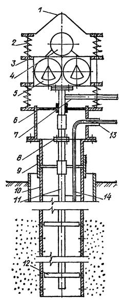
Рис. 5. Вибрационная гидродинамическая обработка скважин при разглинизации или восстановлении их производительности виброустановкой ВУР
1 - подвеска; 2 - пружины; 3 - направляющие стержни; 4 - электродвигатель; 5 - вибромеханизм; 6 - герметизатор устья скважины; 7 - патрубок для отвода воды; 8 - фланцы; 9 - переходник; 10 - эксплуатационная колонна; 11 - труба; 12 - рабочий орган; 13 - отвод; 14 - шланг для подачи воздуха; 15, 16 - резино-металлические диски для фильтров малого и большого диаметра
Таблица 13
|
Виброустановка |
||
|
ВУР-2 |
ВУР-3 |
|
|
Предельная глубина обрабатываемой скважины, м |
120 |
250 |
|
Минимальный диаметр эксплуатационной колонны, мм |
168 |
168 |
|
Диаметр фильтровой колонны, мм |
114 - 325 |
114 - 426 |
|
Максимальная масса рабочего органа, кг |
1000 |
2000 |
|
Масса установки (без рабочего органа), кг |
800 |
1300 |
|
Мощность привода, кВт |
7,5 |
13 |
Комбинированное действие гидродинамического давления и потока откачиваемой воды обеспечивает эффективное разрушение глинистой корки на стенках скважины и фильтра, а также вынос глинистых частиц из призабойной зоны. Вибрационная гидродинамическая обработка скважины в течение одного-двух часов позволяет сократить время освоения скважин до одной-двух рабочих смен при достижении в период этого срока полного осветления откачиваемой воды.
При освоении скважин на воду виброустановки ВУР целесообразно применять со специализированными самоходными агрегатами, позволяющими комплексно решать все вопросы этого вида работ и сократить до минимума вспомогательные операции и ручной труд (табл. 14).
Таблица 14
|
Техническая характеристика самоходных агрегатов для освоения и ремонта скважин на воду |
Самоходные агрегаты |
|
|
АВР-2 |
АВР-1 |
|
|
Предельная глубина обслуживаемых скважин, м |
120 |
300 |
|
Высота мачты от поверхности земли до оси кран-блока, мм |
9000 |
14000 |
|
Расстояние от оси мачты до отвеса рабочего каната, мм |
1500 |
2200 |
|
Рабочая грузоподъемность, кг |
2000 |
5000 |
|
Общая транспортная масса с прицепом и виброустановкой, кг |
7000 |
7000 |
Особенности технологии работ при вибрационной гидродинамической обработке скважин с помощью виброустановок ВУР и специализированных самоходных агрегатов приведены в ВСН 219-79/ММСС СССР.
3.31. В отличие от гидравлических и гидроимпульсных способов разглинизации скважин применение реагентных способов позволяет наиболее полно произвести удаление кольматирующих образований не только с фильтра скважины, но и из ее прифильтровой зоны.
Освоение скважин с применением солянокислотной обработки пласта производится в карбонатных породах или при использовании меловых растворов.
При освоении скважин, каптирующих песчаные водонасыщеные породы, используют так называемые глино-кислотные растворы, представленные смесями соляной кислоты и плавиковой или ее солями, например 10 - 15 % HCl + 3 - 5 % NH4F · HF. Для стабилизации раствора рекомендуется вводить в него до 2 % уксусной кислоты СН3СООН. Процесс растворения глинистых образований интенсифицируется при нагреве раствора не свыше 50 °С.
Эффективное разрушение глинистых кольматирующих образований на фильтре и в прифильтровой зоне производят раствором гидразина солянокислого N2H4 · 2HCl с концентрацией 8 - 10 %, композицией реагентов, состоящих из бисульфата натрия водного NaHSО4´H2O (5 - 7 %) и гидразина сернокислого N2H4 · H2SО4 (1,5 - 3 %), карбоната натрия Nа2СО3 (10 - 12 %) и перекиси водорода H2O2 (1,5 - 3 %), солей аммония (1,5 - 3 %) и перекиси водорода (1,5 - 3 %). Процесс разрушения глинистых образований этими растворами интенсифицируется в диапазоне температур 40 - 60 °С. Технология реагентной обработки скважин рассмотрена в разд. 19. При правильной технологии реагентной разглинизации скважин время обработки не превышает трех часов.
3.32. Среди комбинированных способов освоения скважин наиболее совершенным является способ виброреагентной разглинизации скважин с использованием раствора гидразина солянокислого и бисульфата натрия с добавкой гидразина сернокислого. Общее время обработки скважин этим способом находится в пределах 1,5 - 2 ч.
3.33. Шахтные колодцы представляют собой вертикальные выработки с большими размерами поперечного сечения по сравнению с водозаборными скважинами. Их применение, как уже отмечалось, должно быть ограничено эксплуатацией подземных вод водоносных горизонтов, залегающих на сравнительно небольших глубинах, обычно до 30 м.
Шахтные колодцы состоят из следующих конструктивных элементов: надземной части - оголовка, ствола, водоприемной части, водосборной части - зумпфа (рис. 6).
Рис. 6. Общая схема шахтного колодца
1 - отмостка; 2 - оголовок; 3 - замок; 4 - ствол шахты; 5 - водоприемная часть; 6 - зумпф
Оголовок предназначен для защиты от попадания в колодец загрязненных поверхностных вод сверху, а также для создания удобных в эксплуатации условий (подъема и разбора воды, наблюдений за состоянием колодца и т.п.). В местах с низкими температурами устройство оголовка в сравнительно неглубоких колодцах необходимо также и для защиты от промерзания. Для предохранения колодца от обрушения и загрязнения его стенки укрепляют.
Возвышение оголовка колодца над поверхностью земли по санитарным условиям должно приниматься не менее 0,8 м. Для предохранения от загрязнений оголовок перекрывается крышкой, над ним устраивают навесы или будки. Вокруг колодца (в земле) укладывают глиняный замок, а поверхность земли для лучшего отвода воды замащивается или асфальтируется с уклоном в сторону от колодца.
Оголовок и ствол должны быть непроницаемы, чтобы вода (поверхностная или грунтовая) из самых верхних водоносных горизонтов не могла проникать в колодец.
3.34. Водоприемная часть шахтных колодцев в зависимости от гидрогеологических условий и глубины устраивается только в дне или стенках или же в дне и стенках колодца. Дно колодца при приеме воды через него должно быть снабжено гравийным фильтром или оборудовано плитой из пористого бетона. В стенках при приеме воды через них должны быть устроены специальные окна из пористого бетона или окна, заполненные гравийным фильтром.
Зумпф устраивается в том случае, когда в колодцах необходимо иметь некоторый запас воды; его размеры определяются величиной необходимого запаса воды.
В зависимости от рода материала, используемого для крепления стенок, существующие конструкции шахтных колодцев могут быть подразделены на деревянные, из каменной и кирпичной кладки, бетонные и железобетонные.
В настоящее время наиболее перспективны шахтные колодцы из сборных железобетонных элементов (колец, панцирных плит).
Шахтные колодцы для глубин 10, 20 и 30 м сооружаются из сборных железобетонных колец с фальцами высотой 1,05 м и внутренним диаметром 1 м при толщине стенок 8 см (рис. 7).
В устойчивых грунтах стык колец в стволе заделывается цементным раствором, а в песчаных грунтах (когда благодаря заклиниванию может происходить нависание колонны) применяются специальные конструкции стыка, работающие на разрыв.
Водоприемная часть принята в виде кольца из пористого бетона, армированного такой же сеткой, как и обсадные железобетонные кольца ствола колодца, причем для придания большей прочности в кольцах верхней и нижней частей имеются пояса из бетона. В нижней части колодца укладывается трехслойный обратный фильтр (см. рис. 7).
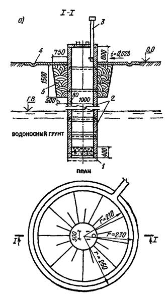
Рис. 7. Конструкция несовершенного шахтного колодца из сборных железобетонных колец
а - план и разрез; б - деталь водоприемной части; в - телескопическая конструкция колодца; 1 - фильтр; 2 - кольца; 3 - вентиляционная труба; 4 - щебеночное крепление; 5 - глиняный замок; 6 - донная плита из пористого бетона; 7 - вкладыши из пористого бетона; 8 - гравийная подсыпка; 9 - металлическое кольцо опускного приспособления; 10 - тампон из бетона; 11 - щебень; 12 - гравий; 13 - песок
При вскрытии песчаных и плывунных грунтов крепление колодца осуществляется кольцами диаметром 0,65 м. В этом случае в несовершенных колодцах донный фильтр устраивается в виде бетонной армированной плиты, укладываемой на щебеночно-гравийную обсыпку, толщина которой принимается равной 30 см.
Совершенные колодцы глубиной 20 и 30 м имеют несколько иную конструкцию, включающую устройство зумпфа из железобетонных колец (рис. 8).
Рис. 8. Конструкция совершенного шахтного колодца из сборных железобетонных колец
1 - кольца; 2 - вентиляционная труба; 3 - щебеночное крепление; 4 - глиняный замок; 5 - водоносный грунт; 6 - водоупорный грунт; 7 - зумпф
3.35. Проходка шахтных колодцев с креплением их железобетонными кольцами может быть механизирована с помощью агрегатов КШК-25 и КШК-30 и др.
Технические данные агрегата КШК-25:
Длина.......................................................................................................... 6700 мм
Ширина....................................................................................................... 2149 мм
Высота........................................................................................................ 3200 мм
Масса........................................................................................................... 5250 кг
Диаметр шахты до установки обсадных колец...................................... 1230 мм
Наибольшая глубина бурения.................................................................. 30 м
Мощность машины от двигателя ГАЗ-МК............................................. 22,1 кВт
Средняя производительность на глубину до 25 м................................. 1 - 165 м/ч
Расход горючего на 1 ч работы................................................................ 10 кг
Высота вышки........................................................................................... 5500 мм
Численность обслуживающего персонала.............................................. 1 моторист и 2 рабочих
В связных грунтах диаметр проходки шахты таким агрегатом составляет 1230 мм. В песчаных и плывунных грунтах колодец приходится разрабатывать телескопическим способом (см. рис. 7), при этом (в случае заклинивания колонны из колец диаметром 1 м) дальнейшая проходка ствола шахты производится буром диаметром 560 мм с уширителем диаметром до 850 мм и закрепляется железобетонными кольцами диаметром 650 мм (последние опускаются на тросах с помощью ручных лебедок и наращиваются на суженную колонну по мере углубления шахты). Донную плиту опускают моторной лебедкой агрегата без предварительного понижения уровня воды в колодце. По окончании спуска ее прижимают буровыми штангами и производят откачку воды (бадьей агрегата), после чего плиту закрепляют вручную с помощью четырех вкладышей.
4.1. При отборе воды из рыхлых и неустойчивых полускальных и скальных пород в скважинах устанавливают фильтры.
Фильтр состоит из водоприемной (рабочей) части, надфильтровых труб и отстойников.
4.2. Длина надфильтровых труб зависит от конструкции скважины. Когда фильтр находится на колонне, то расположенные выше него надфильтровые трубы являются одновременно и эксплуатационной колонной.
В случае, когда эксплуатационная колонна имеет больший диаметр, чем фильтр, последний устанавливается впотай, причем верхняя часть надфильтровой трубы должна находиться выше башмака эксплуатационной колонны труб не менее чем на 3 м при глубине скважины до 50 м и не менее чем на 5 м при большей глубине скважины.
В плывунных и мелкозернистых песках и при установке фильтров впотай длина надфильтровой трубы должна приниматься не менее 5 м при любой глубине скважины.
Между эксплуатационной колонной и надфильтровой трубой должен быть установлен сальник.
Применяются сальники из различных материалов: резиновые, пеньковые, свинцовые, цементные и др. При установке гравийных фильтров роль сальника выполняет слой гравия высотой 3 - 5 м, засыпаемого между эксплуатационной колонной и фильтром.
4.3. Длина отстойников в фильтрах, как правило, должна приниматься 0,5 - 1 и не более 2 м. При этом также отстойники следует устраивать в основном для установки фонарей-центраторов и подъема фильтров с закреплением приспособлений для извлечения в его нижней части.
4.4. Конструкции фильтров должны отвечать следующим требованиям:
1) обладать необходимой механической прочностью и достаточной устойчивостью против коррозии и эрозионного воздействия воды;
2) диаметры фильтровых каркасов должны быть рассчитаны на максимальный пропуск воды со скоростью, не превышающей 1,5 - 2 м/с;
3) водопроницаемость фильтров должна быть значительно выше водопроницаемости водоносных пород, в которых они устанавливаются, и для данных гидрогеологических условий должна предусматриваться максимальной с учетом возможного химического и биологического кольматажа при эксплуатации водозаборов.
4) фильтры должны быть доступны для проведения мероприятий по восстановлению производительности скважин химическими реагентами и быть устойчивы к воздействию импульсных (взрыв ТДШ, пневмовзрыв и др.) и комбинированных методов (виброреагентных, пневмореагентных и др.).
4.5. Фильтры состоят из каркаса и водоприемной поверхности. Выпускаются следующие типы каркасов: стержневые; трубчатые с круглыми или щелевыми отверстиями; каркасы из штампованного листа; спирально-проволочные. Каркасы являются основой для водоприемной поверхности, которая устраивается из: проволочной обмотки, штампованного листа, металлических и неметаллических сеток.
В гравийно-галечниковых отложениях, а также в неустойчивых полускальных и скальных породах указанные типы каркасов могут использоваться без дополнительной водоприемной поверхности.
4.6. Наиболее распространенным и эффективным типом фильтров с точки зрения обеспечения длительной и устойчивой эксплуатации скважин являются гравийные фильтры, которые, в свою очередь, подразделяются на засыпные, кожуховые, блочные. Кожуховые и блочные фильтры собираются на поверхности и в готовом виде устанавливаются в скважинах.
Гравийные фильтры могут иметь в качестве поддерживающей основы непосредственно фильтры-каркасы (стержневые, трубчатые и др.) или различные водоприемные поверхности - проволочные обмотки, сетки и т.д.
Основные конструктивные схемы фильтров представлены на рис. 9, и в табл. 15 - 18 дана их краткая характеристика.
Рис. 9. Основные схемы конструкций фильтров водозаборных скважин
а - на основе стержневых каркасов; б - на основе трубчатых каркасов со щелевой перфорацией; в - на основе трубчатых каркасов с круглой перфорацией; г - гравийные фильтры; 1 - стержневой каркас на опорных кольцах; 2 - трубчатый каркас с круглой перфорацией; 3 - щелевой трубчатый каркас; 4 - проволочная обмотка из нержавеющей стали; 5 - опорная проволочная спираль; 6 - лист, штампованный из нержавеющей стали; 7 - опорные проволочные стержни под проволочную обмотку и лист; 8 - сетка из нержавеющей стали или латуни; 9 - сетка подкладная, синтетическая; 10 - рыхлая обсыпка; 11 - гравийная обсыпка в кожухе; 12 - гравийный блок
Таблица 15
|
Конструктивные особенности |
Материалы для изготовления |
|
|
Без дополнительной водоприемной поверхности |
Скважность фильтра до 60 %; ширина просвета между стержнями зависит от характера окружающих фильтр рыхлых или трещиноватых скальных пород (известняков, песчаников) |
Сталь прутковая Ст3, Ст5, Ст7 диаметрами 12, 14, 16 мм. Патрубки соединительные и кольца опорные из горячекатаных труб. Защита опорных каркасов против коррозии производится кремнийорганической краской ВН-30 или нанесением полиэтилена |
|
С водоприемной поверхностью из проволочной обмотки |
Скважность водоприемной поверхности в зависимости от толщины проволоки и просвета составляет 30 - 60 %. Крепление проволочных спиралей производится на основе эпоксидных смол |
Опорные каркасы из стержней обматываются проволокой из нержавеющей стали диаметром 2 - 4 мм. Крепление проволочной обмотки производится эпоксидной смолой ЭД-5 и ЭД-6 |
|
С водоприемной поверхностью из штампованного (просечного) листа |
Скважность штампованного (просечного) листа из нержавеющей стали в зависимости от ширины и высоты щели 18 - 30 % |
Штампованный лист из нержавеющей стали (ГОСТ 5282-82) толщиной 0,8 - 1 мм |
|
С водоприемной поверхностью из сеток |
Подбор сетки производится по расчету в зависимости от крупности частиц породы водоносного горизонта |
Проволочная обмотка под сетку из нержавеющей стали с шагом 10 - 15 мм. Сетка из нержавеющей стали или латуни гладкого плетения (ГОСТ 3187-76*) и квадратного плетения (ГОСТ 6613-86) |
Таблица 16
|
Фильтры на спирально-проволочных каркасах |
Конструктивные особенности |
Материалы для изготовления |
|
Без дополнительной водоприемной поверхности |
Скважность фильтра до 60 %; ширина просвета между витками проволочного каркаса зависит от характера окружающих фильтр рыхлых или трещиноватых скальных пород (известняков, песчаников) |
Сталь прутковая Ст3, Ст5, Ст7 диаметрами 2, 4, 6, 8 мм. Патрубки соединительные из горячекатаных труб. Защита опорных каркасов против коррозии производится кремнийорганической краской ВН-30 |
|
С водоприемной поверхностью из проволочной обмотки |
Скважность водоприемной поверхности в зависимости от толщины проволоки и просвета составляет 30 - 60 %. Крепление проволочных спиралей производится на основе эпоксидных смол |
Опорные каркасы обматываются проволокой из нержавеющей стали диаметром 2 - 4 мм. Крепление проволочной обмотки производится эпоксидной смолой ЭД-5 или ЭД-6 |
|
С водоприемной поверхностью из штампованного (просечного) листа |
Скважность штампованного (просечного) листа из нержавеющей стали в зависимости от высоты и ширины щели 18 - 30 % |
Штампованный лист из нержавеющей стали толщиной 0,8 - 1 мм |
|
С водоприемной поверхностью из сеток |
Скважность сеток 30 - 50 %; подбор сетки производится в зависимости от крупности частиц породы водоносного горизонта |
Сетка из нержавеющей стали или латуни гладкого плетения (ГОСТ 3187-76) и квадратного плетения (ГОСТ 6613-86) |
Таблица 17
|
Фильтры на трубчатых каркасах |
Конструктивные особенности |
Материалы для изготовления |
|
С круглой или щелевой перфорацией без дополнительной водоприемной поверхности |
Скважность каркаса 20 - 25 %; диаметр отверстий при установке в скальных и галечниковых породах 15 - 25 мм, а других породах - по расчету. Размер щелей: ширина 10 - 30 мм, длина 200 - 300 мм |
Трубы горячекатаные, электросварочные (ГОСТ 10706-76*), полиэтиленовые (ГОСТ 18599-83*); поливинилхлоридные (ТУ МХП 6-05-1573-72); асбестоцементные (ГОСТ 539-80) |
|
С водоприемной поверхностью из проволочной обмотки |
Скважность водоприемной поверхности из проволочной обмотки до 30 - 60 %. Зазор между витками проволоки определяется по расчету в зависимости от крупности частиц пород или обсыпки. Намотка проволоки производится по стержням и закрепляется эпоксидной смолой |
Подкладочная проволока из стали Ст3, Ст5. диаметром 5 - 10 мм. Проволочная обмотка из нержавеющей стали (ГОСТ 5632-72*) диаметром 2 - 4 мм. Эпоксидная смола ЭД-6 и ЭД-5. |
|
С водоприемной поверхностью из штампованного стального листа с отверстиями различной конфигурации |
Скважность штампованного просечного листа в зависимости от ширины и высоты щели 18 - 30 %. Между опорным каркасом и листом создается дренажное пространство, отводящее воду внутрь фильтра |
Штампованный лист из нержавеющей стали (ГОСТ 5282-82) толщиной 0,8 - 1 мм. Проволока подкладочная диаметром 5 - 10 мм, резиновый или хлорвиниловый шнур |
|
С водоприемной поверхностью из сеток |
Подбор сеток производится по расчету в зависимости от крупности частиц породы водоносного горизонта |
Подкладочные стержни из нержавеющей стали и синтетических сеток. Сетки гладкого (ГОСТ 6613-80) и квадратного (ГОСТ 3187-76*) плетения |
Таблица 18
|
Конструктивные элементы |
Материалы для изготовления |
|
|
С обсыпкой на забое скважины |
Проходные отверстия на фильтрах устраиваются с учетом гранулометрического состава гравийной обсыпки. В зависимости от гранулометрического состава пород и химического состава подземных вод гравийные обсыпки могут быть однослойными или двухслойными, реже трехслойными |
Каркасно-стержневые и спирально-проволочные и трубчатые фильтры с водоприемными поверхностями из проволоки, нержавеющей стали и штампованного листа с использованием материалов |
|
Гравийные кожуховые, собираемые на поверхности земли |
Кожуховые фильтры устанавливаются в скважинах ограниченного диаметра с минимальной толщиной обсыпки 35 - 50 мм. Обсыпка не должна содержать пылевато-глинистых частиц |
Опорные каркасы те же. Гравийная обсыпка вокруг каркасов удерживается простой стальной сеткой квадратного плетения 2×2 см или 3×3 см. При устройстве кожухов возможно применение сеток квадратного плетения из полистирола, из штампованной пленки из винипласта или из металлического листа толщиной 0,8 - 1 мм |
|
Блочного типа, собираемые на поверхности земли |
Гранулометрический состав гравия в блочных фильтрах подбирается с учетом добавок цемента и водоцементного фактора или других вяжущих полимерных материалов |
Каркасы стержневые и трубчатые. Блоки гравийные из пористого бетона |
4.7. Рекомендации по применению различных типов фильтров в зависимости от гидрогеологических условий приведены в табл. 19.
Таблица 19
|
Конструкции фильтров |
|
|
1. Скальные и полускальные неустойчивые породы, щебенистые и галечниковые отложения с преобладающей крупностью частиц 20 - 100 мм (более 50 % по массе) |
Фильтры-каркасы (без дополнительной фильтрующей поверхности) стержневые, спирально-проволочные, трубчатые с круглой и щелевой перфорацией, штампованные из стального листа толщиной 4 мм с антикоррозионным покрытием |
|
2. Гравий, гравелистый песок с преобладающей крупностью частиц от 2 до 5 мм (более 50 % по массе) |
Фильтры стержневые, спирально-проволочные и трубчатые с водоприемной поверхностью из проволочной обмотки или штампованного листа из нержавеющей стали. Фильтры, штампованные из стального листа толщиной 4 мм с антикоррозионным покрытием |
|
3. Пески крупные с преобладающим размером частиц 1 - 2 мм (более 50 % по массе) |
Фильтры стержневые, спирально-проволочные и трубчатые с водоприемной поверхностью из проволочной обмотки, штампованного листа и сеток квадратного плетения из нержавеющей стали. Фильтры, штампованные из стального листа толщиной 4 мм с антикоррозионным покрытием |
|
4. Пески среднезернистые с преобладающей крупностью частиц 0,25 - 0,50 мм (более 50 % по массе) |
Фильтры стержневые, спирально-проволочные и трубчатые с водоприемной поверхностью из проволочной обмотки, сеток квадратного плетения, штампованного листа из нержавеющей стали с песчано-гравийной обсыпкой |
|
5. Пески мелкозернистые с преобладающей крупностью частиц 0,1 - 0,25 мм (более 50 % по массе) |
Фильтры стержневые, спирально-проволочные и трубчатые с водоприемной поверхностью из проволочной обмотки, сеток галунного плетения, штампованного листа из нержавеющей стали с однослойной или двухслойной песчано-гравийной обсыпкой |
Примечания: 1. При применении фильтров на стержневых каркасах снижается расход металла. Стержневые и спирально-проволочные фильтры обладают лучшими гидравлическими свойствами и обеспечивают более эффективную работу скважин при длительной эксплуатации в водах неустойчивого химического состава, когда возникает опасность зарастания фильтров железистыми и карбонатными отложениями, в результате чего уменьшается производительность скважин. Фильтры на стержневых каркасах рекомендуется применять в скважинах глубиной до 200 м. 2. Фильтры из стальных труб предпочтительнее применять при больших глубинах скважин (более 20 м). 3. Фильтры щелевые штампованные из листа толщиной 4 мм с антикоррозионным покрытием могут устанавливаться в скважинах глубиной до 100 м. 4. Применение сеток из латуни на стальных каркасах без антикоррозионной защиты не рекомендуется из-за возможности электрохимической коррозии. 5. Применение сеток и проволоки из простых и оцинкованных сталей в фильтрах, рассчитанных на длительный срок эксплуатации, не допускается. 6. Блочные фильтры, как правило, предназначены для отбора небольшого количества воды. 7. Для антикоррозионной защиты фильтров допустимо применение следующих видов покрытий: полиэтиленовых; эмалевых; этиленовых; резиновых на основе жидких наиритов; перхлорвиниловых; кремнийорганических.
4.8. Конструкция и размеры фильтра принимаются в зависимости от гидрогеологических условий, дебита и режима эксплуатации с учетом требований п. 4.4.
4.9. Прочностные показатели, характеризующие статическую устойчивость фильтров и определяющие предельно возможную глубину их установки, указываются в соответствующих технических условиях заводов-изготовителей.
4.10. Степень химической коррозии фильтров зависит от содержания в воде некоторых компонентов, обусловливающих растворение металлов. Такими компонентами являются CO2, О2, H2S, HCl, H2SO4. При каптаже вод питьевого качества с небольшой минерализацией возможность коррозии за счет нарушения углекислотного равновесия можно прогнозировать, используя показатель Ризнера - Ri,
где рНs - показатель водородных ионов, отвечающий равновесному содержанию в воде углекислых соединений.
При Ri < 9 вода коррозионная, если 7 < Ri < 9, то возможно развитие процессов коррозии с малой скоростью. При Ri < 7 вода склонна к выделению кольматирующих образований. Фильтры из низкоуглеродистой стали без антикоррозионных покрытий применимы при Ri = 7 - 8, при наличии в конструкции латунных материалов следует иметь в виду, что оптимальная область их применения находится при Ri = 6,5 - 8,5; нержавеющая сталь характеризуется максимальной устойчивостью и применима даже при Ri = 12 - 15.
При каптаже скважинами подземных вод, содержащих сероводород, скорость коррозии стальных водоподъемных и обсадных труб может достигать значительных величин - 8 - 10 мм/год, поэтому в этих случаях обязательно применение антикоррозионных конструкций.
Электрохимическую коррозию следует предотвращать, используя в конструкции фильтров металлы с близкими электродными потенциалами.
Если в процессе эксплуатации скважин возможно привлечение грунтовых вод с заболоченных участков, следует учитывать наиболее вероятное уменьшение величины рН отбираемых вод и увеличение концентрации H2S, что способствует более интенсивному проявлению коррозионных свойств подземных вод.
4.11. Диаметр фильтра-каркаса устанавливается исходя из проектного дебита скважины, параметров водоподъемного оборудования и с учетом возможности устройства гравийной обсыпки. По условиям ремонта скважин минимальный диаметр каркаса фильтра следует принимать не менее 100 - 150 мм. Скорость движения воды в водоподъемных трубах не должна превышать 1,5 - 2 м/с.
4.12. Длина фильтра в однородных водоносных пластах мощностью m = 10 - 15 м принимается равной 0,8 - 0,9 т (фильтр должен устанавливаться на расстоянии не менее 0,5 - 1 м от кровли и подошвы пласта).
При мощности m > 10 - 15 м длина фильтра определяется в зависимости от производительности скважин, изменения водопроницаемости пород и гидрохимических условий.
Теоретически в однородных пластах величина гидравлических потерь в фильтре растет до определенных пределов, и при некоторых соотношениях размеров фильтра (его диаметра, длины, скважности) гидравлические потери и приток к скважине должны оставаться постоянными.
Тем не менее, в реальных условиях, учитывая неоднородность водоносного горизонта и возможность интенсивного химического зарастания фильтров, следует увеличивать длину и размеры отверстий фильтров. При этом в первую очередь фильтры должны устанавливаться в наиболее водопроницаемых зонах водоносного горизонта.
В безнапорных водоносных горизонтах длина фильтра определяется с учетом понижения динамического уровня в скважине: в этом случае мощность m ≈ he - S0/2, где he - первоначальная мощность безнапорного горизонта; S0 - проектное понижение уровня в скважине.
4.13. При выборе типа фильтра для оборудования скважины необходимо исходить из применения конструкции, коэффициент водопроницаемости которой равен или превышает коэффициент водопроницаемости водоносных пород или гравийных обсыпок, контактирующих с фильтром. Наиболее предпочтительно использование фильтров-каркасов. Сравнительные данные о проницаемости различных фильтров приведены на рис. 10. Коэффициент водопроницаемости каркасно-стержневых фильтров изменяется от 1,5 до 2,15 см/с, проволочных конструкций на трубчатом каркасе - от 0,42 до 1,8 см/с, фильтра с водоприемной поверхностью из штампованного листа - от 0,23 до 0,52 см/с, сетчатых фильтров с сеткой галунного плетения - от 0,08 до 0,37 см/с.
Рис. 10. Изменение проницаемости различных фильтров от скважности
1 - каркасно-стержневого; 2 - проволочного на трубчатом каркасе; 3 - с мостообразными отверстиями; 4 - с водоприемной поверхностью из штампованного листа; 5 - с сеткой галунного плетения
Фильтрационные характеристики существенно ухудшаются в блочных конструкциях и при усложнении водоприемной поверхности. Величина коэффициента водопроницаемости новых модификаций рекомендованных фильтров устанавливается индикаторным методом.
4.14. Размер проходных отверстий фильтра назначают с учетом гранулометрического состава пород, слагающих водоносный горизонт, и соответствующего размера частиц гравийной обсыпки. Для подбора размера отверстий фильтров рекомендуются следующие эмпирические соотношения (табл. 20).
Таблица 20
|
Рекомендуемые размеры отверстий фильтров |
||
|
в однородных породах Kн ≤ 2 |
в неоднородных породах Кн > 2 |
|
|
С круглой перфорацией |
2,5 - 3d50 |
3 - 4d50 |
|
Сетчатый |
1,5 - 2d50 |
2 - 2,5d50 |
|
С щелевой перфорацией |
1,25 - 1d50 |
1,5 - 2d50 |
|
Проволочный |
1,25d50 |
1,5d50 |
Примечания: 1. 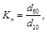
2. Меньшие значения численных коэффициентов при d50 относятся к мелкозернистым породам, большие - к крупнозернистым.
4.15. Размеры проходных отверстий фильтров при устройстве гравийной обсыпки должны приниматься равными среднему диаметру частиц слоя обсыпки d50, примыкающего к стенкам фильтра.
Основным требованием к подбору гравийных обсыпок является обеспечение суффозионной устойчивости пород в прискважинной зоне при сохранении относительно небольших контактных потерь напора.
При подборе гравийного фильтра в относительно однородных грунтах (Кн < 5) должно выдерживаться соотношение
(2)
где d50 и D50 - средний диаметр частиц соответственно водоносных пород и материала обсыпки.
Для подбора размера частиц обсыпки в существенно суффозионных породах, при значительной их неоднородности (Kн < 5) можно пользоваться диаграммой рис. 11. Расчетную величину среднего диаметра обсыпки получают умножением на 5 найденной по графику величины характерного диаметра (на пересечении с кривой зернового состава).
Например, точке А на рис. 11 на пересечении кривой гранулометрического состава водоносных пород с кривой характерного диаметра (пунктирная линия) соответствует расчетный диаметр 2,6 мм. Следовательно, d50 гравия обсыпки будет 2,6×5 = 13 мм.
Рис. 11. График для определения состава гравийной обсыпки
1 - кривые зернового состава песков; 2 - кривая характерного диаметра
Подбор механического состава материала при
устройстве двух и трехслойных гравийных обсыпок фильтров надлежит производить
по соотношению 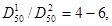
4.16. Материал обсыпки должен быть однородным. Во всех случаях количество частиц максимального и минимального диаметра в составе обсыпки не должно превышать 10 %.
Оптимальная толщина обсыпки должна составлять 150 - 200 мм. Минимальную ее величину следует выбирать в зависимости от размера зерен гравия и песка (табл. 20а).
Таблица 20а
|
До 4 |
4 - 12 |
12 - 35 |
|
|
Толщина слоя обсыпки, мм |
60 |
70 |
80 |
В скважинах с многослойной обсыпкой толщина слоя из мелкого гравия (песка) не должна приниматься меньше толщины опорного слоя гравия. Применение для гравийных фильтров гравия неоднородного состава нецелесообразно из-за существенного расслоения его в процессе засыпки.
Примечание. Материал, используемый для гравийных фильтров, должен быть незагрязненным, не содержать глинистых, пылеватых частиц и быть надежным в санитарном отношении.
5.1. Основными задачами гидрогеологических расчетов водозаборных скважин и шахтных колодцев являются:
а) определение дебита скважин и колодцев и понижения уровня подземных вод в процессе эксплуатации водозаборного сооружения;
б) оценка возможного влияния данного водозабора на существующие или намечаемые к строительству водозаборы на других участках;
в) оценка влияния проектируемого водозабора на окружающую природную обстановку (поверхностный сток, растительность и др.).
Одновременно с решением этих задач на основе гидрогеологических расчетов уточняют схему расположения водозаборных скважин и колодцев, их количество и размеры (глубину, диаметр).
5.2. При гидрогеологических расчетах водозаборов обычно в качестве исходной величины принимается дебит Q, соответствующий проектируемому водопотреблению. Довольно часто, однако, приходится определять максимальный дебит Qмакс, который может быть получен на рассматриваемом участке водоносного пласта или на всей площади его распространения. В обоих случаях расчетами устанавливаются размеры водозаборного сооружения, количество, расположение и дебиты скважин и колодцев при заданном времени эксплуатации и максимально допустимых понижениях уровня Sдоп.
Гидрогеологические расчеты выполняются обычно для нескольких вариантов расположения водозаборов, по которым производятся технико-экономическое сопоставление и выбор оптимальной схемы водозабора.
Во всех вариантах расчетные понижения уровня сопоставляются с допустимыми понижениями.
При Sрас > Sдоп проектируемый дебит водозабора не может считаться обеспеченным. В этом случае необходимо увеличить число скважин (колодцев), уменьшив дебит каждой из них, или распределить их на большей площади.
При Sрас < Sдоп дебит водозабора может быть увеличен, а если в этом нет надобности, то может быть сокращено количество скважин (колодцев) и уменьшено расстояние между ними.
Приближенно величина допустимого понижения уровня может быть определена следующим образом:
для безнапорных вод
для напорных вод
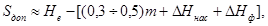
где he и Не - соответственно первоначальная глубина воды до водоупора (в безнапорных пластах) и напор над подошвой горизонта (в напорных пластах); Δhнас и ΔHнас - максимальная глубина погружения насоса (нижней его кромки) под динамический уровень воды в скважине; Δhф и ΔHф - потери напора на входе в скважину; т - мощность напорного пласта.
Гидрогеологические расчеты водозаборных сооружений могут быть сделаны при той или иной степени схематизации гидрогеологической обстановки различными методами, используемыми при оценке запасов подземных вод, а именно; гидродинамическими, гидравлическими, балансовыми, гидрогеологической аналогии, а также комбинированными.
Гидродинамические методы расчетов водозаборов основаны на аналитическом или численном решении краевых задач теории фильтрации подземных вод. Соответственно они подразделяются на аналитические методы и методы моделирования на аналоговых (АВМ), электронных цифровых (ЭВМ) или гибридных (АЦВМ) вычислительных машинах. При достаточно простых гидрогеологических условиях (однородные фильтрационные и емкостные свойства, прямолинейные границы водоносных пластов, неизменяющиеся условия на границах) целесообразнее всего применять аналитические методы, обеспечивающие достаточную для решения практических задач точность.
В сложных гидрогеологических условиях, характеризующихся существенной неоднородностью гидрогеологических параметров, сложной конфигурацией границ пласта и контуров некондиционных вод, изменяющимися во времени источниками формирования эксплуатационных запасов, наличием нескольких взаимосвязанных водоносных горизонтов, а также при значительном количестве проектируемых водозаборов и большом числе вариантов их размещения следует применять методы моделирования.
Гидравлические методы заключаются в определении расчетного дебита водозабора или прогнозных понижений уровней в скважинах по эмпирическим данным, непосредственно полученным в процессе проведения опыта и комплексно учитывающим влияние различных факторов, определяющих режим работы водозабора.
Балансовый метод применяется при определении величины сработки естественных запасов подземных вод, а также частичного или полного перехвата водозабором расхода естественного потока и привлекаемых источников питания. Балансовый метод является приближенным методом расчета, поэтому он используется, главным образом, как дополнительный в сочетании с гидродинамическим и гидравлическим методами.
Метод гидрогеологической аналогии заключается в определении модуля эксплуатационных запасов (или отдельных его составляющих) оцениваемого водоносного горизонта, устанавливаемого в пределах наиболее изученных участков по данным детальных разведочных работ или эксплуатации действующих водозаборов Метод основан на переносе данных о режиме эксплуатации подземных вод на участках действующих водозаборов на оцениваемые участки, находящиеся в аналогичных условиях с эксплуатируемыми.
Все указанные методы расчетов производительности водозаборов подземных вод имеют свои достоинства и недостатки. Поэтому иногда целесообразным является применение комбинированных методов, т.е. совместного использования при расчетах одновременно нескольких методов.
Основные расчетные зависимости, полученные аналитическими методами для оценки производительности водозаборных скважин и колодцев, работающих в относительно простых и наиболее часто встречающихся гидрогеологических условиях, приведены для:
а) долин рек (полуограниченные пласты с прямолинейным контуром питания и пласты-полосы);
б) артезианских бассейнов (в частности, в неограниченных по площади распространения изолированных и слоистых водоносных горизонтах);
в) ограниченных по площади распространения пластов (для некоторых схем закрытых и полузакрытых водоносных структур).
Аналитические решения для расчета водозаборов в более сложных природных условиях приведены в ряде специальных монографий и статей. При весьма сложных природных условиях или недостаточно полной гидрогеологической информации следует применять другие методы расчета (аналоговое или численное моделирование, гидравлические методы и др.).
5.3. Общая расчетная зависимость для определения понижений уровней подземных вод в любой точке водоносного горизонта может быть представлена следующим образом:
для безнапорных водоносных горизонтов
для напорных водоносных горизонтов
Здесь Q - суммарный дебит водозабора; k - коэффициент фильтрации водовмещающих пород, т - мощность водоносного горизонта; km - водопроводимость водоносного горизонта, he - естественная (до начала откачки) мощность грунтового потока; R - гидравлическое сопротивление, зависящее от гидрогеологических условий и типа водозаборного сооружения.
При определении понижения уровня подземных вод непосредственно в скважине или шахтном колодце в формулах (5) и (6) следует принимать
R = R0 + βζ, (7)
где R0 - значения гидравлического сопротивления R в точке расположения скважины (колодца); ζ - дополнительное сопротивление, учитывающее фильтрационное несовершенство скважины или колодца, β = Q0/Q - отношение расхода рассматриваемой скважины Q0 к суммарному расходу водозабора Q.
Расход водозаборного сооружения определяется по следующим зависимостям:
для безнапорных водоносных горизонтов
для напорных водоносных горизонтов
Здесь Sдоп - максимально допустимое понижение уровня подземных вод.
Указания по методике определения величин R, R0 даны в табл. 21, 23 и др.; ζ в формулах (8) и (9) должна определяться для скважин (колодцев), работающих на наиболее нагруженном участке водозабора, где ожидается наибольшее понижение уровня подземных вод.
5.4. Важнейшим фактором, определяющим условия эксплуатации береговых водозаборов, является наличие постоянных поверхностных водотоков, с которыми гидравлически связаны водоносные горизонты. Благодаря этому производительность береговых водозаборов обеспечивается, в основном, за счет инфильтрации речных вод в эксплуатируемые водоносные горизонты. Привлечение поверхностного стока приводит к быстрой стабилизации уровней подземных вод в скважинах береговых водозаборов.
В табл. 21 приведены расчетные зависимости для определения гидравлических сопротивлений R и R0 при работе водозаборов различного типа вблизи совершенных рек в условиях установившейся фильтрации. Под совершенными в фильтрационном отношении реками понимаются такие, в которых фильтрация поверхностных вод в водоносный пласт через русловые отложения происходит без существенных потерь напора и деформации потока в подрусловой зоне, в связи с чем уровни подземных и поверхностных вод на урезе реки практически совпадают. К совершенным рекам можно отнести реки значительной ширины (ширина больше мощности водоносного горизонта под руслом реки) без илистого или кольматированного донного слоя, препятствующего инфильтрации речных вод в водоносные горизонты. Условные обозначения к формулам приведены в табл. 21.
Таблица 21
|
Зависимости для расчета водозаборов в долинах рек |
||||||
|
Схема пласта |
Сопротивление |
№ формулы |
Сопротивление |
№ формулы |
Дополнительные данные |
|
|
Скважина |
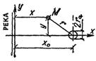 |
(10) |
(11) |
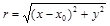 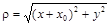 |
||
|
Линейный ряд |
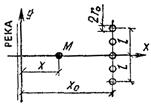 |
(12) |
(13) |
l > (3÷4)x0 n - количество скважин |
||
|
Линейный ряд |
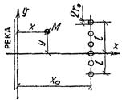 |
(14) |
(15) |
l < (3÷4)x0 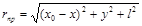 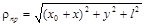 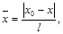 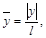 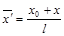 |
||
|
Скважина |
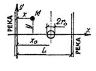 |
(16) |
(17) |
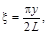 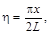 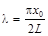 |
||
|
Скважина |
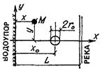 |
(18) |
(19) |
|
||
|
Колодец |
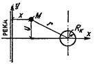 |
(20) |
(21) |
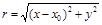
|
||
Численные значения функции , используемой в формуле 14 табл. 21, даны в табл. 22.
Таблица 22
|
Значения функции , при , равном |
||||||
|
0 |
1 |
1,2 |
1,5 |
2 |
2,5 |
|
|
0 |
1 |
0,65 |
0,42 |
0,23 |
0,16 |
0,1 |
|
0,5 |
0,46 |
0,35 |
0,3 |
0,22 |
0,14 |
0,09 |
|
1 |
0,21 |
0,19 |
0,18 |
0,15 |
0,11 |
0,08 |
|
1,5 |
0,12 |
0,11 |
0,11 |
0,1 |
0,08 |
0,06 |
|
2 |
0,07 |
0,07 |
0,07 |
0,06 |
0,06 |
0,00 |
|
2,5 |
0,05 |
0,05 |
0,05 |
0,05 |
0,04 |
0,04 |
Приведенные в табл. 21 зависимости можно использовать также для расчета нескольких взаимодействующих водозаборов при различном их расположении. В этом случае суммарное понижение уровня можно найти по формулам:
для безнапорных водоносных горизонтов
(22)
для напорных водоносных горизонтов
где Si - понижение, обусловленное действием отдельного i-го водозабора (i = 1, 2,..., n), п - общее количество водозаборов.
Пример расчета. Водозабор состоит из трех скважин, расположение которых указано на рис. 12. Требуется найти понижение уровня воды в скважине 2. Дебиты скважин одинаковы и равны Q = 2 тыс. м3/сут. Величина водопроводимости напорного водоносного горизонта равна km = 500 м2/сут. Радиус скважины 2r0 = 0,2 м, скважина совершенная.
Рис. 12. Схема к примеру расчета
Общее понижение уровня в скважине 2 найдено по формуле (23), которая в данном случае будет иметь вид
Sсум = S1 + S2 + S3,
где S1 и S3 - срезка уровня на скважине 2 соответственно от скважины 1 и 3; S2 - понижение уровня, обусловленное действием скважины 2.
Находим соответствующие гидравлические сопротивления для скважин 1 и 3 по формуле (10) табл. 21:
= 2,05;
R3 = = 1,28;
для скважины 2 - по формуле (11) табл. 21:
R2 = ln = 7,82.
Отсюда по формуле (6):
S1 = 1,3 м;
S2 = 7,82 = 4,6 м;
S3 = 1,28 = 0,8 м.
Следовательно,
Sсум = 1,3 + 4,6 + 0,8 = 6,7 м.
5.5. Для артезианских бассейнов характерно этажное строение водоносной толщи. Хорошо проницаемые водоносные отложения чередуются здесь с водоупорными или слабопроницаемыми раздельными слоями. В соответствии с этим можно выделить следующие расчетные схемы: изолированные, не ограниченные по площади водоносные горизонты; слоистые водоносные горизонты.
5.6. Изолированные неограниченные пласты характеризуются отсутствием внешних источников питания подземных вод. Дебиты водозаборов обеспечивают притоком воды за счет осушения водоносных пород и сработки напоров подземных вод. В связи с этим при эксплуатации водозаборных сооружений даже в течение весьма длительного времени имеет место неустановившаяся фильтрация, т.е. уровни подземных вод при работе водозаборов непрерывно снижаются.
Эксплуатация водозаборов в изолированных неограниченных пластах сопровождается обычно образованием обширных воронок депрессии, захватывающих площади в десятки и даже сотни квадратных километров. При проектировании водозаборов здесь необходимо учитывать возможное влияние намечаемого водоотбора на существующие водозаборные сооружения.
Основные расчетные зависимости для определения гидравлических сопротивлений R и R0 при работе водозаборов в изолированных неограниченных пластах приведены в табл. 23.
Обозначения, используемые в табл. 23, даны на соответствующих схемах. Кроме того, используются следующие обозначения: t - время, на которое рассчитывается понижение уровня подземных вод; а - коэффициент пьезопроводности пласта, a = km/μ; μ - водоотдача пород; ; - функция, численные значения которой даны в табл. 22.
Таблица 23
|
Зависимости для расчета водозаборов в изолированных неограниченных пластах |
||||||
|
Схема водозабора |
Сопротивление |
№ формулы |
Сопротивление |
№ формулы |
Дополнительные данные |
|
|
Скважина |
(24) |
(25) |
|
|||
|
Линейный ряд |
(26) |
(27) |
; , n - количество скважин |
|||
|
Кольцевая система |
(28) |
(29) |
|
|||
|
Колодец |
(30) |
(31) |
|
|||
5.7. Все приведенные в табл. 21 - 24 расчетные зависимости справедливы при постоянном расходе водозаборных сооружений. В случае если дебит водозабора изменяется во времени, следует представить действительный график изменения расхода водозабора ступенчатой линией. Тогда понижения уровня подземных вод находятся по формулам, указанным в таблицах, в которых величина Q принимается равной начальному значению дебита водозабора Q1, а вместо гидравлического сопротивления подставляется величина , равная:
(32)
где R(t - tj) - гидравлическое сопротивление при постоянном расходе (см. табл. 23), которое определяется на момент времени (t - tj); tj - время начала действия j-й ступени; j - номер ступени с постоянным средним значением расхода водозабора:
β1 = 1,
k - количество выделенных ступеней изменения дебита водозабора.
5.8. Расчет понижений уровня в пласте при заданном постоянном уровне на водозаборе при достаточно большом времени (at/r02 > 500; r0 - размеры водозабора в плане) приближенно может быть проведен по следующим формулам:
Здесь R - гидравлическое сопротивление водозабора при постоянном расходе; R0 - значение этого сопротивления в точке расположения водозабора; Q(t) - изменяющийся во времени расход водозабора; S0 - заданное понижение уровня на водозаборе.
Понижения уровня при действии нескольких водозаборов находятся по рекомендациям, изложенным в п. 5.4, формулы (22) и (23).
5.9. В слоистых водоносных пластах формирование запасов подземных вод происходит под влиянием перетекания подземных вод в эксплуатируемый горизонт из соседних питающих пластов через слабопроницаемые раздельные слои в кровле или подошве горизонта. Режим работы водозабора в общем случае неустановившийся, но при больших запасах воды в питающих пластах и интенсивном перетекании понижения уровней на водозаборе могут стабилизироваться.
Основные расчетные зависимости для определения гидравлических сопротивлений R и R0 приведены в табл. 24. Формулы (34) и (35) табл. 24 относятся к случаю, когда верхний слой имеет весьма слабую проницаемость (k0 << k), содержит воды со свободной поверхностью и обладает значительной водоотдачей (μ >> μ*). Нижний эксплуатируемый пласт сложен хорошо проницаемыми породами. Такая схема характерна для неглубоко залегающих артезианских водоносных пластов.
В схеме трехслойной толщи эксплуатируемый пласт гидравлически связан с соседним питающим водоносным горизонтом с параметрами (km)п и μп. Эта связь осуществляется путем перетекания подземных вод из питающего пласта в эксплуатируемый через раздельный слой с параметрами k0, m0. Если при этом понижения уровня воды в питающем водоносном горизонте невелики (S ≈ 0), то по истечении некоторого времени фильтрация подземных вод к водозабору приобретает установившийся характер, формулы (37) и (39) табл. 24. Численные значения функции K0(z) даны в табл. 25.
Расчетные зависимости, приведенные в табл. 24, характеризуют работу одиночной скважины. При расчете системы взаимодействующих скважин следует использовать рекомендации, данные в п. 5.4, формулы (22) и (23).
Пример расчета. Напорный водоносный горизонт (коэффициент фильтрации k = 20 м/сут, мощность m = 50 м, упругая водоотдача μ* = 10-4 перекрыт сверху слоем суглинка мощностью m0 = 10 м с коэффициентом фильтрации k0 = 0,1 м/сут и водоотдачей μ = 0,08. В суглинках развит безнапорный водоносный горизонт, гидравлически связанный с нижележащим напорным горизонтом. Требуется найти понижение уровня воды в совершенной скважине (r0 = 0,2 м) при отборе Q = 4 тыс. м3/сут в течение 25 лет ≈ 104 сут.
Для расчета используем формулу (35) табл. 24.
Обобщенный коэффициент пьезопроводности в данном случае равен:
м3/сут.
Следовательно,
= 1,68 · 104 м.
Тогда
= 11,3,
а понижение уровня по формуле (6)
= 7,2 м.
Таблица 24
|
Зависимости для расчета водозаборов в слоистых пластах |
||||||
|
Схема водозабора |
Сопротивление |
№ формулы |
Сопротивление |
№ формулы |
Дополнительные данные |
|
|
Двухслойный |
(34) |
(35) |
|
|||
|
Трехслойный |
а) Sп > 0 |
(36) |
a) Sп > 0 |
(37) |
|
|
|
б) Sп 0 |
(38) |
б) Sп 0 |
(39) |
; |
||
Таблица 25
|
Значения функций K0(z), erfc(z) и ierfc(z) |
|||||||
|
К0(z) |
еrfс(z) |
iеrfс(z) |
z |
К0(z) |
еrfс(z) |
iеrfс(z) |
|
|
1 |
2 |
3 |
4 |
5 |
6 |
7 |
8 |
|
0 |
1 |
0,56 |
0,6 |
0,78 |
0,4 |
0,16 |
|
|
0,02 |
4,03 |
0,98 |
0,54 |
0,7 |
0,66 |
0,34 |
0,12 |
|
0,04 |
3,34 |
0,95 |
0,53 |
0,8 |
0,57 |
0,26 |
0,09 |
|
0,06 |
2,93 |
0,93 |
0,51 |
0,9 |
0,49 |
0,2 |
0,07 |
|
0,08 |
2,65 |
0,91 |
0,49 |
1 |
0,42 |
0,16 |
0,05 |
|
0,1 |
2,43 |
0,89 |
0,47 |
1,1 |
0,37 |
0,12 |
0,04 |
|
0,15 |
2,03 |
0,83 |
0,43 |
1,2 |
0,32 |
0,09 |
0,03 |
|
0,2 |
1,75 |
0,78 |
0,39 |
1,3 |
0,28 |
0,07 |
0,02 |
|
0,25 |
1,54 |
0,73 |
0,35 |
0,4 |
0,24 |
0,05 |
0,01 |
|
0,3 |
1,37 |
0,67 |
0,31 |
0,5 |
0,21 |
0,03 |
0,01 |
|
0,35 |
1,23 |
0,62 |
0,28 |
0,6 |
0,19 |
0,02 |
0,01 |
|
0,4 |
1,11 |
0,57 |
0,25 |
0,7 |
0,17 |
0,02 |
0 |
|
0,45 |
1,01 |
0,52 |
0,22 |
0,8 |
0,15 |
0,01 |
|
|
0,5 |
0,92 |
0,48 |
0,2 |
0,2 |
0,11 |
0 |
|
5.10. Под закрытыми пластами понимаются структуры, ограниченные со всех сторон непроницаемыми контурами, через которые приток воды в эксплуатируемый пласт можно считать практически равным нулю. В полузакрытых структурах непроницаемые границы лишь частично закрывают пласт.
Основными источниками питания водозабора здесь являются статические и упругие запасы подземных вод в центральных, а также статические запасы воды в краевых частях структуры, где водоносные горизонты выходят на поверхность. При эксплуатации водозаборов в закрытых и полузакрытых структурах обычно имеет место неустановившийся режим фильтрации.
В табл. 26 приведены формулы для определения гидравлических сопротивлений R и R0. Рассмотрены ограниченные пласты с 1 - 2 непроницаемыми границами и полностью закрытые водоносные горизонты.
В табл. 26 дан такой случай, когда при работе водозабора, располагающегося в области напорных вод (водоотдача μ*), происходит осушение пласта на участке выхода его на поверхность (водоотдача μ), формулы (42) и (43). Численные значения специальных функций erfc(z) и ierfc(z), входящих в некоторые формулы табл. 26, даны в табл. 25.
Таблица 26
|
Зависимости для расчета водозабора в ограниченных пластах |
||||||
|
Схема водозабора |
Сопротивление |
№ формулы |
Сопротивление |
№ формулы |
Дополнительные данные |
|
|
Полуограниченный |
(40) |
(41) |
|
|||
|
Полуограниченный с осушением |
(42) |
(43) |
|
|||
|
Пласт-полоса |
(44) |
(45) |
|
|||
|
Пласт-круг |
(46) |
(47) |
r* = yr;
|
|||
Расчет взаимодействующих скважин в ограниченных пластах может быть выполнен по формулам (22) и (23) п. 5.4.
5.11. Водозаборы при таком режиме устраиваются в случае периодически изменяющегося водопотребления. В частности, это имеет место при использовании подземных вод для орошения, когда водозаборы включаются в эксплуатацию только в вегетационный период. График водоотбора при этом имеет циклический характер и повторяется из года в год (рис. 13). Аналогично и уровни подземных вод на водозаборе испытывают периодические колебания. Понижения уровня могут быть найдены по формуле
S = Scp + ΔS, (48)
где Scp - среднее понижение уровня, обусловленное постоянным во времени средним водоотбором Qcp, причем
Qcp = (49)
где Qср - средний расход водозабора в период его эксплуатации; t0 - длительность периода работы водозабора (при орошении - продолжительность поливного периода); Т - длительность полного цикла работы водозабора (обычно год).
Рис. 13. График периодического водоотбора
Понижение Scp находится по соотношениям, в которых Q = Qcp. Гидравлические сопротивления R или R0 в зависимости от строения водоносного пласта рассчитываются на момент времени t от начала первого включения водозабора.
Величина S в формуле (48) представляет собой дополнительные колебания уровня относительно среднего положения. Приближенно она может быть оценена по следующей формуле
здесь R(t*) - гидравлическое сопротивление R (или R0) при t = t*; t* - время от начала последнего включения водозабора; R(t* - t0) - гидравлическое сопротивление при t = t* - t0. Максимальное понижение уровня будет при t* = t0. Тогда второй член в квадратных скобках в формуле (50) равен нулю.
Таким образом, при периодической эксплуатации водозабора темп сработки уровня и использования запасов подземных вод определяются в значительной мере средним расходом водозабора за все время эксплуатации.
Пример расчета. В напорном водоносном горизонте с параметрами km = 300 м2/cyт, а = 105 м2/сут работает водозаборная скважина (r0 = 0,2 м). Отбираемая вода используется для орошения, в связи с чем скважина эксплуатируется лишь 4 мес в году с расходом Q = 3 тыс. м3/сут. Требуется определить максимальное понижение уровня на скважине при эксплуатации ее в течение 25 лет = 104 сут.
Так как скважина работает в изолированном неограниченном пласте, для расчетов используем формулу (25) табл. 23.
Прежде всего найдем среднее понижение уровня Scp. Для этого по формуле (49) определяем среднюю величину водоотбора Qcp. В данном случае t0 = 4 мес 120 сут, T = 365 сут, следовательно,
Qcp = = 986 м3/сут.
Радиус влияния равен: rвл = 1,5 = 4,5 · 104 м. При этом по формуле (25) табл. 23 находим
R0 = = 12,3.
Следовательно, по формуле (6)
Sср = 12,3 = 6,4 м.
Дополнительное колебание уровня ΔS будет наибольшим в конце периода эксплуатации скважины, т.е. при t* = t = 120 сут, поэтому гидравлическое сопротивление R(t*) в формуле (50) определяем именно на этот момент времени. Радиус влияния, соответствующий t = t0, равен:
rвл = = 5,2 · 103 м,
и по формуле (35) табл. 24 получаем
R0(t*) = = 10,2.
Следовательно [формула (50)],
= 10,2 = 10,9 м.
Таким образом, максимальное понижение уровня в водозаборной скважине составит
S = 6,4 + 10,9 = 17,3 м.
5.12. Плановая неоднородность водоносных пластов обусловлена изменением фильтрационных параметров (водопроводимости и коэффициента пьезопроводимости) по простиранию водоносных горизонтов. Выделяются следующие типовые схемы неоднородного в плане пласта, состоящего из двух зон:
1) с прямолинейной границей раздела;
2) с круговой границей раздела.
Понижения уровня в случае неоднородного строения водоносного пласта для зоны расположения скважины находятся по формулам (5) и (6), в которых следует принимать km = (km)1, а гидравлическое сопротивление R = R1.
Если исследуемая точка находится в соседней зоне II (см. схемы в табл. 27), то R = R2.
Расчетные зависимости для определения сопротивлений R1 и R2 а также R0, характеризующего уровни на скважине, приведены в табл. 27. Значения функции Δ, используемой в формулах (51) - (53) табл. 27, даны в табл. 28 в зависимости от параметров
Взаимодействующие скважины в неоднородном пласте могут быть рассчитаны по формулам (22) и (23) п. 5.4.
5.13. Реальные неоднородные водоносные горизонты обычно имеют более сложное строение, чем представленные в табл. 27. Это относится, прежде всего, к величине водопроводимости пласта, которая подвержена гораздо большим изменениям, чем коэффициент пьезопроводности.
Таблица 27
|
Зависимости для расчета водозаборов в неоднородных пластах |
||||||
|
Схема пласта |
Сопротивление |
№ формулы |
Сопротивление |
№ формулы |
Дополнительные данные |
|
|
Прямолинейная |
(51) |
(53) |
|
|||
|
(52) |
|
|||||
|
Круговая |
(54) |
(56) |
|
|||
|
(55) |
||||||
Для приближенной оценки производительности водозаборов в сложных условиях можно использовать следующие практические приемы.
Вся исследуемая область в пределах зоны влияния водозабора схематично представляется в виде двух областей. В первой, в которой располагается водозабор, сохраняется присущее этой области значение водопроводимости; во второй, соседней области, величина водопроводимости осредняется
, (57)
где (km)1, (km)2,.... (km)n - водопроводимости пласта в различных зонах; F1, F2, …, Fn - площади этих зон в области влияния водозабора.
Дальнейший расчет водозаборного сооружения проводится в зависимости от вида полученной таким образом схематизированной области по формулам (51) - (53) или (54) - (56) табл. 27.
При этом, если водоносный пласт в пределах области влияния водозаборного сооружения всюду имеет напорный характер или всюду является безнапорным, то коэффициент пьезопроводности пласта можно принять одинаковым (средним) для всей области. Тогда функция Δ в формулах (52) - (53) будет равна нулю. Если же в пределах исследуемой области имеет место напорно-безнапорная фильтрация, величина поправки Δ может быть оценена по табл. 28.
Таблица 28
|
Значения функции Δ при v = (km)1/(km)2, равном |
|||||||||
|
0,01 |
0,03 |
0,1 |
0,3 |
1 |
3 |
10 |
30 |
100 |
|
|
10-3 |
0,12 |
0,3 |
0,65 |
0,99 |
0,9 |
0,6 |
0,24 |
0,09 |
0,03 |
|
10-2 |
0,09 |
0,23 |
0,56 |
0,92 |
0,95 |
0,58 |
0,23 |
0,09 |
0,03 |
|
10-1 |
0,04 |
0,12 |
0,34 |
0,64 |
0,74 |
0,48 |
0,20 |
0,07 |
0,02 |
|
10 |
0,05 |
0,13 |
0,39 |
0,91 |
1,53 |
1,42 |
0,75 |
0,31 |
0,1 |
|
102 |
0,09 |
0,26 |
0,79 |
1,9 |
3,55 |
3,96 |
2,65 |
1,27 |
0,45 |
|
103 |
0,13 |
0,37 |
1,15 |
2,84 |
5,6 |
6,98 |
5,77 |
3,46 |
1,45 |
Примечание. При θ < 1 Δ > 0; при θ = 1 Δ = 0; при θ > 1 Δ < 0.
5.14. При расчете понижения уровня на водозаборах следует учитывать дополнительное фильтрационное сопротивление x, обусловленное неполнотой вскрытия скважиной (колодцем) водоносного пласта. Значения коэффициента x в зависимости от параметров m/r0 и lф/m (т - мощность водоносного горизонта; r0 - радиус скважины или колодца; lф - длина фильтра или вскрытая колодцем мощность водоносного пласта) приведены в табл. 29. Для безнапорных потоков следует принимать m ≈ he - S0/2; lф = lф.н - S0/2, где he - бытовая мощность грунтового потока; S0 - понижение уровня в скважине; lф.н - общая длина незатопленного фильтра.
Табл. 29 отвечает наиболее распространенному случаю, когда фильтр скважины примыкает к кровле или к подошве водоносного пласта. При расположении фильтра в средней части пласта величины x1 должны быть увеличены примерно в 1,8 - 2 раза по сравнению со значениями табл. 29.
Таблица 29
|
lф/m |
Значения сопротивления x при т/r0, равном |
||||||||
|
3 |
10 |
30 |
100 |
200 |
500 |
1000 |
2000 |
||
|
0,05 |
1,2 |
6,3 |
17,8 |
40 |
47 |
63 |
74,5 |
84,5 |
|
|
0,1 |
1 |
5,2 |
12,2 |
21,8 |
27,4 |
35,1 |
40,9 |
46,8 |
|
|
0,3 |
0,65 |
2,4 |
4,6 |
7,2 |
8,8 |
10,9 |
12,4 |
14,1 |
|
|
0,5 |
0,33 |
1,1 |
2,1 |
3,2 |
3,9 |
4,8 |
5,5 |
6,2 |
|
|
0,7 |
0,!2 |
0,44 |
0,84 |
1,3 |
1,6 |
2 |
2,3 |
2,6 |
|
|
0,9 |
0,01 |
0,06 |
0,15 |
0,27 |
0,34 |
0,43 |
0,5 |
0,58 |
|
5.15. Под фильтрационным несовершенством рек понимается неполная врезка русел в водоносный пласт, а также заиленность русловых отложений и наличие в них слабопроницаемых глинистых прослоев и линз, затрудняющих фильтрацию воды из реки в водоносный пласт.
При относительно невысокой степени кольматированности русловых отложений несовершенство русла реки может быть учтено с помощью «дополнительного слоя» ΔL. При этом в расчеты вместо истинного расстояния от водозабора до русла реки или другой какой-либо точки пласта с координатой x0 вводятся соответственно величины x0 + ΔL или x + ΔL. Указанный метод применим в случаях, когда водозабор подземных вод представляет собой линейный ряд скважин. В случае одиночной скважины (колодца) он применим при b > 0,1ΔL (b - половина ширины реки; ΔL = cth (2bα)/α; ;
k0 - проницаемость илистых отложений в русле и слабопроницаемых отложений под руслом реки, т0 - мощность этих слоев). При ab > 0,6 ¸ 0,7 · .
При весьма значительной кольматированности речного русла и малой его ширине (b < 0,1ΔL) метод «дополнительного слоя» может дать значительную ошибку. В этом случае к определяемому по расчетным зависимостям для совершенной реки (см. табл. 21) понижению следует добавить величину ΔSр, которая находится по следующему соотношению:
(58)
где Q - суммарный расход скважин водозабора.
Параметры ΔL и α определяются по данным опытно-фильтрационных работ и режимных наблюдений.
6.1. Горизонтальные водозаборы наиболее эффективны в тех случаях, когда следует перехватить широкий поток подземных вод при небольшой (до 8 - 10 м) его мощности (например, при использовании подземных вод аллювиальных отложений в речных долинах).
Траншейные водозаборы (каменно-щебеночные, трубчатые, галерейные) устраиваются при залегании подошвы водоносного пласта до 8 м. При необходимости эксплуатации водоносных горизонтов, залегающих на большей глубине, возможно применение водозаборов бестраншейного типа (водосборных галерей и штолен), для чего, в общем случае, требуется соответствующее обоснование. В скальных породах водозаборы бестраншейного типа могут применяться при любой глубине залегания подземных вод.
6.2. Выбор того или иного типа горизонтального водозабора и плановое его расположение определяются гидрогеологическими условиями, производительностью водозабора и технико-экономическими показателями.
При питании водоносного горизонта из открытого водотока или водоема горизонтальный водозабор следует располагать параллельно урезу воды. При наличии выраженного потока подземных вод со склонов балки (оврага) водозабор необходимо трассировать вдоль ее тальвега, а при эксплуатации подруслового потока - поперек оврага (балки) или речной долины.
При благоприятных гидрогеологических и гидрологических условиях с целью получения большого расхода воды следует отдавать предпочтение горизонтальному подрусловому водозабору, расположенному под дном водотока.
Проектирование водозаборов должно осуществляться с учетом качества речной воды, размываемости берегов открытых водотоков, изменения уровня воды в них во времени, промерзания донных и береговых участков русла, степени их закольматированности и возможности усиления кольматации при эксплуатации.
6.3. В состав горизонтального водозабора входят (рис. 14):
а) водоприемная часть, предназначенная для приема воды из водоносного горизонта (собственно водозабор);
б) водопроводящая (коллекторная) часть, служащая для отвода воды в водосборный колодец (в некоторых водозаборах водоотводящая часть может отсутствовать, тогда вода поступает в водосборный колодец непосредственно из водоприемной части);
в) водосборный колодец;
г) смотровые колодцы, служащие для осмотра, вентиляции и ремонта водоприемной и водоотводящей частей горизонтальных водозаборов;
д) насосная станция первого подъема, которую целесообразно совмещать с водосборным колодцем. В отдельных случаях (например, высоко в горах) насосная станция может отсутствовать, и вода из водосборного колодца будет поступать в сеть самотеком.
Рис. 14. Схема горизонтального водозабора
1 - водоприемная часть; 2 - водопроводящая (коллекторная) часть; 3 - водосборный колодец с насосной станцией; 4 - смотровые колодцы
6.4. В зависимости от гидрогеологических условий и категории надежности могут применяться следующие виды водоприемных устройств горизонтальных водозаборов:
каменно-щебеночный;
трубчатый;
водосборная галерея;
водосборная штольня;
комбинированный (галерея со скважинами-усилителями).
6.5. Каменно-щебеночные водозаборы (рис. 15) наименее совершенны, их применяют лишь при захвате подземных вод на глубине до 3 - 4 м от поверхности земли преимущественно для водоснабжения мелких водопотребителей (сельскохозяйственное, пастбищное), а также при временном водоснабжении.
Рис. 15. Каменно-щебеночный водозабор
1 - каменно-щебеночная призма; 2 - первый слой обратного фильтра из гравия средней крупности; 3 - обсыпка из крупнозернистого песка; 4 - экран из утрамбованной глины; 5 - обратная засыпка местным грунтом; 6 - бетонная подготовка; 7 - водонепроницаемые слои; 8 - депрессионная кривая грунтовых вод
Каменно-щебеночный водозабор выполняется путем устройства траншеи, на дно которой укладывается каменно-щебеночная призма. Эта призма окружается двухслойной обсыпкой в виде обратного фильтра. В питьевых водозаборах фильтрующая обсыпка сверху закрывается экранирующим слоем глинистого грунта. Высота каменно-щебеночной призмы принимается равной (0,3 - 0,4) Δ, где Δ - вскрытая дреной мощность водоносного горизонта. Каменно-щебеночная призма укладывается с уклоном 0,01 - 0,05 в сторону водосборного колодца (камеры), из которого производится водоотбор.
Обратная засыпка траншеи горизонтального водозабора после укладки фильтра в пределах водоносной толщи и экранирующего слоя производится вынутым ранее, но незагрязненным грунтом. Поверхность земли на участке расположения горизонтального водозабора планируется с обеспечением стока воды за его пределы.
6.6. Трубчатые горизонтальные водозаборы (рис. 16) устраиваются на глубине 5 - 8 м от поверхности и применяются для жилищно-коммунального и сельскохозяйственного водоснабжения мелких и средних потребителей в системах водоснабжения II - III категории надежности. Конструктивно они представляют собой водоприемную трубу, уложенную в траншею и окруженную фильтрующей обсыпкой (обратным фильтром).
Рис. 16. Трубчатый водозабор в траншее с вертикальными стенками
а - поперечный и продольный разрезы по оси водозабора; б - схема стыковки асбоцементных труб (I - с щелевыми отверстиями, II - с круглой или продольной перфорацией); 1 - водоприемная труба; 2 - песчано-гравийный фильтр; 3 - песчаная засыпка; 4 - глинистый экран; 5 - обратная засыпка местным грунтом; 6 - муфты стыковые; 7 - водоприемные отверстия
В трубчатых водозаборах в качестве водоприемных используются керамические, асбоцементные, железобетонные и пластмассовые трубы. Прием воды в керамических трубах осуществляется через зазоры на их стыках, остальные трубы для этого снабжаются круглыми или щелевидными отверстиями. Отверстия делаются в верхней и боковой части труб.
Для предотвращения выноса частиц водоносных пород вокруг водоприемных труб устраивается фильтрующая обсыпка из одного или нескольких слоев песчано-гравийного материала, состав которого подбирается по специальной методике в соответствии с гранулометрическим составом грунта.
Минимальный внутренний диаметр труб принимается равным 150 мм.
Уклоны водоприемных труб водозабора должны быть при диаметрах, мм:
150........................................................................................................ не менее 0,007
200........................................................................................................ 0,005
250........................................................................................................ 0,004
300........................................................................................................ 0,003
350........................................................................................................ 0,002
500........................................................................................................ 0,001
Скорость течения воды в трубах должна обеспечивать перемещение водой в водосборный колодец частиц водовмещающих пород, вымытых в водоприемные трубы. Водоприемные трубы укладываются в траншеи по песчано-гравийной подготовке и лишь при слабых грунтах основания - на специальном основании, принимаемом в соответствии с нагрузкой от трубы.
На рис. 17 представлены типовые конструкции горизонтального водозабора трубчатого типа для двухстороннего (рис. 17, а) и одностороннего (рис. 17, б) приема воды.
Рис. 17. Горизонтальные водозаборы трубчатого типа
a - при двустороннем притоке воды; б - при одностороннем притоке воды; 1 - водосборный колодец; 2 - смотровые колодцы; 3 - одерновка; 4 - дренажная обсыпка; 5 - щебень, втрамбованный в грунт; 6 - переливная труба; 7 - водоприемная труба; 8 - расходная труба; 9 - железобетонная плита; 10 - железобетонные кольца; 11 - кольцо опорное; 12 - железобетонный люк; 13 - вентиляционная труба; 14 - крышка из досок; 15 - лотковая часть; 16 - водоупор; 17 - водоносный пласт.
6.7. Водосборные галереи применяются в любых геолого-литологических и гидрогеологических условиях для крупных систем водоснабжения (I - II категории надежности подачи воды), а также в тех случаях, когда по гидрогеологическим или другим условиям необходимо обеспечить проходимость водоприемной части для наблюдения в период эксплуатации.
При глубине заложения галереи не более 8 м они устраиваются открытым способом, для чего вначале разрабатывают траншею, а затем на ее дне возводят галерею, обычно проходную или полупроходную.
Водоприемная часть галереи (рис. 18) выполняется из сборных железобетонных звеньев оваловидной (18,д) или прямоугольной (18,б) формы. Габариты принимаются с учетом эксплуатации; ширина 0,8 - 1 м, высота в непроходных галереях 1,2 - 1,7 м, в проходных для обеспечения возможности прохода по галерее 1,8 - 2,2 м.
В нижней части галереи устраивается лоток, обеспечивающий сток воды к водосборному колодцу с незаиляющей скоростью. Глубина лотка, как правило, должна быть не более 0,5 м, ширина 0,2 - 0,4 м. Для прохода эксплуатационного персонала в галереях предусматривается устройство мостика или полки. В стенках нижней части галереи размещаются водоприемные щелевые (круглые) отверстия или окна-ниши с фильтровыми вставками (например, из пористого бетона). В пределах водоприемной части галерея обсыпается песчано-гравийным обратным фильтром.
Рис. 18. Водосборная галерея
а - оваловидной формы; б - прямоугольной формы; 1 - железобетонные сборные звенья галереи; 2 - песчано-гравийный обратный фильтр; 3 - водоприемные отверстия; 4 - лотковая часть галереи; 5 - мостик для прохода эксплуатационного персонала; 6 - песчано-гравийная подготовка основания галереи; 7 - смотровой (вентиляционный) колодец
Звенья галереи устанавливаются на специально подготовленное основание, исключающее осадку их относительно друг друга.
При глубине залегания подземных вод более 8 м на крупных системах водоснабжения I - II категории надежности также возможно применение горизонтальных водосборных галерей, проходимых подземным (тоннельным) способом.
6.8. При благоприятных орографических условиях (например, на крутых склонах речных долин) применяются водосборные штольни, проходимые подземным способом (рис. 19).
Рис. 19. Водосборная штольня
а - прямоугольной формы с внутренним песчано-гравийным фильтром; б - круглой (овальной) формы с радиальными скважинами-усилителями; 1 - железобетонная обделка штольни; 2 - песчано-гравийный обратный фильтр; 3 - водоприемные окна; 4 - удерживающая стенка (решетка) с сеткой; 5 - скважины, оборудованные фильтром для приема воды из пласта
Штольня выполняется прямоугольной, оваловидной или круглой в сечении конфигурации. Водоприемные отверстия в обделке, так же, как и в водосборной галерее, могут иметь щелевую или круглую форму или представлять собой окна с фильтровыми вставками.
В мелкозернистых грунтах может устанавливаться внутренний гравийно-песчаный обратный фильтр с щелевыми плитами. В устойчивых скальных породах штольня может осуществляться без обделки. В случае необходимости увеличения водопритока из штольни бурятся радиальные скважины, оборудуемые фильтрами.
6.9. В двухпластовых гидрогеологических системах с верхним безнапорным и нижним водоносными горизонтами целесообразно применение комбинированного водозабора с горизонтальным элементом в верхнем горизонте и вертикальными скважинами, пройденными в нижний (рис. 20). При этом горизонтальный элемент по отношению к скважинам играет роль водосборного и водоотводного коллектора.
Рис. 20. Комбинированный горизонтальный водозабор с вертикальными скважинами-усилителями
а - схема водозабора; б - схема подсоединения скважины-усилителя к горизонтальной дрене в смотровом колодце: в - то же, непосредственно в грунте с применением тройника; г - подключение скважин-усилителей к водозаборной галерее; 1 - горизонтальная трубчатая дрена; 2 - вертикальная скважина-усилитель; 3 - песчано-гравийный обратный фильтр; 4 - смотровой колодец; 5 - водозаборная галерея; 6 - водоприемные окна
Комбинированный водозабор представляет горизонтальный трубчатый водозабор, устраиваемый в верхнем горизонте, к которому снизу или сбоку подключены патрубки фильтровых колонн скважин. Устья скважин целесообразно совмещать со смотровыми колодцами и оборудовать задвижками. Водозабор сооружается с предварительным бурением скважин на нижний водоносный слой, установкой задвижек на устьях скважин. После прокладки в траншеях водоприемных труб горизонтального водозабора осуществляется врезка в них (снизу или сбоку) патрубков эксплуатационных колонн скважин. В случае устройства скважин в эксплуатационный период бурение производится через смотровые колодцы или специально вскрытые шурфы с последующим подключением скважин к водоприемной трубе.
6.10. Для наблюдения за работой горизонтальных водозаборов, их вентиляции, профилактической прочистки и ремонта устраиваются смотровые колодцы (рис. 21).
Расстояния между смотровыми колодцами принимаются:
50 м - для трубчатых водозаборов диаметром 150 - 500 мм;
75 м - то же, диаметром более 500 мм;
100 - 150 м - для галерейных водозаборов.
Смотровые колодцы устраиваются также в местах изменения направления водоприемной части как в плане, так и в вертикальной плоскости. Смотровые колодцы устраиваются круглого сечения из сборного железобетона. Внутренний диаметр смотровых колодцев принимается 0,75 - 1,5 м. Верх колодцев должен возвышаться не менее чем на 0,25 м над поверхностью земли, вокруг колодцев должна быть сделана водонепроницаемая отмостка шириной и глубиной не менее 1 м.
Рис. 21. Смотровой колодец (типовой проект Гипроводхоза)
1 - горизонтальная дрена; 2 - сборные железобетонные кольца; 3 - ходовые скобы; 4 - люк; 5 - обратная засыпка с послойным уплотнением трамбованием; 6 - сортированный гравий; 7 - заделка стыков цементным раствором; 8 - водонепроницаемый экран с отмосткой
Смотровые колодцы должны быть снабжены крышками, вентиляционными трубами, возвышающимися на 2,5 - 3 м над поверхностью земли, и устройствами, предохраняющими попадание через них загрязнений в водозабор.
Трубы и галереи в пределах колодцев сопрягаются с помощью бетонных лотков в днище колодцев.
6.11. Водосборный колодец в зависимости от условий залегания водоносного пласта располагается в конце линии горизонтального водозабора или в промежуточной точке. В отдельных случаях в нем может собираться вода и из нескольких ветвей горизонтального водозабора.
Размеры водосборного колодца определяются из условий обеспечения благоприятного режима работы насосной установки, размещения в нем оборудования и устройства для наблюдения за количеством и качеством воды, поступающей из отдельных ветвей водозабора, оборудования для отбора воды потребителю и обслуживания.
Строительство водосборных колодцев, как правило, осуществляется методом опускного колодца из монолитного железобетона, а при палых его размерах - в открытом котловане из сборного железобетона.
Водосборные колодцы крупных водозаборов следует секционировать соответственно числу ветвей водозабора.
Конструкция водосборной камеры небольшого горизонтального водозабора приведена на рис. 22.
Рис. 22. Водосборный колодец (камера)
1 - водосборная камера из сборного железобетона, сооружаемая в открытом котловане; 2 - насос для откачки воды; 3 - измерительный пьезометр (совмещен с вентиляционной трубкой); 4 - люк; 5 - ходовые скобы; 6 - железобетонная плита
Насосные станции горизонтальных водозаборов в зависимости, от их производительности и типа насосного оборудования устраиваются совмещенными с водосборным колодцем или как отдельное сооружение.
7.1. Основной задачей фильтрационных расчетов горизонтальных водозаборов является определение притока воды в них. Для береговых водозаборов встает задача о нахождении необходимого удаления их от реки, обеспечивающего отбор требуемого расхода Q, или определения необходимой для этой цели длины водозабора.
Вид расчетных формул зависит от гидрогеологических условий, в которых работает водозабор, и характера питания подземных вод. Расчет горизонтальных водозаборов производится для условий установившейся фильтрации, так как только этот случай в силу сравнительно малой мощности водоносных пород и длительной работы водозаборов представляет практический интерес.
7.2. В случае однослойного водоносного пласта, ограниченного с одной стороны прямолинейным контуром питания, например рекой (рис. 23), приток воды в водозабор рассчитывается по формуле
Здесь Q - полный приток в горизонтальный водозабор длиной l, k - коэффициент фильтрации водоносных пород; Н1 - мощность грунтовых вод на урезе воды в реке; Н0 - то же, на линии водозабора; L - расстояние от реки до водозабора; Ф - фильтрационное сопротивление, обусловленное гидродинамическим несовершенством водозабора; ΔL - сопротивление, учитывающее несовершенство прямолинейного контура питания, т.е. неполную врезку реки в водоносный горизонт.
Рис. 23. Схема к расчету горизонтального водозабора в однослойном полуограниченном водоносном пласте
Фильтрационное сопротивление Ф, учитывающее несовершенство дренажа, определяется выражением
где d - приведенный диаметр водоприемной части горизонтального водозабора; m -расстояние от приемной части водозабора до водоупора.
Приведенный диаметр водозабора рассчитывается по формуле
d = 0,56P,
где Р - периметр смоченной части водоприемного элемента водозабора.
Сопротивление на несовершенство границы области питания зависит от степени заиленности дна водоема. В случае незаиленного дна определение ΔL производится по формуле
ΔL = 0,44mp. (61)
Здесь mp - расстояние от дна реки до водоупора.
При наличии на дне реки (водоема) заиленного (слабопроницаемого) слоя мощностью m0 и коэффициентом фильтрации k0 используется выражение
7.3. В водоносных пластах двухслойного строения (рис. 24) следует различать два случая: проницаемость верхнего слоя k1 больше, чем нижнего k2, т.е. k1 > k2 и наоборот. В первом случае двухслойный пласт приводится к однородному с коэффициентом фильтрации k = k1 и мощностью, равной мощности верхнего слоя, увеличенной на величину k2m2/k1. Водозабор в этом случае наиболее целесообразно располагать в пределах верхнего слоя.
Во втором случае (k2 > k1) водозабор должен быть заглублен в нижний слой, так как только тогда он окажется эффективным. Пряток воды в водозабор, расположенный у контура питания в двухслойном пласте (см. рис. 24), рассчитывается по формуле
(63)
Здесь т1 и m2 - мощности верхнего и нижнего слоев, Ф1 - фильтрационное сопротивление на несовершенство водозабора, остальные обозначения прежние.
Для рассматриваемого случая
(64)
Сопротивление на несовершенство контура питания ΔL при тp > т2 принимается в виде
При тp < т2 для определения DL следует использовать формулу (61), а при наличии заиленного слоя на дне водоема - формулу (62).
Рис. 24. Схема к расчету горизонтального водозабора в двухслойном полуограниченном водоносном пласте
7.4. В полосообразном однослойном водоносном пласте, ограниченном двумя прямолинейными контурами питания (рис. 25), приток воды в горизонтальный водозабор рассчитывается по формуле
Здесь H1, H2, L1 и L2 - приведены на рис. 25, остальные обозначения прежние.
Рис. 25. Схема к расчету горизонтального водозабора в однослойном водоносном пласте в междуречном массиве
В формуле (66) предполагается, что вдоль контуров питания водоемы прорезают водоносный горизонт на всю мощность.
Сопротивление на несовершенство границ области фильтрации учитывается введением в формулу (66) вместо действительных расстояний от границ питания L1 и L2 величин L1 + ΔL1, L2 + ΔL2, где ΔL1 и ΔL2 определяются по формулам (61) или (62).
7.5. В случае двухслойного полосообразного водоносного пласта с параллельными контурами питания (рис. 26) приток воды в горизонтальный водозабор может быть рассчитан по формуле
Обозначения соответствуют п. 7.4.
Рис. 26. Схема к расчету горизонтального водозабора в двухслойном водоносном пласте в междуречном массиве
Сопротивление, учитывающее несовершенство границ области фильтрации, можно отразить введением в формулу (67) вместо действительных расстояний от границ питания L1 и L2 величин L1 + ΔL1, L2 + ΔL2, где ΔL1 и ΔL2 определяются по формулам (65), (61) и (62) в зависимости от характера врезки рек в водоносный горизонт.
7.6. Приведенные расчетные формулы справедливы при условии (l/L) > 3 - 5, в этих случаях можно пренебречь влиянием концевых участков водозабора на картину фильтрации. При значениях (l/L) < 3 - 5 остаются в силе эти же формулы, однако в них вместо L (или L1 и L2) необходимо подставить приведенное расстояние L* (или L1* и L2*), вычисляемое по зависимости
(68)
Методика определения ΔL (или ΔL1 и ΔL2) остается прежней.
7.7. При наличии естественного бытового потока грунтовых вод с единичным расходом q0 (рис. 27) приток воды в горизонтальный водозабор рассчитывается по формуле
(69)
Здесь сохранены прежние обозначения.
Рис. 27. Схема к расчету горизонтального берегового водозабора в однослойном водоносном пласте при наличии бытового потока грунтовых вод
7.8. Приток воды в подрусловой водозабор (рис. 28) находится по формуле
(70)
Гидравлическое сопротивление R в случае совершенной в фильтрационном отношении реки (т.е. при отсутствии на дне заиленного слоя) определяется следующим образом:
Δm = m1 - m, (71)
где m1 - мощность водоносного горизонта от дна водоема до водоупора; d - приведенный диаметр водозабора; т - расстояние от низа дрены до водоупора.
Рис. 28. Схема к расчету подруслового водозабора в однослойном водоносном пласте
При значительной кольматированности и заиленности русла реки его фильтрационное несовершенство можно учесть, вводя в приведенные расчетные зависимости вместо Δm величину Δm + ΔL, где ΔL - дополнительное сопротивление, равное:
(72)
7.9. При определении длины горизонтального водозабора lтр для обеспечения требуемого расхода Qтр можно использовать зависимость (при (l/L) > 3 ÷ 5)
где lтр - длина водозабора, обеспечивающего требуемый расход Qтр; l - длина водозабора, обеспечивающего расход Q.
7.10. При определении расстояния Lтр от реки до водозабора для обеспечения требуемого расхода Qтр можно использовать зависимость (для схем, ограниченных одним прямолинейным контуром питания)
Здесь сохранены прежние обозначения.
Примеры расчета. Горизонтальный водозабор с приведенным диаметром d = 0,8 м, длиной l = 1200 м располагается в однослойном пласте параллельно реке на расстоянии L = 50 м от нее (см. рис. 23). Мощность водоносного горизонта he = H1 = 8 м, коэффициент фильтрации водоносных пород составляет k = 20 м/сут. Водоприемный элемент закладывается на высоте от m = 4 м от водоупора. Расстояние от дна реки до водоупора тр = 5 м. Мощность слабопроницаемого слоя (экрана) на дне реки т0 = 1,5 м, его коэффициент фильтрации k0 = 0,1 м/сут.
1. Найти приток воды в водозабор.
Поскольку l/L = 24 > 5, то расход определяется по формуле (59). Величину Н0 примем равной Н0 = m + d/2 = 4 + 0,4 = 4,4 м. Найдем фильтрационное сопротивление по формуле (60).
По формуле (62) определим ΔL.
По формуле (59) общий приток воды в водозабор составит
2. Определить длину водозабора lтр для обеспечения требуемого расхода Qтp = 5 тыс. м3/сут.
Величину lтр определяем по формуле (73)
3. Определять расстояние от реки до водозабора LTP для обеспечения требуемого расхода Qтр = 5 тыс. м3/cyт.
Величину Lтр определяем по формуле (74)
7.11. Водоприемная часть труб горизонтальных водозаборов устраивается в виде специальных водоприемных отверстий - круглых или щелевых - в стенках (в случае асбоцементных, железобетонных и пластмассовых труб) или зазоров на их стыках (в случае керамических труб). В первом случае при проектировании необходимо назначить форму и размер отверстий, определить их количество и схему размещения на поверхности трубы. Во втором случае проверяется размер зазора в стыках на водопропускную способность.
7.12. Диаметр круглых отверстий принимают равным 1 - 1,5см, ширину щели - 0,5 - 1 см. В асбоцементных и пластмассовых трубах отверстия просверливают или пропиливают, в бетонных и железобетонных трубах они выполняются одновременно с изготовлением труб. Для этого в местах размещения отверстий закладывают промасленные деревянные пробки, которые удаляют после схватывания бетона, в этом случае диаметр отверстий принимается равным 2 - 2,5 см.
Отверстия располагаются в шахматном порядке по верхней и боковой частям труб.
7.13. Количество водоприемных отверстий определяется гидравлическим расчетом, основанным на том, что при истечении жидкости из фильтрующей обсыпки через отверстие во внутреннюю полость трубы происходят некоторые потери напора h0 (рис. 29). Величина h0, исходя из обеспечения максимальной эффективности водоприемной поверхности, принимается 0,5 - 1 см. Тогда количество отверстий на единицу длины трубы, например на 1 м, можно найти по формуле
Здесь q - приток воды на единицу длины водозабора, м2/c; m - коэффициент расхода отверстия; F0 - площадь одного отверстия (или одной щели), м2; h0 - входные потери напора, м; g - ускорение силы тяжести, м/с2.
Рис. 29. Схема истечения воды из фильтрующей обсыпки во внутреннюю полость водоприемной трубы
1 - депрессионная поверхность грунтовых вод; 2 - уровень воды в водоприемной трубе; 3 - фильтрующая обсыпка
Коэффициент расхода μ0 зависит от числа Re и отношения d17/t0, где t0 - диаметр отверстия или ширина щели; d17 - диаметр частиц прилегающего слоя обсыпки, соответствующий 17 % содержанию их на интегральной кривой расчетного гранулометрического состава. В расчетный состав обсыпки включаются фракции обсыпки крупнее 0,4t0 в случае круглых отверстий и 0,6t0 в случае щелей или зазоров. Число Рейнольдса вычисляется по формуле
где v - кинематический коэффициент вязкости фильтрующейся воды, м2/с. При температуре грунтовых вод 10 °С можно принять v = 1,31 · 10-6 м2/с.
Значения коэффициента расхода μ0 приведены в табл. 30.
Таблица 30
|
Коэффициент расхода отверстия μ0 при d17/t0 |
||||||||
|
0,4 |
0,65 |
1 |
1,5 |
2 |
3 |
4 |
6 |
|
|
105 |
0,33 |
0,27 |
0,21 |
0,33 |
0,4 |
0,48 |
0,51 |
0,55 |
|
104 |
0,31 |
0,25 |
0,2 |
0,33 |
0,4 |
0,48 |
0,51 |
0,55 |
|
5 · 103 |
0,28 |
0,24 |
0,19 |
0,32 |
0,4 |
0,48 |
0,5 |
0,55 |
|
2 · 103 |
0,22 |
0,2 |
0,17 |
0,29 |
0,36 |
0,45 |
0,48 |
0,53 |
7.14. При использовании в качестве водоприемных отверстий зазоров в стыках труб исходят из того, что при движении воды в обсыпке вдоль трубы от середины звена к зазорам (рис. 30) происходят потери напора hф, которые не должны превышать допустимых (hф)доп, принимаемых равными 3 - 5 см. Определение потерь напора hф производится по формуле
где L - длина трубы; kф - коэффициент фильтрации обсыпки; Fф - площадь фильтрационного потока в обсыпке, величину которой можно оценить по формуле
,
где Rф - расстояние от водоприемной трубы до границы контакта фильтра с грунтом; rдр - радиус водоприемной трубы; hв - глубина воды в дрене. Если водоприемная труба полностью занята водой, то Вычисленную по этой формуле величину hф сравнивают с (hф)доп. Если hф < (hф)доп, то зазоры можно использовать для приема воды, в противном случае следует предусматривать устройство водоприемных отверстий.
Рис. 30. Схема к расчету потерь напора при движении воды в обсыпке вдоль трубы от середины звена к зазорам
1 - уровень воды в трубе; 2 - поверхность воды в фильтрующей обсыпке; 3 - контур фильтрующей обсыпки; 4 - зазор на стыке труб; hф - потери напора при движении воды в обсыпке к зазору; h0 - потери напора при истечении воды через зазор
В случае hф < (hф)доп необходимый размер зазора вычисляют исходя из формулы
где Fз - площадь зазора ниже уровня воды в трубе, остальные обозначения прежние.
7.15. С целью предотвращения выноса частиц из грунта водоносного горизонта вокруг водоприемной поверхности труб или галереи устраивается фильтрующая обсыпка, играющая роль обратного фильтра. Фильтрующая обсыпка может состоять из одного или двух-трех слоев.
Состав обсыпки подбирается исходя из гранулометрического состава водоносного горизонта. Обводненные грунты могут быть суффозионными или несуффозионными. В первом случае более мелкие частицы грунта током воды выносятся между более крупными, что приводит к развитию механической суффозии. Материал обсыпки должен быть несуффозионным.
7.16. Оценка суффозионности (или несуффозионности) грунта производится по максимальному диаметру фильтрационного хода в грунте d0max и минимальному диаметру частиц грунта dmin. Определение d0max производится по формуле
при η ≤ 25;
при η > 25.
Здесь п - пористость грунта; η - коэффициент разнозернистости; d60 и d10 - диаметры частиц, меньше которых в грунте содержится 60 и 10 % соответственно.
Если 0,77d0max > dmin, то грунт считается суффозионным, в противном случае его относят к несуффозионному. Возможен и другой способ оценки суффозионности грунта: он считается практически несуффозионным, если
;
где все обозначения прежние.
7.17. Определение первого слоя обсыпки (примыкающего к грунту) в случае несуффозионного грунта производится следующим образом.
По заданному гранулометрическому составу грунта и известному процентному содержанию сводообразующих частиц Рcв определяется диаметр сводообразующих частиц dcг. Значение Рcв находится по вспомогательному графику Рcв = f(ηГ) (рис. 31) при известном коэффициенте разнозернистости грунта ηГ. Далее по формуле находится D17 материала обсыпки.
Рис. 31. График для определения расчетных размеров сводообразующих частиц грунта dсг
1 - область выбора расчетных значений dсг для фильтров из щебеночного материала; 2 - область выбора расчетных значений dсг для фильтров из песчано-гравийно-галечникового грунта
Здесь ηф, nф - коэффициент разнозернистости и пористость первого слоя фильтра; B = 3 ÷ 8 - коэффициент, учитывающий размер пор в зависимости от раскладки частиц грунта. Затем с использованием графика гранулометрического состава несуффозионных грунтов в относительных координатах (рис. 32) определяется окончательно состав первого слоя обсыпки.
Рис. 32. Гранулометрический состав несуффозионных грунтов в относительных координатах
При выборе обсыпки значение ηф рекомендуется принимать в пределах 10 - 20, а пористость фильтра nф находится по графику, приведенному на рис. 33.
Рис. 33. График nф = f(ηф) допустимой пористости грунтов, укладываемых в обратные фильтры
1 - область щебеночных грунтов; 2 - область песчано-гравийно-галечниковых грунтов
7.18. Аналогично первому слою подбирается состав второго и последующего слоев, причем толщина каждого слоя должна быть больше , но не менее 150 мм.
Между средним размером частиц D50 слоя обсыпки, примыкающего к водоприемной поверхности, и размером водоприемных отверстий принимаются следующие соотношения (табл. 31).
Таблица 31
|
Размер водоприемного отверстия при коэффициенте разнозернистости ηф |
||
|
менее 2 |
более 2 |
|
|
Круглая |
(2,5 ÷ 3)D50 |
(3 ÷ 4)D50 |
|
Щелевидная |
(1,25 ÷ 1,5)D50 |
(1,5 ÷ 2)D50 |
7.19. Определение крупности первого слоя обсыпки в случае суффозионного грунта производится в следующей последовательности. Вычисляется диаметр фракций dci грунта, которые могут быть вынесены потоком; для этого используется формула
где αн - коэффициент надежности (αн = 1,1 ÷ 1,25); Imax - максимальный градиент напора на границе грунта с фильтром (определяется гидрогеологическими расчетами); nг, kг - пористость и коэффициент критической скорости
где gг - объемная масса скелета грунта; γв - плотность воды, f* - приведенный коэффициент трения; θ - угол между направлением скорости фильтрации и силы тяжести. Значения f* в зависимости от аргументов и nг приведены на рис. 34.
Рис. 34. График
Если полученное значение dci < d(3 - 5 %), то расчетное значение сводообразующих частиц dсг определяется с использованием рис. 31 (при В = 3) и кривой гранулометрического состава грунта. Если dci > d(3 - 5 %),, то
dсг = Bd(3 - 5 %); В = Bсг ≈ 5.
В дальнейшем расчет выполняется так же, как и для несуффозионного грунта.
Чтобы выносимые фильтрационным потоком мелкие частицы грунта dci не кольматировали первый слой фильтровой обсыпки, должно выполняться условие
Значения а* приведены в табл. 32.
Если условие (75) не выполняется, следует изменить диаметр сводообразующих частиц, приняв dсг = 0,61dcia*. По этому условию находится новое значение D17, и строится кривая гранулометрического состава первого слоя фильтра, который будет удовлетворять условию некольматируемости.
Таблица 32
|
0,01 ÷ 0,05 |
0,05 ÷ 0,25 |
0,25 ÷ 0,5 |
|
|
а4 |
4 |
3 |
2,5 |
8.1. Лучевые водозаборы целесообразно применять:
а) в водоносных пластах, кровля которых расположена от дневной поверхности земли на глубине не более 10 м, а мощность водоносного пласта не превышает 20 м;
б) для захвата подземных вод подрусловых аллювиальных отложений в берегах и под руслом рек;
в) в неоднородных по высоте водоносных пластах, когда необходимо полнее использовать наиболее водообильные слои.
Не рекомендуется применять лучевые водозаборы:
а) в галечниковых грунтах при крупности фракций D60 ≥ 70 мм;
б) при наличии в водоносных породах включений валунов в количестве, превышающем 10 %.
Во всех случаях применение лучевых водозаборов должно быть оправдано возможностью существенного увеличения производительности по сравнению со скважинами, шахтными колодцами и горизонтальными водозаборами и соответствующими технико-экономическими преимуществами.
8.2. В состав лучевых водозаборов входят водосборный колодец (шахта), водоприемные лучи - трубчатые фильтры (горизонтальные скважины), насосная установка (размещаемая обычно в водосборном колодце).
8.3. Лучевые водозаборы в зависимости от расположения относительно источников питания подразделяются на следующие типы (рис. 35):
а) подрусловый - под дном реки с шахтой на берегу (рис. 35, а) или в русле (рис. 35, а¢);
б) береговой - при расположении лучевого водозабора на берегу вблизи реки (рис. 35, б);
в) комбинированный - когда водозабор находится на берегу реки, а лучевые фильтры размещаются в береговой зоне и под руслом (рис. 35, в);
г) водораздельный - при расположении лучевого водозабора на значительном удалении от источников питания (рис. 35, г).
Рис. 35. Схемы лучевых водозаборов в плане
а - подрусловый, с водосборной шахтой на берегу; а¢ - то же, с водосборной шахтой в русле реки; б - береговой; в - комбинированный; г - водораздельный; 1 - горизонтальная радиальная скважина; 2 - водосборный колодец (шахта)
8.4. В различных гидрогеологических условиях могут применяться следующие схемы лучевых водозаборов (рис. 36):
Рис. 36. Схемы лучевых водозаборов в разрезе
а - лучевой водозабор обычного типа; б - малый лучевой водозабор с центральной водосборной буровой скважиной; в - многоярусный водозабор; г - комбинированный лучевой водозабор с вертикальными и наклонными скважинами-усилителями
а) лучевой водозабор обычного типа с одним ярусом горизонтальных скважин-фильтров (рис. 36, а);
б) малый лучевой водозабор с центральной водосборной скважиной, осуществляемой бурением (рис. 36, б);
в) многоярусный лучевой водозабор с расположением фильтров на разных уровнях (рис. 36, в);
г) комбинированные водозаборы с одной или несколькими вертикальными и наклонными скважинами-усилителями, которые бурятся из водосборного колодца и каптируют нижележащий напорный горизонт подземных вод (рис. 36, г).
Многоярусные водозаборы устраиваются в неоднородных (в вертикальном разрезе) водоносных пластах для более полного использования водообильных слоев. Устройство многоярусных водозаборов целесообразно также в мощных однородных пластах, когда один ярус лучевых фильтров не обеспечивает необходимой производительности, а увеличение числа, длины, диаметра и глубины их заложения не дает эффекта или невозможно по производственным соображениям. Наибольшее применение имеют двухъярусные лучевые водозаборы.
Для увеличения водозахватной поверхности возможно устройство в стенках и днище водосборной шахты (колодца) водоприемных окон с фильтровыми вставками (например, из пористых материалов).
8.5. Водосборный шахтный колодец служит для сбора воды, забираемой из каптируемого водоносного пласта через лучевые горизонтальные фильтры-скважины. В колодце устанавливается насос для откачки воды, а до начала эксплуатационного периода в процессе строительства - оборудование для проходки горизонтальных скважин (рис. 37).
Рис. 37. Водосборные шахты (колодцы) лучевых водозаборов
а - водосборная шахта обычного типа; б - водосборная телескопическая шахта четырехярусного водозабора; в - водозабор с нижней водосборной камерой; г - водозабор с верхней водосборной камерой; д - водосборная телескопическая шахта комбинированного водозабора с вертикальной скважиной-усилителем; е - водозаборная шахта с насосами горизонтального типа
Внутренний диаметр водосборного колодца (шахты) принимается от 1 - 2 до 4 - 6 м в зависимости от метода устройства горизонтальных скважин и габаритов строительного и эксплуатационного оборудования.
Отметка дна водосборного колодца назначается в зависимости от условий размещения водоподъемного оборудования и контрольно-измерительных приборов, а также необходимости создания некоторой емкости для отстойника. Минимальное расстояние от дна водосборного колодца до оси лучей 1 м.
Водосборные колодцы сооружаются из железобетона (бетона) сборного или монолитного. В случае малого диаметра при специальном обосновании возможно применение стальных труб.
Строительство водосборного шахтного колодца, может осуществляться способом опускного колодца, методом секущихся свай (траншейных стенок), бурением и др.
Оставляемые в стенке водосборного колодца отверстия (гнезда) для последующей прокладки горизонтальных лучевых фильтров должны иметь раструбную форму (с расширением внутрь колодца), позволяющую при установке направляющих патрубков-кондукторов после устройства колодца компенсировать перекосы, возможные при его сооружении. С внешней стороны каждое отверстие закрывается стальным листом толщиной 1,5 - 2 мм, приваренным к арматуре. Эта перемычка пробивается направляющей буровой головкой, расположенной в начале колонны фильтровых труб и их проходки.
Число отверстий в стенке колодца должно быть в 1,5 - 2 раза больше расчетного числа лучей (на случай замены или устройства дополнительных горизонтальных скважин в целях увеличения производительности водозабора). Наибольшее распространение имеет устройство дополнительного числа резервных отверстий во втором ярусе (на 0,5 - 1,5 м выше основного яруса).
8.6. Малые лучевые водозаборы выполняются с водосборными колодцами, представляющими собой буровые скважины диаметром 1 - 2 м. В обсадных трубах таких скважин оставляют специальные круглые отверстия, перекрытые заглушками из тонкой листовой стали. Эти заглушки пробиваются в последующем направляющей буровой головкой задавливаемых в водоносный пласт горизонтальных фильтров. Габариты домкратов (или других устройств и механизмов) и длины отдельных звеньев фильтровых труб выбираются в соответствии с внутренним диаметром водосборной шахты.
8.7. Возможно устройство лучевых водозаборов с двумя отдельными друг от друга камерами. Разделение водосборного колодца (шахты) водозабора посредством промежуточного горизонтального перекрытия на две части показано на рис. 37, в, г. Одна из этих камер используется в качестве резервуара для воды, а другая, будучи изолирована от первой, служит для проведения работ по контролю и ремонту горизонтальных скважин в ходе эксплуатации водозабора без его выключения.
В компоновке лучевого водозабора, показанного на рис. 37, г, водосборная камера расположена над рабочей. Вода, поступающая из горизонтальных скважин, выходящих в шахту на уровне рабочей камеры, посредством вертикального стояка отводится вверх в водосборную камеру во время эксплуатации. Трубы для удаления воды из рабочей камеры, для вентиляции, прохода и т.д. расположены в стенке шахты.
При устройстве промежуточного перекрытия в шахте лучевого водозабора, предназначенного для эксплуатации водоносных пластов небольшой мощности, водосборную камеру целесообразно располагать под рабочей (см. рис. 37, в). Здесь вода, поступающая из горизонтальных скважин, отводится вниз, а всасывающие трубопроводы насосов проходят через промежуточное перекрытие. Такое расположение камер является предпочтительнее также в санитарном отношении, так как водосборная камера полностью изолирована от рабочей.
8.8. При плановой фильтрационной неоднородности водоносного пласта направление, число и длина отдельных лучей должны соответствовать расположению наиболее проницаемых слоев. При этом возможно наклонное размещение лучевых скважин (восходящих или нисходящих).
Число, направление, глубина расположения и длина лучевых дренажных скважин принимаются в зависимости от конкретных гидрогеологических, строительных и эксплуатационных условий.
При длине лучей водозабора меньше 20 м в однородных пластах угол между лучами по фильтрационным условиям принимать менее 20° не рекомендуется.
8.9. Проходка горизонтальных лучевых скважин в большинстве случаев осуществляется путем продавливания (возможно с вращением) отрезков (звеньев) фильтровых или обсадных труб и чаще всего с выносом грунта водой из забойной части скважины. Грунт в виде шлама поступает в отверстия направляющей буровой головки, которой оборудуется первое звено задавливаемых фильтровых или обсадных труб.
Существующие способы проходки горизонтальных скважин в большинстве случаев предусматривают применение домкратных толкающих устройств (рис. 38, а).
Помимо этого могут применяться вращательные, виброударные, гидропогружные и другие виды горизонтального бурения. Возможно совместное применение двух методов. Например, задавливание фильтровых труб домкратами может сопровождаться их вибрированием, вращением и подмывом грунта водой, что значительно интенсифицирует проходку и позволяет более точно выдерживать заданное направление луча.
8.10. Направляющая буровая головка продавливаемой в грунт колонны труб имеет форму цилиндра, переходящего в передней части в конус или параболоид. Шламозаборные отверстия в буровой головке выполняются в ее лобовой или боковой части и имеют прямоугольную, круглую, оваловидную или кольцевую форму (рис. 38, б).
В связи с часто наблюдающимся отклонением труб от горизонтали вверх целесообразно применение буровых головок с соотношением площади верхних и нижних отверстий для забора шлама 2:3. Для этих целей служат также буровые головки со скошенной вниз передней частью, с горизонтальными открылками, с поворотной лобовой частью и т.д.
Рис. 38. Схема устройства скважин лучевого водозабора
а - домкратная установка для вдавливания труб; б - буровая головка; 1 - гидравлические домкраты; 2 - опорная рама; 3 - нажимная балка; 4 - цанговый захват; 5 - упорный брус; 6 - ударно-рыхлительный наконечник; 7 - шламозаборные отверстия; 8 - шламовая труба для отвода шлама; 9 - запорный шаровой клапан; 10 - буровая штанга (управление затвором и передача удара рыхлительному наконечнику); 11 - рыхлительные рожки; 12 - пружина (работает на сжатие)
Затвор, устанавливаемый в буровой головке, предотвращает поступление в скважину грунта при подготовке к продавливанию очередного звена труб, пропускает шлам во время проходки, а в ее конце освобождает вспомогательные трубы от самой буровой головки, которая остается в пласте.
Звенья продавливаемых в грунт горизонтальных труб соединяются друг с другом посредством сварки, резьбы или захватов (щеколд). Длина звеньев может колебаться от 0,5 до 2,5 м, диаметр вдавливаемых в грунт труб - от 50 до 500 мм. Щелевым или круглым перфорационным отверстиям фильтровых труб должна придаваться конусность с расширением внутрь трубы.
8.11. Для продавливания горизонтальных труб в грунт применяются домкратные агрегаты (чаще всего два спаренных гидродомкрата) на специальной направляющей раме, передающие усилия через нажимную балку и захват, установленный на трубе. Реакция вдавливания передается противоположной стороне шахтного колодца через упорный брус. Вдавливающее устройство может дополняться (или даже заменяться) вращателем, гидромониторным приспособлением, виброударным или вибрационным устройством и т.д.
8.12. Проходка горизонтальных скважин выполняется двумя основными способами: путем продавливания в грунт самих фильтровых труб или их установки в предварительно продавленные в грунт обсадные трубы.
Проходка горизонтальных скважин продавливанием в грунт фильтров (рис. 39, а, б, д) применяется преимущественно в разнозернистых песчано-галечных грунтах крупностью 0,5 ≤ D60 ≤ 50 мм. При этом фильтровые трубы подбираются с учетом их прочности, которая должна быть достаточной для восприятия усилий от домкратов. В связи с этим скважность фильтра должна быть возможно меньшей (не более 20 %). В случае возможности подбора фильтров достаточной прочности [например, по схеме (рис. 39, б), где малопрочный пористый материал заключен в кольцевом пространстве перфорированных труб] данный метод может применяться и в однородных песчаных грунтах, в том числе мелкозернистых и маловодообильных; пористый материал может применяться и многослойным.
Проходка горизонтальных скважин с использованием обсадных труб (рис. 39, г) применяется в мелкозернистых песчаных, супесчаных и суглинистых грунтах, а также в случае фильтрационной неоднородности грунтов по длине луча. После обсадки скважины и установки фильтров обсадные трубы извлекаются. Этот способ дает возможность в зависимости от состава грунта использовать разнообразные фильтры: тонкостенные стальные, в том числе с противокоррозионным покрытием, пластмассовые, асбестоцементные, гончарные, песчано-гравийные, из пористых материалов и т.д.
Одной из модификаций метода является устройство песчано-гравийного фильтра путем намыва песчано-гравийной массы в кольцевое пространство между обсадкой и фильтровой трубой (см. рис. 39, г). Недостатком данного метода является большая, чем в первом методе, сложность работ, связанных с возможным возникновением трудностей по извлечению обсадных труб.
Рис. 39. Схемы основных способов устройства горизонтальных скважин
а - вдавливание фильтровых труб; б - вдавливание фильтровых труб с кольцевым мелкозернистым заполнителем; в - проходка скважин с обсадкой; г - то же, с устройством песчано-гравийного фильтра методом намыва; д - проходка с предварительным вдавливанием толстостенной сплошной трубы; 1 - фильтровые трубы; 2 - шламовая труба; 3 - промывная труба; 4 - обсадная труба; 5 - песчано-гравийный фильтр (или связный пористый материал); 6 - толстостенная сплошная труба
Для отвода грунта из забоя горизонтальной скважины одновременно с фильтровыми и обсадными трубами на период проходки устанавливается шламовая труба, по которой грунт с водой выносится в шахтный колодец, откуда в последующем удаляется.
Уплотнение кольцевого пространства между шламовой и продавливаемой трубой производится с помощью специального сальника (рис. 40).
Рис. 40. Установка уплотненна между фильтровой и шламовой трубой при проходке горизонтальных скважин лучевого водозабора
1 - направляющий патрубок; 2 - фильтровая труба; 3 - шламовая труба; 4 - промывная труба; 5 - уплотняющий сальник между патрубком и фильтровой трубой; 6 - уплотняющий сальник между фильтровой и шламовой трубой; 7 - стягивающие болты; 8 - удерживающие тяги
Проходка горизонтальных скважин лучевого водозабора методом продавливания производится с рабочей площадки (рис. 41), которая, в частности, может быть поворотной, что позволяет вести проходку скважин без перестановки монтажного оборудования от одного луча к другому. Рабочая площадка выполняется из стальных или деревянных рам и настилов.
Рис. 41. Рабочая площадка лучевого водозабора
1 - опорная рама; 2 - опорный каток; 3 - направляющая; 4 - опорная пята; 5 - домкрат; 6 - рама домкрата; 7 - упорный брус
При подборе фильтров горизонтальных лучевых скважин следует руководствоваться указаниями, относящимися к фильтрам вертикальных скважин (см. гл. 5), и дополнительно учитывать особенности применяемого способа проходки.
8.13. Оборудование лучевых водозаборов состоит из водоподъемной установки, соединительных, всасывающих и напорных водоводов, задвижек и контрольно-измерительной аппаратуры.
Для подъема воды из водосборного колодца могут применяться горизонтальные или вертикальные насосы.
Горизонтальные центробежные насосы устанавливаются на специальном перекрытии, расположенном внутри водосборной шахты, на соответствующей высоте над поверхностью воды. Условия и правила установки таких насосов точно такие же, как в водопроводных насосных станциях для подъема и перекачки воды.
Глубинные насосы (в том числе погружные) применяются при подъеме воды с глубины более 7 - 10 м. Наибольшее применение имеют центробежные глубинные насосы с погружным электродвигателем ЭЦВ, ЭПН (см. гл. 14). Эти насосы, в отличие от горизонтальных насосов, требуют меньшую площадь для их установки, могут работать при изменении динамического уровня воды в шахте в широком диапазоне, но имеют меньший КПД, чем горизонтальные насосы.
Лучевые водозаборы позволяют использовать вакуумные системы с подключением вакуум-насосов к устьям горизонтальных скважин. Это особенно важно при работе водозаборов в маловодообильных пластах, в грунтах с низкой водоотдачей. Простейшей схемой повышения водоотбора из горизонтальных лучевых скважин служит сифонное погружение их устьев под уровень воды в колодце, расположенный ниже оси скважин.
Для регулирования забора воды отдельными лучевыми скважинами и для возможности проведения ремонтных работ устья скважин снабжаются задвижками.
Для наблюдения за расходом и напором воды устьевые части скважин оборудуются водомерными и пьезометрическими приборами. Помимо этого в водосборном колодце (шахте) водозабора устанавливается уровнемер, а на напорной трубе насоса - водомер для систематического наблюдения за положением уровня воды и производительностью всего водозабора.
9.1. Дебит лучевого водозабора зависит от гидрогеологических условий, понижения уровня воды в водосборном колодце, длины, числа, диаметра и глубины заложения лучевых горизонтальных скважин.
При выборе основных параметров лучевых водозаборов нужно учитывать следующее:
по фильтрационным соображениям оптимальное число лучей, равномерно расположенных по периметру водосборного колодца, находится в пределах 3 ≤ N ≤ 7;
производительность лучевого водозабора не прямо пропорциональна увеличению длины лучей;
диаметр лучевых дрен и наружный диаметр водосборного колодца меньше влияют на производительность водозабора, чем длина, число и глубина заложения дрен.
9.2. Дебит лучевого водозабора определяется по следующей общей зависимости:
Здесь Rб и Rп - фильтрационные сопротивления радиальной системы соответственно береговых и подрусловых горизонтальных скважин; S - понижение уровня воды в водосборном колодце лучевого водозабора
S = Hе - H0, (77)
где Не и Н0 - напор воды соответственно в водоносном пласте до начала откачки и в водосборном колодце при эксплуатации лучевого водозабора (статический и динамический уровни воды); k - коэффициент фильтрации; т - мощность пласта (для безнапорных пластов m ≈ hcp ≈ 0,8He).
9.3. Дебит берегового лучевого водозабора, размещаемого у реки (рис. 42, а), можно определять по формуле (76) при Rп → ∞, т.е. 1/Rп = 0. В этом случае
где
(79)
Здесь Nб - число лучей водозабора, расположенных равномерно по кругу; L - расстояние от вертикальной оси водосборного колодца до уреза воды в водоеме (водотоке); l - длина луча; r0 - радиус луча.
Рис. 42. Схемы к расчету производительности лучевых водозаборов
а - береговой; б - подрусловый
Коэффициент взаимодействия (интерференции) kи лучевых дрен и коэффициент η берутся по табл. 33.
Таблица 33
|
Nб |
l/m |
||||
|
2 |
4 |
6 |
8 |
10 |
|
|
Коэффициент kи |
|||||
|
3 |
0,63 |
0,67 |
0,7 |
0,71 |
0,72 |
|
4 |
0,48 |
0,52 |
0,57 |
0,6 |
0,63 |
|
6 |
0,33 |
0,38 |
0,4 |
0,45 |
0,47 |
|
8 |
0,28 |
0,33 |
0,36 |
0,42 |
0,45 |
|
Коэффициент η |
|||||
|
L/m |
|||||
|
50 |
4,5 |
5 |
6,2 |
7 |
8 |
|
25 |
4,2 |
4,5 |
5,5 |
6,2 |
7 |
|
10 |
2,8 |
3,5 |
4 |
4,5 |
5 |
9.4. При значительном удалении водосборного колодца от реки гидравлическое сопротивление Rб может быть оценено также по формуле
где с - заглубление луча под уровень грунтовых вод.
9.6. Если горизонтальные скважины лучевого водозабора размещаются неравномерно по периметру водосборного колодца и все ориентированы в одну сторону, то в формулах (80) и (81) под L следует понимать среднее расстояние от реки до центра лучей, т.е.
(82)
где Li - расстояние от центра i-го луча до реки.
Величина средней длины луча l при этом находится по формуле
(83)
9.6. Дебит подруслового водозабора с водосборным колодцем, расположенным на берегу (рис. 42, б), определяется по формуле (76) при Rб → ∞, т.е. 1/Rб = 0. В этом случае фильтрационное сопротивление Rn находится по формуле
Здесь
Nn - число лучей под руслом реки; с - заглубление лучей под русло реки.
Функция un для случаев, когда l/m ≥ 3 выражается так:
θ - угол между лучами.
Для двухлучевого водозабора (Nn = 2)
9.7. Дебит комбинированного лучевого водозабора, имеющего Nб береговых и Nn подрусловых лучей, определяется по формуле (76), в которой фильтрационные сопротивления Rб и Nn, в свою очередь, находятся по соотношениям (78) или (81) и (84).
При определении дебита комбинированного водозабора (с береговыми и подрусловыми скважинами) коэффициент kи также берется по табл. 33 как для системы с двойным числом лучей 2Nб, т.е. неполная схема береговых лучей приводится к условной полной системе лучей, расположенных равномерно по всему кругу.
9.8. Общий способ фильтрационного расчета систем взаимодействующих лучевых водозаборов, расположенных на расстоянии друг от друга r > 5m при l/m = 1÷3 и r > 10m при l/m = 5÷9, сводится к использованию формул для систем вертикальных скважин.
При этом общая формула для расчета будет иметь вид:
(88)
где Qсум - суммарный расход всех взаимодействующих лучевых водозаборов; S - понижение уровня в водозаборе (под влиянием данного водозабора и взаимодействующих с ним водозаборов); α0 = Q0/Qсум; αi = Qi/Qcyм - отношение расходов данного и взаимодействующих водозаборов к суммарному расходу; R0 и Ri - безразмерные гидравлические сопротивления. При этом R0 = (RбRn)/(Rб + Rn) - сопротивление данного водозабора, определяемое по вышеприведенным формулам (78) - (87), a Ri находится по соотношению
(89)
ri - расстояние от данного водозабора до взаимодействующих; ρi - расстояние от исследуемого водозабора до зеркального отображения соседних с ним взаимодействующих водозаборов относительно реки; п - количество водозаборов, взаимодействующих с данным.
9.9. Фильтрационное несовершенство реки при расчетах лучевых водозаборов может быть учтено с помощью метода «дополнительного слоя» (см. гл. 6). При этом вместо действительного расстояния от реки до водозабора L в формуле (80) или с и т в формулах (84)-(87) подставляются величины
LH = L + ΔL; cн = c + ΔL; mH = m + ΔL,
где ΔL - дополнительное расстояние, определяемое в зависимости от степени кольматации и заиленности речного русла.
9.10. При проектировании горизонтальных скважин-лучей дополнительные потери напора, связанные с гидравлическим сопротивлением в них, должны быть минимальными (существенно меньшими общего расчетного понижения уровня подземных вод S в водозаборе). Обеспечение достаточно высокой пропускной способности горизонтальных скважин может быть достигнуто увеличением их диаметра. Если по техническим и производственным условиям это сделать невозможно, то следует учитывать снижение производительности водозабора, для оценки чего нужно выполнить гидравлический расчет. Он включает в себя корректировку производительности Q водозабора, которая должна быть уточнена в соответствии с величиной гидравлических потерь напора на трение по длине лучевых скважин. Потери напора определяются по формуле
Здесь V - скорость течения воды в горизонтальных лучевых скважинах, м/с; Q - расход воды, м3/с; λ - гидравлический коэффициент трения (для труб диаметром 50 - 300 мм можно принимать λ = (0,08 - 0,1); g = 9,81 м/с2.
Скорректированная на величину гидравлических потерь напора производительность лучевого водозабора определяется по формулам для дебита Q при действующем напоре, равном S - hω.
Пример расчета. 1. В напорном водоносном пласте мощностью m = 5 м на расстоянии L = 75 м от берега водохранилища проектируется лучевой водозабор берегового типа. Коэффициент фильтрации водоносных пород k = 50 м/сут. Величина максимально возможного понижения уровня воды в водосборном колодце водозабора S = 9,5 м.
Из производственных соображений радиус горизонтальных скважин принят r0 = 0,1 м, количество лучей Nб = 4, длина лучей l = 30 м.
Требуется определить производительность лучевого водозабора.
Расчет гидравлического сопротивления Rб ведем по формуле (78). В данном случае
Кроме того, по табл. 33
при kи = 0,57
при η = 4,0.
Подставляя найденные значения параметров в формулу (78), получим
По соотношению (76) при 1/Rп = 0 найдем производительность лучевого водозабора:
= 9900 м3/сут.
Определим теперь гидравлические потери напора в лучевых скважинах. По соотношению (90)
Гидравлические потери в трубах в данном случае относительно невелики (2 - 3 % понижения уровня воды в водосборном колодце S). Поэтому корректировку расхода Q, учитывающую эти потери, можно не производить.
Пример расчета. 2. Проектируется лучевой водозабор в подрусловом водоносном пласте мощностью т = 6 м и коэффициентом фильтрации k = 25 м/сут. Максимально возможное понижение уровня в водосборном колодце S = 6 м.
Радиус горизонтальных скважин r0 = 0,1 м, число лучей Nп = 5, θ = 36°, длина лучей 30 м; заглубление лучей под дно реки с = 3 м.
По формуле (85) имеем
По соотношению (86) получим
В соответствии с равенством (84)
.
Применяя теперь общую расчетную зависимость (76) при 1/Rб = 0, найдем
Гидравлические потери напора в трубах определяем по соотношениям (90)
Скорректированное значение величины производительности водозабора получим по формуле (76), подставив в нее вместо S понижение уровня, уменьшение на величину гидравлических потерь (S - hω)
м3/сут.
Как видим, учет гидравлических потерь напора по длине лучевых горизонтальных скважин в отличие от условий предыдущего примера в данном случае дает более существенное снижение производительности водозабора.
10.1. Каптаж источников (родников) представляет собой сооружение для захвата подземных вод, выходящих на дневную поверхность. Конструкция каптажных сооружений выбирается в зависимости от гидрогеологических условий выхода подземных вод на поверхность земли, морфологии места выхода источника, мощности отложений, покрывающих водоносный пласт, и расхода источника.
При сосредоточенном выходе подземных вод каптажное сооружение устраивается в виде камеры-колодца, расположенного над выходом восходящего источника или перед выходом нисходящего источника.
При рассредоточенном выходе подземных вод на поверхность земли в виде отдельных источников, отстоящих один от другого на расстоянии более 5 м, каптаж их осуществляется раздельно со сбором воды в общую водосборную камеру. Такой общей камерой может быть камера на основном (наибольшем по дебиту) выходе подземных вод или специальная сборная камера вне выхода подземных вод. При рассеянном сплошном, но слабо выраженном выходе подземных вод на участке каптаж их осуществляется с помощью горизонтальных трубчатых или галерейных водозаборов со сбором из них воды в общую водосборную емкость.
10.2. Каптаж источников подземных вод во избежание загрязнения осуществляется до их выхода на дневную поверхность с захватом, исключающим выход вод в обход каптажа.
В природных условиях выходы подземных вод на дневную поверхность проявляются в виде нисходящих и восходящих источников.
Нисходящие источники приурочены обычно к склонам горных возвышенностей и долин оврагов, балок, рек. Каптаж таких источников врезается в склон в расчете на прием воды через его нагорную стенку. Для этого в ней предусматриваются соответствующие отверстия. Перед отверстиями, т.е. между стенкой каптажа с водоприемными отверстиями и обнаженной поверхностью водоносного пласта, устраивается обратный фильтр, материал которого подбирается в зависимости от литологии и состава пород водоносного пласта. При небольшой мощности водоносного пласта и близком залегании водоупора днище каптажной камеры заглубляется ниже подошвы пласта на величину, позволяющую расположить расходную трубу и создать над ней необходимый напор для дальнейшего транспортирования. При этом для более полного отбора воды из пласта уровень ее в каптажной камере не должен быть выше подошвы пласта.
При большой мощности водоносного пласта и глубоком залегании водоупора каптаж по глубине вскрытия пласта может быть несовершенным. Глубина заложения нижнего ряда водоприемных отверстий в стенке каптажа и заглубление его днища при этом определяются из условий требуемой производительности каптажа с учетом создания в нем условий для дальнейшего транспорта воды. Каптаж нисходящих источников сооружается при необходимости с водоулавливающими стенками-барражами, вдоль которых со стороны потока подземных вод выкладывается призма из фильтрующего материала, сопрягающегося с обратным фильтром каптажа.
Из восходящих источников прием воды осуществляется в соответствии с ее движением снизу вверх, через дно каптажного устройства. В случаях, когда восходящий источник выходит из водоносного пласта, представленного скальными трещиноватыми, но крепкими породами, прием воды днищем каптажа осуществляется через один слой фильтрующего материала - крупного гравия, гальки или щебня неразмокаемых в воде пород. При выходе восходящего источника из рыхлых водоносных пород, в особенности из песков, прием воды в каптаж осуществляется через обратные фильтры, располагаемые под днищем каптажа, в расчете на исключение выноса из пласта мелких частиц породы. Каптажные камеры сооружаются из сборного железобетона в открытых котлованах или в восходящих источниках при глубоком залегании водоносного пласта опускным способом.
10.3. Для нормальной работы каптажа необходимо:
а) достаточно полно по площади и глубине вскрыть выход источника;
б) предохранить источник от промерзания и попадания в него поверхностных загрязнений, насекомых, пресмыкающихся, животных;
в) принять меры по предотвращению образования оползней, размывов и обвалов в месте расположения каптажа;
г) обеспечить надежную вентиляцию каптажа.
Для эксплуатации каптажа в нем должны быть устройства для сброса излишков воды, осаждения и удаления выпавших из воды взвесей, замера и регулирования подачи воды потребителю.
Вода из каптажей подается потребителю самотеком или с помощью насосов. Насосы могут быть установлены в каптажных камерах на каптажах малой производительности, в отдельном здании у каптажа или у общей водосборной емкости, в которую стекает вода из ряда каптажей.
10.4. Конструкция железобетонных камер для каптажа восходящих и нисходящих источников показана на рис. 43.
Камеры монтируются из сборных железобетонных колец диаметром 1,5 м, горловины и люка. Между горловиной и камерой устанавливается железобетонный конус. Камера для каптажа нисходящих источников снабжена водонепроницаемым днищем. Наружные стенки камер покрываются горячим битумом за два раза, причем до покрытия они огрунтовываются праймером (битума 25 %, бензина 75 % по массе).
Поступление воды в камеры из восходящих источников осуществляется через днище (рис. 43, а), а из нисходящих - через отверстия в стенках камер (рис. 43, б). Для предотвращения выноса грунта из водоносного пласта перед входным отверстием укладывается обратный фильтр, каптажные камеры оборудуются расходной и переливной трубами.
Рис. 43. Железобетонная каптажная камера
a - для восходящего источника; б - для нисходящего источника; 1 - расходная труба; 2 - переливная труба; 3 - кольца; 4 - вентиляционная труба; 5 - растительный слой; 6 - глиняно-щебеночная отмостка; 7 - плотно утрамбованный глинистый грунт; 8 - скальный грунт; 9 - слой гравия; 10 - железобетонная плита днища; 11 - фильтр из гравия и гальки; 12 - засыпка песком; 13 - водоприемные отверстия; 14 - водоупорный пласт или нижняя граница каптируемой части водоносного пласта; 15 - водоносный пласт; 16 - нагорная канава; 17 - гравийная дренирующая отсыпка
С целью большого захвата воды нисходящих источников предусматривается устройство улавливающих стенок из глинистого грунта, вдоль которых для свободного стока воды в камеры укладывается фильтрующая призма.
10.5. Конструкции кирпичных камер для каптажа как восходящих, так и нисходящих источников показаны на рис. 44.
Рис. 44. Кирпичная каптажная камера
a - для восходящего источника; б - для нисходящего источника; 1 - люк чугунный; 2 - вентиляционная труба асбестоцементная; 3 - железобетонные кольца; 4 - железобетонные плиты; 5 - переливная труба; 6 - грязевая труба; 7 - расходная труба; 8 - гравийная подушка; 9 - бетон; 10 - железобетонная труба; 11 - крышка из досок; 12 - растительный грунт; 13 - плотно утрамбованный глинистый грунт; 14 - скальный грунт; 15 - водоприемные отверстия; 16 - гравийная дренажная отсыпка; 17 - водоупорный пласт; 18 - водоносный пласт; 19 - нагорная канава
Поступление воды в камеру для восходящего источника осуществляется через днище. Поступление воды в камеру в нисходящем источнике осуществляется с помощью водоприемных отверстий, устраиваемых в боковой кирпичной стенке.
Для предохранения выноса грунта из водоносного пласта в камеру перед ним укладывается обратный фильтр.
10.6. Конструкция глиняно-каменной камеры для каптажа неглубоко залегающих источников показана на рис. 45. Она состоит из каменной наброски, закрытой сверху и с боков слоем плотно утрамбованной глины. Поверх каменной наброски укладывается гравийный или щебеночный слой для предохранения выноса грунта в каменную наброску.
Рис. 45. Глиняно-каменная каптажная камера
а - для восходящего источника; б - для нисходящего источника; 1 - вентиляционная труба, d = 150 мм; 2 - утрамбованный глинистый грунт; 3 - крепление растительным грунтом; 4 - каменная наброска; 5 - переливная труба, d = 100 мм; 6 - латунная сетка; 7 - расходная труба; 8 - обратный фильтр (галька - d = 16 ÷ 40 мм, гравий - d = 3 ÷ 7 мм, песок - d = 0,5 - 1 мм); 9 - гравийный защитный слой; 10 - насыпной грунт; 11 - нагорная канава; 12 - водоупорный пласт
В камеру восходящего источника вода поступает через днище, на дно камеры укладывается обратный фильтр. Глиняно-каменная камера для каптажа нисходящего источника имеет, обратный фильтр со стороны водоносного пласта.
10.7. Дебит каптажных сооружений на источниках (родниках) в случае, когда используется только их естественный расход, устанавливается на основе наблюдений за режимом подземных вод.
В качестве расчетного принимается расход источника той или иной обеспеченности (повторяемости). Для источников, используемых для водоснабжения крупных населенных пунктов или производственных объектов, обеспеченность должна соответствовать категории надежности подачи воды, предусмотренной СНиП 2.04.02-84.
Если захват источника осуществляется с принудительной откачкой, дебит которой превышает естественный расход источника, расчет производится по формулам, данным для соответствующих типов водозаборов - шахтных колодцев (см. гл. 3) или горизонтальных водозаборов (см. гл. 7).
Типовые проекты каптажей родников разработаны Союзгипроводхозом: при расходе родников от 1 до 10 л/с - проект № 820-4-2, при расходе от 10 до 15 л/с - проект № 820-4-3; срок действия типовых проектов до 1990 г.
11.1. В качестве источника искусственного пополнения запасов подземных вод могут быть использованы поверхностные воды рек, водохранилищ, озер, каналов, а в отдельных случаях также шахтные и дренажные воды, используемые на установках кондиционирования воздуха или на системах охлаждения производственного оборудования и аппаратуры, и некоторые другие виды незагрязненных сточных вод. Источником пополнения водоносного горизонта может служить также другой водоносный горизонт.
11.2. Использование метода искусственного пополнения позволяет увеличивать производительность водозаборов подземных вод, обеспечивать более равномерную их эксплуатацию, улучшить качество подаваемой потребителю воды, предохранять эксплуатируемый водоносный горизонт от загрязнения и засоления, предотвращать, нежелательное понижение уровня подземных вод, приводящее к гибели растительности, высыханию водоемов и т.д.
Наиболее благоприятные условия для искусственного пополнения создаются в районах с теплым и умеренным климатом, при использовании в качестве источника пополнения озер и рек, обладающих достаточным стоком в течение всего года и требуемым качеством воды, при эксплуатации сложенного хорошо проницаемыми породами безнапорного водоносного горизонта (если исключена возможность его загрязнения), при малых мощностях покровных слабопроницаемых отложений и отсутствии в водоносном горизонте выдержанных прослоев слабопроницаемых грунтов, препятствующих или сильно затрудняющих фильтрацию воды.
Целесообразность применения метода искусственного пополнения подземных вод с учетом перечисленных факторов устанавливается на основании технико-экономических расчетов.
11.3. Для осуществления искусственного пополнения запасов подземных вод предусматриваются сооружения для забора воды из источника пополнения, предварительной ее подготовки и собственно инфильтрационные сооружения, через которые производится подача (инфильтрация) воды в водоносный пласт. Указанные сооружения вместе с водозаборными (каптажными) сооружениями, резервуарами чистой воды, насосными станциями второго подъема и т.д. составляют систему искусственного пополнения (СИП). Некоторые возможные схемы СИП показаны на рис. 46 и 47.
Рис. 46. Компоновочная схема СИП при однорядном расположении каптажных и инфильтрационных сооружений
1 - поверхностный источник; 2 - водозабор; 3 - насосная станция 1-го подъема; 4 - сооружения предварительной подготовки; 5 - скважины; 6 - нефильтрационные сооружения; 7 - сооружения последующей обработки воды; 8 - насосная станция 2-го подъема; 9 - резервуар чистой воды; 10 - установка для обеззараживания.
Рис. 47. Компоновочная схема СИП при двухрядном расположении бассейнов и контурном размещении скважин
1 - поверхностный источник; 2 - водозабор; 3 - насосная станция 1-го подъема; 4 - сооружения предварительной подготовки; 5 - скважины; 6 - инфильтрационные бассейны; 7 - сооружения последующей обработки; 8 - насосная станция 2-го подъема; 9 - резервуар чистой воды; 10 - установка для обеззараживания
11.4. Инфильтрационные сооружения систем искусственного пополнения разделяются на два основных типа: открытые и закрытые.
11.5. Открытые инфильтрационные сооружения (бассейны, каналы, площадки, канавы, борозды и т.д.) применяются для пополнения запасов подземных вод первого от поверхности земли водоносного горизонта при отсутствии или малой мощности покровных слабопроницаемых отложений.
Открытые инфильтрационные сооружения являются наиболее подходящими для районов, характеризующихся короткими периодами отрицательных температур или их отсутствием.
В отдельных случаях может, однако, оказаться целесообразным использование открытых инфильтрационных сооружений и в районах - с суровым климатом, особенно при наличии в водоносном пласте большой регулирующей емкости.
Наибольшее применение в СИП получили инфильтрационные бассейны, реже - каналы.
В качестве открытых инфильтрационных сооружений могут также использоваться естественные и искусственные понижения рельефа (овраги, балки, староречья, высохшие озера, карьеры, пруды), а также русла временных и постоянных водотоков, которые расчищаются, перегораживаются валами, земляными перемычками или каменными набросками.
11.6. При проектировании открытых инфильтрационных сооружений решаются следующие основные задачи:
а) выбор типа инфильтрационных сооружений;
б) назначение их габаритов и конструкций;
в) установление режима эксплуатации;
г) прогноз производительности отдельных инфильтрационных сооружений;
д) определение способа регенерации сооружений и соответствующих технических средств.
11.7. Инфильтрационные бассейны имеют, как правило, прямоугольную форму в плане и трапецеидальное (реже прямоугольное) поперечное и продольное сечения.
На крупных установках искусственного пополнения применяются бассейны шириной по дну 15 - 30 м, длиной 200 - 400 м. Глубина бассейна обычно не превышает 3 - 4 м (чаще до 2,5 м). При наличии слабопроницаемых покровных отложений днища бассейнов должны врезаться в хорошо фильтрующие породы на глубину не менее 0,5 м. Общая глубина бассейна от днища до верха откоса должна превышать глубину его наполнения не менее чем на 0,5 м.
Заложение откосов бассейнов принимается в пределах от 1:1 до 1:3,5. Один из торцевых откосов бассейна может быть более пологим, чем остальные. Заложение его определяется возможностью съездов и въездов машин и механизмов, используемых для чистки бассейна. Иногда съезды и въезды предусматриваются на продольных откосах бассейна.
11.8. Инфильтрационные бассейны могут устраиваться:
а) без загрузки дна (рис. 48, а);
б) с песчаной загрузкой дна (рис. 48, б);
в) с гравийной загрузкой дна (рис. 48, в);
г) с укладкой под днищем бассейна дренажных труб и последующей обсыпки слоями гравия и песка (рис. 48, г).
Рис. 48. Схемы инфильтрационных бассейнов
а - без загрузки дна; б - с песчаной загрузкой дна; в - с гравийной загрузкой; г - с дренами под днищем бассейна; 1 - крепление; 2 - песчаная загрузка; 3 - гравийная загрузка; 4 - дрены
Песчаная и гравийная загрузка дна предусматривается при устройстве бассейнов в гравийно-галечниковых отложениях. Толщина загрузки составляет 0,5 - 0,8 м. Крупность зерен песчаной загрузки 0,5 - 2 мм, гравийной 3 - 8 мм.
Подача воды в инфильтрационные бассейны может производиться с помощью (рис. 49):
а) одного или двух водовыпусков, размещенных в середине продольного откоса бассейна или в его торцевых откосах (рис. 49, а);
б) аэрационных каскадов, устраиваемых на одном или обоих продольных откосах бассейна (рис. 49, б);
в) разбрызгивающих сопел (рис. 49, в).
Рис. 49. Типовые схемы подачи воды на инфильтрацию
а - сосредоточенная подача; б - аэрационный каскад; в - равномерное распределение воды (разбрызгивающие сопла); 1 - подводящая труба; 2 - лоток; 3 - каскад; 4 - крепление; 5 - распределитель
Во втором и третьем случаях достигается хорошее насыщение воды, поступающей на инфильтрацию, воздухом.
11.9. На инфильтрационных бассейнах должны устраиваться входные узлы для регулирования и измерения подаваемых в бассейны расходов воды, предупреждения их переполнения, а при необходимости - для предотвращения размыва днищ бассейнов.
Возможные схемы оборудованных регуляционно-измерительными устройствами входных узлов инфильтрационных бассейнов, получающих воду из закрытой и открытой распределительных сетей, показаны на рис. 50 и 51.
Рис. 50. Схема входного узла (закрытая распределительная сеть)
1 - водовыпускное устройство; 2 - водослив; 3 - труба, связывающая «мокрый колодец с бассейном»; 4 - ограничитель уровня дроссельно-поплавкового типа; 5 - люки; 6 - водомер; 7 - задвижка; 8 - распределительный трубопровод
Рис. 51. Схема входного узла с водосливом
1 - канал; 2 - паз для шандро (или щитовой затвор); 3 - задвижка (засыпка); 4 - механизм управления; 5 - дырчатая стенка; 6 - рейка; 7 - водослив; 8 - к бассейну
В первом варианте регулирование расходов осуществляют задвижкой, а измерение - турбинным водомером и диафрагмой. Во втором варианте в качестве регулирующего устройства предусматривается заслонка (задвижка), в качестве измерительного - прямоугольный водослив.
Рабочие чертежи типовых конструкций входных узлов разработаны Союзводоканалпроектом.
Во многих случаях, однако, специальных входных узлов на бассейнах можно не делать, подачу и уровень регулировать задвижками, а величину расхода определять по замерным трубкам диафрагм, установленных у концевого сечения трубопроводов, подводящих воду к бассейнам, или по сработке уровня воды в бассейнах в период их кратковременного отключения.
11.10. Инфильтрационные бассейны эксплуатируются на режиме q0 = const (постоянной подачи), Hм = const (быстрого наполнения) или смешанном.
При первом режиме в течение всего рабочего периода подается постоянный расход воды q0 (рис. 52, а). Работа на таком режиме сопровождается медленным и равномерным подъемом уровня воды в бассейне. К концу рабочего периода этот уровень достигает допустимого для бассейна максимума Hм.
Второй режим (рис. 52, б) характеризуется подачей в бассейн сразу после пуска его в работу повышенных расходов воды, что приводит к быстрому достижению предельно возможных уровней Hм.
Рис. 52. Режимы работы инфильтрационных бассейнов
а - упрощенный, q = const, б - упрощенный, H = const; в - сложный
Работа на режиме быстрого наполнения может оказаться целесообразной при наличии на дне бассейна мелкозернистых песков или супесей (грунтов, заведомо не способных кольматироваться на значительную глубину) в тех случаях, когда пуск бассейна в работу приурочен ко времени наступления отрицательных температур, а также тогда, когда имеется возможность последовательной, растянутой на значительное время чистки бассейна.
Эксплуатация бассейнов на смешанном (сложном) режиме производится обычно на крупных системах искусственного пополнения. Рабочий цикл бассейна, эксплуатируемого на смешанном режиме, состоит из трех периодов: t1 - затопления дна бассейна тонким слоем; t2 - наполнения его до предельного уровня Нм (q0 = const); t3 - поддержания этого уровня постоянным.
При первом режиме (q0 = const) отсутствует период t3 при втором режиме периоды t1 и t2 очень кратковременны. По истечении рабочего цикла, когда при постоянной подаче уровень воды в бассейне достигнет максимальной величины Нм (первый режим) или фильтрационный расход из бассейна при постоянном уровне Нм снижается до таких величин, при которых дальнейшая эксплуатация бассейна становится нецелесообразной (второй и третий режимы), подача воды - в бассейн прекращается и за время t4 уровень в бассейне и расход из него падают практически до нуля, после чего производится чистка бассейна (длительность периода чистки - t5).
В совокупности весь период эксплуатации бассейна называется фильтроциклом (T)
T = t1 + t2 + t3 + t4 + t5. (91)
11.11. При проектировании прогноз производительности бассейнов может осуществляться следующими способами:
по аналогии с сооружениями уже действующих СИП;
расчетами.
Первый способ требует использования за длительное время данных по эксплуатируемой установке, сходной по факторам, влияющим на величину производительности бассейна (по качеству воды источника пополнения, по общей схеме предварительной подготовки воды; по загрузке днища сооружения, по свойствам подстилающего его грунта и т.д.) с вновь проектируемой.
Этот путь может оказаться наиболее рациональным тогда, когда вновь проектируемая установка находится в районе действующей или проектируется расширение уже эксплуатируемой СИП.
Для применения расчетного метода необходимо иметь данные о свойствах намечаемой к использованию воды (мутность, гранулометрический состав взвеси и т.д.), составе и проницаемости грунтов основания инфильтрационных бассейнов, конструктивных особенностях бассейнов и заданном режиме их эксплуатации.
11.12. Основной задачей расчета инфильтрационных бассейнов является определение скорости инфильтрации или с учетом площади бассейнов фильтрационного расхода, который будет поступать в водоносный пласт в каждый период их работы, длительности каждого периода и общего количества воды за фильтроцикл W (отдача бассейна). При этом следует исходить из следующего, справедливого для каждого периода соотношения
q0 = q + qe, (92)
где q0 - расход воды, подаваемой в бассейн; q - фильтрационный расход из бассейна; qe - расход на заполнение (опорожнение) емкости бассейна.
Все эти величины здесь и далее относятся к единице площади бассейна и имеют размерность скорости.
Очевидно, что в первый и третий периоды (t1, t2) q0 = q (qе = 0). Во второй период q0 > q. Однако расчеты и опыт эксплуатации бассейнов показывают, что, как правило, q >> qе, и расходом, идущим на наполнение бассейна, можно поэтому пренебречь, и считать q0 = q. Такой подход приводит к некоторому завышению расчетной скорости инфильтрации и отдачи (на величину емкости бассейна) во второй период. Оно может быть, однако, компенсировано, если не учитывать фильтрационный расход в период сработки уровня воды в бассейне (q = -qе) и его отдачу в этот период, полностью совпадающую с емкостью бассейна.
Такой подход целесообразен, так как при этом не изменяется общая отдача и средняя скорость инфильтрации за фильтроцикл, а техника расчета значительно упрощается.
Время опорожнения бассейна может быть задано. Обычно оно не превышает 5 - 10 сут.
Если сработка уровня воды в бассейне идет недопустимо медленно, то целесообразно принудительное его опорожнение.
11.13. При расчетах производительности инфильтрационных бассейнов необходимо учитывать рост сопротивления грунтов вследствие выпадения из воды содержащихся в ней взвешенных частиц механического и органического происхождения.
В связи с тем, что грунты основания бассейнов в большинстве случаев представлены песками, а в гравийно-галечниковых отложениях устраивается песчаная загрузка, рост сопротивления их обусловливается в основном образованием на поверхности дна бассейна (или загрузки) слоя илистой пленки (осадка). Процессы собственно кальматажа, т.е. отложения взвешенных частиц в порах грунта песчаного основания, обычно происходят лишь в первый, сравнительно короткий период, продолжительность которого оценивается по так называемой грязеемкости грунта N. Допустимо принять, что период кольматации песков основания бассейнов совпадает с периодом растекания воды по его дну тонким слоем (t1).
Только в отдельных случаях (например, в гравелисто-галечниковых грунтах с крупным заполнителем и при гравийной загрузке дна) кольматаж может иметь место в течение более или менее длительного времени.
В соответствии со сказанным расчеты фильтрации из бассейнов в основные периоды его работы (второй и третий) в системах хозяйственно-питьевого водоснабжения, как правило, производятся по схеме пленочной фильтрации.
Динамику формирования илистой пленки на дне бассейнов можно выразить следующей зависимостью:
где δ - толщина пленки; М - содержание взвешенных частиц (ее мутность); γск - объемная масса скелета пленки; t - время.
Уравнение (93), а также соотношения
(94)
или
(95)
соответственно для режимов q = const и H = const,
где kn - коэффициент фильтрации пленки; Н - напор, под которым происходит инфильтрация, явились основополагающими для получения расчетных зависимостей (табл. 34).
Таблица 34
|
Расчетные формулы |
№ формул |
Обозначения |
|
|
I. 0 < t < ti q1 = const; Н = 0 |
(96) |
F - площадь дна бассейна |
|
|
(97) |
|||
|
II. t1 £ t £ t1 + t2 q2 = q1 = const; Н = f(t) |
(98) |
|
|
|
(99) |
|||
|
III. t1 + t2 £ t £ t1 + t2 + t3 q3 = f(t) Н = Hм = const |
(100) |
- |
|
|
(101) |
Примечание. Инфильтрация через откосы бассейна не учитывается, что дает определенный запас в результатах расчетов (несколько уменьшается эффективность пополнения).
Поскольку коэффициент фильтрации естественного грунта основания k намного превосходит коэффициент фильтрации осадка-пленки (k >> kп), можно считать, что движение воды в грунте основания происходит с неполным насыщением пор. В этом случае напор Н равен глубине воды в бассейне.
Принято также, что илистая пленка несжимаема, и ее фильтрационные свойства остаются неизменными во времени.
11.14. Общая продолжительность фильтроцикла Т назначается в зависимости от числа намечаемых чисток бассейна в году, которая в свою очередь, определяется климатическими условиями района, качеством сырой воды, подаваемой на пополнение, режимом работы бассейна, требуемой средней за фильтроцикл скоростью инфильтрации и т.д. и может уточняться в процессе проведения расчетов.
Обычно для бассейнов в песчаных грунтах, а также в гравийно-галечниковых отложениях с песчаной загрузкой дна предусматриваются одна-две чистки в течение года; в соответствии с этим продолжительность фильтроцикла Т составляет 180 - 365 сут. Продолжительность опорожнения бассейна t4, как уже отмечалось, не должна превышать 10 сут. Продолжительность периода чистки t5 допустимо принимать: 15 сут при чистке вручную и 5 сут при чистке механизмами.
Восстановление фильтрующей способности инфильтрационных сооружений во многих случаях производится лишь раз в год в период весеннего паводка, во время которого подача воды на инфильтрацию прекращается из-за большого содержания в ней взвеси. Общая продолжительность периода t¢, в течение которого вода на инфильтрацию не подается, должна определяться при этом продолжительностью паводка, устанавливаемой по данным гидрогеологических ежегодников. В большинстве случаев этот период значительно превышает продолжительность четвертого и пятого периодов (t4 + t5) эксплуатации бассейнов.
Именно эта величина должна вводиться в расчетные формулы вместо t4 + t5. Расчетное значение мутности М устанавливается по данным гидрогеологических ежегодников как среднее за рабочий цикл его эксплуатации. При необходимости проводятся специальные исследования по определению мутности.
Если проектом предусматривается предварительная подготовка воды, подаваемой на инфильтрацию, то расчетная мутность назначается с учетом уменьшения мутности речной воды на очистных сооружениях.
При расчете бассейнов, работающих на режиме H = const или смешанном, за исходную должна быть назначена величина q0 = q1 = q2.
Для бассейнов в среднезернистых и крупнозернистых песках, характеризующихся коэффициентами фильтрации 10 - 60 м/сут и эксплуатирующихся на смешанном режиме, расход о воды колеблется обычно в пределах 1 - 3 м/сут. Для бассейнов в мелкозернистых песках и супесях величина этого расхода может быть уменьшена до 0,25 - 0,5 м/сут.
При эксплуатации бассейна на режиме H = const величина первоначального расхода является максимальной и может достигать 5 м/сут и более.
Предельная глубина воды в бассейне определяется его конструкцией.
По формулам таблицы вычисляются t1, W1, t2, W2. Затем по зависимости (91) определяется продолжительность третьего периода t3, по формуле (100) -значения расходов в различные моменты времени, а по формуле (101) - величина отдачи в этот период.
Для бассейнов, работающих на режиме q = const (см. рис. 52), задача сводится к решению системы из трех уравнений. Одним из них является зависимость (91), вторым - формула (96) и третьим - выражение (98).
Формула для определения q2 имеет при этом следующий вид:
(102)
Далее по формулам таблицы вычисляются t1, W1, t2, W2.
В результате расчетов инфильтрационных бассейнов должны быть составлены графики q = f(t), охватывающие все периоды работы бассейна.
Рис. 53. График зависимости грязеемкости песков от эффективного диаметра их частиц dэф
Средняя скорость инфильтрации за фильтроцикл определяется из соотношения
(103)
где - общая отдача бассейна за фильтроцикл.
11.15. Практическое пользование приведенными в табл. 34 формулами и соотношениями невозможно, если отсутствуют фактические значения входящих в них параметров N, kп, γск (последние два параметра заменяются обычно их произведением А). Грязеемкость N зависит от состава и свойства песка грунта основания и взвеси (в частности, от их механического состава), величины мутности воды, подаваемой на инфильтрацию, и скорости последней. Эта величина наиболее надежно устанавливается экспериментально. При отсутствии экспериментальных данных допустимо воспользоваться кривой рис. 53, устанавливающей связь грязеемкости с эффективным диаметром подстилающего дно бассейна грунта.
Рис. 54. График зависимости обобщенного параметра A = Кγск от процентного (по весу) содержания в воде, подаваемой на инфильтрацию, мелкопылеватых и глинистых фракций Р
Наиболее надежное определение параметра A производится посредством проведения исследований на опытном бассейне, инфильтрометре или фильтрационном, приборе с использованием зависимостей для A, полученных из формул табл. 34 или путем непосредственного определения величин kп и γск при обследовании экспериментального бассейна после его опорожнения.
Допустимо также оценивать A по графику (рис. 54), устанавливающему зависимость этого параметра от процентного, весового содержания в воде, подаваемой на инфильтрацию, глинистых и мелкопылеватых фракций Р.
11.16. Восстановление производительности открытых инфильтрационных сооружений осуществляется обычно путем съема вручную или механизмами пленки и наиболее загрязненного слоя песка толщиной 1,5 - 3 см.
Значительно реже применяются гидравлические способы регенерации.
11.17. В зависимости от характера размещения в водоносном пласте закрытые инфильтрационные сооружения подразделяются на горизонтальные и вертикальные.
Горизонтальные закрытые инфильтрационные сооружения - трубчатые дрены, галереи и штольни - не нашли широкого применения в практике пополнения запасов подземных вод, что объясняется отсутствием эффективных методов восстановления их производительности и несовершенством самих конструкций.
Наибольшее распространение получили вертикальные закрытые инфильтрационные сооружения - главным образом буровые скважины и сравнительно редко шурфы и шахтные колодцы.
11.18. Буровые скважины по назначению и условиям эксплуатации можно подразделить на следующие типы:
поглощающие скважины (рис. 55);
дренажно-поглощающие скважины (см. рис. 55).
Рис. 55. Конструкции поглощающих и дренажно-поглощающих скважин
а - поглощающая скважина; б - дренажно-поглощающая скважина; 1 - фильтровый каркас; 2 - обсадка; 3 - отстойник; 4 - пробка; 5 - эксплуатационная колонна; 6 - кондуктор; 7 - затрубная цементировка; 8 - сальник; 9 - наблюдательная скважина; 10 - затрубный пьезометр
Поглощающие скважины подают воду непосредственно в эксплуатируемый пласт. Они эксплуатируются как в режиме (налива) при самотечной подаче воды, так и в режиме принудительной закачки под давлением.
Поглощающие скважины, как правило, сооружаются большим диаметром с установкой фильтров из антикоррозионных материалов и устройством гравийной обсыпки. Схема компоновки входного узла поглощающей скважины показана на рис. 56.
Рис. 56. Схема входного узла поглощающей скважины (план и разрез I-I)
1 - поглощающая скважина; 2 - наблюдательная скважина; 3 - пьезометр; 4 - водомер; 5 - задвижка; 6 - манометр; 7 - вантуз
Дренажно-поглощающие скважины предназначены для дренирования верхнего водоносного горизонта с подачей воды в нижний пласт. Эти скважины оборудуются фильтрами на оба горизонта. Для улучшения условий дренирования или перетока гравийная обсыпка может устраиваться не только в интервале установки фильтров, но и в пределах слабопроницаемой прослойки.
Помимо указанных выше типов скважин в ряде случаев используются установки двойного назначения, работающие попеременно в режиме закачка-откачка. Такие установки используются, например, для обогащения подмерзлотного водоносного горизонта.
Схема входного узла установки показана на рис. 57.
Рис. 57. Схема входного узла скважины двойного назначения (план и разрез I-I)
1 - скважина двойного назначения; 2 - наблюдательные скважины; 3 - затрубный пьезометр; 4 - водомер; 5 - задвижки; 6 - манометр; 7 - вантуз; 8 - подводящая линия; 9 - напорная линия; 10 - сборная линия
11.19. Для контроля за работой скважин необходимо предусмотреть соответствующее оборудование для:
а) измерения расхода и количества воды, поступившей в пласт за время эксплуатации скважин;
б) регулирования подачи воды в скважину и полного отключения скважины от питающего водовода;
в) измерения динамических уровней воды в скважине на контуре обсыпки и вблизи скважины.
11.20. На начальном этапе эксплуатации поглощающих скважин, как правило, осуществляется с постоянным расходом (Q = const). За счет кольматажа возрастает напор Н на устье скважины, и к некоторому моменту времени ti он становится равным допустимому значению Hдоп. В частном случае, если скважина работает в режиме самопоглощения (т. е. осуществляется свободный налив в нее воды), величина Hдоп принимается равной отметке устья. С момента времени t2 скважина может эксплуатироваться как при H = Hдоп = const, так и при Q = const. В последнем случае устье скважины герметизируется, и подача воды производится насосом. На практике целесообразнее осуществлять эксплуатацию скважин в режиме Q = const.
11.21. Для поглощающих скважин, работающих в режиме Q = const, повышение напора составит
где Δh0 - повышение напора в пласте над первоначальным уровнем, обусловленное так называемым внешним сопротивлением; Δhскв - потери напора, связанные с внутренним сопротивлением в скважине и прискважинной зоне.
Первая из указанных составляющих формулы (104) (Δh0) определяется по обычным формулам подземной гидравлики и может быть представлена в виде
(105)
где k и m - коэффициент фильтрации и мощность пласта (в безнапорных пластах m ≈ 0,8he, где he - первоначальная глубина воды до водоупора); R - функция внешнего гидравлического сопротивления, определяемая в зависимости от размеров и геометрической формы водоносного пласта, условий на его границах, а также размеров скважины.
Теоретически процесс закачки воды в скважину и откачки из нее описывается одними и теми же исходными уравнениями (изменяется лишь знак перед величиной дебита Q: при откачках Q < 0, а при закачках и наливах Q > 0). В связи с этим применительно к наиболее распространенным схемам фильтрации в системах искусственного пополнения запасов подземных вод величина Δh может рассчитываться по формулам, приведенным в гл. 5.
11.22. Вторая составляющая формулы (104) (Δhскв) определяется следующим образом:
(106)
где x - величина внутреннего сопротивления, а индексами «н.с» и «к» обозначены величины, обусловленные неполнотой вскрытия пласта и кольматажем.
По существу, в процессе эксплуатации поглощающих скважин необходимо прогнозировать изменение величины xк. Сопротивление же xн.с, как правило, во времени не изменяется; оно определяется на начальном периоде эксплуатации скважин по формулам, приведенным в гл. 5.
11.23. Закономерности роста дополнительного сопротивления в значительной степени обусловливаются конструктивными особенностями водоприемной части скважин, литологическим строением водоносного пласта и качеством закачиваемой воды.
Можно предполагать, как это было сделано при рассмотрении фильтрации из открытых бассейнов, что в водоносных пластах, представленных мелкими и среднезернистыми более или менее однородными песками, дополнительное сопротивление скважин xк обусловлено в основном образованием пленки на внутренней поверхности фильтра.
В водоносных пластах, представленных крупнозернистыми песками или гравийными отложениями, происходит проникновение частиц взвеси в поры грунта, сопровождающееся кольматажем призабойной зоны скважин. В этом случае величина xк определяется сопротивлением закольматированного слоя пород и фильтра.
11.24. Динамика роста пленки на стенке скважины определяется следующим выражением:
где М - мутность закачиваемой воды; γск - объемный вес частиц взвеси; т - мощность пласта; r - радиальная координата; t - время.
Интегрируя (107) от (0, r0) до , где r0 - радиус фильтра скважины; δ - толщина слоя образующегося осадка-пленки, получим:
(108)
Фильтрационный эффект пленки, образующейся на внутренней поверхности фильтра, можно учесть, рассматривая пласт, состоящий в плане из двух концентрических зон с различной проницаемостью: первая зона водоносного пласта с коэффициентом фильтрации k; вторая зона толщиной δ с коэффициентом фильтрации kn. В этом случае дополнительное сопротивление, вызванное образованием пленки, определяется по следующей формуле:
(109)
Учитывая, что а << 1, для практических расчетов можно ограничиться разложением ln(1 - a1) = -a1, и последнюю формулу записать в виде
(110)
где
11.25. При кольматации грунтов в прискважинной зоне наблюдается постепенное накопление осадка и уменьшение во времени коэффициента фильтрации.
Изменение коэффициента фильтрации пород связано с количеством отложившегося кольматанта уравнением вида
где k1 - коэффициент фильтрации пород, изменяющийся в процессе кольматажа, и k - его начальное значение; b - удельный объем отложений; n0 - пористость пород; z - показатель степени (z = 2,8 ÷ 3,3).
График зависимости k1/k = f(b/n0) представлен на рис. 58. В диапазоне изменения b/n0 << 0,7 уравнение (111) приводится к виду
Рис. 58. Графики изменения k’/k в функции В/n0
Для поглощающих скважин, работающих с постоянным расходом закачки, динамика роста потерь напора в зоне кольматажа дается выражением
где k(r,t), - принимается согласно (111) или (112), а величина b(r, t), входящая в эти формулы, определяется из решения задачи динамики осаждения взвеси.
Когда задержание взвеси подчиняется линейному уравнению кинетики 1-го порядка, распределение кольматанта в прифильтровой зоне описывается уравнением
где
Здесь a - коэффициент, характеризующий скорость отложения кольматанта; N - грязеемкость пород (в природных условиях величина обычно не превышает (0,4 - 0,5)n0 и лишь при специальных видах обработки воды реагентами может увеличиваться до (0,8 - 0,85)n0).
Для практических расчетов можно ограничиться случаем, когда N0 << 0,4n0. Тогда, интегрируя (113) с учетом (112) и (114), будем иметь следующее приближенное выражение:
(115)
Размеры зоны кольматажа определяются из условия, что на границе при r = r(t) значение k1/k не превышает некоторой наперед заданной величины. Тогда, принимая k1/k = 0,95, из (112) находим b[r(t), t] = 0,025п0, а из (114) следует, что
(116)
Закономерности изменения дополнительного сопротивления во времени, соответствующие рассмотренным выше случаям, приведены на рис. 59.
Рис. 59. Графики роста сопротивления скважин
а - в результате образования пленки; б - обусловленный кольматацией - накоплением взвеси в порах пород прискважинной зоны (в равновесных условиях)
Для прогноза величины ζк необходимо располагать данными: а) при пленочном кольматаже величинами kn, М, γск, β и б) при кольматаже пород величинами N, γ, М, γск. Эти данные могут быть получены на основе наблюдений за работой поглощающих скважин на начальном этапе их эксплуатации.
По этим данным уточняются и корректируются намеченные в проектах режимы эксплуатации поглощающих скважин и сроки их регенерации.
11.26. При проектировании водозаборов подземных вод в системах ИППВ решаются следующие основные задачи:
а) выбор рациональных типов, конструкций, схем размещения водозаборов с учетом гидрогеологических условий, а также намечаемых инфильтрационных сооружений и режима их работы;
б) оценка производительности водозаборов в условиях их взаимодействия с инфильтрационными сооружениями;
в) оценка расходов сырой воды, которую необходимо подать на пополнение подземных вод для достижения заданной производительности водозаборов;
г) определение коэффициента полезного действия инфильтрационных сооружений и общей гидродинамической эффективности проектируемой системы ИППВ;
д) оценка возможного влияния проектируемых водозаборов на существующие водозаборы, а также на поверхностные водные источники.
11.27. Объем мероприятий по искусственному пополнению запасов подземных вод намечается исходя из необходимого дополнительного количества воды Qбв, которое должно обеспечиваться фильтрацией Qб из искусственных сооружений (бассейнов, каналов и т.д.).
При этом Qбв = ηQб. (117)
Параметр η представляет собой КПД инфильтрационных сооружений.
Тип инфильтрационных сооружений, необходимых для обеспечения требуемого дебита водозабора, назначается исходя из гидрогеологической обстановки участка, глубин залегания водоносного пласта, положения уровней подземных вод, мощности и строения зоны аэрации, качества и, особенно, мутности воды в источнике пополнения.
11.28. Наиболее часто применяемыми типами водозаборных или собственно каптажных сооружений в системах ИППВ являются различным образом расположенные взаимодействующие скважины.
В отдельных случаях, как правило, при малой мощности намечаемого к использованию водоносного горизонта устраиваются шахтные колодцы, лучевые водозаборы или горизонтальные водозаборы. Конструкции скважин и других названных типов водозаборов в системах ИППВ не отличаются от таковых в обычных водозаборах подземных вод, эксплуатируемых без искусственного пополнения запасов.
11.29. Расположение водозаборов в плане принимается исходя из условия обеспечения наиболее эффективного их взаимодействия с инфильтрационными бассейнами и каналами (или другими искусственными сооружениями для инфильтрационного питания водоносного горизонта), а в береговых водозаборах - и с поверхностными водотоками и водоемами. Обычно водозаборы размещаются по линиям, параллельным инфильтрационным сооружениям и руслам поверхностных водотоков и водоемов. Водозаборные сооружения могут располагаться как ниже инфильтрационных бассейнов по потоку подземных вод, так и выше бассейнов.
В первом случае водозабором наиболее полно используются инфильтрационные воды и лишь частично-естественный расход подземного потока. Во втором случае естественный расход потока перехватывается водозабором почти полностью, а инфильтрационные воды - частично.
Расстояния между водозаборными скважинами и инфильтрационными бассейнами устанавливаются по возможности минимальными, но так, чтобы длительность фильтрации сырой воды из бассейна до водозаборных скважин была достаточной для очистки воды от бактериального и других видов загрязнения и обеспечения требуемого качества воды в водозаборах с учетом возможного смешения инфильтрационной воды с природными водами эксплуатационного пласта. Обычно на практике указанные расстояния принимаются равными 50 - 200 м.
Часто в качестве инфильтрационных сооружений в долинах рек могут быть использованы высохшие озера, староречья, протоки и т.д.
Местоположение водозаборных скважин в этом случае должно устанавливаться с учетом конфигурации указанных естественных понижений, а водозаборы подземных вод могут включать в себя, как и в системах с искусственными инфильтрационными сооружениями, группы взаимодействующих скважин, линейный ряд или систему рядов эксплуатационных скважин.
11.30. Дебит водозаборного сооружения в условиях пополнения подземных вод или расход воды из инфильтрационных сооружений может быть найден по следующим соотношениям:
где η - гидродинамический коэффициент полезного действия инфильтрационных сооружений; x - гидродинамический коэффициент эффективности пополнения подземных вод.
Методика расчета понижения уровня S под влиянием водозаборных (каптажных) сооружений, работающих без искусственного пополнения подземных вод, изложена в гл. 6. В п. 11.31 приводятся указания по определению величины Δhб - повышение уровня в результате инфильтрации сырой воды из бассейнов, каналов и т.п.
11.31. Как уже отмечалось, при работе инфильтрационных сооружений выделяются несколько стадий режима свободной инфильтрации, в совокупности составляющих один рабочий фильтроцикл. Указанные стадии систематически повторяются в течение всего периода эксплуатации водозабора и, таким образом, работа бассейна носит периодический характер. Вследствие этого величину подъема уровня подземных вод при работе инфильтрационного сооружения можно представить в виде:
для безнапорного пласта
для напорного пласта
Первый член в формулах (119) и (120) - Δh - характеризует основную часть общего повышения уровня и определяет среднее положение уровня подземных вод в результате пополнения. Относительно этого среднего положения в пределах каждого цикла продолжительностью T происходят колебания уровня Δh, которые при достаточно большом количестве фильтроциклов приобретают квазиустановившийся характер, т.е. повторяются на каждом цикле.
Среднее повышение уровня подземных вод за счет работы инфильтрационных сооружений находится по формулам:
для безнапорного пласта
(121)
для напорного пласта
(122)
где Rб - гидравлическое сопротивление, определяющее среднее повышение уровня.
Некоторые выражения для определения функции Rб, а также Rб0, характеризующей максимальное повышение уровня грунтовых вод под центром сооружения, приводятся в табл. 35. Все расчетные зависимости справедливы для относительно больших промежутков времени.
В табл. 35 рассматриваются инфильтрационные сооружения в виде бассейнов и каналов, а также круговые инфильтрационные площадки. Решения для круговых площадок могут быть использованы также для расчета инфильтрационных бассейнов, в плане имеющих вид прямоугольника.
Расчетные зависимости приведены для условий стационарной фильтрации, характерной для береговых инфильтрационных сооружений, расположенных у реки [формулы (123) - (138)], и неустановившейся фильтрации, когда инфильтрационные сооружения расположены в удалении от реки.
Таблица 35
|
Зависимости для расчета водозаборов в долинах рек |
|||||||
|
Схема расположения |
Береговые сооружения |
№ формулы |
Водораздельные сооружения |
№ формулы |
Дополнительные данные |
||
|
Бассейны |
Круговой |
(123) |
|
(125) |
|
||
|
|
(124) |
|
(126) |
|
|||
|
Полосообразный |
|
(127) |
|
(129) |
- |
||
|
|
(128) |
|
(130) |
||||
|
Каналы |
Ограниченной длины |
|
(131) |
|
(133) |
;
Значения и см. табл. 22 |
|
|
|
(132) |
|
(134) |
||||
|
Большой протяженности |
|
(135) |
|
(137) |
m - мощность пласта |
||
|
|
(136) |
(138) |
|||||
При наличии нескольких бассейнов одного или различных типов общая величина гидравлического сопротивления Rб находится суммированием сопротивлений каждого бассейна в отдельности. В этом случае
где Rбl - гидравлические сопротивления, обусловленные фильтрацией из каждого i-го бассейна: αi = Qбi/Qб; Qб = - суммарный расход из всех бассейнов, i = 1, 2,..., n - число бассейнов.
Поправка, учитывающая несовершенство водотоков, вблизи которых располагаются бассейны, каналы и другие сооружения, определяется аналогично тому, как это рекомендовано для водозаборов (см. гл. 6).
11.32. При относительно большом числе инфильтрационных сооружений и разновременной чистке их суммарный расход поверхностных вод на пополнение слабо изменяется во времени. Для расчета эффективности пополнения подземных вод в этом случае можно ограничиться определением лишь среднего уровня, Δh, принимая
В случае резко выраженной неравномерности искусственного питания, поступающего на поверхность подземных вод из инфильтрационных сооружений (при малом числе бассейнов, длительной их остановке на чистку, небольших допустимых понижениях уровня), в расчетах необходимо учитывать величину , представляющую собой периодическое отклонение уровня подземных вод от среднего положения Численная величина может быть найдена по формулам:
для безнапорного потока
(140)
для напорного потока
(141)
Приближенная оценка гидравлического сопротивления может быть сделана с учетом изменения величины инфильтрационного питания только на последних двух фильтроциклах из общего их количества. Эти циклы схематически представляются в виде двух прямоугольников (рис. 60).
(142)
где - превышение инфильтрационного расхода в период (t1 + t2) работы бассейна (от начала фильтроцикла до начала чистки бассейна) над средним расходом Qб; W - общий объем воды, фильтрующийся из бассейна за один фильтроцикл.
Представляя изменение уровня как результат двукратной закачки расхода в течение времени (t1 + t2) и откачки расхода Qб за период t3 = T - t1 - t2, получим следующий вид общей расчетной формулы для определения гидравлического сопротивления :
где
В выражении (143) Rб - гидравлическое сопротивление инфильтрационного бассейна, учитывающее неустановившийся характер фильтрации и определяемое по табл. 35 для водораздельных сооружений.
Формула (143) справедлива при t* > t1 + t2. Если t* ≤ t1 + t2, в формуле (143) следует отбросить последний член.
Рис. 60. Схема к расчету
В случае, если размеры инфильтрационных сооружений малы, для приближенной оценки величины инфильтрационные площадки (каналы) следует заменять источниками-скважинами, располагаемыми в середине канала или в центре бассейна.
Изложенная методика расчета водозаборов в системах искусственного пополнения с открытыми инфильтрационными сооружениями применима также для поглощающих и дренажно-поглощающих скважин. При определении величины , которая обусловлена средним расходом Qб закрытых инфильтрационных сооружений, следует принимать значения Rб и Rб0 как для водозаборов (см. гл. 5), так как в этом случае Rб = R и Rб0 = R0.
11.33. Одним из основных показателей гидродинамической эффективности работы водозаборных и инфильтрационных сооружений в системах ИППВ является коэффициент полезного действия инфильтрационных сооружений h. Параметр η представляет собой отношение расхода воды, дополнительно поступающей к водозабору при работе инфильтрационных сооружений, к общему среднему расходу подаваемой на пополнение воды, т.е.
(144)
где Qбв - расход воды, дополнительно привлекаемый водозабором в условиях пополнения.
Величина коэффициента η определяется не только параметрами и расположением инфильтрационных сооружений, но также типом и расположением водозаборных скважин.
Кроме того, эффективность инфильтрационных сооружений зависит также от режима их эксплуатации. Коэффициент полезного действия бассейнов оказывается наиболее высоким при равномерном поступлении инфильтрационной воды в водоносный пласт. Неравномерность инфильтрации из бассейнов приводит к снижению эффективности ИППВ (при постоянном расходе водозаборного сооружения). Чтобы избежать этого, при проектировании инфильтрационных сооружений следует предусмотреть возможность разновременной их чистки. Уменьшить влияние неравномерности работы инфильтрационных сооружений на величину коэффициента полезного действия η можно также, если продолжительность фильтроцикла, характер изменения инфильтрационного расхода при искусственном пополнении и периоды чистки бассейнов назначать таким образом, чтобы наименьшие повышения уровня при пополнении (периоды остановки бассейнов) приходились на периоды высокого положения бытового уровня грунтовых вод (периоды паводков и интенсивных осадков).
При осуществлении указанных мероприятий дополнительные колебания уровня будут малы по абсолютной величине и коэффициент полезного действия достигает максимального для данной системы ИППВ значения, равного:
где Rб - по-прежнему гидравлическое сопротивление бассейна (см. табл. 35), R0 - гидравлическое сопротивление водозабора (см. гл. 5).
Величина коэффициента η в соотношении (145) изменяется от нуля до единицы. При значениях η, близких к нулю, инфильтрационные бассейны не оказывают существенного влияния на производительность водозаборного сооружения. Значения же коэффициента η, близкие к единице, свидетельствуют о весьма высокой эффективности инфильтрационных сооружений. При этом следует иметь в виду, что ввод в действие инфильтрационных сооружений приводит к перераспределению источников питания водозабора. Количество воды, поступающей в водозабор, например, из бытового потока или из реки, в результате фильтрации из бассейнов и других типов инфильтрационных сооружений может как уменьшаться, так и увеличиваться, поэтому коэффициент η нельзя рассматривать как показатель использования только инфильтрационных вод. В более полном виде коэффициент полезного действия может быть выражен следующим образом:
(146)
где α - коэффициент использования инфильтрационных вод, показывающий долю используемых водозабором инфильтрационных вод; ΣQe - количество воды из естественных источников питания, имеющее различный знак: оно может возрастать или убывать при поступлении инфильтрационных вод и изменении в связи с этим уровня подземных вод.
11.34. Коэффициент эффективности x определяет гидродинамическую эффективность мероприятий по искусственному пополнению подземных вод на участке проектируемого водозабора в целом. Он представляет собой отношение расхода воды, дополнительно поступающей к водозабору при работе инфильтрационных бассейнов Qбв, к общему расходу водозабора, т.е.
(147)
Численно коэффициент эффективности может быть определен по следующей формуле:
где
Коэффициент x, как и коэффициент η, изменяется от нуля, когда влияние инфильтрационных бассейнов на производительность водозабора невелико, до единицы.
В последнем случае мероприятия по искусственному пополнению полностью обеспечивают водоотбор.
В формулах (148) не учитываются периодические колебания уровня , т.е. эти соотношения справедливы при относительно малых колебаниях средней величины искусственного инфильтрационного питания.
11.35. Предварительные гидродинамические расчеты систем ИППВ и сравнительная оценка различных вариантов водозаборов и сооружений по искусственному пополнению подземных вод могут быть сделаны без учета неравномерности работы инфильтрационных бассейнов (т.е., принимая Dh = 0), а также пренебрегая поправками на фильтрационное несовершенство сооружений и поверхностных водотоков. Эти факторы должны учитываться на последующих стадиях расчетов, уточняющих выбранные схемы водозабора и инфильтрационного сооружения.
В табл. 36 приводятся некоторые схемы водозаборов в комплексе с инфильтрационными сооружениями и соответствующие расчетные зависимости для численного определения гидродинамического коэффициента полезного действия η и гидродинамического коэффициента эффективности пополнения x. Эти зависимости могут быть использованы для расчета дебита водозабора в условиях искусственного пополнения Qв, или расходов воды Qб, подаваемой на пополнение для обеспечения требуемого дебита водозабора, по формулам 118.
11.36. В схеме 1 табл. 36 даются выражения для численного определения параметров гидродинамической эффективности η и x для случая работы линейного ряда водозаборных скважин относительно большой протяженности вблизи инфильтрационного канала или системы инфильтрационных бассейнов также значительной длины. Как видно из табл. 36, величина коэффициента полезного действия η в рассматриваемой схеме определяется параметром , характеризующим относительное удаление скважин водозабора друг от друга. При больших значениях этого параметра пополнение подземных вод неэффективно: большая часть инфильтрационных вод не перехватывается скважинами водозабора и стекает в реку или вызывает существенное уменьшение расхода из реки к водозабору.
11.37. В схеме 2 табл. 36 рассматривается действие одиночной скважины вблизи канала ограниченной длины. Приведенные здесь зависимости могут быть использованы для расчета взаимодействующих скважин вблизи канала (бассейна), ограниченной длины. Для этого в приведенных соотношениях вместо величины 2х0 необходимо подставить
(149)
где ρ0, ρ1... ρi - расстояния от зеркального отображения относительно линии реки всех взаимодействующих скважин до скважин с наибольшим понижением уровня
(150)
xi, yi - координаты скважин; x0, y0 - координаты скважины с максимальным понижением уровня; αi - отношение дебита i-й скважины к суммарному расходу водозабора, а вместо величины r0
(151)
где ri - расстояние от скважины с наибольшим понижением уровня до всех остальных скважин.
11.38. Формулы для определения коэффициентов η и x при совместной работе линейного ряда водозаборных скважин и инфильтрационного канала (бассейна) ограниченной длины даны в табл. 36 (схема 3).
При исследовании коэффициента полезного действия инфильтрационного сооружения и эффективности пополнения следует иметь в виду, что в выражениях для указанных коэффициентов должны быть подставлены координаты точки в пределах водозабора, имеющей максимальное понижение уровня. Если не учитывать этого обстоятельства, то расчеты коэффициента η могут привести к ошибочному результату.
11.39. Работа одиночной водозаборной скважины вблизи круговой (прямоугольной) инфильтрационной площадки рассматривается в схеме 4 табл. 36.
Из приведенных соотношений видно, что наиболее выгодно располагать водозаборную скважину в створе, проходящем через середину бассейна, нормально к реке (у = 0). Однако и в этом случае из-за малости величины r0 эффективность пополнения будет невелика, поэтому целесообразно отбор подземных вод осуществлять водозабором в виде группы скважин. Расчет их можно проводить по тем же формулам заменой взаимодействующих скважин «большим колодцем».
Таблица 36
|
Схема расположения |
Зависимости для расчета показателей гидродинамической эффективности пополнения η и x |
|||
|
h |
x |
Дополнительные данные |
||
|
1 |
|
|
; qб - расход инфильтрации из канала на единицу его длины |
|
|
2 |
|
|
;
|
|
|
3 |
|
|
Qб - средний расход воды на пополнение n - количество скважин |
|
|
4 |
|
|
|
|
|
5 |
|
|
|
|
Инфильтрационные бассейны прямоугольной формы для расчета приводятся к круговым бассейнам равновеликой площади, причем приведенный радиус кругового бассейна определяется следующим образом:
(152)
где bб и lб - соответственно половина ширины и длины прямоугольного бассейна.
11.40. Взаимодействие водозаборного ряда скважин конечной длины и круговой инфильтрационной площадки рассмотрено в схеме 5 табл. 36. В приведенных соотношениях предполагается, что максимальное понижение уровня наблюдается в центре водозаборного сооружения.
Пример расчета. Проектируется линейный ряд скважин, расположенных параллельно реке на расстоянии x0 = 400 м от нее (рис. 61). Длина ряда 2l = 300 м, количество скважин n = 12, радиус скважин r0 = 0,2 м (скважины совершенные). Водопроводимость пласта km = 600 м2/сут. Максимально допустимое понижение на водозаборе Sдоп = 10 м. Требуемая производительность водозабора 20 тыс. м3/сут.
Рис. 61. Схема к примеру расчета
По опытным данным, средняя скорость инфильтрации при пополнении может быть принята равной 1 м/сут.
Учитывая близость проектируемого водозабора к реке, расчет проводится по формулам стационарной фильтрации.
Прежде всего определим производительность линейного ряда скважин по формуле (15) табл. 21 (см. гл. 5).
R0 = l/2ln[(4 · 4002 + 1502)/1502] + [(2 · 400)/150][arctg(150/(2 · 400)) + (1/12)ln(150/(3,14 · 0,2 · 12))] = 2,74.
Таким образом, расход водозабора без пополнения составит
Q = (2 · 3,14 · 600 · 10)/2,74 = 13,8 тыс. м3/сут.
В связи с тем, что производительность линейного ряда будет ниже заданной, необходимо предусмотреть искусственное пополнение запасов подземных вод. С этой целью на расстоянии 150 м от водозабора расположим два инфильтрационных бассейна размером 100×150 м и произведем предварительный расчет величины инфильтрационного расхода.
Для упрощения расчета инфильтрационные бассейны прямоугольной формы приведем к круговым бассейнам равновеликой площади
Rбас = 2 = 40 м.
Величина Rб в случае работы двух бассейнов определяется по формуле (139) при и n = 2, т.е.
Значения гидравлических сопротивлений находятся по формуле (123) табл. 35
В данном случае:
= = 980 м;
При этом
Rб = ln(980/190) = 1,64.
Коэффициент полезного действия η находим по формуле (145).
η = 1,64/2,74 = 0,6.
Коэффициент гидродинамической эффективности x может быть найден по формуле (148)
x = l,64/(1,64 + 3,62) = 0,31.
Отсюда следует, что инфильтрационные сооружения будут обеспечивать примерно 1/3 дебита водозабора.
По формуле (118) находим расход сырой воды Qб, которую требуется подать на пополнение
Qб = (0,31/0,6)20000 = 10,4 м3/cyт.
Следовательно, расход из каждого бассейна составит 5,2 тыс. м3/cyт.
При скорости инфильтрации Vинф = 1 м/сут необходимая площадь инфильтрационного бассейна
F = 0,5/Vинф = 5200 м2,
т.е. принятый размер бассейна 50×100 м будет примерно удовлетворять требуемым условиям.
12.1. В хозяйственно-питьевом и промышленном водоснабжении используются пресные подземные воды (сухой остаток до 1000 мг/дм3), а также солоноватые подземные воды (сухой остаток 1000 - 5000 мг/дм3).
12.2. Для целей производственного водоснабжения и орошения использование пресных подземных вод допускается с разрешения органов по регулированию использования и охране вод только в районах, где отсутствуют необходимые поверхностные водные источники и имеются запасы подземных вод питьевого качества в количестве, достаточном для удовлетворения потребности в хозяйственно-питьевой воде.
Требования к качеству подземных вод для производственного водоснабжения и орошения устанавливаются водопотребляющими или проектными организациями для каждого конкретного случая с учетом специфических особенностей использования вод по данному назначению.
12.3. Для целей хозяйственно-питьевого водоснабжения используются пресные подземные воды, в отдельных случаях допускается использование подземных вод с сухим остатком до 1500 мг/дм3.
Требования к качеству питьевой подземной воды, подаваемой централизованными хозяйственно-питьевыми системами водоснабжения, а также используемой одновременно для питьевых, хозяйственных, технических и коммунально-бытовых целей, регламентируются ГОСТ 2874-82.
В случае несоответствия качества подземной воды требованиям ГОСТ 2874-82 должны быть применены мероприятия по улучшению ее качества согласно СНиП 2.04.02-84 (умягчение, обезжелезивание, обеззараживание, обесфторивание и др.).
12.4. Качество воды хозяйственно-питьевого назначения должно удовлетворять гигиеническим нормам, предусматривающим безопасность воды в эпидемическом отношении, безвредность химического состава и благоприятные органолептические свойства. Соответственно этому государственным стандартом установлены следующие показатели качества воды: микробиологические; содержание токсических химических веществ; органолептические.
12.5. Безопасная в эпидемическом отношении вода не должна содержать болезнетворных бактерий и вирусов. Обычно используются косвенные микробиологические показатели безвредности воды, характеризующие степень общего загрязнения воды микроорганизмами и содержание микроорганизмов группы кишечной палочки. Общее число микроорганизмов в 1 см3 неразбавленной воды не должно превышать 100; количество микроорганизмов группы кишечной палочки не должно превышать 3 в 1 дм3 воды («коли-индекс» ≤ 3 или «коли-титр» не менее 333).
В отдельных случаях, когда имеются опасения бактериального загрязнения подземных вод, кроме указанных выше косвенных микробиологических показателей определяют дополнительно содержание болезнетворных бактерий, кишечных вирусов, яиц гельминтов.
12.6. Токсические химические вещества и вещества, ухудшающие органолептические свойства воды (запах, привкус, цветность), встречаются в природных подземных водах, но, кроме того, могут появиться в воде при обработке ее реагентами или могут поступить в водоносный горизонт в результате загрязнения сточными водами и отходами.
12.7. Допустимые концентрации токсических химических веществ, преимущественно встречающихся в природных водах или добавляемых к воде в процессе ее обработки, не должны превышать нормативов, приведенных в табл. 37. Радиоактивные вещества в питьевой воде нормируются в соответствии с нормами радиационной безопасности НРБ-76.
Таблица 37
|
Допустимая концентрация (не более), мг/дм3 |
|
|
Алюминий остаточный (Al3+) |
0,5 |
|
Бериллий (Be2+) |
0,0002 |
|
Молибден (Мо2+) |
0,25 |
|
Мышьяк (As3+; As5+) |
0,05 |
|
Нитраты (по NO-3) |
45 |
|
Полиакриламид остаточный |
2 |
|
Свинец (Pb2+) |
0,03 |
|
Селен (Se6+) |
0,01 |
|
Стронций (Sr2+) |
7 |
|
Фтор (F-), для климатических районов |
|
|
I и II |
1,5 |
|
III |
1,2 |
|
IV |
0,7 |
Примечание. Климатические районы принимаются в соответствии со СНиП.
12.8. Допустимые концентрации химических веществ, влияющих на органолептические свойства воды, не должны превышать нормативов, приведенных в табл. 38.
Таблица 38
|
Допустимые концентрации (не более), мг/дм3 |
|
|
Сухой остаток |
1000 |
|
Хлориды (Cl-) |
350 |
|
Сульфаты (SO42-) |
500 |
|
Железо (Fе2+; Fе3+) |
0,3 |
|
Марганец (Mn2+) |
0,1 |
|
Медь (Сu2+) |
1 |
|
Цинк (Zn2+) |
5 |
|
Полифосфаты остаточные (PO43-) |
3,5 |
|
Общая жесткость, мг-экв/дм3 |
7 |
|
Водородный показатель рН |
от 6 до 9 |
В отдельных случаях для водопроводов, подающих воду без специальной обработки, по согласованию с органами санитарно-эпидемиологической службы допускается увеличение содержания сухого остатка до 1,5 г/дм3, общей жесткости - до 10 мг-экв/дм3, железа - до 1 мг/дм3, марганца - до 0,5 мг/дм3.
12.9. Кроме содержания химических веществ, указанных в табл. 37, 38, обязательному определению при оценке качества подземных вод подлежат показатели органолептических свойств. Требования по органолептическим показателям указаны в табл. 38а.
Таблица 38а
|
Допустимые нормы, не более |
|
|
Запах при 20 °С и при подогревании воды до 60 °С, баллы |
2 |
|
Привкус при 20 °С, баллы |
2 |
|
Цветность, град. |
20 |
|
Мутность, мг/дм3 |
1,5 |
В отдельных случаях по согласованию с органами санитарно-эпидемиологической службы допускается увеличение цветности воды до 35°, мутности (в паводковый период) до 2 мг/дм3.
12.10. В районах, где имеется опасность загрязнения подземных вод, в их составе, дополнительно к указанным выше веществам (см. пп. 12.7, 12.8), необходимо определять специфические химические вещества, характерные для технологических и сточных вод промышленных предприятий, а также вещества, входящие в состав загрязненных поверхностных и хозяйственно-бытовых сточных вод, сельскохозяйственных удобрений, ядохимикатов и т.п. Концентрации в воде химических веществ, не указанных в табл. 37 и 38, не должны превышать предельно допустимых концентраций (ПДК), утвержденных Министерством здравоохранения СССР для воды водоемов хозяйственно-питьевого и культурно-бытового водопользования по органолептическому и санитарно-токсикологическому признаку, а также норм радиационной безопасности НРБ-76.
Перечень значений ПДК и классы опасности веществ приведены в документе «Предельно допустимые концентрации (ПДК) и ориентировочные безопасные уровни воздействия (ОБУВ) вредных веществ в воде водных объектов хозяйственно-питьевого и культурно-бытового водопользования». Класс опасности вещества учитывается при изучении химического состава подземных вод для выбора компонентов-индикаторов загрязнения воды. При обнаружении в воде нескольких химических веществ 1 - 2 класса с одинаковым лимитирующим признаком вредности (санитарно-токсикологический, органолептический) сумма отношений обнаруженных концентраций в воде к их ПДК не должна быть более 1.
12.11. Предельно допустимые концентрации некоторых наиболее часто встречающихся химических веществ, связанных с промышленным, сельскохозяйственным и хозяйственно-бытовым загрязнением, приведены в табл. 39.
Таблица 39
|
Вещества химические |
Лимитирующий признак вредности* |
ПДК, мг/дм3 |
Класс опасности |
|
|
1 |
2 |
3 |
4 |
5 |
|
1 |
Аммиак (по азоту) |
о.с. |
2 |
3 |
|
2 |
Анилин |
с.т. |
0,1 |
2 |
|
3 |
Барий (Ba2+) |
с.т. |
0,1 |
2 |
|
4 |
Бенз(а)пирен |
с.т. |
0,000005 |
1 |
|
5 |
Бензин |
о.л. |
0,1 |
3 |
|
6 |
Бензол |
с.т. |
0,5 |
2 |
|
7 |
Бор |
с.т. |
0,5 |
2 |
|
8 |
Бром |
с.т. |
0,2 |
2 |
|
9 |
Ванадий (V5+) |
с.т. |
0,1 |
3 |
|
10 |
Висмут (Bi5+) |
с.т. |
0,1 |
2 |
|
11 |
Вольфрам (W2+) |
с.т. |
0,05 |
2 |
|
12 |
Гидразин |
с.т. |
0,01 |
2 |
|
13 |
ДДТ |
с.т. |
0,1 |
2 |
|
14 |
Кадмий (Cd5+) |
с.т. |
0,001 |
2 |
|
15 |
Карбофос |
о.л. |
0,05 |
4 |
|
Керосин: |
||||
|
16 |
технический |
о.л. |
0,01 |
4 |
|
17 |
тракторный |
о.л. |
0,01 |
4 |
|
18 |
окисленный |
о.л. |
0,01 |
4 |
|
19 |
осветительный |
о.л. |
0,05 |
4 |
|
20 |
сульфированный |
о.л. |
0,1 |
4 |
|
21 |
Кобальт (Со2+) |
с.т. |
0,1 |
2 |
|
22 |
Кремний |
с.т. |
10 |
2 |
|
23 |
Литий |
с.т. |
0,03 |
2 |
|
24 |
Некаль |
о.л. |
0,5 |
3 |
|
Нефть: |
||||
|
25 |
многосернистая |
о.л. |
0,1 |
4 |
|
26 |
прочая |
о.л. |
0,3 |
4 |
|
27 |
Никель |
с.т. |
0,1 |
3 |
|
28 |
Нитриты (по NО2) |
с.т. |
3,3 |
2 |
|
29 |
Пиридин |
с.т. |
0,2 |
2 |
|
30 |
Роданиды |
с.т. |
0,1 |
2 |
|
31 |
Ртуть (Hg2+) (для неорганических соединений) |
с.т. |
0,0005 |
1 |
|
32 |
Севин |
о.л. |
0,1 |
4 |
|
33 |
Сульфиды |
о.с. |
Отсутствие |
3 |
|
34 |
Сурьма (Sb3+) |
с.т. |
0,05 |
2 |
|
35 |
Тетраэтилолово |
с.т. |
0,0002 |
1 |
|
36 |
Тетраэтилсвинец |
с.т. |
Отсутствие |
1 |
|
37 |
Тиофос |
о.л. |
0,003 |
4 |
|
38 |
Фенол** |
о.л. |
0,001 |
4 |
|
флотореагенты |
||||
|
39 |
ИР-70 |
о.л. |
Отсутствие |
4 |
|
40 |
ААР-1 |
о.л. |
0,001 |
4 |
|
41 |
ААР-2 |
о.л. |
0,005 |
4 |
|
42 |
Ферроцианиды |
с.т. |
1,25 |
2 |
|
43 |
Фосфор элементарный |
с.т. |
0,0001 |
1 |
|
44 |
Хром (Cr6+) |
о.л. |
0,05 |
3 |
|
45 |
Хром (Сr3+) |
о.л. |
0,5 |
3 |
____________________________
* с.т. - санитарно-токсикологический, о.л. - органолептический, о.с. - общесанитарный.
** ПДК в размере 0,001 учитывается при применении хлора для обеззараживания воды; в иных случаях допускается содержание суммы летучих фенолов в воде в концентрации 0,1 мг/дм3.
12.12. Требования к качеству подземных вод на стадии выбора источника водоснабжения определены по ГОСТ 2761-84.
Одновременно с требованием благоприятной санитарной оценки условий залегания и формирования подземных вод, места размещения водозаборных сооружений необходимо, чтобы сухой остаток был не более 1 - 1,5 г/дм3, концентрация хлоридов - не более 350 мг/дм3, концентрация сульфатов - не более 500 мг/дм3; общая жесткость не более 7 мг-экв/дм3 (по согласованию с органами санитарно-эпидемиологической службы допускается до 10 мг-экв/дм3). Остальные требуемые показатели состава воды и концентрации химических веществ указаны в табл. 40; концентрации химических веществ промышленных и сельскохозяйственных загрязнителей воды не должны превышать предельно допустимые концентрации для воды хозяйственно-питьевого и культурно-бытового водопользования, а также нормы НРБ-76.
Таблица 40
|
Показатель качества воды по классам |
|||
|
1 |
2 |
3 |
|
|
Мутность, мг/дм3, не более |
1,5 |
1,5 |
10,0 |
|
Цветность, градусы, не более |
20 |
20 |
50 |
|
Водородный показатель, рН |
6 - 9 |
6 - 9 |
6 - 9 |
|
Железо (Fe), мг/дм3, не более |
0,3 |
10 |
20 |
|
Марганец (Mn), мг/дм3, не более |
0,1 |
1 |
2 |
|
Сероводород (H2S), мг/дм3, не более |
Отсутствие |
3 |
10 |
|
Фтор (F), мг/дм3, не более |
1,5 - 0,7* |
1,5 - 0,7* |
5 |
|
Окисляемость перманганатная, мг О2/дм3, не более |
2 |
5 |
15 |
|
Число бактерий группы кишечных палочек (БГКП) в 1 дм3, не более |
3 |
100 |
1000 |
____________________________
* В зависимости от климатического района.
В табл. 40 к 1 классу отнесены воды, качество которых по всем показателям удовлетворяет требованиям ГОСТ 2874-82; ко 2 классу воды, качество которых по отдельным показателям имеет отклонения от требований ГОСТ 2874-82; они могут быть устранены аэрированием, фильтрованием, обеззараживанием; для воды 3-го класса для доведения качества воды до требований ГОСТ 2874-82 необходимы, кроме вышеупомянутых методов обработки, дополнительные методы - фильтрование с предварительным отстаиванием, использование реагентов и др. Если качество подземных вод выходят за пределы норм табл. 40 (соленые воды, воды с высоким содержанием фтора и т.п.), подземные воды могут быть использованы по согласованию с органами санитарно-эпидемиологической службы при наличии методов обработки, надежность которых подтверждена специальными технологическими и гигиеническими исследованиями.
12.13. Качество воды в водозаборах систем искусственного пополнения запасов подземных вод зависит от состава и свойств «сырой» воды источника пополнения и подземных вод («естественной» подземной воды).
В отдельности качество «сырой» и «естественной» подземной воды по составу и свойствам может отличаться от требований ГОСТ 2874-82, но при обязательном условии, что после их полного или частичного смешения в водоносном пласте и водозаборном сооружении, а также в результате процессов физико-химического взаимодействия «сырой» воды с подземными водами и породами эксплуатируемого водоносного горизонта отбираемая вода для подачи потребителю приобретает качества, отвечающие требованиям ГОСТа.
Если это не достигается, должна выполняться соответствующая очистка «сырой» воды (до подачи ее на инфильтрацию) или последующая очистка смешанной воды после откачки ее из водозабора (перед подачей потребителю). Методы производства очистки воды указаны в СНиП 2.04.02-84.
12.14. При разведке подземных вод отбор проб для изучения качества воды выполняется из разведочных и эксплуатационных скважин при проведении из них откачек, при наблюдениях за режимом подземных вод намеченного к использованию и смежных с ним водоносных горизонтов. Отбор проб выполняется также из всех источников, поверхностных водотоков и водоемов, дренажных сооружений, горных выработок, шахтного водоотлива и других водных объектов, находящихся в зоне влияния водозабора.
Частота, количество и методы отбора проб воды, количество и виды анализов устанавливаются в зависимости от гидрогеологических, гидрохимических, санитарных условий участка с учетом целевого назначения подземных вод в соответствии с ГОСТ 18963-73*, а также ГОСТ 2874-82 и требованиями водопотребителя к качеству воды для производственного водоснабжения.
12.15. При наличии в подземных водах повышенной концентрации железа для выбора метода обезжелезивания воды при анализах необходимо обратить внимание на следующие показатели: содержание железа (общего и в том числе двухвалентного); содержание сероводорода, свободной углекислоты; рН воды; щелочность воды; перманганатную окисляемость. Для обоснования выбора метода удаления из воды марганца существенное значение имеют следующие показатели: содержание марганца, сульфатов, бикарбонатов, рН воды.
12.16. При проектировании водозаборов подземных вод необходимо ориентироваться не только на показатели качества воды, определенные на участке водозабора в период изысканий, но и на данные прогноза возможного изменения качества воды во времени, так как в условиях эксплуатации водозабора нередко наблюдается ухудшение состава отбираемой воды. Это особенно важно для районов с неоднородным химическим составом подземных вод, а также для районов, где наиболее вероятно загрязнение подземных вод (интенсивно используемые густозаселенные промышленные и сельскохозяйственные территории).
Прогноз качества воды во времени необходим для определения рационального режима эксплуатации и срока действия водозабора, а также размеров зон санитарной охраны.
12.17. Прогноз качества подземных вод выполняется на основе закономерностей движения растворенных и эмульгированных веществ в водоносных пластах, которые следуют из рассмотрения теории миграции. Определяющее влияние на скорость и дальность распространения загрязнений имеет непосредственный перенос загрязняющих веществ фильтрационным потоком; кроме того, сказывается влияние конвективной дисперсии, сорбции и других физико-химических процессов, для количественной оценки которых необходимы соответствующие экспериментальные данные.
При приближенном прогнозе качества подземных вод исходят, во-первых, из предпосылки о преобладающем поршневом характере вытеснения природных подземных вод загрязненными водами, поступающими на том или ином участке в водоносный горизонт; во-вторых, учитывается смешение подземных вод различного состава, поступающих в водоносный горизонт из отдельных источников питания как в естественных условиях, так и при действии водозаборов, фильтрации из накопителей сточных вод и т.д.
В результате прогноза должны быть определены: время tв продвижения загрязнений к водозабору от участка их поступления в горизонт; концентрация загрязняющих веществ в водозаборе Cв. Для простых схем фильтрационных потоков значения tв и Св могут быть определены аналитическими расчетами; часть из них приведена ниже при «внутренних» источниках загрязнения, находящихся в изолированном пласте, а также при “внешних” источниках загрязнения (переток загрязненных вод в эксплуатируемый горизонт из смежного по разрезу горизонта).
В одномерном плоскопараллельном потоке подземных вод в водоносном горизонте, изолированном непроницаемыми кровлей и подошвой, время движения загрязнений по полосе тока на участке длиной L определяется по зависимости
tв = mnL/qe, (153)
где т - мощность горизонта, м; п - активная пористость; qe - погонный расход потока подземных вод, м2/сут.
Концентрация загрязняющего компонента Св в конце расчетного участка L равна концентрации в начале участка (предполагается, что в изолированном пласте смешение отсутствует и что в начале участка загрязнением охвачена вся мощность горизонта). Если одновременно с фильтрацией происходит равновесная сорбция загрязняющего вещества, то
tв = AmnL/qe, (154)
где A = (1 + β)/β, β - коэффициент распределения вещества между жидкой и твердой фазами. При известных значениях β аналогичный сомножитель А вводится в формулу (158).
При работе линейного водозабора инфильтрационного типа, расположенного вблизи реки или водоема, когда концентрации компонента в речной воде Ср и в подземных водах на берегу Сб отличаются друг от друга, результирующая концентрация на линии водозабора Св составит
Св = (qрСр + qбСб)/(qр + qб), (155)
где qр и qб - расходы, поступающие в водозабор со стороны реки и со стороны берега;
qр = km(Hр - Hв)/x0; (156)
qб = km(Hк - Hв)/(xк - x0). (157)
Здесь x0 - расстояние от водозабора до реки; km - водопроводимость горизонта, Hв и Hр - уровни воды в водозаборе и в реке; Hк и xк - естественный уровень подземных вод на берегу на расстоянии xк от водозабора.
При работе одиночного или группового водозабора в изолированном пласте в удалении от реки при отсутствии естественного потока подземных вод (qe = 0) время движения загрязнений к водозабору от участка, находящегося на расстоянии rф, составит
где Qв - расход водозабора; r0 - радиус водозабора.
Концентрация загрязняющего компонента в водозаборе Св определяется по формуле смешения
Св = (СчQч + СзQз)/Qв. (159)
где Сч и Сз - концентрации загрязняющего компонента в чистых и загрязненных подземных водах; Qч и Qз - расходы воды, поступающие к водозабору с чистого и загрязненного участка. Значения Qч и Qз определяются аналитическим и графоаналитическим методом с учетом размера очага загрязнения и гидрогеологических параметров пласта.
Если эксплуатируемый напорный водоносный горизонт, содержащий подземные воды хорошего качества, получает питание из вышележащего загрязненного покровного безнапорного горизонта и атмосферных осадков (двухслойный пласт), то концентрация загрязняющего компонента на одиночном или групповом водозаборе Св, определится из выражений:
(160)
a** = km/μ**; μ** = μп + μ*н; (161)
Здесь Сп и Сн - концентрации загрязняющего компонента в верхнем питающем безнапорном и в нижнем напорном эксплуатируемом горизонтах; μп и μ*н - водоотдача верхнего питающего и нижнего эксплуатируемого слоев, km - водопроводимость эксплуатируемого напорного горизонта, Qв - расход водозабора, r0 - радиус водозабора, [-Ei(-α0)] - интегральная показательная функция.
При использовании подземных вод слоистой водоносной толщи, в которой напорные водоносные горизонты в хорошо проницаемых отложениях гидравлически связаны друг с другом через слабопроницаемые слои, качество воды в эксплуатируемом горизонте может со временем измениться вследствие перетекания воды из загрязненного смежного питающего слоя через слабопроницаемый слой. При достижении максимального расхода перетока концентрация загрязняющего компонента в водозаборе Св составит
Св = Сп + (Сэ - Сп)(km)э/[(km)э + (km)п], (162)
где Сэ и Сп - концентрации загрязняющего компонента в эксплуатируемом и питающем водоносных горизонтах; (km)э и (km)n - водопроводимости этих горизонтов соответственно.
Для сложных фильтрационных потоков в неоднородных многослойных водоносных толщах, при сложных граничных условиях и других случаях для прогноза качества воды используются графоаналитические, численные методы и моделирование.
12.18. По составу и виду загрязнения подземных вод подразделяются на химические (органические и неорганические), биологические, радиоактивные и тепловые.
Наиболее крупная по масштабам инфильтрация загрязненных вод может происходить на промышленных площадках, из шламо- и хвостохранилищ, из накопителей и испарителей сточных вод, на полях орошения и полях фильтрации.
Ухудшение качества подземных вод может быть связано также с привлечением некондиционных или загрязненных подземных вод из удаленных от водозабора участков эксплуатируемого водоносного горизонта; подтягиванием высокоминерализованных подземных вод к водозабору из более глубоких частей горизонта; привлечением воды из водотоков и водоемов, загрязненных промышленными, хозяйственно-бытовыми, сельскохозяйственными стоками; инфильтрацией загрязненных сточных и атмосферных вод с застроенных промышленных и городских территорий и др.
В отдельных случаях загрязнение водоносного горизонта происходит через неисправные водозаборные, разведочные, газовые, нефтяные скважины и другие горные выработки.
12.19. В проекте водозабора должны быть освещены источники питания подземных вод, а также существующие и возможные источники загрязнения Основной эксплуатируемый водоносный пласт, смежные (по разрезу и в плане) водоносные горизонты, связанные с ними ближайшие реки, водоемы, а также хранилища бытовых и промышленных сточных вод должны быть охарактеризованы в отношении химического состава воды как по основным показателям, нормируемым ГОСТ 2874-82, так и по специфическим показателям, характеризующим сточные воды и промышленные отходы данного района, дренажный и поверхностный сток с сельскохозяйственных площадей и т.п.
12.20. Контроль за качеством подземных вод на действующих водозаборах осуществляется учреждениями и организациями, в ведении которых находятся централизованные системы хозяйственно-питьевого водоснабжения и водопроводы, используемые одновременно для хозяйственно-питьевых и технических целей. Перечень контролируемых показателей качества воды определяется с учетом местных и санитарных условий и должен быть согласован с санитарно-эпидемиологической службой.
12.21. Качество подземных вод, используемых при децентрализованном водоснабжении, регламентируют «Санитарные правила по устройству и содержанию колодцев и каптажей родников, используемых для децентрализованного и хозяйственно-питьевого водоснабжения».
13.1. Для сохранения питьевого качества воды водозаборы подземных вод должны располагаться, как правило, вне территории промышленных предприятий и населенных пунктов. Кроме того, для предотвращения загрязнения водозабора в соответствии с «Положением о порядке проектирования и эксплуатации зон санитарной охраны источников водоснабжения и водопроводов хозяйственно-питьевого назначения» в окрестности водозабора устанавливается зона санитарной охраны (ЗСО), в которой осуществляются специальные мероприятия, исключающие возможность поступления загрязнений в водозабор и в водоносный пласт в районе водозабора.
13.2. При организации ЗСО учитывается вид загрязнений (микробное, химическое), определяющий их устойчивость (стабильность) и в связи с этим возможную длину пути продвижения в водоносном пласте.
Длина пути продвижения болезнетворных микроорганизмов в водоносном горизонте зависит от их вида и количества, а также от гидрогеологических факторов, но при этом ограничивается временем выживаемости и сохранения вирулентности микроорганизмов в специфических условиях водоносного пласта; таким образом, микробные загрязнения в подземных водах неустойчивы, нестабильны. Время выживаемости болезнетворных организмов в подземных водах является важным параметром при определении размеров ЗСО; по данным специальных исследований, оно достигает 100 - 400 сут.
При обосновании ЗСО водозаборов подземных вод адсорбция и другие факторы (кроме выживаемости), ограничивающие возможность распространения микроорганизмов, обычно не учитываются. Учет этих факторов допускается только в случаях, если их влияние резко выражено и закономерности проявления достаточно изучены.
В отношении химических загрязнений при проектировании ЗСО водозаборов подземных вод условно принимают, что в водоносном горизонте эти вещества не изменяют свой состав и концентрацию в результате взаимодействия с подземными водами и породами, т.е. являются стабильными и поэтому могут переноситься потоком в водоносном горизонте на большие расстояния. Хотя некоторые химические вещества могут активно взаимодействовать с подземными водами и породами, что приводит к сокращению скорости движения химических загрязнений и ограничению дальности их распространения, однако, как и для микробных загрязнений, физико-химические превращения химических веществ в водоносных пластах могут учитываться при проектировании ЗСО только в случаях, если эти процессы резко выражены и их закономерности достаточно изучены.
13.3. При определении размеров ЗСО водозаборов подземных вод, а также состава санитарно-оздоровительных и защитных мероприятий в пределах ЗСО должны учитываться производительность, тип водозабора и гидрогеологические условия, в частности естественная защищенность подземных вод от поверхностного загрязнения. Защищенность эксплуатируемого водоносного горизонта зависит от возможности и интенсивности поступления в него загрязненных вод с поверхности земли или из рек, озер и других водоемов.
К защищенным подземным водам относятся напорные и безнапорные межпластовые воды, которые имеют в пределах всех поясов в ЗСО сплошную водоупорную кровлю, исключающую возможность местного питания из вышележащих недостаточно защищенных водоносных горизонтов или с поверхности земли; должна также отсутствовать непосредственная связь с поверхностными водами.
К недостаточно защищенным подземным водам относятся:
а) грунтовые воды, т.е. подземные воды первого от поверхности земли безнапорного водоносного горизонта, получающего питание на площади его распространения;
б) напорные и безнапорные межпластовые воды, которые в естественных условиях или в результате снижения напора (уровня) при эксплуатации водозабора получают питание на площади ЗСО из вышележащих недостаточно защищенных водоносных горизонтов через литологические окна или проницаемые породы кровли, а также из водотоков и водоемов путем непосредственной гидравлической связи.
В количественном отношении степень защищенности водоносного горизонта оценивается по времени нисходящего движения загрязнений от поверхности земли до кровли эксплуатируемого водоносного горизонта через толщу перекрывающих пород (см. п. 13.19). При оценке степени защищенности необходимо учитывать мощность, пористость, фильтрационные свойства перекрывающих пород, градиент напора при вертикальной фильтрации, и, кроме того, вид загрязнений.
Если время нисходящего движения загрязнений меньше 400 сут, водоносный горизонт является не защищенным от микробных загрязнений, фильтрующихся через перекрывающую толщу пород. Если время движения меньше 25 - 50 лет (обычно принимаемый проектный срок работы водозабора), то водоносный горизонт не защищен от нейтральных химических загрязнений.
В случаях, когда залегающая над водоносным горизонтом толща пород не обеспечивает естественную защищенность подземных вод от поверхностного загрязнения, защита водозабора в пределах ЗСО реализуется специальными мероприятиями так, чтобы возможные источники загрязнения были удалены от границ ЗСО на расстояние, при котором длительность движения загрязнений по пласту к водозабору будет не менее заданной (100 - 400 сут для микробных, 25 - 50 лет для химических загрязнений).
На участках расположения водозаборов, где запасы подземных вод позволяют неограниченную во времени длительность их эксплуатации, водоносный горизонт также должен быть защищен от любого вида загрязнения на неограниченный срок.
13.4. Возможность организации ЗСО определяется на стадии выбора источников централизованного хозяйственно-питьевого водоснабжения; проектирование ЗСО основывается на материалах гидрогеологических, гидрологических, санитарных, микробиологических исследований.
Проект ЗСО входит в состав проекта хозяйственно-питьевого водоснабжения и разрабатывается вместе с ним. Проект ЗСО и план санитарных мероприятий, предназначенных для обеспечения требуемого качества подземных вод, должны быть согласованы с исполкомами местных Советов депутатов, с землепользователями, с органами санитарно-эпидемиологической службы, органами по регулированию использования и охране вод, органами коммунального хозяйства, органами геологии.
13.5. В состав ЗСО входят три пояса: первый - строгого режима, второй и третий - ограничений. Первый пояс ЗСО включает территорию расположения водозаборов, площадок расположения всех водопроводных сооружений, при искусственном пополнении - инфильтрационные сооружения и водоподводящий канал. Он устанавливается в целях устранения возможности случайного или умышленного загрязнения воды источника в месте расположения водозаборных и водопроводных сооружений.
Граница первого пояса ЗСО устанавливается в зависимости от защищенности подземных вод в пределах первого и второго поясов ЗСО: на расстоянии не менее 30 м от водозабора - при использовании защищенных подземных вод, и на расстоянии не менее 50 м - при использовании недостаточно защищенных вод. При использовании группы подземных водозаборов граница первого пояса должна быть удалена на те же расстояния (не менее 30 или 50 м) от крайних скважин (шахтных колодцев) водозаборных групп.
Если расстояние между водозаборными скважинами превышает 100 м, первый пояс ЗСО допустимо устанавливать отдельно для каждой скважины.
В отдельных случаях для водозаборов, расположенных на территории объекта, исключающего возможность загрязнения почвы и подземных вод, а также для водозаборов, расположенных в благоприятных санитарно-технических и гидрогеологических условиях, границу первого пояса ЗСО допускается приблизить к водозабору по согласованию с местными органами санитарно-эпидемиологической службы на расстояние до 15 или 25 м соответственно для защищенных или недостаточно защищенных водоносных пластов.
При искусственном пополнении запасов подземных вод граница первого пояса должна устанавливаться на расстоянии не менее 50 м от водозабора и на расстоянии не менее 100 м от инфильтрационных сооружений (бассейнов, каналов и др.). Для береговых (инфильтрационных) водозаборов подземных вод в границы первого пояса необходимо включать территорию между водозабором и поверхностным водоемом, если расстояние между ними менее 150 м. Для подрусловых водозаборов первый пояс ЗСО следует предусматривать как для водозаборов из поверхностных источников водоснабжения.
13.6. Второй пояс ЗСО предназначен для защиты водоносного горизонта от микробных загрязнений; поскольку второй пояс расположен внутри третьего пояса, он предназначен также для защиты и от химического загрязнения.
Основным параметром, определяющим расстояние от границы второго пояса ЗСО до водозабора, является расчетное время 7 м продвижения микробного загрязнения с потоком подземных вод к водозабору, которое должно быть достаточным для утраты жизнеспособности и вирулентности патогенных микроорганизмов, т.е. для эффективного самоочищения воды.
Граница второго пояса ЗСО определяется гидродинамическими расчетами исходя из условий, что если за ее пределами через зону аэрации или непосредственно в водоносный горизонт поступят микробные загрязнения, то они не достигнут водозабора. Расчетное время Тм выбирается в соответствии с рекомендациями табл. 41.
Таблица 41
|
Tм, сут |
||
|
в пределах I и II климатических районов |
в пределах III и IV климатических районов |
|
|
1. Грунтовые воды: |
||
|
а) при наличии гидравлической связи с открытым водоемом |
400 |
400 |
|
б) при отсутствии гидравлической связи с открытым водоемом |
400 |
200 |
|
2. Напорные и безнапорные межпластовые воды: |
||
|
а) при наличии непосредственной гидравлической связи с открытым водоемом |
200 |
200 |
|
б) при отсутствии непосредственной гидравлической связи с открытым водоемом |
200 |
100 |
13.7. Третий пояс ЗСО предназначен для защиты подземных вод от химических загрязнений Расположение границы третьего пояса ЗСО также определяется гидродинамическими расчетами исходя из условия, что, если за ее пределами в водоносный пласт поступят химические загрязнения, они или не достигнут водозабора, перемещаясь с подземными водами вне области питания, или достигнут водозабора, но не ранее расчетного времени Тх. Время продвижения загрязненной воды от границы третьего пояса ЗСО до водозабора должно быть больше проектного срока эксплуатации водозабора (25 - 50 лет) Если запасы подземных вод обеспечивают неограниченный срок эксплуатации водозабора, третий пояс должен обеспечить соответственно длительное сохранение качества подземных вод.
Учет нестабильности химического загрязнения, позволяющий сократить размеры третьего пояса ЗСО, возможен только при наличии соответствующих экспериментальных данных.
Методы гидрогеологических расчетов для определения границ второго и третьего поясов ЗСО при различных гидрогеологических условиях и различных схемах водозаборов приведены в п. 13.15 - 13.22.
13.8. При особо трудных местных условиях при установлении надлежащих границ второго и третьего поясов их размеры в порядке исключения могут быть уменьшены или эти пояса могут быть объединены при условии, что качество подземных вод от этого не ухудшится. В этом случае следует представить обоснование возможности уменьшения размеров второго или третьего поясов (или их объединения), предусмотреть при необходимости специальные защитные мероприятия и получить на указанные изменения согласование санитарно-эпидемиологической службы и других организаций (см. п. 13.4).
13.9. Если участок реки (или поверхностного водоема) входит по гидрогеологическому расчету в пределы первого, второго и третьего поясов ЗСО берегового (инфильтрационного) водозабора подземных вод, имеющего гидравлическую связь с названными поверхностными водоемами, то и для последних необходимо устанавливать первый, второй и третий пояса ЗСО как для поверхностного водоема в соответствии с пп. 4.1 - 4.3 Положения о ЗСО. Границы поясов ЗСО для поверхностных водоисточников (рек, озер, водоемов) устанавливаются в направлениях вверх и вниз по течению, а также в глубь берега.
Границы первого пояса ЗСО вверх и вниз по течению (т.е. вдоль водотока или водоема) устанавливаются на расстоянии 100 - 200 м от крайних скважин берегового водозабора в зависимости от проточности, ширины акватории и др. По прилегающему к водозабору берегу граница первого пояса ЗСО водозабора устанавливается на расстоянии не ближе 100 м от линии уреза воды при летне-осенней межени; по противоположному берегу - см. Положение о ЗСО, п. 4.1.
Границы второго пояса ЗСО вверх по течению вдоль водотока (или водоема) и его боковых притоков определяются с учетом времени пробега воды от водозабора, необходимого для ее микробного самоочищения, что, в свою очередь, зависит от скорости течения и климатических условий. Вниз по течению от водозабора граница второго пояса должна быть на расстоянии, обеспечивающем водозабор от загрязнения при обратных ветровых течениях, что устанавливается с учетом характера водотока, скорости течения воды в нем и силы ветра. Боковые границы второго пояса ЗСО определяются шириной береговой полосы, которая при отсчете от уреза воды летне-осенней межени должна составлять не менее 500 м при равнинном рельефе местности; при гористом рельефе местности - 750 - 1000 м (для пологого и крутого склонов соответственно). Границы третьего пояса ЗСО водотоков (водоемов) вверх и вниз по течению совпадают с границей второго пояса, боковые границы проводятся по линии водораздела в пределах 3 - 5 км, включая притоки реки (см. пп. 4.2.2 - 4.2.6 Положения). Если в районе берегового инфильтрационного водозабора расположение границ второго и третьего поясов ЗСО в глубь берегов, определенное по указаниям п. 13.9, не совпадает с расположением этих же границ, определенных по гидрогеологическим расчетам (см. пп. 13.15 - 13.22), следует принимать расположение, при котором границы удалены от водозабора на большее расстояние.
13.10. Санитарно-оздоровительные и защитные водоохранные мероприятия устанавливаются отдельно для каждого пояса ЗСО в соответствии с его назначением и выполняются либо как единовременные меры, осуществляемые до начала эксплуатации водозабора (например, снос некоторых строений, устройство ограды и др.), либо как постоянные мероприятия режимного характера (запрещение нового строительства, запрещение использования ядохимикатов и др.).
13.11. По второму и третьему поясам ЗСО предусматриваются следующие общие мероприятия:
1) выявление, ликвидация (или восстановление) всех бездействующих, старых, дефектных или неправильно эксплуатируемых скважин, представляющих опасность в отношении возможности загрязнения водоносного горизонта;
2) регулирование любого нового строительства и бурение новых скважин при обязательном согласовании с местными органами санитарно-эпидемиологической службы, органами геологического контроля и органами по регулированию использования и охране вод;
3) запрещение закачки отработанных вод в подземные горизонты, подземного складирования твердых отходов и разработки недр земли, которая может привести к загрязнению водоносного горизонта;
4) своевременное выполнение необходимых мероприятий по санитарной охране поверхностных водотоков и водоемов, имеющих непосредственную гидравлическую связь с используемым водоносным горизонтом;
5) запрещение размещения накопителей промстоков, шламохранилищ, складов горючесмазочных материалов, складов ядохимикатов и минеральных удобрений, крупных птицефабрик и животноводческих комплексов-источников химического нитратного загрязнения, а также других объектов, обусловливающих опасность химического загрязнения подземных вод; размещение таких объектов допускается в пределах третьего пояса ЗСО только при использовании защищенных подземных вод, а также при условии выполнения специальных мероприятий по защите водоносного горизонта от загрязнения и по согласованию с вышеназванными органами санитарного, геологического и водного контроля.
При размещении в пределах третьего пояса ЗСО объектов, являющихся источниками микробного загрязнения (поля фильтрации, навозохранилища, животноводческие и птицеводческие предприятия и т.п.), должна быть исключена возможность поступления поверхностного и дренажного стока на территорию второго пояса ЗСО.
13.12. По второму поясу ЗСО, кроме мероприятий, общих для второго и третьего поясов, указанных в п. 13.11, подлежат выполнению следующие дополнительные мероприятия:
1) запрещение:
размещения кладбищ, скотомогильников, полей ассенизации, полей фильтрации, земледельческих полей орошения, силосных траншей, животноводческих и птицеводческих предприятий, а также других сельскохозяйственных объектов, обусловливающих опасность микробного загрязнения подземных вод;
применения удобрений и ядохимикатов;
промышленной рубки леса;
2) выполнение мероприятий по санитарному благоустройству территории населенных пунктов и Других объектов (канализование, устройство водонепроницаемых выгребов) и др.
13.13. По первому поясу ЗСО дополнительно к мероприятиям, указанным в пп. 13.11 и 13.12 для второго и третьего поясов, предусматриваются следующие меры:
1) территория первого пояса должна быть спланирована для отвода поверхностного стока за ее пределы, озеленена, ограждена и обеспечена постоянной охраной;
2) запрещаются все виды строительства, не имеющие непосредственного отношения к эксплуатации водозабора и водопроводных сооружений, в том числе жилых и хозяйственных зданий, прокладка трубопроводов различного назначения, проживание людей (в том числе работающих на водопроводе), а также применение ядохимикатов и удобрений;
3) здания должны быть канализованы с отведением сточных вод в систему канализации или на местные очистные сооружения, расположенные за пределами первого пояса ЗСО с учетом санитарного режима на территории второго пояса ЗСО. В исключительных случаях при отсутствии канализации устраиваются водонепроницаемые приемники для бытовых отходов и нечистот, расположенные в местах, исключающих при их вывозе загрязнение территории первого и второго поясов;
4) предусматривается строгое выполнение санитарно-технических требований к конструкции водозаборных и наблюдательных скважин (оголовки, устья, затрубные пространства скважин и др.);
5) водозаборные скважины должны быть оборудованы аппаратурой для систематического контроля соответствия фактического дебита при эксплуатации и проектной производительности, предусмотренной при проектировании водозабора и обосновании границ ЗСО.
13.14. Состав указанных в пп. 13.11 - 13.13 основных санитарно-оздоровительных и защитных мероприятий на территории ЗСО при наличии соответствующего обоснования может быть уточнен и дополнен применительно к конкретным гидрогеологическим условиям с учетом естественной защищенности подземных вод, а также современного и перспективного народнохозяйственного использования территории в районе ЗСО.
Водоохранные мероприятия на реках и водоемах, входящих в ЗСО водозаборов подземных вод, устанавливаются в соответствии с Положением о ЗСО.
13.15. Гидрогеологическими расчетами для обоснования проекта ЗСО должна быть определена область захвата, в пределах которой подземные воды в течение расчетного времени захватываются водозабором. Область захвата составляет часть более обширной области питания водозабора, в которой подземные воды движутся к водозабору.
Размеры и конфигурация области захвата находятся в зависимости от типа водозабора, схемы его размещения и режима эксплуатации, а также от гидрогеологических условий (степени неоднородности водоносного пласта, наличия внешних источников питания и разгрузки и т.д.).
Как правило, вследствие сложности гидрогеологических условий область захвата водозабора имеет неправильные геометрические очертания, выявление которых возможно только на основе графоаналитических построений с использованием карт гидроизопьез (гидроизогипс), составленных по данным полевых наблюдений или моделирования фильтрации подземных вод к водозабору.
13.16. Если реальная гидрогеологическая обстановка может быть схематизирована и осреднена по основным расчетным параметрам (обычно это оказывается возможным в относительно простых гидрогеологических условиях, а также в сложных условиях, но на ранних стадиях проектирования водозабора и ЗСО), область захвата водозабора и другие искомые величины для обоснования проекта ЗСО Водозаборов подземных вод можно определять путем аналитических гидродинамических расчетов. При этом, если в водозаборе количество скважин более одной или используется горизонтальная дрена, схематизируются и сами водозаборы: обычно их представляют в виде единых групповых водозаборов - компактной сосредоточенной группы скважин или линейного ряда скважин. В системах искусственного пополнения подземных вод весь комплекс сооружений (водозабор, инфильтрационные сооружения) можно приближенно представить в обобщенном виде как одиночный укрупненный водозабор с дебитом
Q = Qв - Qб, (163)
где Qв - общий расход водозаборных скважин; Qб - средний расход воды, поступающей в пласт из инфильтрационных сооружений.
Такой расчет возможен при относительно большом расходе водозабора в сравнении с общей подачей на инфильтрацию и размерах ЗСО, превосходящих расстояние между водозаборными скважинами и инфильтрационными сооружениями.
13.17. Обобщенная схема фильтрации подземных вод к водозабору с дебитом Q в однородном неограниченном водоносном пласте при наличии одномерного естественного бытового потока с единичным расходом q представлена на рис. 62.
Рис. 62. Схема фильтрации подземных вод к водозабору
Область захвата водозабора увеличивается в процессе эксплуатации водозабора и соответственно положение границ ЗСО изменяется вместе с увеличением длительности работы водозабора Т; для расчета ЗСО этот период в зависимости от вида загрязнений, гидрогеологических и климатических условий принимается равным: для микробного загрязнения T = Tм = 100 - 400 сут. (см. п. 13.6), для химического загрязнения T = Tx ≥ 25 лет (см. п. 13.1). В предельном случае при весьма длительной эксплуатации водозабора границы области захвата устанавливаются по нейтральной (раздельной) линии тока в условиях установившегося движения.
13.18. Для практических расчетов ЗСО область захвата водозаборных сооружений схематизируется в виде прямоугольника шириной и общей протяженностью L, причем (см. рис. 62)
L = r + R. (164)
Величина 2d принимается равной максимальной ширине области захвата водозабора.
Протяженность ЗСО вверх по потоку должна быть такой, чтобы частицы воды, удаленные от водозабора на расстояние R, достигли водозабора лишь к концу расчетного времени Т, отсчитываемого от начала включения водозабора (T = Tм при расчете границы второго пояса ЗСО, Т = Тх при расчете третьего пояса ЗСО).
Расстояние R целесообразно представить в виде
R = Rq + ΔR, (165)
где Rq - расстояние, преодолеваемое частицами воды при движении со скоростью естественного потока, удельный расход которого q; ΔR - дополнительное расстояние, которое проходит частица воды при эксплуатации водозабора.
Вниз по потоку подземных вод граница ЗСО, как правило, проводится через раздельную точку N. Но в тех случаях, когда расстояние от водозабора до точки N велико и время движения частиц воды от нее к водозабору больше расчетного времени Т, положение границы ЗСО смещается ближе к водозабору на расстояние r от водозабора.
13.19. В безнапорных водоносных горизонтах, а также в неглубоко залегающих напорных пластах, перекрытых сверху слабопроницаемыми отложениями (двухслойные системы), при определении положения границы второго пояса ЗСО для защиты от микробного загрязнения в отдельных случаях, как отмечено в п. 13.3, целесообразно учитывать время t0 просачивания загрязненных вод по вертикали до основного эксплуатационного пласта, т.е. принимать T = Тм - t0. Если t0 > Тм, водоносный горизонт защищен от микробных загрязнений.
Величина t0 приближенно может быть определена по следующим формулам:
а) при малой интенсивности инфильтрации загрязненных вод ε (ε < k0, k0 - коэффициент фильтрации пород зоны аэрации), т.е. когда инфильтрация происходит с неполным насыщением пор водой,
б) при значительной интенсивности инфильтрации ε (ε > k0), т.е. при инфильтрации с полным насыщением пор,
(167)
в) при двух-трехслойном строении водоносной толщи
В формулах (166) - (168) m0 и n0 - мощность и активная пористость пород над эксплуатируемым горизонтом (в случаях «а» и «б» - это породы зоны аэрации, в случае «в» - породы верхнего слабопроницаемого слоя), ΔH - разность уровней воды основного эксплуатируемого и вышележащего питающего слоев.
Параметры k0, m0 и n0. следует определять при разведке подземных вод. На ранних стадиях изысканий (выбор водоносного горизонта, участка расположения водозабора) при отсутствии экспериментально определенных значений указанных параметров последние принимаются по литературным данным с учетом повышенной водопроницаемости покровных отложений и пород зоны аэрации.
13.20. Методы определения размеров ЗСО аналитическим способом разработаны для следующих расчетных схем фильтрации в однородных пластах1:
_____________
1 Рекомендации по гидрогеологическим расчетам для определения границ второго и третьего поясов зон санитарной охраны подземных источников хозяйственно-питьевого водоснабжения. - М.: ВНИИ ВОДГЕО, 1983.
Орадовская А.Е., Лапшин Н.Н. Санитарная охрана водозаборов подземных вод. - М.: Недра, 1987.
1) одиночная скважина или компактная группа взаимодействующих скважин (сосредоточенный водозабор) вблизи совершенного или несовершенного водотока (водоема) при отсутствии естественного потока или при наличии естественного потока, направленного к реке, от реки, параллельно реке;
2) линейный ряд водозаборных скважин вблизи совершенного или несовершенного водотока (водоема) при отсутствии естественного потока или при наличии естественного потока, направленного к реке, от реки, параллельно реке;
3) одиночная скважина или компактная группа взаимодействующих скважин (сосредоточенный водозабор) в изолированном водоносном горизонте в удалении от поверхностных водотоков (водоемов) при наличии или отсутствии естественного потока;
4) линейный ряд водозаборных скважин в изолированном водоносном горизонте в удалении от поверхностных водотоков (водоемов) при наличии естественного потока, нормального к линии ряда скважин, и при отсутствии естественного потока;
5) сосредоточенный водозабор в водоносном горизонте, получающем дополнительное питание путем перетока из соседних водоносных горизонтов.
Соответствующие расчетные зависимости содержатся в «Рекомендациях по гидрогеологическим расчетам для определения границ II и III поясов зон санитарной охраны подземных источников хозяйственно-питьевого водоснабжения».
В сложных случаях (сложная схема водозабора, несколько взаимодействующих водозаборов, дрен, участков интенсивной инфильтрации из каналов, накопителей промстоков и т.п.; неоднородность водоносного горизонта в плане или в разрезе; сложная конфигурация реки; различные условия на границах водоносного горизонта, сложные гидрохимические условия и т.п.) вместо аналитических методов расчета ЗСО следует использовать графоаналитические методы расчета, моделирование фильтрации на аналоговых приборах, численное моделирование с применением ЭВМ.
13.21. Применительно к некоторым наиболее простым схемам фильтрации в районе водоотбора расчетные зависимости для определения границ ЗСО приведены в табл. 42, 43 и на рис. 63 - 86, где Q - общая производительность водозабора, m и n - мощность и активная пористость водоносного горизонта; Qe - расход естественного потока подземных вод к береговому водозабору; Q0 - расход одной скважины линейного водозабора; р - количество скважин в линейном водозаборе; l - половина длины линейного ряда скважин; 2σ - расстояние между скважинами в линейном ряду скважин; х0 - расстояние от реки до берегового водозабора; xр - для береговых водозаборов - расстояние от реки до водораздельной точки; для водозаборов в удалении от рек - расстояние от водозабора до водораздельной точки.
Таблица 42
|
Расчетные зависимости для определения границ ЗСО водозаборов подземных вод |
Дополнительные данные |
|||
|
R |
r |
d |
||
|
63, а |
R = Rq + ΔR |
r - по графику рис. 65 |
d ≈ 2QT/pmnL |
Q ≤ px0q |
|
Rq = qT/mn ΔR - по графику рис. 64 |
rmax = x0 - xр |
dmax = Q/(2q) |
L = R + r |
|
|
63, б |
R = Rq + ΔR ΔR - по графику рис. 67 |
r - по графику рис. 66 rmax = x0 |
d - по графику рис. 68 |
Q > px0q |
|
r - по графику рис. 66 |
q = 0 |
|||
|
R - по графику рис. 66 |
r - по графику рис. 73 |
d - по графику рис. 74 |
- |
|
|
R - по графику рис. 76 |
rmax ≈ yp |
dmax = Qe/(2q) |
|
|
|
77, а |
ΔR - по графику рис. 78 |
rmax = x0 |
d ≈ 2QT/(pmnl) |
- |
|
77, 6 |
R - по графику рис. 79 |
r ≈ 2QT/(pmnl) rmax = x0 |
d ≈ 2QT/(pmnl) |
- |
|
77, в |
Rmax = x0 |
r - по графику рис. 81 |
yр - по графику рис. 80 dmax = yр |
- |
|
77, г |
R - по графику рис. 82 |
yp- по графику рис. 80 |
d - по графику рис. 79 (при R = 2d - x0) |
- |
|
R - по графику рис. 83 |
r - по графику рис. 83 |
d = 2QT/pmnL |
- |
|
|
R - по графику рис. 85 |
r - по графику рис. 85 |
d = 2QT/pmnL |
- |
|
|
R - по табл. 43 |
|
(при q ≠ 0) d = R = r (при q = 0) |
|
|
Таблица 43
|
R/B |
Значения R/B в зависимости от |
|||||||||
|
Значения при v, равном |
||||||||||
|
0,01 |
0,05 |
0,1 |
0,2 |
0,5 |
1 |
2 |
5 |
10 |
100 |
|
|
0,1 |
0 |
0 |
0,001 |
0,002 |
0,003 |
0,005 |
0,007 |
0,008 |
0,009 |
0,01 |
|
0,5 |
0,003 |
0,013 |
0,025 |
0,046 |
0,089 |
0,132 |
0,172 |
0,212 |
0,229 |
0,248 |
|
1,0 |
0,013 |
0,064 |
0,119 |
0,213 |
0,403 |
0,573 |
0,728 |
0,87 |
0,93 |
0,992 |
|
2,0 |
0,088 |
0.405 |
0,73 |
1,223 |
2,074 |
2,715 |
3,226 |
3,645 |
3,833 |
3,981 |
|
3,0 |
0,36 |
1,508 |
2,531 |
3,857 |
5,74 |
6,943 |
7,805 |
8,467 |
8,723 |
8,971 |
|
4,0 |
1,19 |
4,294 |
6,499 |
6,909 |
11,8 |
13,43 |
14,54 |
15,36 |
15,67 |
15,96 |
|
5,0 |
3,4 |
9,815 |
13,32 |
16,67 |
20,25 |
22,15 |
23,4 |
24,3 |
24,64 |
24,96 |
|
10,0 |
63,56 |
80,38 |
85,94 |
90,42 |
94,74 |
96,9 |
98,26 |
99,24 |
99,62 |
99,96 |
|
20,0 |
394,1 |
396,8 |
398,2 |
398,5 |
399,2 |
399,5 |
399,7 |
399,8 |
399,9 |
400 |
|
50,0 |
2491 |
2495 |
2497 |
2498 |
2499 |
2500 |
2500 |
2500 |
2500 |
2500 |
Примечание:
Рис. 63. Схемы фильтрации к сосредоточенному береговому водозабору при естественном потоке, направленном к реке
а - относительно малый расход водозабора (Q < px0q); б - большой расход водозабора (Q ≥ px0q)
Рис. 64. График для определения протяженности ЗСО R (к схеме рис. 63, а)
Рис. 65. График для определения протяженности ЗСО r (схеме рис. 63, а)
Рис. 66. График для определения протяженности ЗСО r (к схемам рис. 63, б, 69) и R (к схеме рис. 72)
Рис. 67. График для определения протяженности 3CO R (к схеме рис. 63, б)
Рис. 68. График для определения ширины ЗСО d (к схеме рис. 63, б)
Рис. 69. Схема фильтрации к береговому сосредоточенному водозабору при отсутствии бытового потока (q = 0)
Рис. 70. График для определения протяженности ЗСО R (к схеме рис. 69)
Рис. 71. График для определения ширины ЗСО d (к схеме рис. 69)
Рис. 72. Схема фильтрации к береговому сосредоточенному водозабору при естественном потоке, направленном от реки
Рис. 73. График для определения протяженности ЗСО r (к схеме рис. 72)
Рис. 74. График для определения ширины ЗСО d (к схемам рис. 69 и 72)
Рис. 75. Схема фильтрационного течения и береговому сосредоточенному водозабору при естественном потоке, параллельном реке
a - относительно малый расход водозабора; б - большой расход водозабора
Рис. 76. График для определения протяженности ЗСО R (к схеме рис. 75)
Рис. 77. Схемы фильтрации к линейному береговому водозабору
а - естественный поток направлен к реке; б - естественный поток отсутствует; в - естественный поток направлен от реки; г - естественный поток параллелен реке
Рис. 78. График для определения протяженности ЗСО R (к схеме рис. 77, а)
Рис. 79. График для определения протяженности ЗСО R (к схеме рис. 77, б)
Рис. 80. График для определения ширины области питания линейного берегового водозабора yр (к схеме рис. 77, в)
Рис. 81. График для определения протяженности ЗСО r (к схеме рис. 77, в)
Рис. 82. График для определения протяженности ЗСО R (к схеме рис. 77, г)
Рис. 83. График для определения протяженности ЗСО (r и R) при действии сосредоточенного водозабора в изолированном неограниченном пласте
Рис. 84. Схема фильтрации к линейному водозабору в неограниченном пласте
Рис. 85. График для определения протяженности ЗСО (R и r) при действии линейного водозабора в изолированном неограниченном пласте
Рис. 86. Схемы фильтрации к водозабору в условиях дополнительного питания пласта
a - план; б - схема с дополнительным питанием путем перетекания из соседних пластов; в - схема с дополнительным питанием за счет уменьшения испарения
13.22. При расчетах ЗСО береговых водозаборов необходимо учитывать несовершенство речных русел, обусловленных неполнотой их врезки в водоносный пласт, а также наличием в ложе слабопроницаемых включений, затрудняющих гидравлическую связь подземных и поверхностных вод.
Практически несовершенство речных русел можно учесть с помощью метода дополнительного слоя ΔL, в соответствии с которым все расчеты ведутся для совершенных русел, но урез реки отодвигается при этом на величину ΔL = cth(2bα)/α, где b - ширина реки; km - водопроводимость пласта; k0 и m0 - коэффициент фильтрации и насосных станций мощность слабопроницаемого экранирующего слоя под руслом реки.
Таким образом, чтобы при расчетах ЗСО учесть несовершенство русел рек и водоемов, в соответствующих формулах и графиках к табл. 42 вместо расстояния x0 между рекой и водозабором следует брать величину x0 + ΔL.
14.1. Насосные станции на водозаборах подземных вод по условиям забора воды можно условно разделить на:
насосные станции для забора воды из скважин;
насосные станции на лучевых и горизонтальных водозаборах;
насосные станции на каптажах источников.
Различают также наземные, заглубленные и подземные насосные станции.
14.2. В зависимости от степени обеспечения подачи воды объекту водопроводные насосные станции, как элемент общей системы водопровода, подразделяются на три категории в соответствии с указаниями СНиП 2.04.02-84.
На системах искусственного пополнения запасов подземных вод для подачи воды на инфильтрационные сооружения или сооружения предварительной очистки используются конструкции водозаборов и насосных станций, применяемые для поверхностных источников, и в настоящем Пособии не рассматриваются.
14.3. Для подъема воды используются:
насосы с погружными электродвигателями ЭЦВ;
насосы с трансмиссионным валом АТН и НА (насосы - в скважине или шахте, электродвигатели - над устьем скважины или полом насосной станции);
насосы горизонтальные центробежные.
Эрлифты из-за низкого коэффициента полезного действия, необходимости дополнительного углубления скважин для создания в них столба воды соответствующей высоты, обеспечения их компрессорами или постоянно сжатым воздухом со стороны в настоящее время в системах водоснабжения практически не применяются.
При эксплуатации высоконапорных водоносных горизонтов скважины могут самоизливаться, и поэтому оборудование их водоподъемными устройствами нередко не требуется на период сработки напора водоносного горизонта в допустимых пределах.
14.4. Насосы ЭЦВ могут применяться для оборудования скважин глубиной 10 - 300 м; их расходная характеристика имеет широкие пределы 4 - 375 м3/ч.
Насосные установки ЭЦВ предназначены для подачи воды с общей минерализацией (по сухому остатку) не более 1500 мг/л, содержащей не более 100 мг/л твердых механических примесей.
В отдельных случаях допускается использование насосов для подачи воды с общей минерализацией до 2000 мг/л.
Насосы ЭЦВ - одно- или многоступенчатые с вертикальным расположением вала работают с подпором (1 - 6 м), величина которого указывается в технической характеристике насоса каждой марки. Работа насоса без постоянного подпора («всухую») не допускается, так как при этом происходит сгорание обмотки двигателя.
Насосы ЭЦВ могут работать в искривленных скважинах, в разнообразных гидрогеологических условиях, для них требуются минимальные размеры зданий (павильонов), в которых размещаются арматура напорных трубопроводов и станции управления.
14.5. Насосы с трансмиссионным валом АТН и НА - многоступенчатые, применяются при глубинах до 100 м.
Производительность их 30 - 200 м3/ч.
Насосы АТН и НА устанавливаются в основном в наземных павильонах. Все типы насосных установок с трансмиссионным валом могут нормально работать в строго вертикальных скважинах, в которых отклонения от вертикали исключают прикасание насоса к стенам обсадных труб.
Указанные насосы предназначены для подачи воды общей минерализацией не более 2000 мг/л с температурой до 35 ºС. Содержание твердых механических примесей должно быть не более 1000 мг/л для установки НА и не более 5000 мг/л для установки АТН.
Наличие трансмиссионного вала большой длины и принудительной системы смазки подшипников вала усложняет условия эксплуатации этих насосов, поэтому наиболее целесообразно их применять для скважин небольшой глубины (30 - 40 м), в шахтных колодцах и водосборных колодцах горизонтальных и лучевых водозаборов.
Долголетняя практика эксплуатации этих насосов показала их надежность, но одновременно были установлены их недостатки.
Отклонения вала от центрального положения при длинной трансмиссионной передаче приводят к снижению КПД насосного агрегата до 20 - 25 %, хотя сам насосный узел обладает высоким КПД (88 %).
14.6. На водозаборах подземных вод горизонтальные центробежные насосы применяются на каптажах, когда насосные станции расположены непосредственно у каптажной камеры или сборного резервуара, на горизонтальных и лучевых водозаборах и довольно редко для подъема воды из скважин в случаях, когда динамический уровень подземных вод находится в пределах высоты всасывания насосов (3 - 6 м) с учетом гидравлических потерь во всасывающем трубопроводе, или в случаях, когда обеспечена работа насосов «под заливом».
Заводом-изготовителем обычно гарантируется допустимая вакуумметрическая высота всасывания при определенной подаче и числе оборотов насоса, температуре воды до 20 ºС и барометрическом давлении, равном 10 м вод. ст. Если насос предполагается использовать при условиях, отличающихся от паспортных данных, то новая допустимая для него высота всасывания должна быть пересчитана.
Диапазон производительности выпускаемых в СССР горизонтальных насосов очень широк - от 2 до 12500 м3/ч, напор насосов разных марок, с разным числом оборотов - от 15 до 700 м; на водозаборах применяют обычно насосы с напором 15 - 60 м.
Горизонтальные центробежные насосы позволяют изменять производительность, напор, мощность двигателей путем обточки колес в пределах 5 - 15 % (в зависимости от коэффициента быстроходности колеса) или изменения числа оборотов насосов.
Насосы, как правило, устанавливаются из расчета их работы «под заливом», что упрощает автоматизацию их управления при эксплуатации. В случае установки насосов не «под залив», в станции для запуска насосов устанавливаются вакуум-насосы и вакуум-котлы. В насосных станциях III категории допускается установка приемных клапанов на всасывающем трубопроводе диаметром до 200 мм.
14.7. При конкретном подборе насосов следует руководствоваться номенклатурой, фактически выпускаемой промышленностью на год проектирования.
14.8. Общая производительность насосных станций на водозаборах подземных вод зависит от потребности в воде, схемы водоснабжения объекта, возможностей водоисточника.
14.9. В случаях, когда водоснабжение является и противопожарным, производительность насосных станций должна учитывать возможность восстановления пожарного объема воды в резервуарах и во всех случаях восстановления дополнительного аварийного объема, предусматриваемого на время ликвидации аварии при подаче воды в резервуары по одному водоводу, с учетом указаний п. 14.15.
14.10. При подаче воды из водоисточника непосредственно в сеть потребителя при отсутствии других источников питания сети общая рабочая производительность насосных станций на скважинах (или каптажах) должна обеспечивать наибольший часовой расход в дни максимального водопотребления (рассчитывается по СНиП 2.04.02-84), а также расход воды на пожаротушение.
14.11. При подаче воды в емкость производительность определяется исходя из принятого режима работы насосов и величины регулирующего объема емкости. В этом случае группа насосных станций над скважинами рассматривается как единая насосная станция с числом насосов, равным количеству рабочих скважин на водозаборе. При наличии в емкости регулирующего объема подача из водозабора наибольшего часового расхода воды не требуется.
14.12. В большинстве случаев, особенно при значительном удалении водозабора от потребителя, выгодна равномерная работа насосов, однако режим работы насосов следует уточнять на основании технико-экономического сопоставления вариантов.
14.13. Наряду с рабочими насосными станциями на скважинах должны быть резервные станции по числу резервных скважин.
14.14. В насосных станциях на каптажах, горизонтальных и лучевых водозаборах должны быть резервные насосы. Число их устанавливается в зависимости от категории обеспечения подачи воды потребителю согласно разд. 7 СНиП 2.04.02-84.
14.15. Учитывая, что на период восстановления пожарного объема воды в резервуарах допускается по СНиП 2.04.02-84 снижение подачи воды на хозяйственно-питьевые нужды до 70 % расчетного расхода и на производственные нужды по аварийному графику, возможно на это время предусматривать использование на водозаборах резервных скважин.
14.16. Насосное оборудование выбирается на основе гидравлического расчета, учитывающего совместно гидрогеологические условия, характеристику насосов и работу трубопроводов. В результате расчета должны быть также установлены условия работы насосов: положение рабочих точек, необходимость дросселирования напора затвором или целесообразность снятия рабочих колес погружных насосов по согласованию с заводом-изготовителем.
14.17. Необходимый напор у насосов определяется обычным путем. Он слагается из геометрической высоты подъема воды, гидравлических потерь в водоподъемной трубе насосной станции и напорном сборном трубопроводе.
Высота геометрического подъема воды исчисляется от динамического уровня воды в скважине до максимального уровня воды в сборном резервуаре или в месте подачи воды на станцию очистки или в резервуар башни. При подаче воды в промежуточный участок сборного напорного трубопровода - от динамического уровня воды в скважине до пьезометрической отметки в точке примыкания к водоводу. При непосредственной подаче воды из скважины в сеть потребителя высота геометрического подъема определяется от динамического уровня воды в скважине до отметки в месте примыкания к сети плюс необходимый свободный напор в этом месте. При подаче воды в самотечные сборные водоводы высота подъема определяется от динамического уровня в скважине до места излива в водовод.
Гидравлические потери в водоподъемной трубе и насосной станции определяются расчетом.
14.18. При подборе насосов для группы скважин следует всегда стремиться к их однотипности, что значительно облегчает условия эксплуатации и комплектацию оборудования.
14.19. В сложных гидрогеологических условиях, когда при одинаковых понижениях уровня воды в скважинах дебиты их различные или, когда при одинаковых дебитах различны понижения, насосы следует подбирать индивидуально по каждой скважине.
14.20. При оборудовании скважин горизонтальными центробежными насосами помимо напорно-расходной характеристики следует учитывать и высоту всасывания насосов.
14.21. При оборудовании скважин на самоизлив в условиях постепенной сработки напора в водоносном горизонте следует предусматривать в дальнейшем возможность установки в скважинах центробежных насосов (ЭЦВ и др.).
14.22. Насосное оборудование на горизонтальных и лучевых водозаборах и каптажах водоисточников выбирается исходя из производительности водозабора, категории обеспечения подачи воды потребителю, условий компоновки и заглубления станции.
14.23. Над устьем водозаборных скважин устраиваются павильоны, предназначающиеся для размещения оголовка скважины, электродвигателя погружного насоса с трансмиссионным валом или горизонтального центробежного насоса, если скважины оборудуются этими типами насосов, приборов отопления, пусковой, контрольно-измерительной аппаратуры и приборов автоматики, а также части напорного трубопровода, на котором устанавливаются задвижки, обратный клапан, вантуз, пробно-спускной кран для отбора проб и трубопровод промывной воды с задвижкой, необходимой для сброса воды при пуске и промывке скважины.
14.24. Павильоны над скважинами могут быть наземными или подземными и приниматься, как правило, по типовым проектам института Союзгипроводхоз, редко - по индивидуальным проектам.
14.25. Подземные павильоны строятся обычно в сухих грунтах при оборудовании скважин насосами ЭЦВ. При установке насосов АТН и НА с двигателями над устьем скважины применяют, как правило, наземные павильоны. В тех случаях, когда водозаборные скважины располагаются на затапливаемых паводковыми водами поймах рек, павильоны строятся на подсыпке или под защитой дамб обвалования высотой, превышающей расчетный паводковый горизонт. Поверхность защитного обвалования укрепляется от размыва.
14.28. При оборудовании скважин горизонтальными насосами павильоны могут быть наземными или, при необходимости сокращения высоты всасывания, заглубленными при условии технико-экономического сравнения с насосными станциями, предусматривающими применение насосов ЭЦВ.
14.27. Напорные линии насосных станций оборудуются устройствами по замеру расходов воды, а также, если требуется, устройствами по защите водоводов от гидравлических ударов.
Схемы оборудования арматурой насосов и установки их в скважинах показаны на рис. 87.
Рис. 87. Схемы оборудования скважин насосами и арматурой
a - насосная установка с погружным электродвигателем; б - насосная установка с трансмиссионным валом; в - насосная установка с горизонтальным центробежным насосом; 1 - насос; 2 - электродвигатель; 3 - водоподъемная труба; 4 - оголовок скважины; 5 - вакуумметр; 7 - обратный клапан, 8 - задвижка; 9 - напорный трубопровод, 10 - вентиль; 11 - указатель движения воздуха; 12 - воздухопровод вакуум-установки, 13 - приемный клапан
14.28. Насосные станции должны проектироваться без постоянного обслуживающего персонала. Виды управления, объем автоматизации и технологического контроля принимаются в зависимости от категории обеспечения водоснабжения объекта в соответствии с разд. 13 СНиП 2.04.02-84.
Каждая насосная станция должна быть обеспечена связью (телефонной или радио). Для насосных станций над скважинами допускается предусматривать связь с помощью переносных телефонных аппаратов.
14.29. В качестве расходомеров применяются диафрагмы в комплекте с показывающим дифманометром или турбинные водомеры. Для продления срока службы турбинного водомера замеры расходов производят периодически, поэтому его следует устанавливать на обводных линиях в пределах павильона.
Для привода насоса ЭЦВ комплектно с ним поставляется станция управления с электродными датчиками уровней. Заводская схема станции управления обеспечивает работу погружного насоса в режиме автоматического или телемеханического управления. В соответствии с выбранной схемой насосная станция может работать одиночно или в группе в режиме автоматического управления с использованием различных командных датчиков.
Реле давления используется при работе насосных станций на водопроводную сеть или в регулирующую емкость.
Регулятор уровня используется в качестве командного датчика при работе насосной станции на подземный резервуар.
14.30. На горизонтальных и лучевых водозаборах в зависимости от их производительности, условий залегания грунтовых вод и принятой схемы водозабора находят применение заглубленные насосные станции, реже наземные.
Заглубление подземной части насосной станции определяется условиями водозабора, типом и допустимой вакуумметрической высотой всасывания устанавливаемого насосного оборудования.
На горизонтальных и лучевых водозаборах насосные станции, как правило, совмещаются с водосборным колодцем.
При соответствующем обосновании допускается раздельная компоновка водосборного колодца и насосной станции.
Заглубленные насосные станции могут быть круглыми или прямоугольными в плане. Круглая форма более удобна при производстве работ опускным способом. Для оборудования насосных станций, совмещенных с водосборным колодцем, рекомендуется применять насосные установки ЭЦВ, АТН, НА.
14.31. Насосные станции на каптажах устраиваются непосредственно у каптажной камеры или у сборного резервуара.
Применяются в этих случаях наземные или заглубленные насосные станции по типовым проектам, разработанным институтом Харьковский Водоканалпроект, Мосгипротрансом и др., с горизонтальными центробежными насосами.
15.1. Сборные водоводы на водозаборах подземных вод предназначаются для транспортирования воды от водозаборных (каптажных) сооружений до сборных узлов (резервуаров или станций подготовки воды).
В отдельных случаях сборные водоводы присоединяются к магистральным водоводам или к внутриплощадочным сетям объектов водоснабжения.
Сборные водоводы могут быть напорными, самотечными, напорно-самотечными и сифонными (при применении сифонного водозабора).
15.2. Схемы сборных водоводов в плане весьма разнообразны и зависят от расположения водозаборных (каптажных) устройств и их оборудования, от расположения сборных узлов, морфологических, геологических и гидрогеологических условий, схемы подачи воды потребителю, категории обеспеченности подачи воды, общей емкости резервуаров в системе водоснабжения, материала применяемых труб и др.
Схемы сборных водоводов могут быть линейными (тупиковыми), кольцевыми и парными.
Линейные водоводы наиболее распространены и применяются как при линейных (рис. 88, 89), так и при площадных или кольцевых схемах расположения водозаборных сооружений (рис. 90).
Рис. 88. Схемы линейных (тупиковых) сборных водоводов при линейном расположении водозаборных сооружений и концевом расположении сборного узла
a - в одну нитку; б - в две нитки; в - в три нитки; 1 - водозаборы; 2 - сборные водоводы; 3 - сборный узел
Рис. 89. Схемы линейных (тупиковых) сборных водоводов при линейном расположении водозаборных сооружений и центральном расположении сборного узла
а - в две нитки; б - в три нитки; в - в четыре нитки; 1 - водозаборы; 2 - сборные водоводы; 3 - сборный узел
Рис. 90. Схемы линейных (тупиковых) сборных водоводов при площадном (а) и кольцевом (б) расположении водозаборов
1 - водозаборы; 2 - сборные водоводы; 3 - сборный узел
Линейная схема в одну нитку (см. рис. 88) применяется только при концевом расположении сборного узла в случае, если допускаются перерывы в подаче воды потребителю или на узел емкостей хранения воды.
Наиболее часто проектируются линейные схемы в две и три нитки (см. рис. 88, 89, 90). При этих схемах в случае выхода из работы одной нитки на ремонт или при аварии обеспечивается подача воды на сборный узел по другим ниткам в размере 70 % расчетного расхода воды. Линейная схема в четыре нитки может быть целесообразной при центральном расположении сборного узла на линейных (рис. 89) и площадных (рис. 90) водозаборах.
Для уменьшения взаимного влияния на производительность параллельно работающих насосов в скважинах количество их присоединяемых к одной нитке напорных сборных водоводов ограничивается, что определяется расчетом (см. п. 15.6).
Для сифонных сборных водоводов применяются обычно схемы с центральным или близким к нему расположением сборного узла и линейными схемами водоводов в две-три-четыре нитки.
Кольцевые сборные водоводы могут применяться как при линейном, так и при кольцевых или площадных схемах расположения водозаборных сооружений (рис. 91).
Рис. 91. Схемы кольцевых сборных водоводов
а - при линейном расположении водозаборных сооружений и концевом расположении сборного узла; б - при линейном расположении водозаборных сооружений и центральном расположении сборного узла; в - при кольцевом расположении водозаборных сооружений; г - при площадном расположении водозаборных сооружений; 1 - водозаборы; 2 - сборные водоводы; 3 - задвижки; 4 - сборный узел
Парные сборные водоводы проектируются при большой производительности водозаборов и относительно коротких сборных водоводах (рис. 92).
Рис. 92. Схемы парных сборных водоводов
a - при концевом расположении сборного узла; б - при центральном расположении сборного узла; 1 - водозаборы; 2 - сборные водоводы; 3 - сборный узел
Сборные водоводы при их большой длине и большом количестве водозаборных сооружений целесообразно в ряде случаев подключать не к одному, а к двум и более сборным узлам, от которых по сборным водоводам насосной станцией второго подъема вода подается на центральный сборный узел и далее к потребителю. Такое решение применяется также при расширении водозаборов и проектировании сифонных водозаборов.
15.3. При выборе схемы сборных водоводов устанавливается положение сборного узла, который может быть концевым, центральным или близким к этим положениям. Расположение сборного узла зависит от местоположения потребителя по отношению к створу водозабора, а при самотечных сборных водоводах - также от рельефа местности по трассе. В зависимости от расположения сборного узла меняется в одном и том же случае длина сборных водоводов и водоводов от насосной станции второго подъема. Оптимальное решение находят технико-экономическим сравнением вариантов расположения сборного узла. Подсчетами определяют наименьшую протяженность и стоимость сборных водоводов и водоводов от насосной станции второго подъема, а также затраты энергии на подачу воды. Принимается вариант с меньшими приведенными затратами.
При значительном количестве скважин чаще применяется центральное или близкое к этому расположение сборного узла, при 3 - 8 скважинах - концевое.
15.4. Напорные сборные водоводы проектируются чаще, чем самотечные. Для устройства напорных водоводов применяются асбестоцементные, пластмассовые, напорные железобетонные, чугунные и стальные трубы. При выборе материала труб следует учитывать требования экономии металлических труб и коррозионные свойства воды.
Гидравлический расчет напорных сборных водоводов должен выполняться, как правило, с учетом характеристик насосов и скважин (дебита и понижения).
15.5. Выбор диаметров труб сборных водоводов надлежит производить на основании технико-экономических расчетов с учетом насосного оборудования на водозаборных скважинах.
Диаметры напорных водоводов во избежание большой разницы в напорах у водозаборных скважин, подключаемых к сборным водоводам в начале и конце сборной линии, ориентировочно можно принимать исходя из скорости движения воды в них 0,4 - 0,7 м/с для диаметров 100 - 400 мм и 0,7 - 1 м/с - для диаметров 500 - 1000 мм.
15.6. Линейные (тупиковые) сборные водоводы должны проектироваться по телескопической схеме с постепенным увеличением диаметров по мере подключения скважин.
Максимальное количество скважин, присоединяемых к одной нитке сборного водовода, определяется из условия, чтобы рабочие точки характеристики насосов не выходили за пределы области оптимальных КПД насосов, указанных в заводских характеристиках.
Кольцевые сборные водоводы, как правило, проектируются одного диаметра по всей длине кольца, обеспечивающего подачу 70 % расхода воды,
15.7. При гидравлическом расчете напорных водоводов в качестве рабочих принимаются скважины, наиболее удаленные от сборного узла.
15.8. Самотечная система сборных водоводов применяется при сборе воды от каптажей или самоизливающихся скважин, в отдельных случаях от скважин, оборудованных насосными установками. Самотечные водоводы укладываются из безнапорных бетонных и железобетонных труб; водоводы малого диаметра (150 - 400 мм) допускается укладывать из асбестоцементных напорных и пластмассовых труб. При насосной подаче воды из водозаборных сооружений в самотечную сборную сеть работа каждой насосной станции не зависит от работы других насосных станций и может быть отрегулирована в зависимости от производительности скважины и насосного оборудования,
Такая система позволяет не ограничивать количество скважин, присоединяемых к одной нитке сборной сети. Практически это количество предопределяется рельефом местности, условиями трассировки и оптимальной длиной трубопроводов от скважин.
Недостатком безнапорных сборных водоводов является возможность проникания в них загрязненных вод через неплотности в стыках труб и у колодцев.
15.9. Самотечные сборные водоводы, как и напорные, следует принимать телескопического вида с соединением труб различного диаметра при переходе от малого диаметра к большому по способу «шелыга в шелыгу», а от большего диаметра к меньшему (в случае изменения уклонов с малого на большой) - «лоток в лоток».
Смотровые колодцы следует устраивать в начале и в конце самотечного сборного водовода и в местах изменения диаметра труб и направления трассы.
На прямолинейных участках смотровые колодцы в зависимости от диаметра труб допускается устраивать на расстоянии 100 - 500 м.
15.10. Гидравлический расчет самотечных сборных водоводов имеет целью определить для заданных расходов воды и уклонов водоводов минимальный диаметр труб или размеры каналов при их максимально допустимом наполнении.
Гидравлический расчет производится по таблицам для расчета самотечных канализационных трубопроводов и каналов. В случае если сечение сборного трубопровода или канала отсутствует в таблицах, расчет производится по формулам, приведенным в гидравлических справочниках, с учетом указанных в них коэффициентов шероховатости.
Расчеты выполняются методом подбора: имея, как правило, заданный расход, по таблицам подбирают диаметр водовода, его уклон и наполнение.
15.11. В условиях пересеченной местности, когда трассировка самотечных водоводов на всем протяжении может оказаться экономически невыгодной из-за больших заглублений, применяются самотечно-напорные водоводы.
Схема самотечно-напорного водовода показана на рис. 93.
Длина напорного участка водовода определяется путем построения пьезометрической линии от перевальной точки до сборного резервуара. При построении пьезометрической линии учитываются также потери напора на излив в резервуар или концевой колодец, принимаемые равными 1 - 2 м. Головной и концевой колодцы напорного участка оборудуются вентиляционными трубами (в необходимых случаях - с фильтрами).
Рис. 93. Схема самотечно-напорного водовода
1 - участки самотечного водовода; 2 - участки напорного водовода; 3 - участки с переменным режимом; 4 - пьезометрическая линия при расчетном расходе воды; 5 - пьезометрическая линия при отсутствии расхода воды; 6 - головной колодец напорного участка; 7 - головной колодец самотечного участка; 8 - сборный резервуар
15.12. Сифонные сборные водоводы обычно применяются на водозаборах с уровнем подземных вод не глубже 5 - 8 м от поверхности земли и часто проектируются в системах береговых (инфильтрационных) водозаборов.
15.13. Работа сифонного водовода обеспечивается за счет разности уровней воды Н, находящейся под атмосферным давлением, в головной и концевой части сифона (рис. 94).
Рис. 94. Схема сифонного водовода
1 - скважины; 2 - приемный или сборный резервуар; 3 - сборный сифонный трубопровод; 4 - пьезометрическая линия
Практически допустимый вакуум hвак в сифонном водоводе не должен превышать 7 - 7,5 м вод. ст. с учетом положения сифона над уровнем моря.
Величина вакуума в любом сечении сифона определяется по формуле
где Δz - высота центра сечения сифона над уровнем воды в наиболее удаленной скважине, м; υn - скорость движения воды в сечении п-п, м/с; g - ускорение силы тяжести, м/с2; - сумма потерь напора по длине сифона и на местные сопротивления, м.
При известном расходе воды и действующем напоре Н гидравлический расчет сифонного водовода ведут подбором, задаваясь диаметрами труб.
15.14. Сифонные сборные водоводы устраиваются, как правило, из стальных или пластмассовых труб, обеспечивающих наибольшую герметичность водоводов.
15.15. Зарядку сифонных водоводов обычно производят вакуум-насосами.
В сифонных водоводах выделяется примерно 40 - 60 % растворенных газов. Кроме того, в сифонный водовод попадает воздух через неплотности стыковых соединений труб и арматуры, и в нем могут выделяться пары воды.
Общее количество выделившегося воздуха или газов, которое нужно удалять из сифона во время его работы, можно принимать около 0,3 - 0,4 л/с на каждые 1000 м воды/сут (при атмосферном давлении).
Производительность вакуум-насосов определяется также по времени начальной зарядки сифонной системы, которое должно быть от нескольких минут до получаса.
15.16. Сифонные водоводы прокладываются обычно с небольшим подъемом к сборному узлу с уклоном 0,005 - 0,002. При сифонах длиной в несколько километров (известны сифоны длиной до 7 км) допускается уменьшать подъем до 0,001 - 0,00025. Для уменьшения потерь напора по длине сифонного водовода скорости воды в нем при прокладке с подъемом можно снижать до 0,3 м/с. При прокладке с понижением по течению воды скорости не должны быть менее 0,6 - 0,7 м/с (при работе сифона полным сечением).
В точках отсоса воздуха с помощью вакуум-насосов целесообразно иметь воздушные колпаки или вакуум-котел. Объем воздушного колпака принимается на 3 - 5 мин работы вакуум-насоса.
15.17. Регулирование расхода воды в сифонной системе осуществляется регулированием работы насосов, забирающих воду, или при дальнейшем самотечном отводе воды - с помощью задвижек.
15.18. В некоторых случаях применяются сифонно-напорные системы водоводов (рис. 95).
Рис. 95. Схема сифонно-напорного водовода
1 - скважины; 2 - сифонные участки водовода; 3 - напорный участок водовода; 4 - сборный резервуар; 5 - вакуум-насосные станции; 6 - пьезометрическая линия; 7 - горизонтальная плоскость отсчета
Для водозаборов, расположенных на небольшом расстоянии, применяют иногда системы всасывающих водоводов, подключаемых к всасывающим патрубкам насосов.
15.19. На сборных узлах водозаборов подземных вод предусматриваются, как правило, сборные емкости, которые в необходимых случаях могут служить также для хранения пожарных и аварийных объемов воды.
Емкости могут быть напорными (нагорные резервуары, водонапорные башни) и безнапорными (резервуары), из которых вода должна перекачиваться насосами.
Открытые водоемы на водозаборах подземных вод не применяются во избежание загрязнения воды.
В некоторых случаях, например при подаче воды из скважин непосредственно в сеть населенного пункта или промышленного предприятия и при самотечных сборных водоводах, подающих воду в самотечные или самотечно-напорные магистральные водоводы, сборные емкости не предусматриваются.
15.20. Оборудование емкостей, а также расчет пожарных, регулирующих, аварийных объемов воды выполняется в соответствии с указаниями разд. 9 СНиП 2.04.02-84.
16.1. В проектах сооружений по забору подземных вод должны быть даны специальные указания об опробовании водозаборов.
16.2. При опробовании водозаборов предусматривается:
опробование в процессе строительства водозабора каждого его водозахватного сооружения в отдельности (скважины, шахтного колодца, ветви-дрены горизонтального водозабора, скважины-луча лучевого водозабора) по мере окончания его строительства;
опробование водозабора в целом или первой его очереди после полного окончания строительства всего комплекса сооружений (полного состава водозахватных устройств, сборных и транспортных водоводов, водоподъемного оборудования, насосных станций, контрольно-измерительной аппаратуры, сети пунктов наблюдении за режимом подземных вод) для сдачи-приема его в постоянную эксплуатацию.
16.3. Опробование водозаборов в целом или первой их очереди производится, как правило, на крупных водозаборах подземных вод. Опробование и сдачу-прием водозабора в эксплуатацию производят организация, построившая водозабор (подрядчик), и организация, принимающая водозабор в эксплуатацию (заказчик), с участием проектной организации.
16.4. При сооружении водозабора подземных вод из скважин каждая скважина по окончании ее бурения и оборудования фильтром подлежит опробованию откачкой воды из нее. Вначале с целью очистки скважины и проверки надежности фильтра производится прокачка скважины.
Если длина рабочей части фильтра достигает 12 - 15 м, прокачку следует проводить отдельно из нижнего и верхнего интервалов рабочей части фильтра; если длина рабочей части фильтра более 15 м, прокачку выполняют из каждого 5 - 7-метрового интервала. Откачиваемая вода должна отводиться от скважины на расстояние, исключающее фильтрацию в водоносный горизонт, в районе скважины.
Продолжительность прокачки - до полного осветления поступающей из скважины воды. После этого производится опытная откачка с замерами дебита скважины, уровня воды в ней и отбором проб на бактериологический и химический анализы.
Цель опытной откачки - проверка соответствия фактических величин дебита и понижения уровня проектным, оценка качества воды.
16.5. Опытная откачка производится на два понижения - на одном с дебитом, равным принятому в проекте, на другом - на 25 - 30 % больше принятого в проекте. Продолжительность опытной откачки с заданными дебитами (при непрерывности откачки) составляет 1 - 2 сут при установившемся неизменном динамическом уровне воды в скважине.
В условиях неустановившегося режима фильтрации продолжительность опытных откачек должна быть достаточной для установления закономерности снижения уровня при постоянном дебите или дебита при постоянном уровне воды в скважине. Пробы воды на анализы следует отбирать перед окончанием откачки на каждое понижение.
В трещиноватых скальных и гравийно-галечниковых водоносных породах откачку следует начинать с максимального понижения, в песчаных породах - с минимального понижения, постепенно увеличивая дебит.
При откачке из скважин, оборудованных фильтром с обсыпкой, один раз в сутки следует замерять величину усадки материала обсыпки.
Измерение температуры воды, отбор проб воды и их доставка в лабораторию для последующего анализа выполняются силами организации, проводящей бурение водозаборных скважин, в соответствии с ГОСТ 2761-84, ГОСТ 4979-49** и по согласованию с органами санитарно-эпидемиологической службы. В соответствии с указанием Госстроя СССР эти работы, а также стоимость анализов воды, оплачиваются буровой организацией.
16.6. Если при откачке из карбонатных пород проектный дебит не был достигнут, целесообразно провести обработку скважины соляной кислотой или применить другие методы увеличения производительности скважины (торпедирование и т.п.).
16.7. При сооружении водозабора из шахтных колодцев опробование каждого колодца производится так же, как и скважины.
16.8. На горизонтальных водозаборах с одной или несколькими ветвями-дренами производится опробование каждой ветви по мере ее готовности и готовности водосборного колодца, монтажа насосного оборудования в нем и водоводов. При неготовности последних опробование можно вести со сбросом воды в водоток, водоем. Цель опробования - проверка надежности фильтра, отсутствия осаждения частиц породы в водозахватной или водопроводящей частях дрены (что контролируется по смотровым колодцам), определение производительности дрен и качества воды. Опробование ведется непрерывно, начиная с минимального понижения воды в водосборном колодце, с постоянным, медленным по мере осветления воды, доведением его до максимального, которому соответствует незатопленный излив воды из дрены в колодец.
Продолжительность опробования дрены при максимальном понижении - не менее одной рабочей смены.
16.9. При сооружении лучевых водозаборов необходимо вести опробование каждой скважины-луча отдельно с той же целью и так же, как и отдельных дрен на горизонтальных водозаборах.
16.10. Результаты опробования каждого водозахватного сооружения должны быть оформлены в виде паспорта с указанием в нем глубины заложения сооружения, геолого-технического разреза, конструкции фильтра и его водоприемной поверхности, данных о дебите, понижениях уровня при опытных откачках, содержании в воде минеральных частиц, химическом и бактериологическом составе воды.
Паспорт должен быть подписан подрядчиком и заказчиком.
16.11. Опробование водозабора в целом (или первой его очереди) производится перед вводом водозабора в постоянную эксплуатацию и имеет целью проверку работы всей системы водопровода от совместной работы всех (или группы первой очереди) водозахватных устройств до конечных сооружений на линии подачи воды потребителю.
16.12. При необходимости для опробования водозабора и ввода его в эксплуатацию привлекается наладочная организация.
16.13. Опробование и сдача водозабора (или первой его очереди) в эксплуатацию должны быть предусмотрены в проекте и выполняться по специальной программе, составляемой проектной организацией.
В программе должны быть указаны (исходя из гидрогеологических условий участка размещения водозабора, типа водозабора и конструктивных его особенностей) состав наблюдений при опробовании, частота наблюдений, продолжительность опробования.
16.14. Результаты опробования водозабора должны быть представлены в виде отчета, содержащего краткую гидрогеологическую характеристику участка водозабора, план водозабора, краткое описание его сооружений, фактические данные опробования и наблюдений, рекомендации по режиму эксплуатации водозабора.
16.15. В процессе откачки буровая организация должна замерять температуру воды и по согласованию с органами санитарно-эпидемиологической службы в соответствии с ГОСТ 2761-84 и 4979-49** организовать отбор проб и доставку их в лабораторию для определения микробиологических, токсикологических, органолептических показателей и химического состава воды, определяемых требованиями ГОСТ 2874-82.
Согласно разъяснению Госстроя СССР, указанные работы оплачиваются буровой организацией за счет ее накладных расходов.
При стабильном составе воды эксплуатируемого водоносного горизонта по согласованию с республиканскими, краевыми или областными организациями санитарно-эпидемиологической службы допускается сокращение количества отбираемых проб и определяемых компонентов.
При наличии в воде компонентов, содержание которых превышает или приближается к предельно допустимой концентрации (ПДК), в процессе откачки следует предусмотреть отбор дополнительного количества проб воды для определения этих компонентов.
16.16. На водозаборах подземных вод в течение всего периода их эксплуатации должны проводиться наблюдения за режимом уровней, температуры, химического состава подземных вод и за дебитом водозабора.
Целью режимных наблюдений являются:
а) выявление характера изменения естественного режима подземных вод под влиянием водоотбора;
б) определение оптимального режима эксплуатации водозабора;
в) своевременное предупреждение возможного ухудшения качества подземных вод на участке водозабора;
г) оценка влияния эксплуатации водозабора на существующие водозаборы подземных вод, а также на поверхностные водные источники и экономические условия данного района;
д) накопление опыта эксплуатации сооружений по забору подземных вод в различных гидрогеологических условиях и решение вопросов, связанных с расширением водоснабжения в данном районе и сооружением новых водозаборов в аналогичных гидрогеологических условиях.
16.17. В соответствии с Водными кодексами союзных республик, «Положением об охране подземных вод» и СНиП 2.04.02-84 водозаборные скважины должны быть оборудованы устройствами для систематических наблюдений за уровнем и дебитом воды в каждой скважине, должна быть также создана сеть наблюдательных скважин на прилегающей территории, водомерные посты на выходах подземных вод на поверхность, на водотоках и водоемах, связанных с эксплуатируемым водоносным горизонтом.
Строительство режимной сети и наблюдения по ней ведутся за счет средств владельца водозабора.
16.18. Наблюдения должны быть начаты до ввода водозабора в эксплуатацию, с тем, чтобы иметь данные о режиме уровней воды, не нарушенном работой водозабора. Они ведутся по программе, согласованной с территориальной гидрорежимной партией Министерства геологии СССР и под ее методическим руководством и. контролем. При проектировании наблюдательной сети следует максимально использовать выработки, пройденные при разведке подземных вод, а также аварийные скважины при бурении водозаборных скважин.
16.19. Схема расположения наблюдательных пунктов, их количество, конструкция и частота наблюдений определяются типом подземных вод, условиями питания водоносного горизонта, санитарным состоянием участка, схемой и конструкцией водозабора и режимом его эксплуатации.
16.20. На водозаборах, состоящих из ряда скважин, шахтных колодцев, и на горизонтальных водозаборах (дрены, галереи) наблюдательные скважины в пределах водозабора и в зоне его влияния целесообразно располагать по поперечникам перпендикулярно линии водозабора из расчета 1 - 2 поперечника на 1 км фронта водозабора. При значительной длине водозабора (более 5 км) расстояние между поперечниками может быть увеличено до 2 - 3 км. Одна из наблюдательных скважин на каждом поперечнике должна приходиться на линию водозабора и располагаться между эксплуатационными скважинами. Шаг между наблюдательными скважинами на поперечнике назначается в зависимости от морфологии участка водозабора, мощности эксплуатируемого водоносного горизонта, производительности водозабора, ширины зоны его влияния.
16.21. В долинах рек наблюдательные скважины вблизи русла реки располагаются более часто. При ширине русла реки до 100 м, а также при невысокой водопроницаемости ее донных отложений и при большей его ширине наблюдательные скважины размещаются и на противоположном берегу реки.
16.22. На водозаборах, состоящих из группы любым образом расположенных взаимодействующих скважин, наблюдательные скважины следует размещать между эксплуатационными скважинами и в зоне влияния водозабора. На лучевых водозаборах наблюдательные скважины следует располагать вдоль отдельных лучей водозабора и на площади в зоне влияния водозабора.
16.23. При наличии в районе водозабора очагов возможного загрязнения подземных вод наблюдательные скважины располагаются по линиям от очага к водозабору.
16.24. Для выявления взаимосвязи эксплуатируемого водоносного горизонта с верхним или нижним водоносными горизонтами последние также включаются в режимные наблюдения по специальным скважинам как на участке водозабора, так и в зоне его влияния.
16.25. Конструкции скважин для наблюдений за режимом того или иного водоносного горизонта должны надежно исключать влияние на результаты наблюдений других водоносных горизонтов, а также дождевых и талых вод.
16.26. Диаметры фильтров должны быть не менее 89 - 110 мм из расчета производства в них измерений уровня, температуры, отбора проб воды и чистки скважин.
16.27. Глубину наблюдательных скважин режимной сети следует принимать:
в водоносном горизонте со свободной поверхностью (безнапорном) при глубине эксплуатационных скважин до 15 м - той же глубины, что и глубина эксплуатационных скважин;
в водоносном горизонте со свободной поверхностью при глубине эксплуатационных скважин более 15 м глубина наблюдательной скважины ограничивается положением верха рабочей части ее фильтра на 2/3 м ниже возможного наинизшего динамического уровня воды в водоносном горизонте с учетом длины рабочей части фильтра и отстойника;
в напорных водоносных горизонтах при динамическом уровне выше их кровли рабочая часть фильтра наблюдательных скважин должна располагаться в верхней части водоносного горизонта; при частичном осушении пласта верх фильтра наблюдательной скважины должен быть на 2 - 3 м ниже динамического уровня воды в водоносном горизонте;
в водоносных безнапорных пластах, эксплуатация которых рассчитана на сработку статических запасов, верх рабочей части фильтра должен быть на 2 - 3 м ниже положения динамического уровня воды в водоносном пласте к концу расчетного срока эксплуатации водозабора; при значительной величине сработки уровня, медленном и длительном его снижении, измеряемом десятками лет, глубину скважин сети режимных наблюдений можно назначить соответственно глубине сработки уровня за определенный период времени, с последующим углублением скважин или бурением новых.
16.28. На участках размещения водозаборов из шахтных колодцев, горизонтальных и лучевых водозаборов, глубину скважин сети режимных наблюдений следует принимать равной глубине заложения водоприемных частей этих водозаборов, а верх фильтра наблюдательных скважин должен быть на 2 - 3 м ниже динамического уровня воды в водоносном горизонте.
16.29. Для предохранения наблюдательных скважин от засорения верх фильтровой колонны или обсадной трубы должен быть закрыт крышкой на специальном замке.
16.30. Все пункты сети наблюдений за режимом подземных и поверхностных вод на участках водозабора должны быть привязаны инструментально в плановом и высотном отношении и нанесены на топографический план. Точки, от которых производятся замеры уровня воды, должны быть занивелированы; высотное положение их должно периодически проверяться.
16.31. Проект сета пунктов наблюдений за режимом подземных вод и связанных с ними поверхностных вод на участках водозаборов при их эксплуатации составляется одновременно с проектом водозабора, является составной его частью и осуществляется одновременно со строительством водозабора.
16.32. Проект сети пунктов наблюдений с учетом общих положений, изложенных в пп. 16.13 - 16.27, должен содержать в каждом конкретном случае:
план размещения пунктов сети наблюдений (на общем плане водозаборных сооружений);
конструкции каждого пункта (или каждой одинаковой по назначению группы пунктов) наблюдений;
краткую инструкцию по производству наблюдений (объекты наблюдений, частота, методика);
форму журнала наблюдений;
форму ежегодного отчета о результатах наблюдений за эксплуатацией водозабора, режимом эксплуатируемого водоносного горизонта и других объектов наблюдений;
указания о представлении ежегодных отчетов территориальным организациям Мингео СССР.
17.1. Проектирование водозаборных сооружений при использовании в качестве источника водоснабжения подземных вод должно сопровождаться технико-экономическими расчетами и обоснованием намечаемого к строительству водозабора по технико-экономическим показателям. Такие расчеты выполняются на разных этапах проектирования:
а) при выборе источника водоснабжения в результате технико-экономического сопоставления устанавливаются целесообразность использования подземных вод и их преимущества в технико-экономическом отношении перед открытыми водными источниками (реками, водохранилищами и т.д.).
Подземные воды по сравнению с поверхностными обычно обладают лучшим и более устойчивым качеством. Однако при значительном водопотреблении и особенно в сложных гидрогеологических условиях, когда для добычи подземных вод необходимы громоздкие дорогостоящие сооружения, а иногда и проведение специальных мероприятий (например, искусственное восполнение запасов подземных вод), выбор источника не может быть сделан без соответствующих технико-экономических расчетов и обоснования;
б) технико-экономические расчеты при сравнительной оценке целесообразности использования подземных вод на разных участках одного водоносного горизонта или разных горизонтов. Необходимость рассмотрения нескольких участков одного водоносного горизонта или разных горизонтов может возникнуть в связи с различными гидрогеологическими их параметрами. Например, участок с лучшими параметрами, (более водообильный горизонт) может оказаться на значительном удалении от потребителя. Определяющим фактором может также явиться наличие источников загрязнения подземных вод на тех или иных участках и необходимость проведения в связи с этим специальных мероприятий по защите подземных вод и водозаборов от загрязнения или мероприятий по очистке воды.
Хотя общие запасы подземных вод на рассматриваемых участках и в каждом горизонте достаточны, решение вопроса о размещении водозабора в этих случаях требует технико-экономического обоснования.
Для каждого участка подземных вод возникают задачи выбора типа водозабора, расположения скважин, схем сборных водоводов, дорог, электролиний, линий связи, установления размера отчуждении земельных площадей, ценности сельскохозяйственных культур, объемов сноса и переноса сооружений и др.;
в) выбор рационального варианта водозабора на принятом и установленном предыдущими проектными проработками участка. На данном этапе решается вопрос о типе водозабора (вертикальные скважины, лучевые водозаборы, горизонтальные сооружения и т.п.). Для выбора рационального типа водозабора нужны технико-экономические сопоставления. Применительно к выбранному типу рассматриваются различные схемы расположения отдельных водозаборов, расстояние между ними, режим откачки и т.д.
17.2. В соответствии с «Инструкцией по определению экономической эффективности капитальных вложений в строительстве» (СН 423-71) сравнительная экономическая эффективность при сопоставлении вариантов тех или иных технических решений устанавливается по минимуму так называемых приведенных затрат.
Приведенные затраты П представляют собой сумму текущих издержек (эксплуатационных расходов) и единовременных затрат (капитальных вложений), приведенных к годовой размерности в соответствии с установленным нормативным коэффициентом эффективности
П = C + EнK = min, (169)
где С - текущие издержки или эксплуатационные расходы; К - единовременные затраты или капитальные вложения; Ен - нормативный коэффициент эффективности капитальных вложений, принимаемый равным 0,15.
Указанные величины П, С, К относятся к i-му варианту (i = 1, 2,..., п - общее число рассматриваемых вариантов), причем они могут рассчитываться как полная сумма капитальных вложений и годовых эксплуатационных расходов, так и в виде удельных показателей, отнесенных к 1 м3 воды.
Разность приведенных затрат по двум вариантам характеризует годовой экономический эффект Э, получаемый в результате замены одного варианта другим:
Э = П1 - П2. (170)
При исчислении приведенных затрат по удельным показателям годовой экономический эффект
Э = (П1 - П2)А, (171)
где А - годовой объем воды (при исчислении П1 и П2 в удельных показателях).
17.3. В случаях когда по сравниваемым вариантам капитальные вложения производятся в разные сроки или текущие затраты со временем изменяются, сравнение вариантов следует выполнять с приведением затрат более поздних лет к некоторому выбранному базисному году Ппр по формуле
Ппр = Пt1/(1 + Енп)t, (172)
где Пt - затраты в t-м году; Ен.п - норматив для приведения разновременных затрат, обычно принимаемый равным 0,08; t - период времени приведения, годы.
Общие капитальные затраты за ряд лет строительства Кт при различных вложениях по годам определяются по формуле
(173)
где Кt - капитальные затраты в году t после базисного; Т - период капитальных вложений.
17.4. При сравнении вариантов, различающихся продолжительностью строительства или вводом мощностей в различные периоды, определяется также одновременный экономический эффект в виде дополнительной прибыли, полученной за период досрочного ввода объектов.
Величина эффекта Эв, реализуемого в соответствующей отрасли народного хозяйства, получаемого за период досрочного ввода объекта, определяется по формуле
Эв = Пр(Т1 - Т2), (174)
где Пр - среднегодовая прибыль за период досрочного ввода в действие; Т1 и Т2 - продолжительность строительства по сравниваемым вариантам в годах.
В случае отсутствия данных, необходимых для расчета прибыли, допускается определение экономического эффекта по формуле
Эв = ЕнФ(Т1 - Т2), (175)
где Ен - нормативный коэффициент эффективности капитальных вложений; Ф - стоимость производственных фондов, досрочно введенных в эксплуатацию.
17.5. Детальность технико-экономических расчетов зависит от стадии проектирования. При этом технико-экономические показатели определяются на основе сметно-финансовых расчетов, выполняемых при проектных проработках, а при схематическом представлении вариантов - по справочным данным с использованием инструктивно-нормативных материалов. При технико-экономической оценке и сравнении вариантов водозаборных сооружений на подземных источниках следует учитывать лишь те затраты, которые существенно изменяются в зависимости от принимаемой схемы водозабора.
17.6. К числу таких затрат прежде всего относятся капитальные вложения К, включающие в себя следующие расходы:
на строительство и оборудование водозаборных узлов (скважин) К1,
на строительство отводящих и сборных водоводов К2;
на сооружение коммуникаций, линий электроснабжения, зон санитарной охраны, снос строений и т.д. - К3.
При этом:
К = К1 + К2 + К3; (176)
К1 = nК0; К3 = Кдlk,
где п - количество водозаборных узлов (скважин); К0 - стоимость сооружения и оборудования одной скважины; n0 - количество участков водовода с различными характеристиками (диаметром, расходом, материалом); КBj - стоимость прокладки 1 м водовода на j-м участке длиной lj и диаметром Dj; приближенно она может быть рассчитана по формуле
КBj = , (177)
где b0, b, α - некоторые коэффициенты, численные значения которых приведены в табл. 44 (здесь КBj измеряется в рублях, а диаметр - в м); Кд - затраты по сооружению коммуникаций, дорог и т.д., приходящиеся на 1 м протяженности водозабора; lк - протяженность коммуникаций в пределах водозаборного участка.
Почти совершенно не влияют на выбор рациональной схемы водозаборного сооружения капитальные затраты по строительству магистральных трубопроводов, соединяющих водозабор с потребителем, внешней подводящей электролинии, насосных станций второго подъема, сборных и резервных резервуаров, хлораторных, станций обезжелезивания и т.п.
17.7. Эксплуатационные расходы Э по водозабору слагаются из:
расходов на оплату электроэнергии Ээ;
затрат на техническое обслуживание и ремонт системы Эа.
Затраты на оплату электроэнергии складываются из расходов на подъем воды Эп, транспортировку ее по водоподъемным трубам Эв и транспортировку до сборного резервуара Эт, т.е.
Ээ = Эп + Эв + Эт. (178)
Стоимость электроэнергии, приведенной к 1 году, затрачиваемой на подъем воды из скважин водозабора на заданную отметку, составляет
где β = 365/(102 · 3,6) (в дальнейшем принято, что β ≈ 1; σ - стоимость, руб/кВт · ч электроэнергии; η - КПД водоподъемного оборудования (ориентировочно η 0,6 ÷ 0,7); z - средняя геометрическая высота подъема, определяемая как разность отметок воды в резервуаре и статического уровня подземных вод в скважинах водозабора, м; Q - расход водозабора, м3/сут; S0 - понижение уровня в скважинах, м; Т - продолжительность работы водозабора в режиме нестационарной фильтрации, сут.
В формуле (179) и далее предполагается, что понижение уровня в скважине, а также дебиты скважин примерно одинаковы. Кроме того, расход водозаборных скважин принимается постоянным во времени.
Стоимость электроэнергии на транспортировку воды в водоподъемных трубах оценивается следующим образом:
Эв = (σQ/η)Δh, (180)
где Δh - потери напора в водоподъемных трубах:
Δh = A(Q/п)2lвд/(86400)2, (181)
А - коэффициент сопротивления водоподъемных труб, определяемый в зависимости от их диаметра по формуле
k* и т* - коэффициенты, значения которых даны в табл. 44; lвд - длина водоподъемных труб.
Величина Эт, которой оцениваются затраты электроэнергии на транспортировку воды по сборному водоводу, в общем случае находится по формуле
(183)
Здесь qj - расходы, м3/сут, транспортируемые по j-му участку водовода длиной lj; ΔHj - потери напора на этом участке
ΔHj = Aqj2li/(86400)2. (184)
Коэффициент А определяется по зависимости (182) и табл. 44 с учетом диаметра и материала труб сборного водовода.
Таблица 44
|
b0 |
b |
k* |
α |
т* |
|
|
Стальные |
6,9 |
53 |
0,001736 |
1,4 |
15,3 |
|
Чугунные |
8,4 |
107 |
0,001736 |
1,6 |
15,3 |
|
Асбестоцементные |
11 |
78 |
0,001180 |
1,95 |
14,89 |
|
Пластмассовые |
9 |
150 |
0,001052 |
1,95 |
14,77 |
17.8. Амортизационные отчисления и отчисления на ремонт принимаются пропорциональными строительной стоимости сооружений
(185)
где p1,2,3 - коэффициенты, соответствующие годовым нормам отчислений на амортизацию и ремонт скважин, водоводов, резервуаров и т.п. (ориентировочно p1 ≈ 0,1; p2 ≈ 0,04; p3 ≈ 0,03).
17.9. С учетом вышеизложенного общее выражение для определения приведенных затрат на сооружение и эксплуатацию водозабора можно записать в следующем виде:
П = П0 + ПSScp + Пcп + Пвiв + Э0/п2. (186)
Здесь П0 - часть приведенных затрат, которые практически не зависят от выбора того или иного варианта и, следовательно, в дальнейшем могут не учитываться. В данном случае
П0 = Qσz/η. (187)
Величина Пs представляет собой приведенные затраты, необходимые для подъема извлекаемой водозабором воды на 1 м понижения уровня воды:
Пs = Qσ/η. (188)
Средняя величина понижения уровня воды Sср в равенстве (186), как следует из (179), равна:
(189)
При установившейся фильтрации в случае, когда понижение уровня воды по всем сопоставляемым вариантам есть величина постоянная, второй член в выражении (186) можно не учитывать.
В уравнении (186) Пс - приведенные затраты на сооружение и эксплуатацию 1 водозаборного узла (скважины):
Пс = (р1 + Eн)K0, (190)
а Пв - средняя величина приведенных затрат на сооружение и эксплуатацию 1 м водовода:
Пв = (р2 + Ен)/lBК2 + Эт/lв + (p3 + Ен)Kд/lк/lв. (191)
Для линейных водозаборов подземных вод с равномерным размещением эксплуатационных скважин и переменным диаметром водовода величина Пв определяется следующим образом:
Пв = (p2 + E0)/(n - 1)φст + 1/864002, (192)
где
для схем с размещением резервуара в конце линейного ряда (рис. 96, а):
(193)
При прокладке сборного водовода с постоянным диаметром выражение (191) приводится к виду (Кд ≈ 0)
Пв = (p2 + E0)K2 + (A/864002), (194)
где К и А определяются по формулам (177) и (182), а величина D, входящая в эти формулы, принимается для схемы рис. 96, а по расходу
q = (0,63Q/86400)/[(n - 1)/n]1/3, (195)
а для схемы рис. 96, б по q = 0,5qp.
При размещении равнодебитных водозаборных скважин равномерно по периметру круга (кольцевая батарея) (рис. 96, в)
Пв = [n/(n - 1)(p2 + Eн)KB + (σ/η)(Q3/n3)A + (p3 + Eн)Kд. (196)
Рис. 96. Схемы подключения скважин к сборный водоводам
а - линейный ряд скважин с резервуаром в конце сети; б - линейный ряд скважин с резервуаром в центре водозабора; в - кольцевая батарея скважин с резервуаром в центре водозабора
Величина Э0 в равенстве (186) характеризует приведенные затраты на транспортировку воды в водоподъемных трубах
17.10. При проектировании водозаборов в качестве исходной величины задается суммарный расход Q, соответствующий величине водопотребления на расчетный период времени. Этот расход должен быть обеспечен системой скважин, размещенных на заданной площади участка. При этом понижения динамических уровней в каждой из скважин, сформировавшиеся на расчетный срок их эксплуатации, не должны превышать некоторой допустимой величины Sдоп.
Исходя из этого, можно сформулировать условия, которые должны выполняться в процессе решения оптимизационной задачи проектирования водозаборов подземных вод:
или nQ0 = Q; (198)
Sj(Т) < Sдоп или S0 = Sдоп. (199)
Помимо этих условий необходимо учитывать ограниченность площади участка, где должен размещаться проектируемый водозабор. Это условие записывается в виде:
для линейного ряда скважин
2l ≤ Lmax; (200)
для площадного размещения скважин
F ≤ Fmax. (201)
Здесь 2l и F - расчетная длина или площадь водозабора, a Lmax и Fmax - ограничения на эти величины.
17.11. При проектировании водозаборных сооружений в речных долинах следует исходить из того, что их производительность в основном будет обеспечиваться за счет фильтрационного потока из реки. Поэтому здесь скважины целесообразнее всего размещать в виде линейного ряда параллельно берегу реки на небольших расстояниях друг от друга.
Именно такая схема береговых водозаборов является наиболее распространенной и применительно к ней ниже будет излагаться методика выполнения технико-экономического расчета.
В пп. 17.12 и 17.13 рассмотрены два случая: понижение уровня воды в различных вариантах водозабора может изменяться (S0 ≠ const); понижение уровня воды в скважинах водозабора при различном их расположении остается постоянным (S0 = const).
17.12. При изменяющемся понижении уровня основная расчетная формула для определения оптимального варианта расположения водозаборных скважин l0 имеет вид:
Формула (202) определяет оптимальное расстояние между скважинами водозабора l0, которое зависит от принятого числа скважин схемы подключения скважин к сборному водоводу, а также гидравлических и стоимостных параметров системы транспорта воды. Последовательность расчетов при выборе оптимального варианта в данном случае должна быть следующей:
шаг 1 - положить п = п1, где п1 - начальное (произвольное) число скважин водозабора, и вычислить Q0 = Q/п1 - расход одной скважины линейного водозабора;
шаг 2 - в соответствии с выбранным количеством скважин выделить участки водовода, определить расходы q и диаметры Dj в пределах каждого участка; затем по формулам (177) и (182) рассчитать КBj, Aj, φст и φэ;
шаг 3 - по формулам (188) и (192) найти величины ПS и ПВ. Вычислить оптимальное расстояние между скважинами l0 [формула (202)] и общую длину водозабора 2l = l0(n - 1);
шаг 4 - найти понижение уровня подземных вод S0. В данном случае для этого может быть использована формула Маскета-Лейбензона
где km - водопроводимость пласта; x0 - расстояние от реки до водозабора; r0 - радиус скважин водозабора;
шаг 5 - по формуле (186) рассчитать приведенные затраты Пi, связанные с сооружением и эксплуатацией рассматриваемого варианта водозабора;
шаг 6 - увеличить (уменьшить) количество водозаборных скважин и выполнить заново все расчеты.
Указанные операции повторяются до тех пор, пока не будет выявлено количество водозаборных скважин п, при котором величина приведенных затрат минимальна: Пi = min.
Пример расчета. Требуется запроектировать береговой водозабор производительностью Q = 34560 м3/сут в долине реки Зеравшан. Мощность водоносного горизонта от m = 34 м, коэффициент фильтрации k = 100 м/сут. Скважины размещаются на расстоянии x0 = 100 м от уреза реки.
Ввиду ограниченности поперечных размеров участка сбор воды от скважин предполагается осуществлять в соответствии со схемой на рис. 96, а при прокладке водовода постоянным диаметром (D = 500 мм) вдоль всего ряда скважин.
Дальнейшие расчеты сводятся к определению оптимальных значений lр, sp, Q и П по каждому анализируемому варианту при заданном п.
На рис. 97 представлены графики зависимости перечисленных искомых величин от числа задействованных скважин п. Графики построены по результатам расчетов с использованием формул (202) для определения lр и формулы (203) для определения Sp. Величины П рассчитывались по формуле (186).
Как видно из графиков, при заданной производительности водозабора Q с увеличением числа скважин п величины lр и S уменьшаются, а общие затраты на единицу производительности, приведенные к одному году, в данном примере возрастают. Поэтому, если исходить лишь из условия минимизации целевой функции, то следует принять вариант с наименьшим числом скважин. В более общем случае, помимо условия П = min, необходимо учесть ряд дополнительных ограничений.
Рис. 97. Графики для определения оптимальных значений S0, l0, Q, п и П
При проектировании водозаборов в долинах горных рек, где водовмещающие породы представлены гравийно-галечными отложениями с хорошими фильтрационными свойствами, несмотря на высокие дебиты, действительные понижения уровня воды в скважинах оказываются незначительными и существенно меньшими Sдоп. Вместе с тем производительность водозаборных сооружений лимитируется как ограниченной пропускной способностью скважин (с увеличением нагрузки скважины начинают песковать), так и возможностями подбора водоподъемного оборудования при работе его в области оптимальных значений КПД. Таким образом, вместо условия в таких условиях может потребоваться учет ограничения вида
Q = Q/n ≤ Q0max,
где - максимально возможный дебит скважин, определяемый либо по результатам специальных откачек, либо по опыту эксплуатации водозаборов в данных условиях.
Для выбора варианта будем исходить из минимальной производительности скважин, считая ее известной по опыту эксплуатации водозаборов в подобных условиях. Так, например, для водозаборов, расположенных в долине реки Зеравшан, производительность скважин в течение года изменяется от 240 до 300 м3/ч. Принимая за расчетный дебит Q0 = 240 м3/сут, имеем п = 6, l0 = 60 м, S0 = 5,5 м и общая стоимость водозабора составит 52704 руб. (П = 0,00418 руб. м3/год).
В долинах равнинных рек фильтрационные параметры водоносных пластов намного ниже, чем в рассмотренном примере. Это приводит к тому, что уже при небольших расходах скважин образуются значительные понижения уровня воды. Для таких условий в силу вступает ограничение вида S ≤ Sдоп.
17.13. Выбор оптимального варианта при условии одинаковых понижений уровня упрощается, так как из числа варьируемых параметров исключается величина понижения уровней S0. Оптимальный вариант подбирается по двум параметрам: количество водозаборных узлов (скважин) и расстояния между узлами l0. Известными считаются все конструктивные элементы водозабора (средний диаметр сборного водовода, водоподъемных труб, схема трассировки водовода и т.д.) и суммарный расход скважин водозабора Q.
Расчет оптимального варианта в рассматриваемом случае может быть выполнен по формулам:
где = l0/x0; = Q/2pkmS0, = r0/x0;
= Э0/Пвx0;
х0 - по-прежнему расстояние от реки до водозабора; r0 - радиус скважин водозабора.
Величина Пс в равенстве (204) определяется по формуле (190), численное значение единичной стоимости водовода приближенно находится по соотношению (194), а параметр Э0 - по уравнению (197) для условий установившейся фильтрации подземных вод.
Практическое использование формулы (204) осуществляется следующим образом. Сначала следует задаться произвольным значением параметра l0 и по формуле (205) найти соответствующее ему значение п (с округлением до большего целого числа). Затем найденные значения l0 и п подставляются в соотношение (204). Если при этом равенство (204) будет выполнено, то данные значения l0 и п являются оптимальными. В противном случае следует повторить расчет с иным значением величины l0.
Пример расчета. Расход берегового водозабора, располагающегося на расстоянии x0 = 100 м от уреза реки, проектируется в размере 35 тыс. м3/сут. Водопроводимость водоносного горизонта равна 500 м3/сут. Статический уровень располагается на отметке Hc = 5 м от поверхности земли. Понижение уровня подземных вод в процессе эксплуатации водозабора должно составить S0 = 15 м. Конечный диаметр водовода из стальных труб, укладываемого в одну линию по схеме рис. 96, а, равен D = 500 мм. Диаметр водоподъемных труб принимается D = 150 мм. Радиус водозаборных скважин r0 = 0,2 м. Стоимость сооружения и оборудования 1 скважины K0 = 5000 руб., стоимость электроэнергии σ = 0,02 руб., η = 0,8.
Находим приведенные затраты на сооружение и оборудование одной водозаборной скважины. Принимая p1 = 0,1 и Ен = 0,15, по формуле (190) получим
Пс = (0,1 + 0,15) 5000 = 1250 руб.
Величину Пв определяем по соотношению (194). Предварительно найдем средний диаметр водовода
Dcр = (2/3)0,5 = 0,33 м.
Следовательно, по формуле (177) и табл. 44
КB = 6,9 + 5,3 · 0,33 = 8,6 руб./м;
А = 0,001736/0,335,3 = 0,62;
Принимая ра = 0,04, Eн = 0,15 и полагая К0 = 0, найдем:
Пв = (0,04 + 0,15)8,6 + 0,25[0,2 (35000)3]/[0,8(86 · 400)2] 0,62 = 1,63 + 22,26 = 23,9 руб.
Величина Э0 по формуле (197) равна в этом случае А = 0,001736/0,155,3 = 40,3):
Э0 = (0,02/0,8)(35000/86400)40,32(5 + 15) = 8,2 руб.
Таким образом:
с = 1250/(23,9 · 100) = 0,5 м; = 8,2/(23,9 · 100) = 0,003 ≈ 0.
Кроме того:
= 0,2/100 = 2 · 10-3; = 35000/(2p · 15 · 500) = 0,74.
Положим для начала = 0,8; по формуле (195) найдем п = 9; подставив эти значения в формулу (204), получим, что это равенство почти выполняется; невязка составляет 0,04. Повторив те же расчеты = 0,9, получим п = 8, а невязка равна 0,02. Таким образом, в оптимальном варианте:
= 0,9; l0 = 90 м; n = 8; 2l = 90 · 7 = 630 м.
17.14. При проектировании водозаборов в неограниченных пластах наиболее эффективными являются схемы в виде группы кольцевых или линейных рядов скважин.
При условии S0 ≠ const формула для расчета оптимального варианта водозаборов имеет вид
Здесь R0 и l0 - оптимальные радиус кольцевого и расстояние между скважинами линейного водозабора; ПS - определяется по соотношению (188), а Пв - по формуле (192) для линейного и по соотношению (194) для кольцевого водозабора. Величины А и КB определяются в данном случае в соответствии с диаметром водовода.
17.15. Последовательность расчетов по выбору оптимального варианта по соотношению (206) следующая:
шаг 1 - задавшись первоначально произвольным значением п, вычислить дебит одной скважины Q0 = Q/n;
шаг 2 - по величине Qo найти диаметр водоводов D, а затем величины КB и А;
шаг 3 - по формуле (206) найти оптимальные значения R0 или l0;
шаг 4 - найти понижение уровня воды в скважинах водозабора по формуле
S0 = (Q/4pkm) ln(2,25аt/r). (207)
Величина rпр находится по соотношениям:
кольцевой водозабор
;
линейный водозабор
;
шаг 5 - для данного варианта рассчитать приведенные затраты Пi;
шаг 6 - выполнить тот же расчет с иным значением п и выявить таким образом вариант с наименьшим значением приведенных расходов Пi.
Пример расчета. Рассмотрим пример расчета кольцевой батареи скважин при действии их в неограниченном напорном водоносном горизонте. Водоносный пласт характеризуется следующими показателями: km = 600 м2/сут, а = 105 м2/сут. Площадь, отведенная под водозабор, составляет 760 · 1000 м2.
Требуется запроектировать водозабор производительностью Q = 40000 м3/сут, выбрав необходимое число скважин п, при котором расчетное понижение уровня воды при сроке эксплуатации сооружений Т = 25 лет не превысит допустимого значения Sдоп = 90 м.
Предположим, что все скважины равнодебитные, т.е. Q0 = Q/n. В этом случае, как отмечалось выше, их целесообразнее размещать по периметру круга (кольцевая батарея скважин) на одинаковых расстояниях друг от друга.
Результаты расчета величин Q, D, А и КB приведены в табл. 45, а вычисленные значения R0, S0(r0, Т) и П/365Q - на графиках рис. 98.
Таблица 45
|
Число скважин, п |
Q, м3/сут |
D, мм |
А |
КВ, руб./м |
|
|
1 |
2 |
20000 |
450 |
0,09928 |
24,2 |
|
2 |
500 |
0,05784 |
27 |
||
|
3 |
3 |
1333,3 |
350 |
0,3731 |
19,96 |
|
4 |
400 |
0,1859 |
23,85 |
||
|
5 |
4 |
10000 |
300 |
0,8466 |
16,77 |
|
6 |
350 |
0,3731 |
19,96 |
||
|
7 |
5 |
8000 |
250 |
2,187 |
14,36 |
|
8 |
300 |
0,8466 |
16,77 |
||
|
9 |
6 |
6666,6 |
250 |
2,187 |
14,36 |
|
10 |
300 |
0,8466 |
16,77 |
||
|
11 |
7 |
5714,2 |
250 |
2,187 |
14,36 |
|
12 |
300 |
0,8466 |
16,77 |
||
|
13 |
8 |
5000 |
200 |
6,959 |
12,65 |
|
14 |
250 |
2,187 |
14,36 |
||
|
15 |
9 |
4444,4 |
200 |
6,959 |
12,65 |
|
16 |
250 |
2,197 |
14,36 |
||
|
17 |
10 |
4000 |
200 |
6,959 |
12,65 |
|
18 |
250 |
2,187 |
14,36 |
Рис. 98. Графики для выбора оптимальных параметров водозабора, представленного кольцевой батареей скважин
При проведении расчетов использованы два значения D, соответствующих нижней Dн и верхней Dв границам предельных расходов.
Анализ полученных результатов приводит к выводу о том, что при любом заданном числе скважин принятие значения Dн по нижней границе предельных расходов приводит к увеличению расстояния между скважинами (растет величина R0), уменьшению понижения динамического уровня S0(r0, Т) и снижению приведенных затрат П.
Принимая во внимание ограничение, накладываемое на понижение уровня воды в скважинах, из расчетов следует исключить те варианты, где это условие не выполняется. Тогда из серии расчетов с Dв выпадают варианты с числом скважин п = 5, 8, 9, 10.
Помимо этого, учитывая ограничение на величину R0, из серии расчетов при Dв следует исключить варианты с п = 2 и 3, а при Dн - варианты с числом скважин 2-7.
Оставшиеся после учета ограничений варианты сведены в табл. 46. Из них выбирается один оптимальный вариант 5.
Таблица 46
|
Число скважин, |
Q, м3/сут |
D, мм |
R0, м |
S0(r0, T), м |
101П, руб. · м3/сут |
|
|
Серия расчетов при Dн |
||||||
|
5 |
4 |
10000 |
300 |
370,88 |
88,52 |
246,58 |
|
9 |
6 |
6666,6 |
250 |
339,89 |
89,448 |
252,64 |
|
11 |
7 |
5714,2 |
250 |
367,81 |
88,61 |
252,42 |
|
Серия расчетов при Dв |
||||||
|
14 |
8 |
5000 |
250 |
376,64 |
88,355 |
253,33 |
|
16 |
9 |
4444,4 |
250 |
373,12 |
88,455 |
254,92 |
|
18 |
10 |
4000 |
250 |
362,51 |
88,765 |
256,91 |
17.16. При фиксированном понижении уровня подземных вод в эксплуатационных скважинах водораздельного водозабора соответствующие зависимости для расчета оптимального варианта принимают вид:
кольцевой водозабор
где с = Пс/ПвR0min; = Э0/ПвR0min;
; R0min = 1,5;
(209)
линейный водозабор
; ; ;
17.17. В представленных соотношениях = Q/2nkmS0; S0 - понижение уровня воды в водозаборных скважинах на конец расчетного периода продолжительностью Т.
Параметры n, R0 и t0 находятся по формулам (208) - (210) подбором. Сначала задается произвольное число n и определяются соответствующие ему величины R0 или . Затем указанные параметры подставляются в соотношение (208) или (210). Если при этом уравнения (208) и (210) оказываются выполненными, то найденные значения параметров водозабора являются оптимальными. В противном случае расчет повторяется при новом значении n. Эти операции полезно произвести при нескольких значениях среднего диаметра водовода.
Пример расчета. Линейным водозабором производительностью 35 тыс. м3/сут проектируется эксплуатировать водоносный пласт с водопроводимостью km = 1000 м2/сут при понижении на конец расчетного срока Т = 25 лет (104 сут), равном 19 м; коэффициент пьезопроводности а = 104 м2/сут, r0 = 0,2 м. Примерные стоимостные показатели выражаются величинами Пс = 1250 руб., Пв = 23,9 руб., Э00. Требуется найти оптимальные протяженность водозабора и количество водозаборных скважин.
Параметр в данном случае равен: 0 = 35000/(2 · 1000 · 19) = 0,3. Задаемся сначала п25. По формуле (211) найдем:
= 116 м;
;
Пс = 1250/(23,9 · 116) = 0,45; r0 = 0,2/116 = 1,7 · 10-3.
Полученные величины подставляем в соотношение (210)
0,45-1,2 × 1/25 ln (1,2/2 · 1,7 · 10-3) = 0,220.
Выполним те же вычисления при n = 20:
м;
Пс = 1250/(23,9 · 190) = 0,32; r0 = 0,2/190 = 1,1 · 10-3;
Таким образом, оптимальное количество скважин водозабора равно 20, дебит каждой скважины при этом составит Q0 = 35000/20 = 1760 м3/cyт, расстояния между скважинами будут равны: l0 = l0l0min = 1,28 · 140 = 180 м, общая длина водозабора составит 2l = 19 · 180 = 3400 м.
18.1. Водозаборные скважины, объединенные между собой сборными водоводами, представляют единую гидравлическую систему. При эксплуатации таких систем четко прослеживается связь между изменением производительности скважин (и водозабора в целом) при изменении гидродинамического режима подземных вод, а также при изменении гидравлических параметров отдельных сооружений. Поэтому уже на стадии разработки проекта следует производить оценку работоспособности системы. Такая оценка производится на основе комплексных расчетов водозаборов подземных вод.
18.2. Основной задачей комплексного расчета водозаборов подземных вод является определение истинных значений расходов скважин и понижений в них уровня воды, а также расходов и потерь напора в сборных водоводах и параметров работы водоподъемного оборудования. Поэтому такие расчеты следует проводить при различных расчетных режимах и на различные периоды эксплуатации водозаборов (т.е. с учетом сезонных колебаний уровней и сработки запасов подземных вод, кольматажа и выхода скважин из строя, отключения отдельных линий сборных водоводов и т.п.) и на основе этого намечать сроки проведения мероприятий, направленных на поддержание стабильной работы систем. Для этой цели во ВНИИ ВОДГЕО разработаны пакет прикладных программ и «Рекомендации по применению ЭВМ для выполнения комплексных расчетов водозаборов подземных вод».
18.3. Исходными материалами для выполнения таких расчетов являются:
а) гидрогеологическая расчетная схема расположения водозаборных и инфильтрационных сооружений;
б) запроектированная схема сбора воды от скважин;
в) принятая в проекте высотная схема подачи воды потребителю.
18.4. При отборе воды из скважины (рис. 99) напор насоса Н затрачивается на преодоление геометрической высоты подъема воды z, понижения уровня S и потерь напора в водоводе Δh от скважины до точки подачи воды.
Рис. 99. Схема подачи воды от скважин
В схеме рис. 99 насос, установленный в скважине, развивает напор, равный:
H = (р - ст.гор) + S + в, (212)
где Н - полная высота подъема воды из скважины; Ñр - отметка уровня воды в резервуаре; ст.гор - отметка статического уровня грунтовых вод; S - понижение уровня в скважине; в - потери напора в водоводе от скважины до резервуара, включая потери напора в водоподъемных трубах.
Разность отметок (p - ст.гор) - это геометрическая высота подъема воды из скважины. Если эти отметки не изменяются, то (p - ст.гор) = const.
С другой стороны, насос развивает напор в соответствии с его рабочей характеристикой Q-Н, которая в диапазоне оптимальных значений КПД может быть аппроксимирована уравнением
Н = А - ВQ2, (213)
где А и В - параметры характеристики Q-Н насоса.
Подстановка (213) в (212) и учет зависимости S = f(Q) и в = f(Q) дает
z + (Q/2pkт)(R + ζ) + ln(АBQ2) = А-ВO2. (214)
Применительно к одиночным скважинам уравнение (214) может быть решено графически. Для этого координаты Q-Н следует расположить таким образом, чтобы точка H = 0 находилась на отметке ст.гор. Тогда линия p = const на графике (рис. 100) определит геометрическую высоту подъема воды из скважины, а линия I - характеристику скважины Q-S (характеристика скважины может быть построена как по опытным данным, так и на основе расчетов). Наконец, задаваясь гидравлическим сопротивлением, строится характеристика водовода Q-в (кривая II).
При сложении характеристик Q-S и Q-в на линии p = const находится совмещенная характеристика (кривая III) скважины, водовода и резервуара, представляющая собой график зависимости полной высоты подъема воды от производительности скважины.
На графике (рис. 100) показана также характеристика Q-Н насоса, который предполагается установить в скважине. Пересечение ее с кривой III дает рабочую точку насоса с координатами Qp и Нр (где Qp - действительная производительность насоса и Нp - напор, развиваемый насосом при такой подаче воды). Одновременно с этим определены также величины Sp в скважине и в в водоводе.
Рис. 100 Графоаналитический метод расчета системы «скважина - насос - водовод - резервуар»
Зачастую из имеющегося сортамента не удается подобрать насос, рабочая точка которого точно бы соответствовала требуемым значениям Qт или Hт скважины. Поэтому на практике насосы подбирают с некоторым запасом по напору и производят регулирование их производительности. Такое регулирование, как правило, осуществляется с помощью задвижек, установленных на напорной линии, реже - изменением числа рабочих колес насоса.
В случае когда производительность насосов регулируется установкой дросселя на напорной линии присоединения скважины к водоводу, КПД установки резко снижается и составляет
η = ηу(1 - zн/Hн),
здесь η - КПД установки, снятый с графика Q-H при заданном Q насоса; Нв - напор насоса, соответствующий подаче Q за вычетом потерь напора в в водоводе; zн - величина дросселя. Поэтому такой способ регулирования ввиду неэкономичности не может быть рекомендован на длительный период времени, особенно в том случае, когда величины zн велики (zн > ΔHн, где ΔHн - напор, развиваемый одним рабочим колесом насоса).
При zн >ΔHн регулирование производительности насосных установок следует производить изменением числа рабочих колес. Число колес, которые необходимо снять с насоса, определяется выражением = zн/ΔHн с округлением до ближайшего наименьшего целого значения.
В случае если zн > ΔHн, то одновременно с изменением числа рабочих колес для обеспечения заданной производительности насоса производится установка дросселя на напорной линии.
Величина дросселируемого напора при этом составляет
(zн)' = zн - ΔHн.
Пусть по условию требуется обеспечить подачу воды в резервуар в количестве Qт, причем Qт < Qр. Этому расходу на совмещенном графике соответствует точка В с координатами Qт и НТ. Напор же насоса при подаче воды в количестве Qт равен Нт' (Нт' > Нт). Следовательно, величина дросселируемого напора составляет Нт' (Нт' > Нт). На пересечении перпендикуляра, восстановленного из точки В на ось абсцисс, с линиями I и II лежат искомые значения всех переменных (zн)', в и S при подаче воды в количестве Qт.
18.5. При изменении какой-либо из составляющих формулы (213) происходит смещение рабочей точки насоса по характеристике Q-Н. Так, например, сработка запасов подземных вод приводит к увеличению геометрической высоты подъема воды из скважин, т.е. к увеличению Н насоса и соответственно уменьшению Q. Аналогичная картина наблюдается и при увеличении гидравлического сопротивления фильтра скважин, обусловленного кольматажем.
Время ТS, в течение которого не происходит нарушения условий
Sp ≤ Sдoп или Qp ≥ Qт,
можно считать периодом устойчивой работы скважины. Однако на практике это время, как правило, оказывается меньше расчетного срока действия скважин.
Допустим, что характеристика скважины (кривая I) была определена на период ее сооружения, а в процессе эксплуатации скважины гидравлическое сопротивление фильтра возросло и характеристика стала определяться кривой II. В результате этих изменений рабочая точка насоса сместится из точки В в точку В'. При этом, как видно из графика (рис. 101), понижение уровня воды в скважине составит S' > S, а производительность ее уменьшится на величину ΔQ. На рис. 101, чтобы графические построения были более наглядными, характеристика Q-Н насоса заменена на так называемую дроссельную характеристику, полученную вычитанием из ординат Н потерь напора в водоводе Δhв.
Рис. 101. Графоаналитический метод решения задачи регулирования производительности скважины
Для обеспечения требуемой производительности установки в количестве QT следует уменьшить потери напора на дросселе на величину (S' - S) и они должны составить
(zн)' = (zн) - (S' - S).
При этом, как видно из рис. 100, понижение уровня воды в скважине увеличивается. Поэтому такой способ регулирования производительности может применяться лишь в течение определенного срока эксплуатации, пока понижение в скважине будет меньше, чем Sдоп [или пока величина (zн)' > 0].
На рис. 101 точка Д соответствует условию, когда при Q = QT (zн > 0), а S = Sдоп. При неизменном (zн)' дальнейший рост сопротивления вызовет снижение производительности установки. Вместе с тем, если уменьшить (zн)' до значений, при которых подача воды от скважины составила бы Qт, то произойдет увеличение понижения уровня воды в скважине и S превысит Sдоп. Следовательно, характеристика скважины, представленная кривой II, соответствует условиям, когда фильтр предельно закольматирован и дальнейшая эксплуатация установки без осуществления комплекса мероприятий по восстановлению производительности скважины оказывается невозможной.
Регенерацией фильтра скважины удается добиться уменьшения гидравлического сопротивления до значений, близких к начальному. Тогда при дросселируемом напоре (zн) производительность установки составит Qн > Qт, а по мере роста сопротивления подача воды будет снижаться и лишь при достижении предельной закольматированности фильтра скважины окажется равной Qт.
18.6. Введение в действие систем ИППВ вызывает повышение уровня грунтовых вод, а это в свою очередь приводит к уменьшению производительности насоса, установленного в скважине. Вместе с тем для обеспечения заданного прироста производительности также необходимо осуществлять регулирование работы насоса или производить его замену.
Допустим, что установка ИППВ введена в действие в момент времени t = Ts (когда фильтр скважины предельно закольматирован) и обеспечила повышение уровня на величину . Тогда, основываясь на гидрогеологических расчетах, оказывается возможным пойти на увеличение отбора воды с доведением его до величины Qr, равной:
(215)
где R0 - фильтрационное сопротивление водоносного пласта при действии водозаборной скважины; ζ - дополнительное сопротивление на несовершенство скважины в момент времени ТS.
На рис. 102 величина Qr является абсциссой точки С, лежащей на пересечении характеристики скважины (линия II) линии а - б (Sдоп + S). Учитывая, что (где Rб - фильтрационное сопротивление водоносного пласта при действии установки ИППВ), можно найти ηг:
, (216)
где ηг - КПД установки ИППВ, который может быть достигнут в данных условиях.
Рассмотрим, какой же будет получен η, если в скважине оставить насос, подобранный без учета работы установки ИППВ (см. рис. 101). В этом случае для нахождения новой рабочей точки насоса необходимо от линии zp = (zp - ΔS) заново восстановить характеристику скважины до пересечения ее с дроссельной характеристикой насоса. Эти построения показаны на рис. 102. Абсциссой точки Д определяется расход скважины Q" с учетом дросселирования напора насоса на величину (zн), а абсциссой точки В" - расход скважины Q" при (zн)' = 0. Как видно из графиков (рис. 102), введение в действие установок ИППВ без замены водоподъемного оборудования скважин будет всегда приводить к занижению η.
Рис. 102. Графоаналитический метод расчета прироста производительности скважин при ИППВ
18.7. В артезианских бассейнах уровни подземных вод могут находиться на отметках, превышающих отметки подачи воды потребителю. Это позволяет на начальном этапе осуществлять эксплуатацию скважин в режиме самоизлива и лишь по истечении определенного времени переходить на откачку воды насосами.
При расчете таких систем определению подлежат время, в течение которого скважина может эксплуатироваться в режиме самоизлива с заданной подачей воды потребителю, а также продолжительности периодов ее работы с теми или иными насосами.
Характерный график изменения во времени напора при действии артезианской скважины в режиме самоизлива с постоянным расходом QT представлен на рис. 103 [график рис. 103 построен на основе расчетов по формуле (33)].
Из данных рис. 103 видно, что в течение первых t1 лет эксплуатации напор на устье скважины находится на отметках выше поверхности земли. Поэтому, если подача воды от скважины производится в резервуар, расположенный на отметке земли, то временем t = t1 определяется продолжительность работы скважины в режиме самоизлива.
Рис. 103. Графоаналитический метод расчета и подбора водоподъемного оборудования для артезианских скважин
Для обеспечения заданной подачи воды потребителю при t > t1 в скважине следует установить насос; выбор марки насоса должен производиться с учетом дальнейшей сработки запасов подземных вод. Методика подбора насосных установок на различные периоды времени иллюстрируется рис. 103, где в координатах Н - t представлен график изменения во времени напора подземных вод, а в координатах Q-Н - дроссельные характеристики насосов с учетом напора в водоподъемных трубах.
18.8. Аналогичным образом выполняются расчеты и при сифонном отборе воды из скважин. Так, например, для рис. 104, когда имеется одиночная скважина, от которой вода по сифонному водоводу подается в сборный резервуар, графоаналитические расчеты сводятся к выполнению следующих построений. В координатах Q-Н строится характеристика скважины, т.е. зависимость S = f(Q). На рис. 104 эта характеристика показана линией 1. Далее к ординатам характеристики скважины прибавляются значения Δhв (где Δhв - потери напора в водоводе) и проводится линия 3, отражающая отметку наполнения воды в резервуаре, отсчитанную от статического горизонта. На перпендикуляре, опущенном из точки А пересечения линий 2 и 3, лежат расчетные значения Sp и Δhр, соответствующие расходу Qp.
Рис. 104. Схема к расчету скважин при сифонном водоотборе
Qp - координаты точки A на оси Q; Sp - расчетное понижение уровня воды: в скважине; Δhр - расчетные потери напора в водоводе; z - разность между уровнем грунтовых вод и отметкой воды в резервуаре; 1 - характеристика Q-H скважины; 2 - характеристика Q-H скважины и водовода; 3 - линия отметки воды в резервуаре.
18.9. На рис. 105 показана простейшая схема водозабора в виде линейного ряда скважин, работающих на один сборный водовод.
Рис. 105. Схема подсоединения скважин линейного ряда к сборному водоводу
В схеме рис. 105 напор, требуемый для подачи воды в количестве Qn из любой n-й скважины на заданную отметку, составляет
Нп = z + Sn + ΔHn,
где Sn - понижение уровня воды в любой п-й скважине, определяемое с учетом действия остальных скважин; ΔHn - потери напора в водоводе от n-й скважины до точки сбора воды.
(217)
В скважинах могут быть установлены насосы разных марок. Поэтому исходная система уравнений для расчета N неизвестных величин Qn принимает вид
для n = 1, 2, 3,..., N.
Решение нелинейной системы уравнений (218) отыскивается методом последовательных приближений.
В качестве первого приближения можно принять Qn = Q/N (где Q - проектная производительность водозабора) и, подставив эти значения в уравнение (218), найти значения Δhn (где Δhn - невязки потерь напора по каждому из N уравнений, возникающие из-за того, что принятые значения Qn не удовлетворяют системе уравнений). Если условие
не выполняется, то значение Qn следует изменить на величину ΔQn. Величина поправочного расхода ΔQn для каждого п-го уравнения может быть приближенно рассчитана по формуле
(220)
и принимается со знаком (+) или (-), соответствующим знаку невязки Δhn.
Система уравнений (218) считается разрешенной, когда в процессе последовательных приближений найдены такие значения Qn, при которых выполняются условия (219). После этого производится вычисление Sn:
(221)
где индекс указывает на то, что из суммы исключен член j = n. Помимо этого определяются величины напоров насосов
Hп = z + Sn + ΔHn, (222)
а также расчетные значения расходов и потерь напора в линиях сети.
18.10. Найденные в результате проверочного расчета значения Qj, и Sj могут не удовлетворить ограничениям вида:
(223)
где Qmin, Qmax - соответственно минимальный и максимальный расходы установленных в скважинах насосов.
В этом случае необходимо либо произвести замену насосов по скважинам, где не выполняются второе или третье условие (23), либо отрегулировать их работу на требуемый режим эксплуатации.
18.11. Для этого расчеты водозаборов проводятся в следующем порядке.
Сначала выполняются гидрогеологические расчеты водозаборных сооружений. При этом в зависимости от того, какая ставится задача (обеспечить максимальную или заданную производительность водозабора), такие расчеты проводятся:
а) при действии водозаборных скважин в режиме
б) при действии водозаборных скважин в режиме Qj = const и соблюдении условия
в) при комбинированном использовании условий по подпунктам а, б, когда требуется по ряду скважин обеспечить выполнение условия , а по остальным Qj = const.
В результате гидрогеологических расчетов определяются величины Qj по скважинам, действующим в режиме , и Sj, в скважинах, которые действуют в режиме Qj = const.
По завершении гидрогеологических расчетов проводится гидравлический расчет системы сбора воды от скважин, в результате которого устанавливаются расходы и потери напора в линиях сети, а также свободные напоры в точках присоединения скважин к сборным водоводам.
По известным значениям понижений уровня воды в скважинах и свободных напоров рассчитываются требуемые напоры и производится подбор насосов (а при необходимости осуществляется и их регулирование на заданную подачу воды из каждой скважины).
При выполнении расчетов в такой последовательности производительность водоподъемного оборудования будет в точности соответствовать намеченному режиму работы скважин.
При решении подобных задач следует ориентироваться на использование ЭВМ (см. п. 18.2).
Пример расчета. Водозабор размещается в пойме реки и представлен шестью водозаборными скважинами (рис. 106) и инфильтрационным бассейном.
Рис. 106. Расчетная схема сбора и подачи воды от скважин
Скважины отбирают подземные воды из однородных песков четвертичного возраста. Мощность обводненной толщи песков m = 20 м. В основании водоносного горизонта залегают глины, служащие водоупором. Сверху пласт перекрыт песчано-суглинистым слоем 2,5 - 3 м. Коэффициент фильтрации пород водоносного горизонта k = 20 м/сут. Подземные воды залегают на глубине 2 м от поверхности земли. По своему химическому составу они относятся к гидрокарбонатнокальциевому типу с повышенным содержанием железа до 0,5 - 1 мг/л и являются склонными к осадкообразованию.
Скважины располагаются вдоль берега реки на расстоянии 25 м от уреза воды в реке. Расстояние между скважинами в ряду также равно 25 м. Все скважины имеют одинаковую конструкцию; радиус бурения rc = 0,4 м; радиус фильтра r0 = 0,2 м; длина фильтра lф = 20 м; коэффициент фильтрации пород призабойной зоны kф = 4,069 м/сут.
Инфильтрационный бассейн размещается в центре водозабора на расстоянии 40 м от уреза воды в реке. Длина инфильтрационного бассейна составляет 125 м, а производительность принята равной Qб = 0,052 м3/с.
Предусмотрено, что вода от скважин должна подаваться в резервуар, расположенный за пределами водозабора. Расчетная отметка наполнения воды в резервуаре находится на 70 м выше статического горизонта.
Рассматриваемая система водоснабжения должна обеспечить подачу воды потребителю Q не менее 100 м3/ч (2400 м3/сут), при этом понижения уровня воды в скважинах не должны в течение расчетного срока ее эксплуатации превысить заданной величины Sдоп = 5 м.
Требуется на основе комплексных расчетов проанализировать режим эксплуатации водозабора с учетом возможного кольматажа скважин (определить период устойчивой их работы, т.е. время Тs) и осуществить подбор водоподъемного оборудования с его регулировкой на заданную подачу воды.
Сопротивление ζк, обусловленное кольматажем водозаборных скважин, рассчитывается по формуле
(224)
, (225)
где N0/n0 - безразмерный параметр (N0 - предельная емкость фильтра и п0 - его начальная пористость); - параметр характеризующий интенсивность кольматажа скважин (С0 - концентрация в откачиваемой воде кольматирующих соединений и γ - константа скорости выпадения кольматанта из воды и осаждения его на фильтре скважин).
Для выявления закономерностей изменения производительности отдельных скважин и водозабора в целом гидрогеологические расчеты следует проводить с заданием на скважинах условия . В этом случае найденные значения Qj скважин соответствуют их максимальной производительности. При выполнении таких расчетов с учетом роста ζк производительность снижается и может оказаться, что к некоторому моменту времени она станет равной или даже меньшей, чем Qs требуемая.
Для определения периода устойчивой работы скважин гидрогеологические расчеты должны проводиться на различные моменты времени с определением на каждом шаге по времени значений Qs скважин и проверкой выполнения условия . Результаты таких расчетов по 1(6), 2(5) и 3(4) скважинам представлены на рис. 107.
Рис. 107. Расчетные графики изменения во времени (t), Qj(t) и при действии скважин в режиме Sj = const
Там же приведены графики изменения ζк(t) и Расчеты выполнялись при условии Sj = 5 м; (N0/n0)j = 1 и (С0γ)j = 0,0368 мес-1.
Из данных рис. 107 видно, что период устойчивой работы системы скважин Ts составляет 18 мес. При t > TS суммарная подача воды от скважин оказывается меньше требуемой (Q = 100 м3/ч) и, следовательно, производительность водозабора не обеспечивается.
Согласно п. 18.11, следующим этапом комплексных расчетов являются проведение гидравлических расчетов системы сбора воды от скважин и выбор соответствующего водоподъемного оборудования. Такие расчеты следует проводить с использованием в качестве исходных данных вычисленных значений qj и Sj по скважинам на момент времени t = Ts.
Результаты гидравлических расчетов сборных водоводов представлены на рис. 108, а данные по выбранному водоподъемному оборудованию сведены в табл. 47.
Рис. 108. Результаты гидравлического расчета сборных водоводов на момент времени j = Ts
Таблица 47
|
Q, м/ч |
S, м |
Полная высота подъема воды, м |
Марка насоса |
Напор насоса, м |
Дросселируемый напор, м |
|
|
1 |
16,79 |
5 |
81,09 |
1ЭЦВ-25-100 |
110,81 |
29,72 |
|
2 |
16,38 |
6 |
81,06 |
1ЭЦВ-25-100 |
111,22 |
30,16 |
|
3 |
16,23 |
5 |
80,66 |
1ЭЦВ-25-100 |
111,34 |
30,68 |
|
4 |
16,23 |
5 |
80,66 |
1ЭЦВ-25-100 |
111,34 |
30,68 |
|
5 |
16,38 |
5 |
81,06 |
1ЭЦВ-25-100 |
111,22 |
30,16 |
|
6 |
16,79 |
5 |
81,09 |
1ЭЦВ-25-100 |
110,81 |
29,72 |
Теперь необходимо проанализировать, насколько правильно подобраны погружные скважинные насосы и установлена степень их регулирования (т.е. в состоянии ли обеспечить эти насосы стабильную работу водозабора в течение времени ТS). Для этого следует выполнить проверочные расчеты системы сбора и подачи воды от скважин.
Результаты проверочных расчетов при использовании данных табл. 47 представлены на рис. 109.
Рис. 109. Расчетные значения изменения Sj(t), Qj (t) и при насосной эксплуатации скважин
Из данных рис. 109 видно, что вначале производительность скважин (и их суммарная подача) несколько выше требуемой, а понижения уровней меньше, чем Sдоп. С ростом ζк(t) производительность скважин Qj, снижается, a Sj возрастает, и к моменту времени t = TS во всех скважинах Sj, оказываются равными Sдоп и = Qs.
19.1. Опыт эксплуатации водозаборов подземных вод показывает, что их проектная производительность может существенно снижаться во времени. Одной из причин этого явления могут быть различные виды кольматажа фильтров и прифильтровых зон скважин. Для увеличения срока их службы возникает необходимость проведения мероприятий по декольматации и восстановлению производительности водозаборов. Такие мероприятия должны проводиться систематически и предусматриваться в проекте водозабора.
19.2. Для выявления целесообразности восстановительных работ и периодичности их проведения на водозаборных скважинах необходимо в процессе эксплуатации выполнить опробование скважин для оценки роста их сопротивления и снижения удельной производительности в результате кольматации и сопоставления полученных текущих величин с первоначальными.
Для декольматации и восстановления производительности скважин используются импульсные, реагентные и комбинированные методы. Технология этих методов восстановления производительности скважин регламентируется специальными руководствами и инструкциями.
19.3. Среди импульсных методов наибольшее распространение получили взрывная, электрогидравлическая и пневмоимпульсная обработки. В скважинах с пластмассовыми фильтрами из ПВХ и полиэтилена, а также в скважинах с фильтрами блочного типа импульсные методы использовать не рекомендуется.
19.4. Для взрывной обработки применяют торпеды ТДШ (ТДШ-50, ТДШ-25, ТДШ-В), снабженные детонирующим шнуром ДШ-В или ДШУ-В, и фугасные торпеды ТШ или Ф-2 различных конструкций.
Скважины, каптирующие рыхлые отложения, обрабатывают взрывом детонирующего шнура в одну нитку при следующих видах водоприемной поверхности: проволочная намотка диаметром каркаса 168 - 299 мм и штампованный лист диаметром каркаса 245 - 299 мм. Обработка скважин производится через 2 - 5 лет их эксплуатации, но не более 3 - 4 раз за весь период службы скважины.
Для увеличения производительности скважин, каптирующих трещиноватые полускальные породы и оборудованных перфорированным трубчатым или каркасно-стержневым фильтром, используют фугасные торпеды различной конструкции или торпеду, состоящую из двух-трех ниток детонирующего шнура. Ориентировочная продолжительность межремонтного периода скважин изменяется от 4 до 6 лет.
19.5. Для электрогидравлической обработки скважин применяют специализированные установки ЭГУ, СЭУ и др., которые последовательно по всей длине фильтра создают ударные волны высоковольтными электрическими разрядами в жидкости.
Общее время электрогидравлической обработки скважин определяется конструкцией скважины. На 1 м фильтра с проволочной обмоткой или штампованным листом достаточно 300 - 500 импульсов, для сетчатых - 100 - 200 импульсов. Для фильтровых каркасов, установленных в полускальных породах, количество импульсов на 1 м фильтра должно быть не менее 500.
Рациональным межремонтным периодом при обработке скважин, каптирующих рыхлые отложения, следует считать срок, равный 7 месяцам, а при обработке скважин, каптирующих трещиноватые полускальные породы и оборудованных каркасными фильтрами, ориентировочная продолжительность межремонтного периода находится в пределах двух-трех лет.
19.6. Для пневмоимпульсной обработки скважин применяют специализированную установку АСП-Т, которая последовательно по всей длине фильтра возбуждает при помощи сжатого воздуха упругие колебания жидкости.
Пневмоимпульсную обработку скважин в рыхлых отложениях проводят в зависимости от диаметра фильтра и водоприемной поверхности в соответствии с табл. 48.
Таблица 48
|
Технологические характеристики пневмоимпульсной обработки скважин |
Диаметр фильтра, мм |
|||
|
168 |
219 |
245 |
||
|
Сетчатый |
Объем пневмокамеры, л |
0,3 |
0,5 |
1 |
|
Давление в воздухосборнике, МПа/см2 |
4 - 6 |
6 - 8 |
8 - 10 |
|
|
Количество импульсов на 1 м фильтра, шт. |
2 - 3 |
3 - 5 |
5 - 8 |
|
|
Каркасный с проволочной обмоткой или с штампованным листом |
Объем пневмокамеры, л |
0,3 |
0,5 |
1 |
|
Давление в воздухосборнике, МПа/см2 |
10 - 15 |
10 - 15 |
10 - 15 |
|
|
Количество импульсов на 1 м фильтра, шт. |
4 - 5 |
5 - 8 |
8 - 12 |
|
При обработке скважин, каптирующих водонасыщенные полускальные породы и оборудованных трубчатыми или каркасными фильтрами, рекомендуются следующие технологические характеристики обработки: объем пневмокамеры 1 л, давление в воздухосборнике 10 - 15 МПа/см2, количество импульсов на 1 м фильтра не менее 10.
Рациональная продолжительность межремонтного периода при пневмоимпульсной обработке скважин в рыхлых отложениях не превышает 6 мес, а при обработке скважин, каптирующих трещиноватые полускальные породы и оборудованных каркасными фильтрами, ориентировочная продолжительность межремонтного периода находится в пределах двух-трех лет.
19.7. Реагентная обработка скважин включает следующие технологические операции: выбор необходимого количества реагента, подбор его количества, монтаж необходимого оборудования, подачу раствора в фильтр скважины, создание возвратно-поступательного движения реагента в закольматированной прифильтровой зоне, определение времени окончания обработки скважины и ее прокачки для удаления остаточного количества реагента и продуктов реакции.
Реагент выбирают в зависимости от состава кольматанта и устойчивости конструкционных элементов скважин против агрессивного воздействия реагента (табл. 49).
Химический состав кольматанта оценивается по пробе осадка, отобранного с водоподъемного оборудования, обсадной трубы или непосредственно с поверхности фильтра, извлеченного на данном водозаборе.
Таблица 49
|
Состав кольматанта |
Устойчивость фильтра и обсыпки к кислотам |
||
|
композиция |
концентрация, % |
||
|
HCl + Na5P3O10 |
(20 ÷ 25) + 0,1 |
Fе2O3, Fе(ОН)3, FеСО3, FeS СаСО3, МgСО3 |
Фильтр и обсыпка кислотоустойчивы |
|
N2H4 - 2HCl + Na5P3O10 |
(8 ÷ 10) + 0,1 |
||
|
NH2SO3H + Na5P3O10 |
(8 ÷ 10) + 0,1 |
||
|
NaHSO4 · H2O + Na5P3O10 |
(5 ÷ 7) + 0,1 |
Fе2O3, Fе(ОН)3, FеСО3, FeS |
То же |
|
Na2S2O4 + Na5P3O10 |
(6 ÷ 8) + 1 |
Преобладают Fе2O3, Fе(ОН)3 |
Фильтр неустойчив к кислоте |
|
Na5P3O10 или (NaPO3)6 |
(5 - 8) |
Fе2O3, Fе(ОН)3, FеСО3, СаСО3, МgСО3 |
Обсыпка содержит известковистые соединения |
|
HCl + Na5P3O10 |
(5 - 10) + (3 ÷ 2,5) |
Fе2O3, Fе(ОН)3, FеСО3, СаСО3, МgСО3, FeS |
Фильтр и обсыпка устойчивы к разбавленной кислоте |
В кислотных растворах применяют ингибиторы коррозии каталин-А и каталин-Б в концентрациях соответственно 0,5 и 0,05 %. При реагентных обработках скважин следует учитывать, что из всех рекомендуемых реагентов наиболее эффективна соляная кислота, близок к ней по растворяющей способности раствор дитионита натрия, достигающий около 90 % растворяющей способности соляной кислоты. Соответственно растворяющая способность раствора гидразина солянокислого составляет 60 %, раствора бисульфата натрия водного - 40 %, раствора сульфаминовой кислоты - 10 %. Применение фосфатных растворов возможно лишь на скважинах, срок эксплуатации которых не более трех лет.
19.8. При отборе железосодержащих вод гидрокарбонатно-кальциевого типа в песчаных отложениях и соблюдении межремонтного периода требуемое количество реагента приближенно может быть определено по табл. 50.
Таблица 50
|
Объем раствора, л |
Количество, кг |
||
|
соляной кислоты 25 %-ной концентрации |
порошкообразных реагентов |
||
|
168 |
300 - 400 200 - 250 |
340 - 350 220 - 280 |
24 - 32 16 - 20 |
|
219 |
500 - 600 360 - 400 |
620 - 670 415 - 470 |
40 - 48 30 - 34 |
|
245 |
700 - 800 560 - 610 |
790 - 900 630 - 685 |
56 - 64 45 - 49 |
|
299 |
900 - 1000 780-830 |
1000 - 1100 880 - 930 |
72 - 80 62 - 66 |
Примечание. Над чертой - для гравийно-проволочных фильтров; под чертой - для сетчатых и блочных фильтров.
При приготовлении растворов из порошкообразных реагентов в заливочной емкости концентрация раствора в ней, необходимая для создания в фильтре скважины оптимальной концентрации, определяется по формуле
Ceмк = Coпт(Veмк + Vф)/Veмк, (226)
где Vф - объем воды в фильтре скважины, л; Vемк - объем раствора в заливочной емкости, л; Семк - концентрация реагента в заливочной емкости, %; Сопт - оптимальная концентрация реагента, %.
При подаче раствора непосредственно в ствол скважины необходимо учитывать весь объем воды, заключенный в нем.
Для восстановления производительности скважин, каптирующих трещиноватые карбонатные породы, необходимое количество соляной кислоты составляет 6 - 8 т, что позволяет не только растворить кольматирующие образования, но и существенным образом увеличить производительность скважины за счет увеличения проницаемости призабойной зоны. Добавка к соляной кислоте уксусной кислоты с концентрацией 1 - 3 % позволяет снизить скорость реакции соляной кислоты с карбонатами, что увеличивает дальность ее проникания в пласт.
19.9. Для восстановления производительности скважин реагентными методами необходимо следующее оборудование: передвижная емкость или баллоны в кислотостойком исполнении для доставки кислоты к скважине; заливочная емкость для приготовления раствора; насос в кислотостойком исполнении для закачки раствора в фильтр скважины; оголовок для герметизации устья скважины; пакер для герметизации фильтра; шланги для подачи реагента и отвода продуктов реакции; манометр; эрлифтная система; компрессор производительностью 3 - 6 м3/мин. В основном все оборудование для обработки скважин является стандартным; определенную специфику представляет оголовок для герметизации устья скважины. Основные типы оголовков представлены на рис. 110, а пневматический пакер для герметизации фильтра - на рис. 111. Для герметизации фильтра, установленного впотай, эффективно применение конического резинового уплотнительного элемента, герметизирующего фильтр под действием силы тяжести несущих труб.
Рис. 110. Конструкция оголовков скважины при реагентной обработке фильтра и прискважинной зоны
1 - обсадная колонна; 2 - нижний фланец; 3 - резиновая прокладка; 4 - отверстия под стягивающие болты; 5 - верхний фланец; 6 - корпус оголовка; 7 - патрубок для заливки реагента; 8 - вентили, 9 - манометр; 10 - патрубок для выпуска продуктов реакции.
Рис. 111. Пневматический пакер
1 - труба для подачи сжатого воздуха; 2 - фланец; 3 - опорный фланец; 4 - уплотнительный элемент; 5 - защитная покрышка; 6 - обечайка; 7 - ниппель; 8 - воздухопровод; 9 - труба для подачи реагента; 10 - резиновая прокладка; 11 - шайба; 12 - гайка; 13 - фаска для соединения хомутного типа
В условиях близкого залегания уровня подземных вод к верхней части фильтра, при установке фильтров большей длины и негерметичности эксплуатационной колонны труб используют специальное устройство (рис. 112), обеспечивающее непрерывное возвратно-поступательное движение реагента в закольматированной зоне и исключающее проникание сжатого воздуха в прифильтровую зону. Коническое седло с плавающим клапаном этого устройства представлено на рис. 113.
Рис. 112. Устройство для циклической реагентной обработки
а - после монтажа устройства; б - при задавливании реагента; 1 - скважина; 2 - фильтр; 3 - опора; 4 - труба; 5 - межтрубное пространство; 6 - пакер; 7, 18, 24 - трубопроводы; 8, 16, 19, 23, 25 - вентили; 9 - муфта; 10 - перфорированное отверстие; 11 - угловой клапан; 12 - коническое седло; 13 - шаровой клапан; 14 - реагентопровод; 15 - крышка; 17, 21 - обратные клапаны; 20 - воздуховод; 22 - манометр; 23 - уровень подземных вод; 27 - реагент
Рис. 113. Коническое седло с плавающим шаровым клапаном и перфорированной перегородкой
19.10. При глубоком залегании уровня подземных вод (более 60 м) для восстановления производительности скважин на воду может использоваться способ «реагентной ванны». При восстановлении производительности скважин, каптирующих песчаные отложения, рекомендуемая длительность «реагентной ванны» 10 - 12 ч. При обработке скважин, каптирующих водонасыщенные трещиноватые карбонатные породы, целесообразно после закачки 6 - 8 т кислоты в герметизированную скважину продавить ее в пласт водой. Объем продавливаемой воды составляет 3 - 5 м3 при расходе воды не менее расхода поданной ранее кислоты. Кислота в герметизированной скважине выдерживается до окончания реакции кислоты с породами, что контролируют по окончанию газовых выделений из скважины.
19.11. Наиболее эффективная регенерация герметизированных скважин, каптирующих песчаные породы, обеспечивается созданием пульсирующего возвратно-поступательного движения реагента в прифильтровой зоне, осуществляемого путем повышения и снятия давления или путем вакуумирования скважины с последующей ее разгерметизацией. Количество задавливаемого реагента должно быть достаточным для заполнения пор гравийной обсыпки или закольматированной прифильтровой зоны, поэтому время задавливания и снятия давления определяется положением уровня жидкости в стволе скважины, что может контролироваться с помощью уровнемера. Ориентировочно в каждом цикле повышения - снятия давления должно обеспечиваться давление 0,15 - 0,2 МПа/см2 в течение 5 мин для гравийных фильтров и 10 мин для фильтров сетчатого и блочного типа с последующим сбросом давления в течение 3 и 5 мин соответственно. При обработке скважины с применением специального. устройства (см. рис. 112) время окончания задавливания реагента контролируется по моменту постановки плавающего шарового клапана на коническое седло, что фиксируется скачком давления на манометре, а время сброса давления и выпуска продуктов реакции принимается не менее времени задавливания реагента.
Время окончания циклической реагентной обработки при режиме задавливания реагента сжатым воздухом может определяться по стабилизации времени восстановления уровня, или времени задавливания реагента в скважине, или по стабилизации электрического сопротивления реагента, измеряемого в фильтре скважины. Общая продолжительность обработки может также приниматься не более трех часов.
После окончания обработки производят демонтаж оборудования, монтаж эрлифта или другого водоподъемного оборудования и прокачивают скважину. При прокачке из скважины удаляются остаточное количество реагента и продукты реакции. Во всех случаях при прокачке скважин всасывающая система водоподъемного оборудования должна располагаться в нижней части фильтра. Прокачка скважины прекращается, когда электрическое сопротивление откачиваемой жидкости становится равным электрическому сопротивлению чистой воды, зафиксированному перед обработкой в скважине.
19.12. С целью интенсификации обработки и достижения высоких показателей восстановления производительности скважин целесообразно применять комбинированный виброреагентный метод, разработанный ВНИИГС и ВОДГЕО, при котором воздействие на кольматант реагентом сочетается с его гидродинамической обработкой вибрирующим рабочим органом, осуществляемой виброустановками ВУР, применяемыми для разглинизации скважин (см. разд. 3 настоящего Пособия). Вибрирование ускоряет реакцию растворения кольматирующих веществ, способствует разрушению их структурных связей, улучшает условия массообмена на контакте реагент-кольматант.
Виброреагентная обработка скважины включает в себя серию последовательных циклов, в каждом из которых чередуют вибрирование в течение 5 - 10 мин и выпуск продуктов реакции 3 - 5 мин. Общее время вибрирования составляет 40 - 60 мин, после чего осуществляют прокачку скважины. Время окончания обработки может контролироваться по стабилизации электрического сопротивления реагента или по достижению стабилизации наименьших по ходу обработки амплитуд гидродинамического давления, создаваемого в фильтре вибрационным рабочим органом. Для комплексной механизации работ виброреагентную обработку рационально осуществлять с использованием самоходных агрегатов АВО-2 и АВР-1 (см, разд. 3 настоящего Пособия).
19.13. В скважинах, значительное время находившихся в эксплуатации, для эффективного восстановления их производительности рекомендуется производить предварительное разрушение кольматирующих образований с использованием импульсных методов (взрыв детонирующего шнура, электрогидравлическая и пневмоимпульсная обработка) и последующую реагентную обработку.
19.14. Межремонтный период скважин водозабора Tмр в условиях сложного взаимодействия системы скважин и их кольматации определяется по времени стабильной работы скважин как сооружения, обеспечивающего производительность водозабора в целом с обеспечением допустимого понижения уровня.
При оценке действия одиночной скважины, а также отдельных скважин в водозаборе или дренажной системе состояние скважины и необходимость ее регенерации определяются на основе построения графиков зависимости xк = f(t) и q = f(t), где xк - показатель сопротивления, обусловленный кольматационными процессами, q - удельный дебит скважины. Восстановительные мероприятия приурочиваются к началу интенсивного изменения этих параметров до значений меньших, чем заданная удельная производительность.
При оценке действия системы скважин необходимо принимать во внимание, что зачастую отсутствует период стабильной работы системы tстаб, и межремонтный период будет определяться темпами снижения удельной производительности системы в целом (рис. 114).
Рис. 114. Изменение во времени суммарной удельной производительности самоизливающихся скважин дренажной системы
1 - по данным наблюдений; 2 - после реагентной обработки; 3 - прогнозные снижения; 4 - требуемая производительность системы; 5 - предельный срок межремонтного периода
При уточнении начала ремонтного периода системы скважин необходимо учитывать общее количество скважин, время, затрачиваемое на их обработку, степень восстановления производительности относительно первоначальной. Это определяется способностью кольматирующих соединений растворяться в выбранном реагенте, гидродинамическими и термическими условиями обработки, эффективностью используемого способа и др.
Ориентировочно межремонтный период при эксплуатации водоносных песчаных горизонтов с железосодержащими подземными водами гидрокарбонатно-кальциевого типа составит для импульсных методов до одного года, для реагентных и комбинированных методов два - четыре года.
СОДЕРЖАНИЕ